คู่มือการใช้งาน · ฉบับวันที่ 1 ตุลาคม 2569
ทุกขั้นตอนการทำงานในระบบ อธิบายไว้ที่นี่
เลือกบทตามงานของคุณ หรือพิมพ์ค้นหาหัวข้อ หน้าหลัก ๆ ในระบบมีปุ่ม ? ที่พาดูคำแนะนำทีละขั้น (ดู หัวข้อ 2.4)
เริ่มที่นี่
ทุกบท
เริ่มต้นใช้งาน
1การเข้าสู่ระบบ4 หัวข้อ2ภาพรวมหน้าจอและเมนู7 หัวข้อ3การบันทึกและกู้คืนร่าง3 หัวข้อ4แดชบอร์ด4 หัวข้อ5เอกสารรออนุมัติ2 หัวข้องานขาย
6ใบเสนอราคา6 หัวข้อ7Scope of Work6 หัวข้อ8การส่งเอกสารถึงผู้รับ4 หัวข้อ9ใบส่งมอบสินค้า5 หัวข้อ10ลูกค้า5 หัวข้อ11Template ใบเสนอราคา5 หัวข้อบริการ
12งานบริการ (Service)5 หัวข้อบัญชี
13บัญชี-รับ (วางบิล/ใบกำกับภาษี)5 หัวข้อ14บัญชี-จ่าย (ภาษีซื้อ/เจ้าหนี้/วางบิล)6 หัวข้อโครงการ
15โครงการ2 หัวข้อ16ใบเบิก / ใบสั่งงาน / ใบขอซื้อ7 หัวข้อผลิต
17ใบสั่งผลิต5 หัวข้อจัดซื้อ
18ใบสั่งซื้อ11 หัวข้อ19ทะเบียนผู้ขาย / ทะเบียนรหัส3 หัวข้อBD
20Cost Control5 หัวข้อคลังสินค้า / สโตร์
21คลังสินค้า3 หัวข้อ22สต๊อกสินค้า7 หัวข้อ23ใบรับสินค้า8 หัวข้อ24ใบเบิก-คืนวัสดุ (สโตร์)5 หัวข้อ25เครื่องมือประจำทีม3 หัวข้อ26คำขอเพิ่มสินค้า4 หัวข้อผู้ดูแลระบบ
27ส่วนผู้ดูแลระบบ5 หัวข้อ28ตั้งค่า (Settings)4 หัวข้ออื่น ๆ
29การพิมพ์เอกสารเป็น PDF2 หัวข้อ30คำถามพบบ่อย (FAQ)7 หัวข้อเริ่มต้นใช้งาน · บทที่ 1
การเข้าสู่ระบบ
ทุกคนต้องเข้าสู่ระบบด้วยบัญชีของตัวเองก่อนใช้งาน บทนี้อธิบายการเข้าและออกจากระบบ การขอรหัสผ่านใหม่เมื่อลืม และการตั้งค่าระบบครั้งแรก
- เปิดเว็บไซต์ระบบ — ใช้ Google Chrome หรือ Microsoft Edge แล้วไปที่เว็บไซต์ระบบของบริษัท
- กรอกข้อมูล — ช่อง ชื่อผู้ใช้ หรือ อีเมล และช่อง รหัสผ่าน ที่ได้รับจากผู้ดูแลระบบ กดไอคอนรูปตาท้ายช่องรหัสผ่านถ้าอยากดูว่าพิมพ์ถูกไหม
- เข้าสู่ระบบ — กดปุ่ม เข้าสู่ระบบ ระบบจะพาไปหน้าแดชบอร์ด
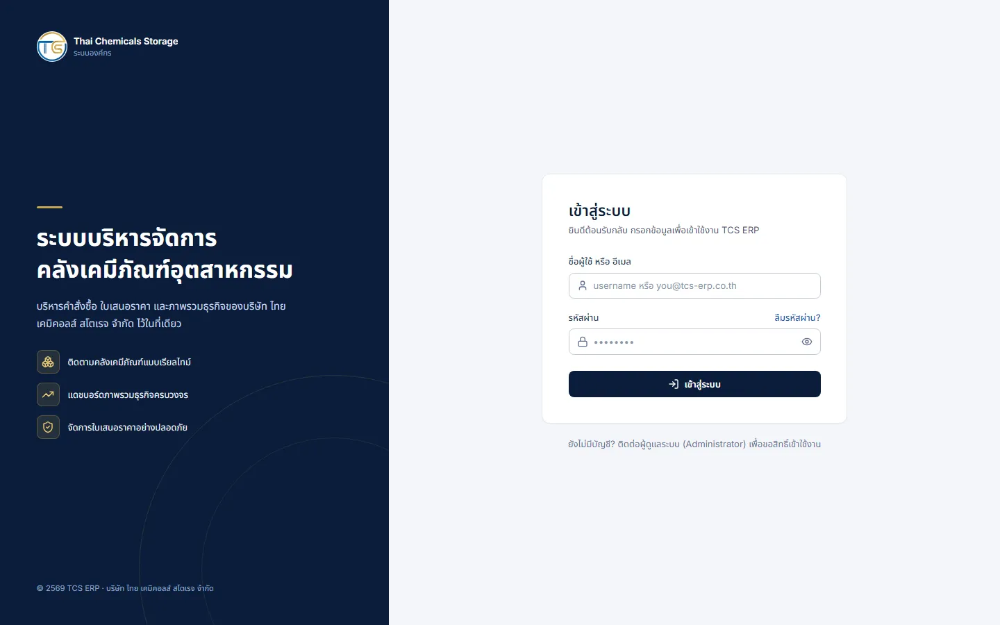
1.1การออกจากระบบ
- เปิดเมนูผู้ใช้ — กดชื่อและรูปของคุณที่มุมขวาบนของแถบด้านบน
- ออกจากระบบ — เลือก ออกจากระบบ ซึ่งอยู่ล่างสุดของเมนู
ใช้เครื่องส่วนกลางหรือเครื่องของคนอื่น ให้ออกจากระบบทุกครั้งก่อนลุกจากเครื่อง ถ้ามีเอกสารที่ยังบันทึกไม่สำเร็จ ระบบจะถามก่อนออก (ดู กล่อง “ยังไม่ได้บันทึก”)
1.2ลืมรหัสผ่าน
คำขอรหัสผ่านใหม่จะส่งไปที่ Super Admin ซึ่งจะออกรหัสผ่านชั่วคราวให้ แล้วแจ้งคุณเองทางโทรศัพท์หรือช่องทางที่สะดวก ระบบไม่ส่งรหัสทางอีเมล
- กดลิงก์ลืมรหัสผ่าน — ที่หน้าเข้าสู่ระบบ กด ลืมรหัสผ่าน? ขวาของชื่อช่องรหัสผ่าน
- กรอกชื่อผู้ใช้หรืออีเมล — ถ้าเคยพิมพ์ไว้ในหน้าเข้าสู่ระบบ ระบบเติมให้แล้ว
- ฝากข้อความ (ไม่บังคับ) — ช่อง ข้อความถึงผู้ดูแล ใส่เบอร์โทรหรือไลน์ที่ติดต่อกลับได้
- ส่งคำขอ — กด ส่งคำขอกู้รหัสผ่าน หน้าจอจะขึ้นว่า “ส่งคำขอแล้ว” กด กลับไปหน้าเข้าสู่ระบบ ได้เลย
- รอรหัสชั่วคราว — Super Admin ได้รับแจ้งเตือนที่กระดิ่ง และจะแจ้งรหัสชั่วคราวให้คุณ
- เข้าสู่ระบบด้วยรหัสชั่วคราว — แล้วตั้งรหัสใหม่ของคุณเอง (ดูหัวข้อถัดไป)
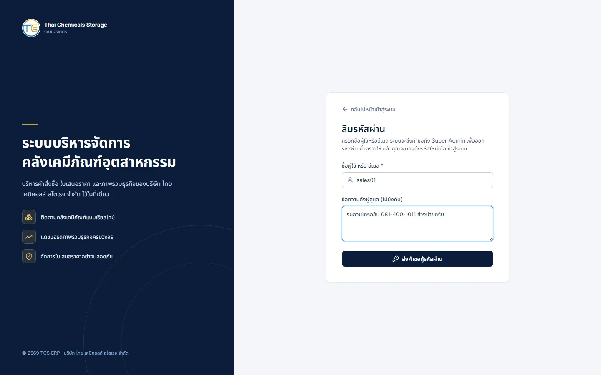
- ข้อความ “ส่งคำขอแล้ว” ขึ้นเหมือนกันทุกกรณี — ไม่ว่าชื่อที่กรอกจะมีในระบบหรือไม่ เพื่อไม่ให้หน้านี้ถูกใช้เดาชื่อผู้ใช้ ถ้ารอนานแล้วไม่มีใครติดต่อกลับ ให้ตรวจว่าพิมพ์ชื่อถูก หรือโทรหาผู้ดูแลระบบโดยตรง
- กดส่งซ้ำไม่ทำให้เกิดคำขอซ้ำ — ระหว่างที่คำขอเดิมยังรออยู่ การส่งอีกครั้งแค่อัปเดตคำขอเดิม
- ส่งได้ไม่เกิน 5 ครั้งใน 15 นาทีจากเครือข่ายเดียวกัน — เกินนั้นจะขึ้นว่า “ส่งคำขอบ่อยเกินไป” ให้รอสักครู่ หรือติดต่อผู้ดูแลระบบโดยตรง
- บัญชีที่ถูกระงับขอรหัสใหม่ไม่ได้ — ต้องให้ผู้ดูแลระบบเปิดใช้งานบัญชีก่อน
ฝั่ง Super Admin ดูคำขอและออกรหัสชั่วคราวได้ที่เมนู การจัดการระบบ › คำขอกู้รหัสผ่าน — ดู บทที่ 27
1.3ตั้งรหัสผ่านใหม่หลังได้รหัสชั่วคราว
เข้าสู่ระบบด้วยรหัสชั่วคราวแล้ว จะมีกล่อง ตั้งรหัสผ่านใหม่ ขึ้นทันที กล่องนี้ปิดไม่ได้ ต้องตั้งรหัสใหม่ก่อนถึงจะใช้งานต่อได้
- รหัสผ่านชั่วคราว — พิมพ์รหัสที่ Super Admin แจ้งมา
- รหัสผ่านใหม่ — อย่างน้อย 6 ตัวอักษร และต้องไม่ซ้ำกับรหัสชั่วคราว
- ยืนยันรหัสผ่านใหม่ — พิมพ์ซ้ำให้ตรงกัน แล้วกด บันทึกรหัสผ่านใหม่
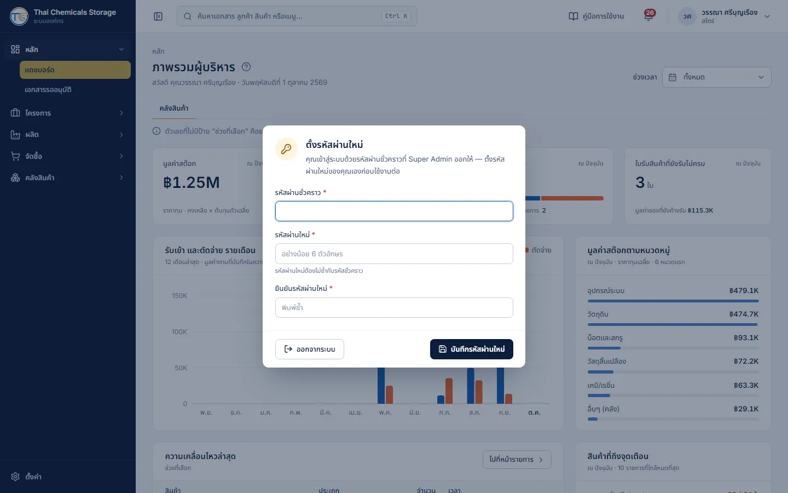
อยากเปลี่ยนรหัสผ่านเองในเวลาปกติ (ไม่ได้ลืม) ทำได้ที่ ตั้งค่า › ความปลอดภัย — ดู บทที่ 28
1.4เปิดระบบครั้งแรก: สร้างบัญชี Super Admin
หน้านี้ขึ้นครั้งเดียวตอนติดตั้งระบบใหม่ที่ยังไม่มีผู้ใช้งานเลย พนักงานทั่วไปจะไม่เห็น บัญชีที่สร้างจากหน้านี้เป็นผู้ดูแลระบบสูงสุดคนแรก และได้สิทธิ์ทุกอย่างโดยอัตโนมัติ
- กรอกข้อมูลให้ครบทุกช่อง — ชื่อ-นามสกุล · รหัสพนักงาน · ชื่อผู้ใช้ (Username) · อีเมล
- ตั้งรหัสผ่าน — อย่างน้อย 6 ตัวอักษร แล้วพิมพ์ซ้ำในช่องยืนยันรหัสผ่าน
- สร้างบัญชี — กด สร้างบัญชี Super Admin ระบบจะเข้าสู่ระบบให้ทันที จากนั้นไปสร้างบัญชีให้พนักงานคนอื่นที่ การจัดการระบบ › จัดการผู้ใช้งาน
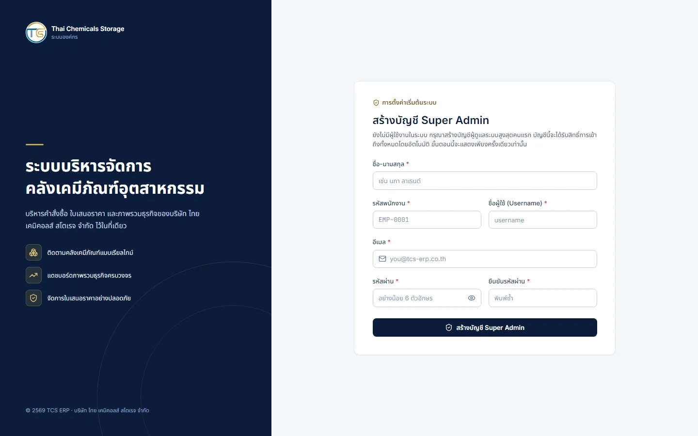
เริ่มต้นใช้งาน · บทที่ 2
ภาพรวมหน้าจอและเมนู
ทุกหน้าในระบบใช้โครงเดียวกัน: แถบเมนูด้านซ้าย แถบด้านบน และเนื้อหาตรงกลาง บทนี้อธิบายส่วนที่ใช้ร่วมกันทุกหน้า อ่านครั้งเดียวแล้วใช้ได้กับทุกบทที่เหลือ
2.1แถบเมนูด้านซ้าย (Sidebar)
เมนูแบ่งเป็นกลุ่มตามแผนก กดชื่อกลุ่มเพื่อเปิดหรือพับรายการในกลุ่ม เมนูที่กำลังเปิดอยู่จะเป็นแถบสีทอง คุณจะเห็นเฉพาะเมนูที่บัญชีของคุณมีสิทธิ์
| กลุ่มเมนู | เมนู | ดูบทที่ |
|---|---|---|
| หลัก | แดชบอร์ด · เอกสารรออนุมัติ | 4–5 |
| งานขาย | ใบเสนอราคา · Scope of Work · ใบส่งมอบสินค้า · Template ใบเสนอราคา · ลูกค้า | 6–11 |
| บริการ | บริการ · Template รายงานบริการ | 12 |
| บัญชี | แดชบอร์ดบัญชี · วางบิลตามงาน · ใบรับเงินมัดจำ/ใบกำกับภาษี · ใบแจ้งหนี้/ใบวางบิล · ใบเสร็จรับเงิน · ใบกำกับภาษี/ใบส่งสินค้า · สรุปเอกสารประจำเดือน · ทะเบียนภาษีซื้อ · ทะเบียนเจ้าหนี้ | 13–14 |
| โครงการ | ใบเบิกและใบคืนวัสดุ · เทมเพลตใบเบิก · ใบสั่งงาน · ใบขอซื้อ · ใบส่งมอบสินค้า | 15–16 |
| ผลิต | ใบสั่งผลิต · ใบเบิกและใบคืนวัสดุ · เทมเพลตใบเบิก · ใบขอซื้อ · ใบส่งมอบสินค้า | 16–17 |
| จัดซื้อ | ใบขอซื้อ (ทุกฝ่าย) · ใบขอซื้อ (รอสโตร์เช็คของ) · ใบสั่งซื้อ · ทะเบียนผู้ขาย · ทะเบียนรหัส | 18–19 |
| BD | Cost Control | 20 |
| คลังสินค้า | คลังสินค้า · หมวดหมู่สินค้า · สต๊อกสินค้า · ประวัติสต๊อก · เครื่องมือประจำทีม · ใบรับสินค้า · ใบรับวางบิล · ใบเบิก-คืนวัสดุ (สโตร์) · เปิดใบขอซื้อ (สโตร์) · ใบขอซื้อ (รอสโตร์เช็คของ) · คำขอเพิ่มสินค้า | 21–26 |
| การจัดการระบบ | จัดการผู้ใช้งาน · คำขอกู้รหัสผ่าน · บทบาทและสิทธิ์ · แผนกและทีม · บันทึกการใช้งาน | 27 |
| ล่างสุด | ตั้งค่า | 28 |
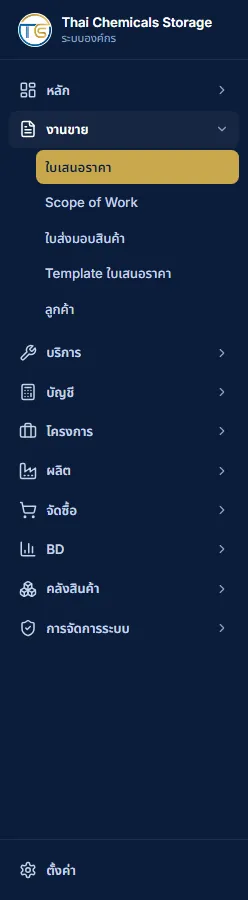
ย่อหรือขยายแถบเมนูได้เพื่อให้พื้นที่ทำงานกว้างขึ้น ด้วยปุ่มซ้ายสุดของแถบด้านบน ตอนย่อจะเหลือแค่ไอคอนของแต่ละกลุ่ม กดไอคอนกลุ่มไหน แถบเมนูจะกางออกพร้อมเปิดกลุ่มนั้นให้ · บนมือถือแถบเมนูจะซ่อนไว้ กดปุ่มเมนูที่มุมซ้ายบนเพื่อเปิด
2.2แถบด้านบน (Topbar)
แถบด้านบนอยู่ทุกหน้า เรียงจากซ้ายไปขวาดังนี้
| ส่วนประกอบ | การใช้งาน |
|---|---|
| ปุ่มย่อ/ขยายแถบเมนู | ซ้ายสุด ย่อแถบเมนูด้านซ้ายให้เหลือแค่ไอคอน หรือขยายกลับ (บนมือถือเป็นปุ่มเปิดเมนูแทน) |
| ช่องค้นหา | ค้นหาเอกสารทุกชนิด ลูกค้า สินค้า และเมนู ได้จากที่เดียว กด Ctrl + K ได้จากทุกหน้า (ดู หัวข้อถัดไป) |
| คู่มือการใช้งาน (ไอคอนรูปหนังสือ) | เปิดคู่มือฉบับนี้ในแท็บใหม่ · จอแคบจะเหลือแค่ไอคอน |
| กระดิ่งแจ้งเตือน | ตัวเลขในป้ายสีแดงบนกระดิ่งคือจำนวนแจ้งเตือนที่ยังไม่ได้อ่าน กดเพื่อเปิดรายการ |
| ชื่อ บทบาท และรูปของคุณ | เปิดเมนูผู้ใช้ · ถ้ามีจุดสีน้ำเงินที่รูป แปลว่ามีเรื่องใหม่ใน มีอะไรใหม่ ที่คุณยังไม่ได้ดู |
กระดิ่งแจ้งเตือน
แจ้งเรื่องที่เกี่ยวกับคุณ เช่น ใบเสนอราคารออนุมัติ ผลการอนุมัติหรือปฏิเสธ เอกสารที่มีคนส่งถึงคุณ ใบเบิกที่อนุมัติแล้วส่งถึงสโตร์ ใบขอซื้อที่ส่งถึงฝ่ายจัดซื้อ ผลของคำขอเพิ่มสินค้า และคำขอกู้รหัสผ่าน (เฉพาะ Super Admin)
- กดรายการ — เปิดเอกสารใบนั้นทันที
- อ่านทั้งหมด — มุมขวาบนของกล่อง (ขึ้นเมื่อมีรายการที่ยังไม่ได้อ่าน) ทำเครื่องหมายว่าอ่านแล้วทุกรายการ ตัวเลขบนกระดิ่งจะหายไป
- ไอคอนถังขยะท้ายรายการ — ลบรายการนั้นออกจากกล่อง
เมนูผู้ใช้
| เมนู | ทำอะไร |
|---|---|
| ตั้งค่า | แก้โปรไฟล์ ลายเซ็น รหัสผ่าน ภาษา และการแจ้งเตือน (ดู บทที่ 28) |
| วิธีใช้งาน | พากลับไปหน้าแดชบอร์ดแล้วเล่นคำแนะนำพาชมระบบรอบแรกอีกครั้ง |
| มีอะไรใหม่ | ประกาศฟีเจอร์ใหม่และการแก้ไขล่าสุดของระบบ เรียงใหม่สุดก่อน พร้อมวันที่ · มีจุดสีน้ำเงินท้ายเมนูเมื่อมีเรื่องที่ยังไม่ได้ดู |
| ออกจากระบบ | ออกจากระบบ (ดู บทที่ 1) |
2.3ค้นหาทุกเอกสาร (Ctrl + K)
ช่องค้นหาบนแถบด้านบนค้นได้ทุกเอกสารในระบบ ไม่ต้องรู้ว่าใบนั้นอยู่เมนูไหน กดที่ช่อง หรือกด Ctrl + K จากหน้าไหนก็ได้ แล้วพิมพ์ ผลลัพธ์จะขึ้นเป็นแผงใต้ช่องค้นหา แยกหัวข้อตามชนิดเอกสาร
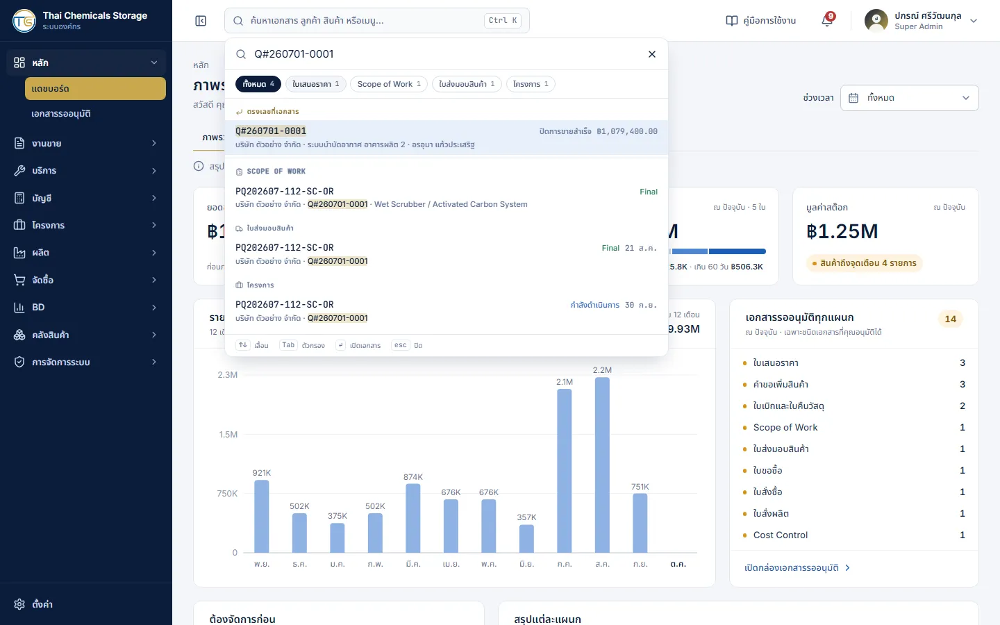
| ค้นเจออะไรบ้าง | รายละเอียด |
|---|---|
| เอกสาร | ใบเสนอราคา · Scope of Work · ใบส่งมอบสินค้า · รายงานบริการ · โครงการ · ใบเบิกและใบคืนวัสดุ · ใบสั่งงาน · ใบขอซื้อ · ใบสั่งซื้อ · ใบสั่งผลิต · Cost Control · ใบรับสินค้า · ใบรับวางบิล · ใบรับคืนและรับเข้าคลัง (สโตร์) · คำขอเพิ่มสินค้า · เอกสารบัญชีทั้ง 4 ชนิด |
| ข้อมูลหลัก | ลูกค้า · สินค้า · Template ใบเสนอราคา · ผู้ใช้งาน (ชื่อผู้ขายค้นได้ผ่านเอกสารที่ผู้ขายนั้นอยู่ เช่น ใบสั่งซื้อ ใบรับสินค้า ส่วนทะเบียนผู้ขายให้ค้นในหน้าทะเบียนผู้ขายเอง) |
| เมนู | ทุกหน้าในระบบ — พิมพ์ชื่อเมนูแล้วกดไปได้เลย |
พิมพ์เลขที่เอกสารแล้วกด Enter เปิดได้ทันที
ถือเอกสารอยู่ในมือแล้วอยากเปิดใบนั้น พิมพ์เลขที่ลงไปตรง ๆ ระบบรู้จักรูปแบบเลขที่ทุกแบบ และจะปักใบที่ตรงไว้บนสุดใต้หัวข้อ ตรงเลขที่เอกสาร โดยเลือกไว้ให้แล้ว กด Enter เปิดได้เลย
| ขึ้นต้นด้วย | คือเอกสาร |
|---|---|
Q# | ใบเสนอราคา |
SR- | รายงานบริการ |
MR- | ใบเบิกและใบคืนวัสดุ |
JO- | ใบสั่งงาน |
PR- FD- ED- SD- | ใบขอซื้อ (แยกรหัสตามฝ่ายที่ขอ) |
PO- | ใบสั่งซื้อ |
RR- RX- RI- | ใบรับสินค้า |
BR- | ใบรับวางบิล |
รหัสการจ่ายของสโตร์ เช่น PD- PP- OU- | ใบเบิก-จ่ายของสโตร์ |
รหัสรับของสโตร์ เช่น JD- FG- TK- | ใบรับคืนและรับเข้าคลัง (สโตร์) |
SC- | ใบสั่งผลิต |
CC- | Cost Control |
AR / BI / RE / IV | เอกสารบัญชี (มัดจำ / แจ้งหนี้ / ใบเสร็จ / ใบกำกับภาษี) |
{ตัวย่อ}-{ปีเดือน}-{ลำดับ} เช่น PO-202609-0001 โดยลำดับเริ่มนับ 0001 ใหม่ทุกต้นเดือน (นับตามเวลาไทย) · เลขรูปแบบเก่าอย่าง MR-2569-0004 ไม่ถูกแก้ ยังค้นเจอและใช้งานได้ตามปกติ · ใบเสนอราคา (Q#) และเอกสารบัญชีมีรูปแบบของตัวเองScope of Work ไม่อยู่ในตารางนี้เพราะเลขที่งานเป็นข้อความที่พิมพ์เอง ไม่มีรูปแบบตายตัว ค้นด้วยเลขที่งานหรือชื่อลูกค้าได้ตามปกติ
สิ่งที่ช่วยให้หาเจอเร็วขึ้น
- ทุกผลลัพธ์บอกว่าเป็นของงานไหน — บรรทัดล่างของแต่ละแถวมีชื่อลูกค้าและเลขที่งานต้นทาง พร้อมป้ายสถานะ ดูออกได้เลยว่าใช่ใบที่หาอยู่หรือไม่
- ปุ่มกรองชนิดเอกสาร — แถวปุ่มบนสุดของแผงบอกจำนวนที่เจอของแต่ละชนิด กดเพื่อดูเฉพาะชนิดนั้น
- เอกสารที่เปิดล่าสุด — ก่อนพิมพ์อะไร แผงจะแสดงเอกสารที่คุณเพิ่งเปิดไป กดกลับเข้าไปได้ทันที ใต้นั้นมีตารางตัวย่อเลขที่เอกสารไว้ดูว่าขึ้นต้นแบบไหนคือเอกสารอะไร
- กดผลลัพธ์แล้วเปิดเอกสารนั้นเลย — ไม่ใช่แค่พาไปหน้ารายการ
| ปุ่มลัด | ทำอะไร |
|---|---|
| Ctrl + K | เปิดช่องค้นหาจากหน้าไหนก็ได้ |
| ↑ ↓ | เลื่อนขึ้น-ลงในผลลัพธ์ |
| Tab | สลับปุ่มกรองชนิดเอกสาร |
| Enter | เปิดเอกสารที่เลือกอยู่ |
| Esc | ปิดแผงค้นหา |
2.4ปุ่ม “?” ดูคำแนะนำของแต่ละหน้า
หน้าที่มีคำแนะนำจะมีปุ่ม ? วงกลมเล็ก ๆ อยู่ข้างชื่อหน้า (ในหน้าเอกสาร ปุ่มนี้อยู่ในกลุ่มปุ่มบนหัวเอกสาร) กดเมื่อไรก็ได้เพื่อดูคำแนะนำของหน้านั้น ครั้งแรกที่คุณเข้าหน้าไหน คำแนะนำของหน้านั้นจะขึ้นเองหนึ่งครั้ง ครั้งต่อไปต้องกดปุ่ม ? เอง
หน้าที่มีคำแนะนำ ได้แก่ แดชบอร์ด · ใบเสนอราคา · Scope of Work · ใบส่งมอบสินค้า · Template ใบเสนอราคา · ลูกค้า · บริการ · Template รายงานบริการ · โครงการ · ใบเบิกและใบคืนวัสดุ · ใบสั่งงาน · ใบขอซื้อ · คลังสินค้า · เครื่องมือประจำทีม · จัดการผู้ใช้งาน · บทบาทและสิทธิ์ · บันทึกการใช้งาน · ตั้งค่า หน้าอื่นที่ยังไม่มีปุ่มนี้ ให้อ่านบทของหน้านั้นในคู่มือแทน
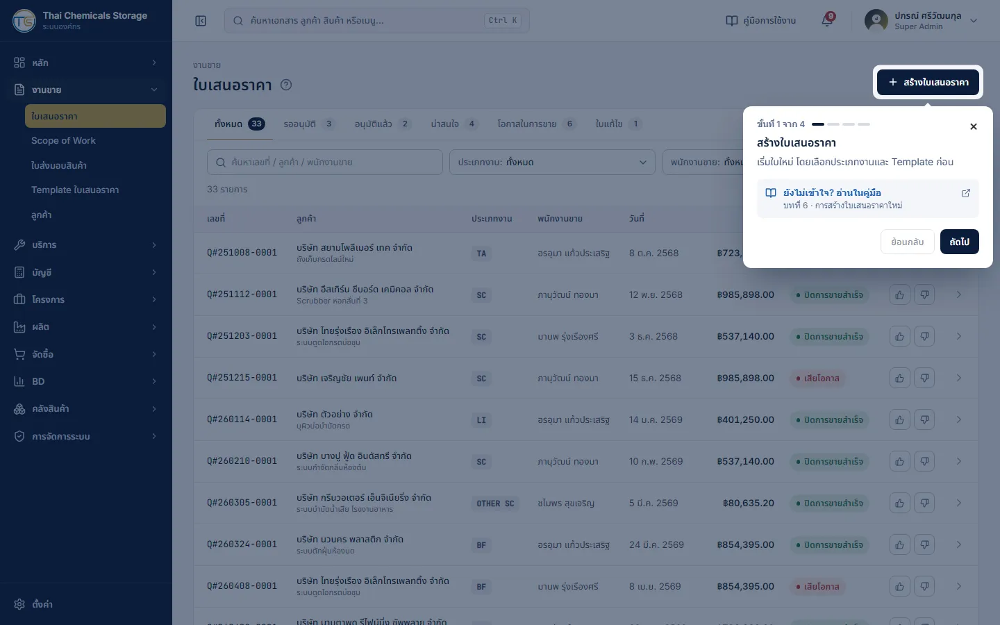
อ่านกล่องคำแนะนำ
- ขั้นที่ … จาก … และแถบความคืบหน้าด้านบน — บอกว่าหน้านี้มีกี่ขั้น และตอนนี้อยู่ขั้นไหน
- ชื่อสิ่งที่ชี้ กับประโยคเดียวว่าสิ่งนั้นทำอะไรได้ — รายละเอียด เงื่อนไข และข้อยกเว้นทั้งหมดอยู่ในคู่มือ ไม่ได้อยู่ในกล่อง
- ยังไม่เข้าใจ? อ่านในคู่มือ — เปิดคู่มือฉบับนี้ในแท็บใหม่ ตรงหัวข้อที่อธิบายเรื่องนั้นพอดี ใต้ลิงก์บอกไว้ว่าจะพาไปบทไหน หัวข้ออะไร
- ย้อนกลับ / ถัดไป — เดินทีละขั้น ขั้นสุดท้ายปุ่มจะเปลี่ยนเป็น เสร็จสิ้น
- ปิดได้ทุกเมื่อ — กดปุ่ม × มุมขวาบนของกล่อง หรือกด Esc
อยากดูคำแนะนำพาชมระบบรอบแรก (เมนู แถบด้านบน และแดชบอร์ด) อีกครั้ง ให้เลือก วิธีใช้งาน ในเมนูผู้ใช้
2.5ภาษา
ระบบแสดงเป็นภาษาไทยโดยค่าเริ่มต้น เปลี่ยนเป็นภาษาอังกฤษได้ที่ ตั้งค่า › โปรไฟล์ › ภาษา กด ไทย หรือ English ระบบเปลี่ยนภาษาทันที ไม่ต้องกดบันทึก ภาษาที่เลือกถูกจำไว้ในเบราว์เซอร์ของเครื่องนั้น ถ้าไปใช้เครื่องอื่นต้องเลือกใหม่
2.6หน้ารายการ: แท็บ ค้นหา และตัวกรอง
หน้าแรกของทุกเมนูเป็นหน้ารายการ หน้าตาและตำแหน่งปุ่มเหมือนกันทุกเมนู เช่น ใบเสนอราคา ลูกค้า ใบสั่งซื้อ ใบเบิก เรียนหน้าเดียวแล้วใช้ได้ทุกหน้า
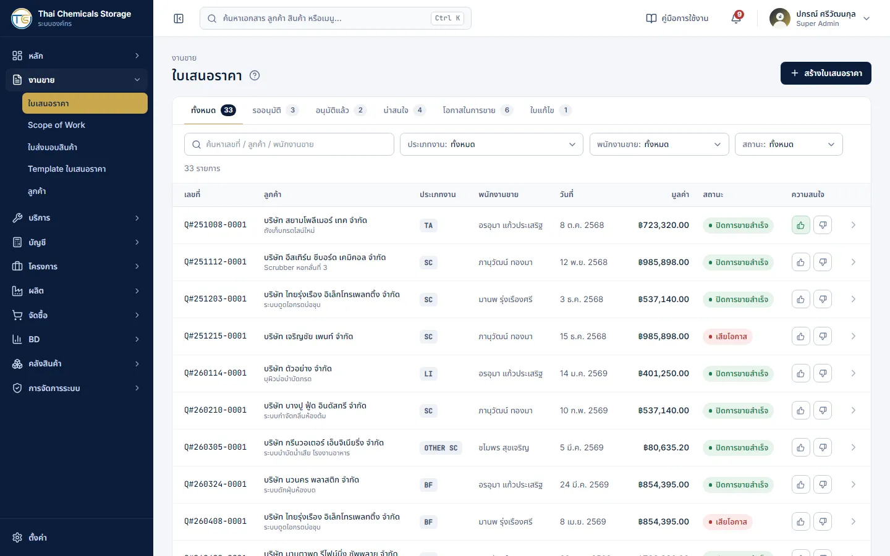
| ส่วนของหน้า | ใช้ทำอะไร |
|---|---|
| ชื่อหน้าและปุ่ม ? | มุมซ้ายบน บอกกลุ่มเมนูและชื่อหน้า ปุ่ม ? (ถ้าหน้านั้นมีคำแนะนำ) เปิดคำแนะนำของหน้านี้ (ดู ปุ่ม ?) |
| ปุ่มสร้าง (สีกรมท่า) | มุมขวาบน ที่เดิมทุกเมนู เช่น สร้างใบเสนอราคา · สร้างใบสั่งซื้อ · เพิ่มข้อมูลลูกค้า ถ้าไม่เห็นปุ่มนี้ แปลว่าบัญชีของคุณไม่มีสิทธิ์สร้าง |
| แท็บ | แยกรายการตามสถานะ ตัวเลขข้างชื่อแท็บคือจำนวนรายการในแท็บนั้น แท็บที่เลือกอยู่มีเส้นสีทองใต้ชื่อ หน้าส่วนใหญ่แท็บแรกคือ ทั้งหมด · ใช้ลูกศรซ้าย/ขวาบนคีย์บอร์ดเลื่อนแท็บได้ |
| ช่องค้นหา | อยู่ซ้ายสุดใต้แท็บ พิมพ์แล้วรายการจะกรองให้ทันที ข้อความจาง ๆ ในช่องบอกว่าค้นจากอะไรได้บ้าง เช่น เลขที่ ลูกค้า หรือพนักงานขาย |
| ปุ่มตัวกรอง | อยู่ถัดจากช่องค้นหา ชื่อปุ่มบอกค่าที่เลือกอยู่ เช่น ประเภทงาน: ทั้งหมด · พนักงานขาย: ทั้งหมด · สถานะ: ทั้งหมด กดแล้วเลือกค่าที่ต้องการ · ตัวกรองแต่ละหน้าไม่เหมือนกัน เช่น บางหน้ามีตัวกรองช่วงวันที่ |
| จำนวนรายการ | ขวาสุดของแถวตัวกรอง เช่น “8 รายการ” คือจำนวนที่ตรงกับแท็บ คำค้น และตัวกรองรวมกัน |
| ตาราง | กดที่ไหนก็ได้ในแถวเพื่อเปิดรายการนั้น ไม่ต้องหาปุ่มเปิด คอลัมน์สุดท้ายมักเป็นป้ายสถานะ |
| เปลี่ยนหน้า | ใต้ตาราง ข้อความ “แสดง 1–8 จาก 8 รายการ” บอกว่ากำลังดูแถวไหนอยู่ ตรงกลางบอกหน้าปัจจุบันและจำนวนหน้าทั้งหมด เช่น “2 / 5” กดลูกศรซ้ายหรือขวาเพื่อไปหน้าก่อนหน้าหรือหน้าถัดไป |
สีของป้ายสถานะ
ทุกโมดูลใช้สีชุดเดียวกัน ดูสีแล้วรู้ได้เลยว่าใบนั้นอยู่ตรงไหนของงาน
| สี | แปลว่า | ตัวอย่าง |
|---|---|---|
| เทา | ยังไม่เสร็จ | ร่าง / Draft · ยกเลิก |
| เหลือง | รอคนอื่นดำเนินการ | รออนุมัติ |
| น้ำเงิน | ผ่านแล้ว | อนุมัติแล้ว / Final · ส่งให้ลูกค้าแล้ว |
| เขียว | จบงาน | ลูกค้ายอมรับ · ปิดการขายสำเร็จ |
| แดง | ไม่ผ่าน | ลูกค้าปฏิเสธ |
2.7หน้าเอกสาร แผงข้าง และป๊อปอัป
นอกจากหน้ารายการ ระบบเปิดงานได้อีก 3 แบบ เลือกตามชนิดของงาน งานชนิดเดียวกันเปิดแบบเดียวกันทุกเมนู
| แบบ | ใช้กับ | หน้าตา |
|---|---|---|
| หน้าเอกสารเต็มหน้า | เอกสารที่มีเลขที่และขั้นตอนอนุมัติ เช่น ใบเสนอราคา · Scope of Work · ใบส่งมอบสินค้า · ใบขอซื้อ · ใบสั่งซื้อ · ใบรับสินค้า · ใบเบิก · ใบสั่งงาน · ใบสั่งผลิต · รายงานบริการ · Cost Control | เอกสารฉบับร่างระบบบันทึกให้เองระหว่างกรอก และยังมีปุ่ม บันทึก หรือ บันทึกร่าง บนหัวเอกสารให้กดเองได้ด้วย · ใบเสนอราคาใบใหม่และรายงานบริการใบใหม่ต้องกดบันทึกร่างครั้งแรกก่อน ระบบจึงจะสร้างใบให้ (ดู บทที่ 3) |
| แผงข้าง | ข้อมูลหลัก เช่น ลูกค้า · ผู้ขาย · สินค้า · ผู้ใช้งาน · แผนกและทีม · ทะเบียนรหัส · เทมเพลตใบเบิก | เลื่อนออกมาจากด้านขวา รายการยังเห็นอยู่ด้านหลัง ปุ่ม ยกเลิก บันทึก อยู่มุมขวาล่างของแผง · ปิดใช้งาน/เก็บถาวรอยู่ในเมนู เพิ่มเติม มุมซ้ายล่างของแผง |
| ป๊อปอัป | ยืนยันก่อนทำ เช่น ส่งขออนุมัติ · อนุมัติ · ปฏิเสธ · ลบ · ยกเลิก และหน้าต่างเลือกรายการ เช่น เลือกสินค้า เลือกใบต้นทาง | ปุ่มยืนยันอยู่มุมขวาล่าง ชื่อปุ่มบอกสิ่งที่จะเกิดขึ้น ถ้าเป็นการลบหรือยกเลิกปุ่มจะเป็นสีแดง |
หัวของหน้าเอกสาร
- ซ้าย — ลิงก์กลับไปหน้ารายการ · เลขที่เอกสาร · ป้ายสถานะ · สถานะการบันทึก (ดู บทที่ 3)
- ขวา — กลุ่มปุ่มของเอกสาร: ปุ่มพิมพ์ (เช่น พิมพ์ / PDF) · บันทึก หรือ บันทึกร่าง (ขึ้นเมื่อเอกสารยังแก้ได้) · เพิ่มเติม · ปุ่มหลักสีกรมท่า ลำดับอาจต่างกันเล็กน้อยในแต่ละเอกสาร
- ปุ่มหลักสีกรมท่า — คือขั้นต่อไปของงาน และเปลี่ยนไปตามสถานะ เช่น ร่าง → ส่งขออนุมัติ · อนุมัติแล้ว → ส่งให้ลูกค้า · ถ้าขั้นนั้นมีทางเลือกคู่กัน เช่น ปฏิเสธ จะเป็นปุ่มขอบเทาอยู่ข้าง ๆ
- งานที่ทำนาน ๆ ครั้งอยู่ในเมนู เพิ่มเติม — เช่น คัดลอก แก้ไข (Rewrite) ถอนคำขอ อัปเดตข้อมูลจากเอกสารต้นทาง · คำสั่งที่ทำให้ข้อมูลหาย เช่น ลบ หรือยกเลิก อยู่ล่างสุดหลังเส้นแบ่งเป็นสีแดง
- ปุ่มที่ยังใช้ไม่ได้ — จะเป็นสีจาง เอาเมาส์ชี้ค้างไว้จะขึ้นเหตุผลสั้น ๆ เช่น ยังกรอกช่องบังคับไม่ครบ หรือทำได้หลังอนุมัติแล้ว จะได้รู้ว่าต้องทำอะไรก่อน
ใต้หัวเอกสารมีแถบขั้นตอนที่บอกว่าเอกสารอยู่ขั้นไหน ด้านขวาของหน้าเป็นการ์ดสรุป เช่น ยอดรวม การอนุมัติ เอกสารที่เกี่ยวข้อง และคำแนะนำว่า “ขั้นต่อไป” ต้องทำอะไร · ใบเสนอราคามีแท็บ รายละเอียด ตัวอย่างก่อนพิมพ์ ประวัติ ใต้หัวเอกสารเพิ่มอีกชุด (ดู บทที่ 6)
-R1, -R2 ส่วนฉบับเดิมยังอยู่ครบเริ่มต้นใช้งาน · บทที่ 3
การบันทึกและการกู้คืนร่าง
ระบบบันทึกเอกสารให้เองระหว่างที่คุณกรอก และเก็บสำเนาไว้ในเครื่องเผื่อหน้าปิดไปกลางคัน บทนี้ใช้กับทุกเอกสารที่มีหน้าแก้ไข อ่านครั้งเดียวแล้วใช้ได้กับทุกบทที่เหลือ
เอกสารที่บันทึกอัตโนมัติ ได้แก่ ใบเสนอราคา · Scope of Work · ใบส่งมอบสินค้า · รายงานบริการ · ใบเบิกและใบคืนวัสดุ · ใบสั่งงาน · ใบขอซื้อ · ใบสั่งซื้อ · ใบสั่งผลิต · Cost Control · ใบรับสินค้า · ใบรับวางบิล · ใบรับคืนและรับเข้าคลัง (สโตร์)
3.1ระบบบันทึกร่างให้อัตโนมัติ
เอกสารฉบับร่าง (Draft) ที่มีอยู่ในระบบแล้ว กรอกไปได้เลย ระบบบันทึกให้เองหลังคุณหยุดพิมพ์ครู่หนึ่ง ดูสถานะได้ที่ข้อความเล็ก ๆ ข้างป้ายสถานะบนหัวเอกสาร
ปุ่ม บันทึก หรือ บันทึกร่าง บนหัวเอกสารยังอยู่และกดได้ตามปกติ ใช้เมื่ออยากบันทึกทันทีโดยไม่รอ หรือเมื่อการบันทึกอัตโนมัติไม่สำเร็จ ผลเหมือนกันทุกอย่าง จะกดหรือไม่กดก็ได้
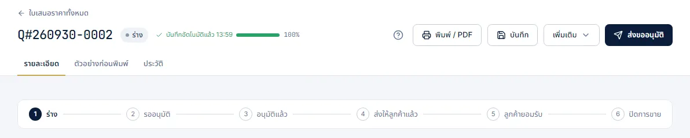
| ข้อความที่เห็น | แปลว่า |
|---|---|
| (ไม่มีข้อความ) | เพิ่งเปิดเอกสาร ยังไม่ได้แก้อะไร |
| มีการแก้ไขที่ยังไม่ได้บันทึก | เพิ่งพิมพ์ไป ระบบกำลังจะบันทึกให้ |
| กำลังบันทึกอัตโนมัติ... | กำลังส่งขึ้นเซิร์ฟเวอร์ |
| บันทึกอัตโนมัติแล้ว HH:MM (สีเขียว) | เรียบร้อย ปิดหน้าได้เลย |
| บันทึกอัตโนมัติไม่สำเร็จ กรุณากดบันทึกเอง (ตัวอักษรสีแดง) | ส่งไม่ผ่าน เช่น เน็ตหลุด หรือมีช่องที่ข้อมูลไม่ถูกต้อง ตรวจการเชื่อมต่อและช่องที่ขึ้นสีแดง แล้วกดปุ่ม บันทึก บนหัวเอกสาร ถ้ายังไม่กด ระบบจะลองส่งใหม่เมื่อคุณแก้อะไรครั้งถัดไป และถ้าจะออกจากหน้า ระบบจะถามก่อน (ดู หัวข้อ 3) |
| เก็บร่างไว้ในเครื่องให้อัตโนมัติ | เอกสารใบใหม่ที่ยังไม่ถูกสร้างในระบบ ระบบเก็บสิ่งที่กรอกไว้ในเบราว์เซอร์ให้ก่อน ต้องกดบันทึกครั้งแรกเอง (ดูด้านล่าง) |
3.2เปิดเอกสารแล้วเจอแถบสีทอง “พบร่างที่ยังไม่ได้บันทึก”
นอกจากบันทึกขึ้นเซิร์ฟเวอร์ ระบบยังเก็บสำเนาสิ่งที่คุณกรอกไว้ในเบราว์เซอร์ของเครื่องนั้นด้วย ถ้าคราวก่อนหน้าปิดไปทั้งที่ยังกรอกค้างอยู่ และสิ่งที่กรอกยังไม่ถึงเซิร์ฟเวอร์ ตอนเปิดเอกสารใบนั้นใหม่จะมีแถบสีทองถาม พร้อมบอกวันเวลาที่เก็บร่างไว้
- กู้คืนร่างนี้ — เอาสิ่งที่กรอกค้างไว้กลับมา
- ทิ้งร่างนี้ — ใช้ข้อมูลที่อยู่ในระบบ ไม่เอาของค้าง
3.3กล่อง “ยังไม่ได้บันทึก” ตอนจะออกจากหน้า
ถ้ากดออกจากเอกสารในตอนที่งานเสี่ยงหายจริง จะมีกล่องถามก่อน บอกสาเหตุและเลขที่ของใบที่ค้าง (ใบเสนอราคาใบใหม่ที่ยังไม่มีเลขที่จะบอกชื่อลูกค้าแทน) พร้อม 3 ปุ่ม กล่องนี้ขึ้นใน 3 กรณีเท่านั้น
- เอกสารใบใหม่ที่ยังไม่เคยบันทึกลงระบบ — เช่น ใบเสนอราคาใบใหม่ ถ้าออกตอนนี้ระบบจะยังไม่สร้างเอกสารให้
- เอกสารที่พ้นฉบับร่างแล้วแต่ยังแก้บางช่องได้ — ระบบไม่บันทึกอัตโนมัติให้ ต้องกดบันทึกเองก่อนออก
- การบันทึกอัตโนมัติครั้งล่าสุดไม่สำเร็จ — การแก้ไขบางส่วนอาจยังไม่ถึงเซิร์ฟเวอร์
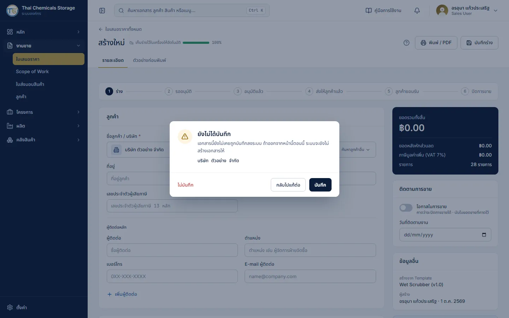
| ปุ่ม | ผลลัพธ์ |
|---|---|
| กลับไปแก้ต่อ | ปิดกล่อง อยู่หน้าเดิม |
| ไม่บันทึก | ออกไปโดยทิ้งงานที่ค้าง |
| บันทึก | บันทึกจริงก่อนแล้วค่อยออก (เหมือนกดปุ่มบันทึกบนหัวเอกสาร ตรวจช่องบังคับครบเหมือนกัน) ถ้าบันทึกไม่ผ่าน กล่องจะขึ้นข้อความสีแดงและค้างอยู่หน้าเดิมให้แก้ · กด Enter ในกล่องนี้คือกดบันทึก |
กล่องนี้ดักไว้ทุกทางในระบบ — ลิงก์กลับไปหน้ารายการ เมนูซ้าย เมนูผู้ใช้ ผลการค้นหา กระดิ่งแจ้งเตือน และลิงก์ข้ามเอกสาร
เริ่มต้นใช้งาน · บทที่ 4
แดชบอร์ด
แดชบอร์ดคือหน้าแรกหลังเข้าสู่ระบบ สรุปงานของทุกแผนกจากข้อมูลจริง ให้หัวหน้าและผู้บริหารเห็นภาพรวมและงานที่ค้างได้ในหน้าเดียว
หัวหน้ามีชื่อหน้า ภาพรวมผู้บริหาร ใต้ชื่อเป็นบรรทัดทักทาย สวัสดี คุณ… · วันที่วันนี้ มุมขวาบนคือช่อง ช่วงเวลา (ดู ตัวกรอง) และในแท็บขายมีปุ่ม ส่งออก อยู่ข้าง ๆ (ดู ส่งออกรายงาน) ใต้ชื่อหน้าเป็นแถบแท็บแผนก แท็บภาพรวมรวมทุกแผนกไว้ แท็บอื่นดูละเอียดทีละแผนก
| แท็บ | ดูอะไร |
|---|---|
| ภาพรวม | ตัวเลขหลัก 4 ตัวของบริษัท · รายได้รายเดือน · เอกสารรออนุมัติทุกแผนก · งานที่ต้องจัดการก่อน · สรุปแต่ละแผนก · กิจกรรมล่าสุด (ดู แท็บภาพรวม) |
| ขาย | ทุกอย่างของฝ่ายขาย รวมอนุมัติใบเสนอราคาได้จากหน้านี้ มีสวิตช์ VAT และปุ่มส่งออก (ดู แท็บขาย) |
| บริการ | รายงานฉบับร่าง · งานที่ปิดเดือนนี้ · งานบริการที่ตรวจรายเดือน · การอนุมัติของลูกค้า · PM ที่จะถึงใน 30 วัน · งานที่ต้องตามต่อ |
| จัดซื้อ | ใบขอซื้อรอออกใบสั่งซื้อ · ใบสั่งซื้อรออนุมัติ · ยังรับของไม่ครบ · เลยวันที่ต้องการรับของ · มูลค่าสั่งซื้อรายเดือน · ผู้ขายยอดสูงสุด · ใบขอซื้ออยู่ขั้นไหน |
| คลังสินค้า | มูลค่าสต๊อก · สินค้าถึงจุดเตือน · ใบเบิกรอจ่ายของ · ใบรับสินค้าที่ยังรับไม่ครบ · รับเข้าและตัดจ่ายรายเดือน · มูลค่าสต๊อกตามหมวดหมู่ · ความเคลื่อนไหวล่าสุด · งานอื่นที่รอสโตร์ |
| ผลิต · โครงการ · BD | ใบสั่งผลิตและใบสั่งงานที่รออนุมัติ ใกล้หรือเลยกำหนด · ใบเบิกรอสโตร์จ่าย · ใบขอซื้อที่ยังไม่ได้ของ · ใบส่งมอบสินค้า · จำนวน Cost Control แยกสถานะ กราฟรายเดือน และสัดส่วนที่ผูกกับ Scope of Work (นับจำนวนใบเท่านั้น ไม่แสดงยอดเงิน) ทุกตัวเลขบอกว่าเป็นของแผนกไหน สีน้ำเงิน = ผลิต สีส้ม = โครงการ |
| บัญชี | ยอดออกใบกำกับภาษี · VAT ขาย · ยอดค้างชำระ · งานที่ยังไม่ออกบิลมัดจำ · อายุหนี้ · ลูกค้ารายใหญ่ เหมือนเมนูแดชบอร์ดบัญชี (ดู บทที่ 13) |
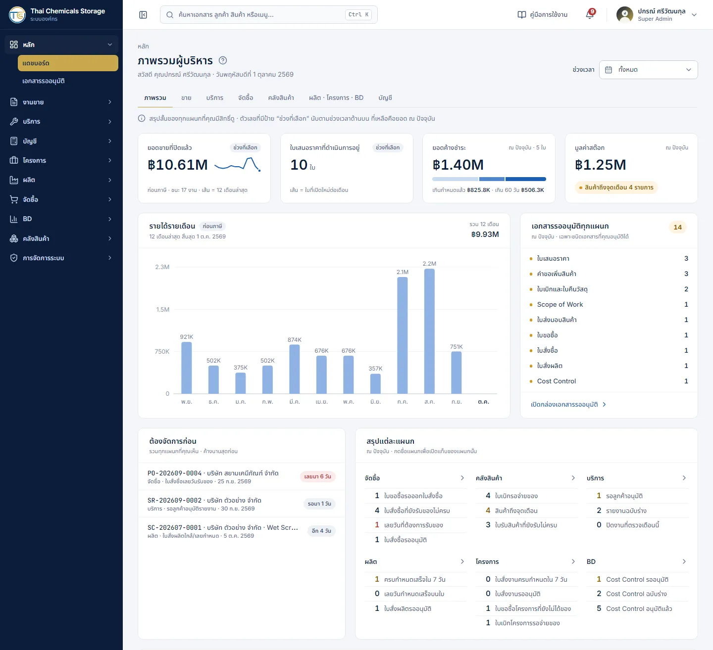
#dashboard/inventory) ส่งต่อให้คนอื่นเปิดแท็บเดียวกันได้4.1แท็บขาย
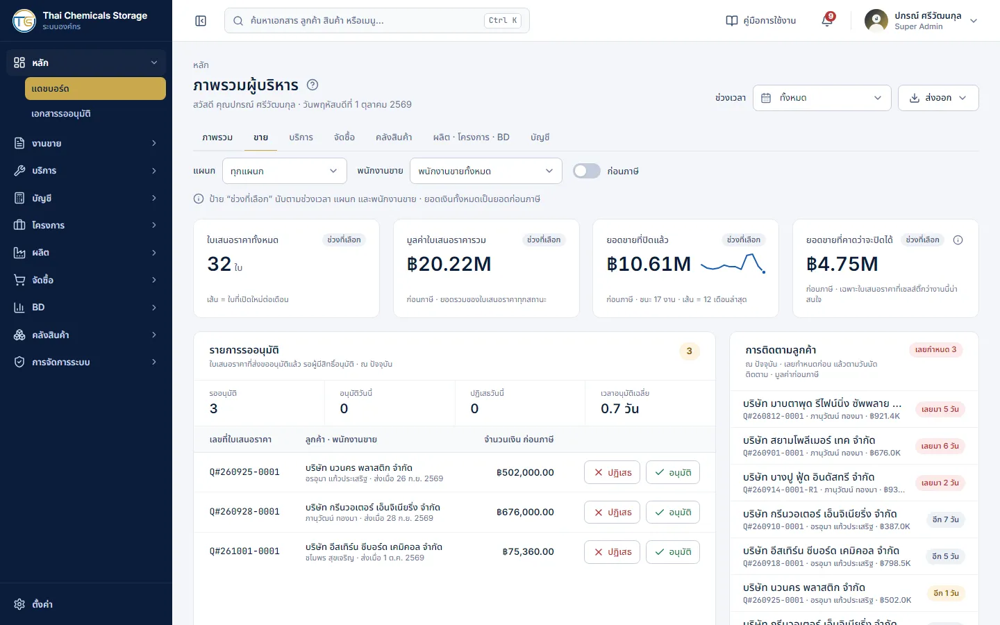
ใต้แถบแท็บมีแถวตัวกรอง แผนก · พนักงานขาย และสวิตช์ VAT ข้างสวิตช์เขียนว่า ก่อนภาษี หรือ รวม VAT 7% ตามที่เลือก กดสวิตช์แล้วยอดเงินทุกการ์ดในแท็บเปลี่ยนตามทันที (ตัวเลขยังหมายถึงสิ่งเดิม แค่บวกหรือไม่บวก VAT)
- ตัวเลขหลัก 4 ใบ — ใบเสนอราคาทั้งหมด · มูลค่าใบเสนอราคารวม · ยอดขายที่ปิดแล้ว · ยอดขายที่คาดว่าจะปิดได้ (เฉพาะใบที่เซลส์ติ๊กว่างานนี้น่าสนใจ)
- รายการรออนุมัติ — ใบเสนอราคาที่รอผู้มีสิทธิ์อนุมัติ พร้อมจำนวนที่อนุมัติ/ปฏิเสธวันนี้ และเวลาอนุมัติเฉลี่ย ผู้มีสิทธิ์กด อนุมัติ หรือ ปฏิเสธ ได้จากแถวนั้นเลย กดอนุมัติจะขึ้นกล่องยืนยันก่อน ส่วนกดปฏิเสธจะเปิดช่องให้พิมพ์เหตุผลใต้แถว (ต้องใส่เหตุผล) แล้วกด ยืนยันปฏิเสธ
- การติดตามลูกค้า — ใบที่มีวันนัดติดตาม ใบที่เลยกำหนดขึ้นก่อน แล้วเรียงตามวันนัด
- งานที่ต้องดำเนินการ — รอการอนุมัติ · การติดตามที่เลยกำหนด · ใบเสนอราคาที่หมดอายุ · ลูกค้าใหม่
- ใบเสนอราคาแต่ละขั้น — ตารางจำนวนและมูลค่าของแต่ละขั้น พร้อมสัดส่วน “ต่อจากขั้นก่อน” กดขั้นเพื่อเปิดรายการใบในขั้นนั้น
- สถิติสถานะใบเสนอราคา — สัดส่วน Win / Lose / Active / Non Active
- รายได้รายเดือน และยอดขายที่คาดการณ์ — รายได้จากใบที่ปิดการขายสำเร็จ (สลับดูรายสัปดาห์ รายเดือน รายไตรมาส รายปีได้) และยอดที่คาดว่าจะได้จากโอกาสในการขายที่เปิดอยู่ โดยอิงอัตราชนะย้อนหลังของทั้งบริษัท
- รายละเอียดเชิงลึก — ผลการดำเนินงานของพนักงานขาย (กดหัวคอลัมน์เพื่อเรียงใหม่) · ประสิทธิภาพการขาย · การวิเคราะห์ตามประเภทงาน · ความสนใจใบเสนอราคา · การวิเคราะห์ลูกค้า (รวมอัตราลูกค้าซื้อซ้ำ)
- Scope of Work และใบส่งมอบสินค้า — การ์ดเดียว บอกจำนวนใบแยกสถานะ และ Scope of Work ที่ยังไม่มีเลข PO นับทุกใบในระบบ ไม่ขึ้นกับตัวกรอง
- สรุปการแจ้งเตือน — การแจ้งเตือนที่คุณยังไม่ได้อ่าน เป็นข้อมูลส่วนตัว ไม่ขึ้นกับตัวกรอง
- กิจกรรมของฝ่ายขาย — กราฟและตารางจำนวนการสร้างใหม่ แก้ไข เปลี่ยนสถานะ ขออนุมัติ และอนุมัติสำเร็จ แยกตามช่วงเวลาและรายพนักงานขาย
4.2ส่งออกรายงาน (Excel / CSV)
ในแท็บขาย กดปุ่ม ส่งออก มุมขวาบน แล้วเลือก ส่งออก Excel หรือ ส่งออก CSV จากเมนู ไฟล์ที่ได้ตรงกับตัวกรองที่ตั้งไว้ตอนนั้นเสมอ ทั้งช่วงเวลา แผนก พนักงานขาย และสวิตช์ VAT ชื่อไฟล์ Excel ระบุช่วงเวลาและบอกว่าก่อนภาษีหรือรวม VAT ไว้ให้ จะได้ไม่สับสนว่าไฟล์ไหนเป็นของงวดไหน
| ชนิดไฟล์ | ได้อะไร |
|---|---|
| Excel | ไฟล์ .xlsx 10 ชีต — สรุปภาพรวม · สถานะใบเสนอราคา · รายเซลล์ · รายเซลล์ × สถานะ · โอกาสปิดการขาย · รายการใบเสนอราคา (หนึ่งแถวต่อใบ เอาไปทำ Pivot ต่อได้) · ลูกค้า · ประเภทงาน · แนวโน้ม · ติดตามงาน · ตัวเลขเป็นตัวเลขจริง ใช้ SUM() ได้ทันที |
| CSV | ไฟล์เดียวจบ เนื้อหาเป็นชุดย่อยของ Excel (4 ส่วนหลัก) สำหรับเปิดในโปรแกรมอื่น |
4.3ตัวกรอง
ช่อง ช่วงเวลา มุมขวาบนใช้กับทุกแท็บ (ยกเว้นแท็บบัญชี) เลือกได้ ทั้งหมด · วันนี้ · เมื่อวาน · 7 วันล่าสุด · 14 วันล่าสุด · เดือนนี้ · เดือนที่แล้ว · ไตรมาสนี้ · ปีนี้ หรือ กำหนดเอง เพื่อเลือกวันเริ่มและวันสิ้นสุด
- ตัวเลขที่มีป้าย “ช่วงที่เลือก” เปลี่ยนตามช่วงเวลาทันที
- ตัวเลขที่เขียนว่า “ณ ปัจจุบัน” และกราฟที่เขียนว่า “12 เดือนล่าสุด · ไม่ขึ้นกับช่วงวันที่” ไม่เปลี่ยนตามช่วงเวลา
- แท็บขาย มีตัวกรอง แผนก พนักงานขาย และสวิตช์ VAT เพิ่มใต้แถบแท็บ (ผู้ที่เห็นเฉพาะข้อมูลของตัวเองจะไม่เห็นตัวกรองแผนกและพนักงานขาย)
- แท็บบัญชี ใช้ช่วงเวลาและตัวกรองพนักงานขายของตัวเอง ช่วงเวลาเริ่มที่ระดับเดือน (เดือนนี้ · เดือนที่แล้ว · ไตรมาสนี้ · ปีนี้ · กำหนดเอง)
4.4แท็บภาพรวม
แท็บแรกที่เห็นเมื่อเข้าระบบ สรุปสั้นของทุกแผนกที่คุณมีสิทธิ์ดู
- ตัวเลขหลัก 4 ใบ — ยอดขายที่ปิดแล้ว · ใบเสนอราคาที่ดำเนินการอยู่ · ยอดค้างชำระ (พร้อมแถบอายุหนี้ และยอดที่เกินกำหนดแล้ว · เกิน 60 วัน) · มูลค่าสต๊อก (พร้อมป้ายจำนวนสินค้าถึงจุดเตือน) เส้นกราฟเล็กในการ์ดยอดขายคือแนวโน้ม 12 เดือนล่าสุด · ถ้าคุณไม่เห็นบางแผนก ระบบจะใส่ตัวเลขของแผนกที่คุณเห็นแทน
- รายได้รายเดือน — กราฟแท่ง 12 เดือนล่าสุด พร้อมยอดรวมบนหัวการ์ด
- เอกสารรออนุมัติทุกแผนก — จำนวนใบที่รอ แยกตามชนิดเอกสาร นับเฉพาะชนิดที่คุณอนุมัติได้ กดแถวหรือกด เปิดกล่องเอกสารรออนุมัติ เพื่อไปอนุมัติ (ดู บทที่ 5)
- ต้องจัดการก่อน — งานที่ค้างของทุกแผนกที่คุณเห็น เช่น ใบสั่งซื้อเลยวันรับของ รายงานรอลูกค้าอนุมัติ เรียงค้างนานสุดก่อน ป้ายสีแดงคือเลยกำหนดแล้ว กดแถวเพื่อเปิดเอกสาร
- สรุปแต่ละแผนก — ตัวเลขงานค้างของแต่ละแผนก ณ ปัจจุบัน กดชื่อแผนกเพื่อเปิดแท็บของแผนกนั้น
- กิจกรรมล่าสุด — สิ่งที่เกิดขึ้นล่าสุดในทุกแผนกที่คุณเห็น ล่าสุดก่อน
เริ่มต้นใช้งาน · บทที่ 5
เอกสารรออนุมัติ
หน้านี้ตอบคำถามเดียว: “ตอนนี้มีใบอะไรรอให้ฉันอนุมัติอยู่บ้าง” รวมทุกแผนกไว้ที่เดียว สำหรับหัวหน้าที่ต้องอนุมัติงานของหลายฝ่าย จะได้ไม่ต้องไล่เปิดทีละเมนู
เปิดได้จากเมนู หลัก › เอกสารรออนุมัติ หรือกด เปิดกล่องเอกสารรออนุมัติ ในแท็บภาพรวมของแดชบอร์ด
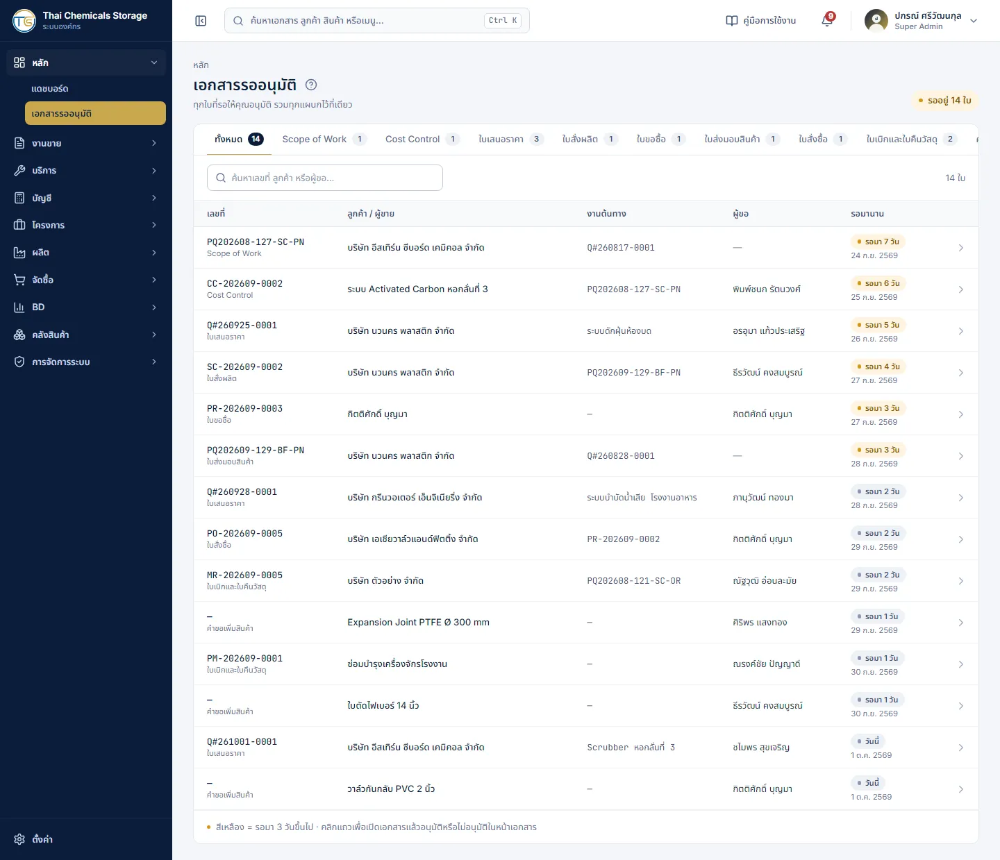
5.1เห็นอะไรบ้าง
หน้านี้รวมเอกสาร 11 ชนิด ที่อยู่ในสถานะรออนุมัติ ได้แก่ ใบเสนอราคา · Scope of Work · ใบส่งมอบสินค้า · ใบเบิกและใบคืนวัสดุ · ใบรับคืน (สโตร์) · ใบสั่งงาน · ใบขอซื้อ · ใบสั่งซื้อ · ใบสั่งผลิต · Cost Control · คำขอเพิ่มสินค้า โดยแสดงเฉพาะชนิดที่คุณมีสิทธิ์อนุมัติ
| ส่วนของหน้า | ใช้ทำอะไร |
|---|---|
| ป้าย “รออยู่ … ใบ” มุมขวาบน | จำนวนใบทั้งหมดที่รอคุณอยู่ |
| แท็บชนิดเอกสาร | แท็บแรกคือ ทั้งหมด ถัดไปเป็นชนิดเอกสารที่มีใบรออยู่จริง ตัวเลขข้างชื่อแท็บคือจำนวนที่รอของชนิดนั้น กดเพื่อดูเฉพาะชนิดนั้น |
| ช่องค้นหา | ค้นด้วยเลขที่เอกสาร ชื่อลูกค้า/ผู้ขาย เลขที่งานต้นทาง หรือชื่อผู้ขออนุมัติ · ขวาสุดของแถวนี้บอกจำนวนใบที่ตรงกับแท็บและคำค้น |
| คอลัมน์ “เลขที่” | เลขที่เอกสาร และชนิดเอกสารตัวเล็กใต้เลขที่ (คำขอเพิ่มสินค้ายังไม่มีเลขที่ จะขึ้นเป็นขีด) |
| คอลัมน์ “ลูกค้า / ผู้ขาย” | คู่ค้าของใบนั้น |
| คอลัมน์ “งานต้นทาง” | เลขที่งานหรือเอกสารที่ใบนั้นผูกอยู่ ดูได้ว่าเป็นงานไหนโดยไม่ต้องเปิดใบ |
| คอลัมน์ “ผู้ขอ” | คนที่ส่งใบนั้นมาขออนุมัติ |
| คอลัมน์ “รอมานาน” | จำนวนวันที่ใบรออยู่ พร้อมวันที่ ป้ายจะเป็นสีเหลืองเมื่อใบรอมา 3 วันขึ้นไป เป็นแค่การสะกิดสายตา ไม่ใช่กติกาของบริษัท (ท้ายตารางมีบรรทัดอธิบายสีนี้ไว้) |
การค้นหาและแท็บทำงานเหมือนหน้ารายการอื่นในระบบ — ดู หน้ารายการ: แท็บ ค้นหา และตัวกรอง
5.2กดแถวแล้วเกิดอะไรขึ้น
กดที่แถวไหน ระบบจะเปิดเอกสารใบนั้นให้ แล้วกดอนุมัติหรือไม่อนุมัติที่หัวของตัวเอกสารตามปกติ
- เปิดใบ — กดแถวของเอกสารที่ต้องการ
- ตรวจเนื้อหา — อ่านรายละเอียดในหน้าเอกสาร ถ้าเป็นใบเสนอราคา เปิดแท็บ ตัวอย่างก่อนพิมพ์ ใต้หัวเอกสารเพื่อดูหน้าตาที่จะพิมพ์ออกไปได้ด้วย
- ตัดสินใจ — กดปุ่มอนุมัติ (ปุ่มหลักสีกรมท่า) หรือปุ่มปฏิเสธ/ไม่อนุมัติที่อยู่ข้าง ๆ บนหัวเอกสาร ระบบจะขึ้นกล่องยืนยันก่อน ถ้าปฏิเสธ ให้ใส่เหตุผลในกล่องนั้น ผู้ขอจะได้รู้ว่าต้องแก้อะไร
- กลับมาที่กล่อง — ใบที่ตัดสินใจแล้วจะหายไปจากหน้านี้ ตัวเลขทุกจุดลดลงตาม
งานขาย · บทที่ 6
ใบเสนอราคา (Quotations)
ใบเสนอราคาคือเอกสารแรกของงานขาย พนักงานขายใช้สร้างและส่งราคาให้ลูกค้า ส่วนผู้อนุมัติใช้ตรวจราคาก่อนส่งออกไป เมื่อลูกค้าตกลงแล้วจึงต่อยอดเป็น Scope of Work
6.1การสร้างใบเสนอราคาใหม่
กด สร้างใบเสนอราคา ที่มุมขวาบนของหน้ารายการ ระบบพาเข้าหน้า “สร้างใบเสนอราคา” ซึ่งมีแถบบอกขั้นตอน 4 ขั้นอยู่ด้านบน
- เลือกประเภทงาน — กดการ์ดประเภทงาน เช่น SC Wet Scrubber / Activated Carbon System, BF Dust Collector System, TA Fiberglass Tank ป้ายบนการ์ดบอกว่า “มี Template”, “มี Template 2 แบบ” หรือ “ยังไม่มี Template”
- เลือก Template — ขั้นนี้ขึ้นเฉพาะประเภทงานที่มี Template มากกว่าหนึ่งแบบ แต่ละการ์ดบอกเวอร์ชัน จำนวนหมวดหมู่งาน และจำนวนรายการ กดการ์ดที่ตรงกับงาน
- ตัวอย่าง Template — ตรวจหมวดหมู่งานและตัวอย่างรายการที่รวมอยู่ แล้วกด ใช้ Template นี้ (ประเภทงานที่มี Template แบบเดียว ระบบข้ามขั้นที่ 2 มาที่ขั้นนี้ให้เลย)
- ใบเสนอราคาฉบับร่าง — ระบบเปิดหน้าใบเสนอราคาที่มีหมวดหมู่งาน รายการ และเงื่อนไขจาก Template ใส่ไว้แล้ว แก้ไขต่อได้ทุกช่อง แล้วกด บันทึกร่าง เพื่อสร้างใบในระบบ
- ประเภทงานที่ยังไม่มี Template — กดการ์ดแล้วขั้นที่ 2 จะบอกว่า “ยังไม่มี Template สำหรับประเภทงานนี้” กด เริ่มจากใบเสนอราคาเปล่า เพื่อเปิดใบเปล่า หรือ เลือกประเภทงานอื่น · ผู้ที่ไม่มีสิทธิ์สร้าง Template จะเห็นปุ่ม แจ้งผู้ดูแลระบบ
- อยากเริ่มจากใบเปล่าทั้งที่มี Template — กด เริ่มจากแบบฟอร์มเปล่า ได้ในขั้นที่ 2 และ 3
- เลือกผิด กด ย้อนกลับ · ไม่สร้างแล้ว กด ยกเลิก
- ผู้ที่มีสิทธิ์จัดการ Template จะเห็นปุ่ม สร้าง Template ใหม่สำหรับประเภทงานนี้ ด้วย — ดูบทที่ 11
Q#YYMMDD-NNNN เช่น Q#260814-0001 — YYMMDD คือวันที่สร้างใบ (26 = ปี ค.ศ. 2026, 08 = เดือน, 14 = วัน) และ NNNN คือลำดับของวันนั้น เริ่มนับ 1 ใหม่ทุกวัน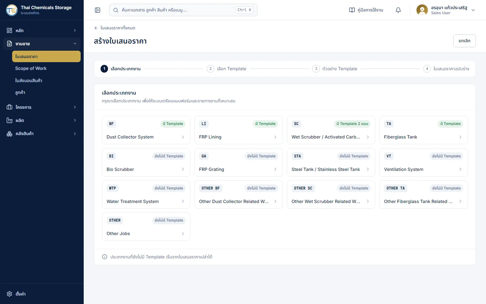
6.2การกรอกฟอร์ม
หน้าใบเสนอราคาแบ่งเป็นการ์ด ด้านซ้ายคือเนื้อหาของใบ ด้านขวาคือยอดรวมและข้อมูลติดตามการขาย ด้านบนมีแท็บ รายละเอียด (หน้าที่ใช้กรอก) ตัวอย่างก่อนพิมพ์ (หน้าตาใบจริงที่จะพิมพ์) และ ประวัติ ถ้าจะเปิดใบเดิมมาแก้ ให้กดแถวของใบนั้นในหน้ารายการ
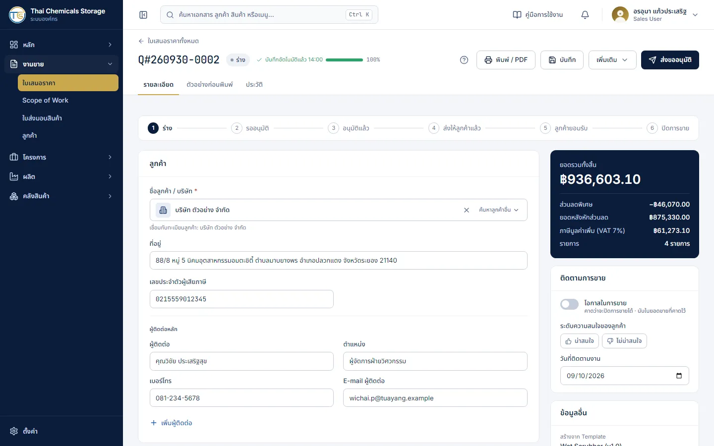
ลูกค้า
- ช่อง ชื่อลูกค้า / บริษัท พิมพ์ชื่อเองได้ หรือกด เลือกจากทะเบียนลูกค้า ที่ท้ายช่อง (ถ้ามีชื่ออยู่แล้วปุ่มนี้เขียนว่า ค้นหาลูกค้าอื่น) แล้วพิมพ์ชื่อบริษัท ผู้ติดต่อ เบอร์โทร อีเมล หรือเลขผู้เสียภาษี เพื่อเลือกจากทะเบียนลูกค้า — ระบบเติมชื่อ ที่อยู่ เลขผู้เสียภาษี ผู้ติดต่อ วิธีจัดส่ง โครงการ และที่อยู่จัดส่งให้ ใต้ช่องจะบอกว่าเชื่อมกับทะเบียนลูกค้ารายไหน
- หลังเลือกแล้วแก้ทุกช่องได้ตามงานนั้น การแก้ในใบไม่กระทบทะเบียนลูกค้า · หรือจะพิมพ์ข้อมูลลูกค้าเองโดยไม่เลือกจากทะเบียนก็ได้
- ช่องที่ต้องกรอกมีช่องเดียวคือ ชื่อลูกค้า / บริษัท ใบร่างที่ยังกรอกไม่ครบเก็บไว้ได้ตลอด ตัวบอกความครบถ้วนข้างหัวเอกสารบอกว่ายังขาดอะไร ปุ่มพิมพ์และส่งขออนุมัติกดได้เมื่อกรอกครบ
- เปลี่ยนลูกค้าที่เลือกจากทะเบียนได้เฉพาะตอนใบยังเป็นร่าง
- ผู้ติดต่อใส่ได้หลายคน — คนแรกคือ ผู้ติดต่อหลัก กด เพิ่มผู้ติดต่อ เพื่อเพิ่มคนถัดไป (ได้ถึง 10 คน) แต่ละคนมีชื่อ ตำแหน่ง เบอร์โทร และอีเมล · เพิ่มได้เฉพาะในใบเสนอราคา ทะเบียนลูกค้ายังมีผู้ติดต่อหลักคนเดียว · เลือกลูกค้าจากทะเบียนจะทับเฉพาะผู้ติดต่อหลัก · บนใบพิมพ์ ผู้ติดต่อคนที่ 2 ขึ้นไปขึ้นเป็นบรรทัดย่อยใต้ผู้ติดต่อหลัก
ข้อมูลเอกสาร
- โครงการ ประเภทงาน วันที่ออกเอกสาร วันหมดอายุ (ระบบบอกว่าเหลืออีกกี่วัน) อ้างอิง PO ของลูกค้า วิธีจัดส่ง และที่อยู่จัดส่ง (กรอกเมื่อส่งคนละที่กับที่อยู่ลูกค้า)
- พนักงานขาย — ระบบใส่ชื่อผู้สร้างใบให้ เปลี่ยนได้
- เงื่อนไขการชำระเงิน — เลือกจากรายการที่ใช้บ่อย หรือพิมพ์เงื่อนไขของงานนั้นเองได้ในช่องเดียวกัน
รายการสินค้า / บริการ
- เลือกจากคลังสินค้า — ค้นหารหัสหรือชื่อสินค้า กรองตามหมวดหมู่ ติ๊กได้หลายรายการ แล้วกด เพิ่ม N รายการ ระบบคัดลอกชื่อ หน่วย และราคาเริ่มต้นมาต่อท้ายตาราง ถ้าสินค้ามีสเปคจะขึ้นเป็นรายละเอียดย่อยให้ · รายการที่เพิ่มแล้วแก้ได้อิสระ ไม่เปลี่ยนตามคลังสินค้าภายหลัง
- เพิ่มรายการเอง — เพิ่มบรรทัดว่างเพื่อพิมพ์เอง
- เพิ่ม Section — เพิ่มบรรทัดหัวข้อ (§) คั่นหมวดงาน
- เพิ่มรายละเอียดย่อย ใต้แต่ละรายการ — ใส่สเปค ขอบเขตงาน หรือเงื่อนไขรับประกันได้ไม่จำกัดบรรทัด บนใบพิมพ์ขึ้นเป็นบรรทัดย่อยใต้รายการนั้น
- แท็ก — ติดป้ายสั้น ๆ ให้รายการ เช่น “ผลิตเอง” “รับประกัน 1 ปี” พิมพ์แล้วกด Enter
- บรรทัดรายละเอียดย่อยสลับลำดับได้ ลากที่จับหน้าบรรทัด หรือกดลูกศร ย้ายขึ้น / ย้ายลง ท้ายบรรทัด
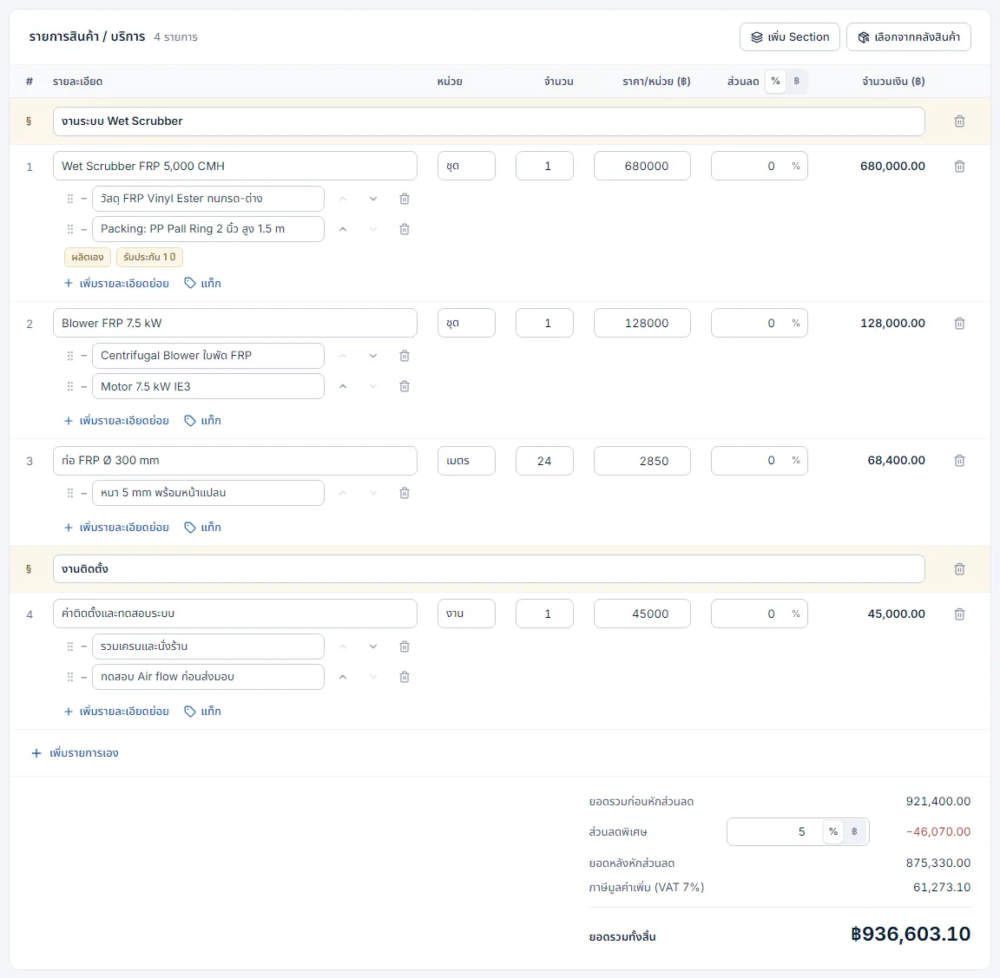
ส่วนลดและ VAT
- ระบบคำนวณยอดรวม ส่วนลด และ VAT 7% ให้อัตโนมัติ ยอดรวมทั้งสิ้นแสดงทั้งท้ายตารางและในการ์ดสีน้ำเงินด้านขวา
- ส่วนลดใส่ได้ทั้งแบบ เปอร์เซ็นต์ (%) และ จำนวนเงิน (฿) สลับได้ 2 จุดแยกกัน คือช่อง “ส่วนลด” ของรายการสินค้า (หน่วยที่เลือกใช้กับทุกรายการในตาราง) และช่อง “ส่วนลดพิเศษ” ในกล่องยอดรวม
- ใบใหม่เริ่มต้นเป็นบาท (฿) ส่วนใบเก่าเปิดมาเป็นแบบที่เคยบันทึกไว้ · ส่วนลดแบบบาทของรายการหักจากยอดของบรรทัดนั้น ส่วนลดพิเศษแบบบาทหักจากยอดรวมก่อนคิด VAT
ติดตามการขาย
การ์ด ติดตามการขาย อยู่ในคอลัมน์ขวา
- โอกาสในการขาย — เปิดสวิตช์เมื่อคาดว่าจะปิดการขายได้ ใบนั้นจะนับในยอดขายที่คาดไว้บนแดชบอร์ด
- ระดับความสนใจของลูกค้า — น่าสนใจ หรือ ไม่น่าสนใจ
- วันที่ติดตามงาน — แดชบอร์ดจะเตือนเมื่อถึงวันที่ต้องติดตาม
- หลังส่งขออนุมัติแล้ว การ์ดนี้ยังแก้ได้ (รวมช่อง อ้างอิง PO) แม้ใบจะถูกล็อก — แก้แล้วกด บันทึก ที่หัวการ์ด
การบันทึก
ระหว่างที่ใบยังเป็นร่าง ระบบบันทึกให้อัตโนมัติทุกครั้งที่หยุดพิมพ์ครู่หนึ่ง ข้างสถานะจะขึ้นว่า “บันทึกอัตโนมัติแล้ว” พร้อมเวลา — รายละเอียดดูบทที่ 3 ถ้าอยากบันทึกทันทีก็กดปุ่ม บันทึก ที่หัวเอกสารได้ (ใบใหม่ที่ยังไม่เคยบันทึก ปุ่มนี้เขียนว่า บันทึกร่าง และต้องกดครั้งแรกเองเพื่อสร้างใบ) ใบที่ส่งขออนุมัติแล้วไม่บันทึกอัตโนมัติ เพราะเนื้อหาถูกล็อก
6.3ขั้นตอนการอนุมัติ (Workflow)
แถบขั้นตอนใต้หัวเอกสารบอกว่าใบอยู่ขั้นไหน ปุ่มสีน้ำเงินเข้มที่มุมขวาบนคือขั้นถัดไปเสมอ และเปลี่ยนไปตามสถานะของใบ
| สถานะของใบ | ปุ่มที่หัวเอกสาร | ผลที่ได้ |
|---|---|---|
| ร่าง | ส่งขออนุมัติ | ใบเป็น “รออนุมัติ” ระบบแจ้งผู้มีสิทธิ์อนุมัติ ใส่ความคิดเห็นถึงผู้อนุมัติได้ (ไม่บังคับ) |
| รออนุมัติ | อนุมัติ / ปฏิเสธ | เฉพาะผู้อนุมัติ — ดูหัวข้อสำหรับผู้อนุมัติ |
| อนุมัติแล้ว | ส่งให้ลูกค้า | กดเมื่อส่งใบถึงลูกค้าแล้ว |
| ส่งให้ลูกค้าแล้ว | ลูกค้ายอมรับ / ลูกค้าปฏิเสธ | บันทึกคำตอบของลูกค้า |
| ลูกค้ายอมรับ | ปิดการขายสำเร็จ | จบงานขายของใบนี้ |
| ลูกค้าปฏิเสธ | ปิดการขายไม่สำเร็จ | ใบเป็น “เสียโอกาส” |
- ปุ่มที่เห็นขึ้นอยู่กับสิทธิ์ของคุณ เช่น เฉพาะผู้อนุมัติจึงเห็นปุ่มอนุมัติ และผู้สร้างใบเป็นคนส่งขออนุมัติ
- การปฏิเสธ ลูกค้าปฏิเสธ และการยกเลิก ระบบบังคับให้ระบุเหตุผลเสมอ ทุกการเปลี่ยนสถานะเก็บไว้ในประวัติการอนุมัติของใบ
- ยกเลิกใบได้ในสถานะร่าง รออนุมัติ และอนุมัติแล้ว จากเมนู เพิ่มเติม — ดูหัวข้อถัดไป
- ผู้เกี่ยวข้องได้รับแจ้งเตือนที่กระดิ่งทุกครั้งที่สถานะเปลี่ยน
- ในหน้ารายการ กดแท็บ รออนุมัติ หรือ อนุมัติแล้ว เพื่อดูเฉพาะใบในสถานะนั้น ตัวเลขบนแท็บคือจำนวนใบ — ดูหน้ารายการใบเสนอราคา
6.4การแก้ไขและทำสำเนา (เมนูเพิ่มเติม)
คำสั่งที่ใช้ไม่บ่อยอยู่ในเมนู เพิ่มเติม ที่หัวเอกสาร (ถัดจากปุ่ม พิมพ์ / PDF และ บันทึก)
- คัดลอกเป็นใบใหม่ — สร้างใบร่างใหม่ เลขที่ใหม่ จากเนื้อหาของใบนี้ ใบเดิมไม่เปลี่ยน
- แก้ไข (ออกใบแก้ไข -R ใหม่) — สร้าง “ฉบับแก้ไข” ต่อท้ายเลขเดิม เช่น
Q#260814-0001-R1,-R2ใช้เมื่อต้องเปลี่ยนราคาหรือรายการของใบที่ส่งขออนุมัติ อนุมัติ หรือส่งไปแล้ว (ซึ่งถูกล็อก) ฉบับเดิมยังอยู่ครบเพื่อการตรวจสอบ ฉบับใหม่เริ่มเป็นร่างและแก้ได้ทุกช่อง - ฉบับแก้ไขมีการ์ด หมายเหตุการแก้ไข (Revision Note) กด สร้างสรุปการแก้ไขอัตโนมัติ ให้ระบบเขียนว่าแก้อะไรไปจากฉบับก่อน โดยต่อท้ายบันทึกของรอบก่อน ๆ เป็นบรรทัด R1 - …, R2 - … แล้วแก้ข้อความเองต่อได้
- สร้าง Scope of Work — ต่อยอดใบนี้เป็น Scope of Work ระบบถามเลขที่เอกสาร Scope of Work ให้พิมพ์เอง ถ้าสร้างไว้แล้วคำสั่งนี้จะเปลี่ยนเป็น เปิด / แก้ไข Scope of Work — ดูบทที่ 7
- ยกเลิกใบเสนอราคา — ต้องระบุเหตุผล ใบที่ยกเลิกแล้วแก้ไขหรือดำเนินการต่อไม่ได้ แต่ยังเปิดดูและพิมพ์ได้ (ต้องมีสิทธิ์ยกเลิก)
6.5สำหรับผู้อนุมัติ: ตรวจและอนุมัติใบเสนอราคา
ใบที่รอคุณอนุมัติเปิดได้จากหน้าเอกสารรออนุมัติ หรือจากแจ้งเตือนที่กระดิ่ง หัวเอกสารจะขึ้นว่า “รอคุณอนุมัติ · อ่านอย่างเดียว” การ์ด คำขออนุมัติ ด้านขวาบอกชื่อผู้เสนอราคาและเวลาที่ส่ง และการ์ด ประวัติการอนุมัติ แสดงการส่งและการตีกลับที่ผ่านมาพร้อมความคิดเห็น
- ตรวจใบ — ดูลูกค้า รายการ ราคา ส่วนลด และเงื่อนไข หรือกดแท็บ ตัวอย่างก่อนพิมพ์ เพื่อดูหน้าตาใบจริง
- อนุมัติ — กด อนุมัติ ใส่ความคิดเห็นได้ (ไม่บังคับ) แล้วกด อนุมัติ ในกล่องยืนยัน ใบจะเป็น “อนุมัติแล้ว” ข้อมูลถูกล็อก และผู้เสนอราคาส่งให้ลูกค้าได้ทันที
- หรือส่งกลับแก้ไข — กด ปฏิเสธ กล่อง “ปฏิเสธ (ส่งกลับแก้ไข)” จะขึ้นมา พิมพ์เหตุผลในช่องความคิดเห็น (บังคับ) แล้วกด ปฏิเสธ ใบจะกลับเป็นร่างให้ผู้เสนอราคาแก้แล้วส่งใหม่
ระหว่างรออนุมัติ หัวเอกสารของผู้อนุมัติมีปุ่ม พิมพ์ / PDF เพิ่มเติม ปฏิเสธ และ อนุมัติ · ผู้อนุมัติแก้เนื้อหาไม่ได้เช่นกัน ถ้าเห็นว่าต้องแก้ ให้ปฏิเสธพร้อมบอกว่าต้องแก้อะไร
อนุมัติจากแท็บขายของแดชบอร์ดก็ได้ — ดูบทที่ 4
- ใบที่อนุมัติแล้วแสดงการ์ด การอนุมัติ บอกชื่อผู้อนุมัติ วันเวลา และความคิดเห็น กด ดูประวัติการอนุมัติ เพื่อดูทุกขั้น
- บนใบพิมพ์ ลายเซ็นของผู้เสนอราคาและผู้อนุมัติขึ้นให้อัตโนมัติจากลายเซ็นที่อัปโหลดไว้ในโปรไฟล์ (ดูบทที่ 28) ถ้ายังไม่ได้อัปโหลดจะเป็นเส้นว่างให้เซ็นมือ
6.6หน้ารายการใบเสนอราคา
หน้ารายการแสดงเลขที่ ลูกค้าและโครงการ ประเภทงาน พนักงานขาย วันที่ มูลค่า สถานะ และความสนใจของลูกค้าของทุกใบ กดแถวเพื่อเปิดใบนั้น วิธีใช้แท็บ ช่องค้นหา และปุ่มกรองเหมือนหน้ารายการอื่นทั้งระบบ — ดูบทที่ 2
- แท็บ — ทั้งหมด รออนุมัติ อนุมัติแล้ว น่าสนใจ (ลูกค้าสนใจ) โอกาสในการขาย (เปิดสวิตช์โอกาสในการขายไว้) และ ใบแก้ไข (ฉบับ -R)
- ค้นหา — จากเลขที่ ลูกค้า พนักงานขาย หรือเลข PO
- ตัวกรอง — ประเภทงาน พนักงานขาย และ สถานะ (เลือกได้ทั้ง 9 สถานะ รวม ลูกค้าปฏิเสธ เสียโอกาส และยกเลิก)
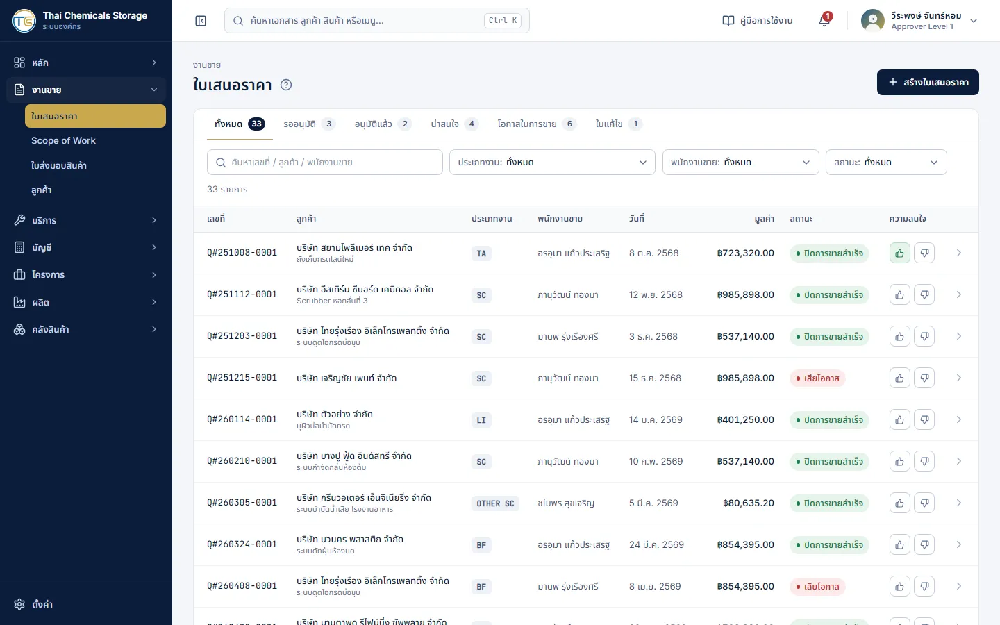
งานขาย · บทที่ 7
Scope of Work
Scope of Work คือเอกสารขอบเขตงานที่สร้างต่อจากใบเสนอราคา ใช้ยืนยันรายละเอียดงานกับลูกค้าและแจ้งแผนกต่าง ๆ ภายใน โดยไม่แสดงราคา ฝ่ายขายเป็นผู้จัดทำ ผู้อนุมัติเป็นผู้ยืนยันให้เป็น Final
7.1การสร้าง
- เปิดใบเสนอราคา — เปิดใบเสนอราคาของงานนั้น แล้วกดเมนู เพิ่มเติม › สร้าง Scope of Work ที่หัวเอกสาร
- พิมพ์เลขที่เอกสารเอง — ในกล่อง “สร้าง Scope of Work” ช่องเลขที่เอกสารบังคับกรอก ระบบไม่สร้างเลขให้ กำหนดรูปแบบได้อิสระตามที่บริษัทใช้จริง เช่น
PQ202607-15-LI-SKระบบตรวจให้ว่าเลขไม่ซ้ำกับใบอื่น - กดสร้าง — กด สร้าง Scope of Work ระบบเปิดใบร่าง (Draft) ที่คัดลอกข้อมูลลูกค้าและรายการมาจากใบเสนอราคาแล้ว
- ข้อมูลที่คัดลอกมาแก้ใน Scope of Work ได้โดยไม่กระทบใบเสนอราคาต้นทาง ถ้าใบเสนอราคาแก้ภายหลัง ใช้ อัปเดตข้อมูลจากใบเสนอราคา — ดูหัวข้อที่ 5
- ถ้าใบเสนอราคานั้นมี Scope of Work อยู่แล้ว คำสั่งในเมนูจะเปลี่ยนเป็น เปิด / แก้ไข Scope of Work เพื่อเปิดใบเดิม
- เมนู Scope of Work ในแถบซ้ายใช้เปิดดูรายการทั้งหมด การสร้างทำจากหน้าใบเสนอราคาเท่านั้น
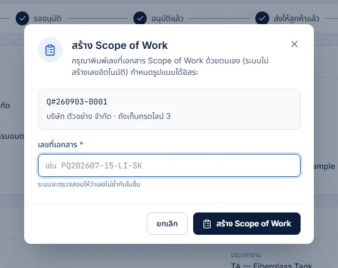
7.2ส่วนที่ต้องกรอก
เปิดใบเดิมมาแก้ได้โดยกดแถวในหน้ารายการ ช่องที่มี * ต้องกรอกก่อนส่งขออนุมัติ ระหว่างเป็นร่างระบบบันทึกให้อัตโนมัติ (ดูบทที่ 3) และกดปุ่ม บันทึกร่าง ที่หัวเอกสารเพื่อบันทึกทันทีก็ได้
- ลูกค้า — ชื่อลูกค้า ผู้ติดต่อ ประเภทงาน และพนักงานขาย ดึงมาจากใบเสนอราคา เป็นข้อมูลอ่านอย่างเดียว
- ข้อมูลเอกสาร — เลขที่เอกสาร (รหัสงาน) รหัสอ้างอิงท้ายงาน (ไม่บังคับ) รหัส Drawing วันที่ วันที่ส่งของ/ส่งแบบอนุมัติ และเลข PO ของลูกค้า
- การส่งของและวางบิล — สถานที่ส่งของ ชื่อและเบอร์โทรผู้ติดต่อส่งของ ชื่อและเบอร์โทรผู้ติดต่อวางบิล
- รายการ Scope of Work — ไม่มีราคา มีแค่ชื่อรายการ จำนวน และหน่วย กด เพิ่มหัวข้อ เพื่อแบ่งกลุ่มงาน เพิ่มรายการ เพื่อเพิ่มบรรทัด แต่ละรายการมีปุ่มใส่รายละเอียด/ข้อกำหนด ทำสำเนารายการ และลบ
- เงื่อนไขการชำระเงิน — กดปุ่มเงื่อนไขสำเร็จรูป เช่น “30% Down Payment (Cash) / 70% After Job Complete (Credit 30 Days)” หรือกด เพิ่มงวดชำระเงิน เอง แต่ละงวดระบุชื่องวด สัดส่วน (%) วิธีชำระ (Cash/Credit) และจำนวนวัน ระบบตรวจว่ารวมครบ 100% · มีช่องรายละเอียดการชำระเงินและหมายเหตุการชำระเงิน
- เช็คลิสต์เงื่อนไขงาน — เลือกข้อกำหนดของงานแต่ละกลุ่ม เช่น Safety, เอกสารส่งถึง, เอกสาร ปจ.2, งานขนส่ง, Logo, Name plate, Test Report, เงื่อนไขการวางบิล (สัญญา) และเงื่อนไขการส่งมอบงาน กลุ่มที่มี * ต้องเลือกก่อนส่งขออนุมัติ ตัวเลือก “อื่น ๆ” มีช่องให้ระบุเพิ่ม
- ผู้ขาย / ผู้อนุมัติ — การ์ดด้านขวา เลือกชื่อจากรายชื่อผู้ใช้งานหรือพิมพ์ชื่อเองได้ในช่องเดียวกัน พร้อมวันที่ลงนาม
- หมายเหตุ — ข้อความถึงลูกค้าหรือหน้างาน เช่น การเตรียมพื้นที่
- ผู้รับเอกสาร — ติ๊กเลือกพนักงานผู้รับเป็นรายคน แล้วส่งแจ้งเตือนในระบบถึงผู้รับ — ดูรายละเอียดในบทที่ 8
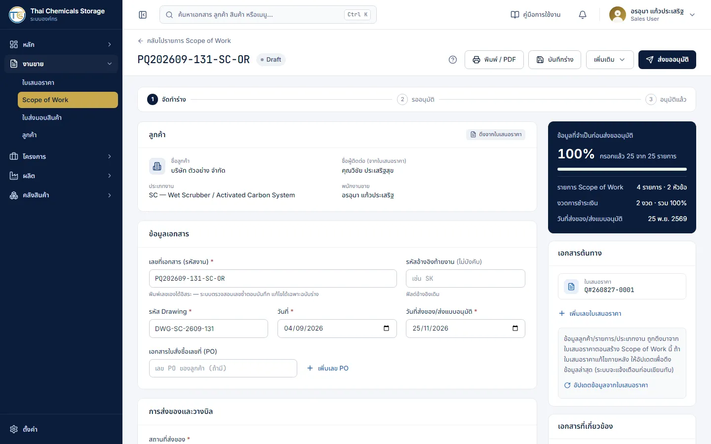
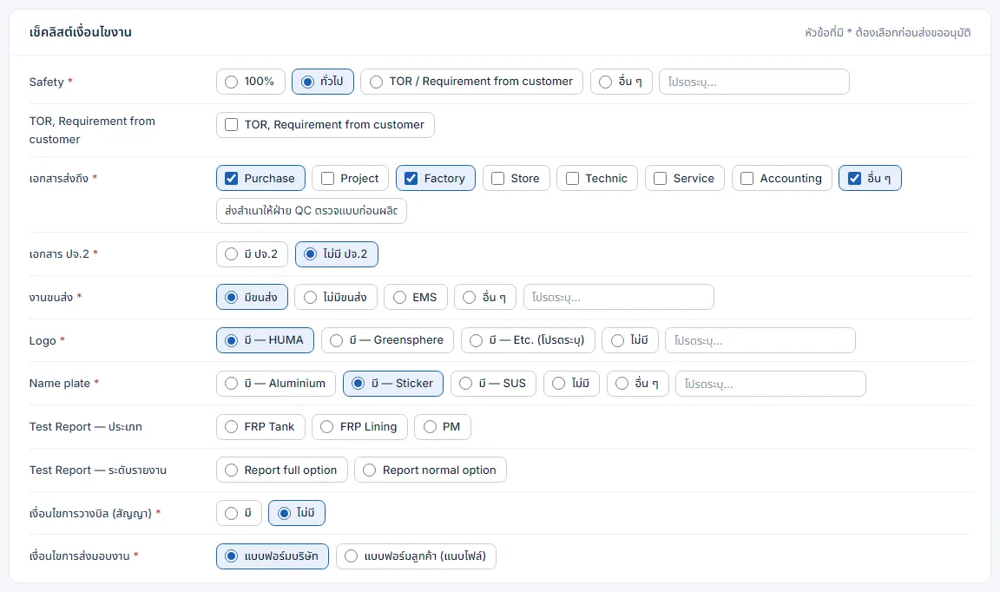
7.3การขออนุมัติ สถานะ และการพิมพ์
- การ์ด ข้อมูลที่จำเป็นก่อนส่งขออนุมัติ ด้านขวาบอกว่ากรอกครบกี่ช่องจากทั้งหมด พร้อมจำนวนรายการ จำนวนงวดชำระเงินและผลรวม % — ต้องครบ 100% ก่อนจึงส่งขออนุมัติได้
- เมื่อครบแล้วกด ส่งขออนุมัติ แล้วยืนยันในกล่อง ใบเข้าสถานะ รออนุมัติ และถูกล็อกชั่วคราว ถ้าต้องกลับมาแก้ ผู้จัดทำเลือก เพิ่มเติม › ถอนคำขอ ใบจะกลับเป็นร่าง
- ผู้มีสิทธิ์อนุมัติกด อนุมัติ ใบเป็น Final และชื่อผู้อนุมัติถูกบันทึกอัตโนมัติ หรือกด ปฏิเสธ พิมพ์เหตุผล (บังคับ) แล้วกด ปฏิเสธและตีกลับ ใบกลับเป็นร่างให้ผู้จัดทำแก้ — มีแจ้งเตือนทุกขั้น
- เอกสาร Final แก้เนื้อหาไม่ได้อีก ต้องสร้างฉบับแก้ไข (ดูหัวข้อที่ 5) ยกเว้น เลข PO ผู้รับเอกสาร ข้อความถึงผู้รับ และไฟล์แนบ ที่เพิ่มได้เสมอ · ช่องกลุ่มนี้ไม่บันทึกอัตโนมัติหลังอนุมัติ ต้องกดปุ่ม บันทึก (เลข PO / ผู้รับเอกสาร) ที่หัวเอกสาร (การกดส่งแจ้งเตือนผู้รับจะบันทึกรายชื่อผู้รับให้ด้วย)
- กด พิมพ์ / PDF เพื่อพิมพ์หรือบันทึก PDF — ปุ่มกดได้เมื่อกรอกข้อมูลที่จำเป็นครบ เอกสารไม่แสดงราคาใด ๆ (ดูบทที่ 29)
- หน้ารายการมีแท็บ ทั้งหมด Draft รออนุมัติ Final และ ยังไม่มี PO ค้นหาจากรหัสงาน ลูกค้า หรือเลขใบเสนอราคา กรองตามช่วงวันที่ ประเภทงาน และพนักงานขาย — วิธีใช้ทั่วไปดูบทที่ 2
- บัญชีที่ไม่มีสิทธิ์ดู Scope of Work ของผู้อื่น จะเห็นเฉพาะใบที่ตัวเองสร้างและใบที่ถูกส่งถึงตัวเอง
7.4การติดตามเลข PO (ทวง PO)
- หน้ารายการมีคอลัมน์ PO — ใบที่ยังไม่มีเลขขึ้นป้ายส้ม “ยังไม่มี PO” และแท็บ ยังไม่มี PO รวมใบเหล่านี้ไว้ให้ตามทวง
- ได้เลข PO เมื่อไหร่ กรอกในช่อง “เอกสารใบสั่งซื้อเลขที่ (PO)” ได้เลย แม้เอกสาร Final แล้ว · งานที่มีหลาย PO กด เพิ่มเลข PO เพิ่มได้ถึง 10 เลข ทุกเลขขึ้นบนใบพิมพ์และหน้ารายการ
- ยังไม่มีเลข กดเมนู เพิ่มเติม › ทวงเลข PO ระบบส่งแจ้งเตือนที่กระดิ่งถึงพนักงานขายของงานนั้นทันที กดซ้ำได้ถ้ายังเงียบ ทุกครั้งที่กดมีบันทึกเก็บไว้ · คำสั่งนี้ขึ้นเฉพาะใบที่ยังไม่มีเลข PO เลย และต้องมีสิทธิ์ทวงเลข PO
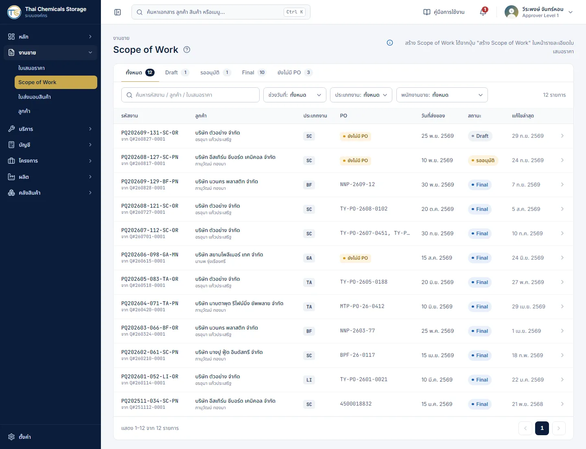
7.5อัปเดตจากใบเสนอราคา ทำสำเนา ฉบับแก้ไข และลบ
คำสั่งเหล่านี้อยู่ในเมนู เพิ่มเติม ที่หัวเอกสาร
- อัปเดตข้อมูลจากใบเสนอราคา (ทำได้ตอนเป็นร่าง มีปุ่มเดียวกันในการ์ดเอกสารต้นทางด้านขวา) — ดึงข้อมูลล่าสุดจากใบเสนอราคามาเขียนทับ ข้อมูลลูกค้า สถานที่ส่งของ เลข PO แรก หมายเหตุ และรายการ ส่วนที่กรอกเองจะไม่ถูกแตะ ได้แก่ ผู้ติดต่อส่งของ/วางบิล เช็คลิสต์ เงื่อนไขการชำระเงิน ผู้ลงนาม รหัส Drawing และวันที่ส่งของ ระบบถามยืนยันก่อนเสมอ
- ทำสำเนา — สร้างใบร่างใหม่จากใบนี้ ต้องพิมพ์เลขที่เอกสารของสำเนาใหม่ (ห้ามซ้ำ)
- แก้ไข — สร้างฉบับแก้ไขเลขเดิมต่อท้าย -R1, -R2 เป็นทางเดียวที่ใช้เปลี่ยนเนื้อหาของใบที่เป็น Final ฉบับใหม่มีการ์ด หมายเหตุการแก้ไข (Revision Note) กด สร้างสรุปการแก้ไขอัตโนมัติ ให้ระบบสรุปว่าแก้อะไรไป แล้วแก้ข้อความเองต่อได้
- ลบ Scope of Work — ใบจะถูกซ่อนจากหน้ารายการ ยังไม่มีช่องทางกู้คืนผ่านหน้าจอ และเลขที่ของใบที่ลบแล้วนำกลับมาใช้ใหม่ไม่ได้
- งานที่ครอบคลุมหลายใบเสนอราคา กด เพิ่มเลขใบเสนอราคา ในการ์ดเอกสารต้นทาง เพื่อพิมพ์เลขใบเสนอราคาอื่นเพิ่ม (แก้ได้ตอนเป็นร่าง)
7.6เอกสารที่เกี่ยวข้อง: ใบส่งมอบ Cost Control และโครงการ
การ์ด เอกสารที่เกี่ยวข้อง ด้านขวาของ Scope of Work รวมทางไปเอกสารที่ต่อยอดจากงานนี้
- ใบส่งมอบสินค้า — กดสร้างได้ทุกสถานะ ถ้ามีแล้วปุ่มเป็น เปิดใบส่งมอบสินค้า — ดูบทที่ 9
- Cost Control — สร้างหรือ เปิด Cost Control ของงานนี้ได้ทุกสถานะ Cost Control ที่ผูกกับงานนี้จะส่งไปพร้อม Scope of Work ถึงผู้รับเอกสาร — ดูบทที่ 8 และบทที่ 20
- โครงการ — ต้องอนุมัติ Scope of Work เป็น Final ก่อน ปุ่ม สร้างโครงการ จึงกดได้ — ดูบทที่ 15
งานขาย · บทที่ 8
การส่งเอกสารถึงผู้รับ
เมื่อ Scope of Work พร้อมแล้ว ฝ่ายขายส่งแจ้งถึงพนักงานผู้รับในแผนกต่าง ๆ ได้จากการ์ด ผู้รับเอกสาร ท้ายหน้าเอกสาร ผู้รับได้แจ้งเตือนที่กระดิ่งในระบบทันทีและกดเปิดเอกสารจากแจ้งเตือนได้เลย ไม่ต้องตั้งค่าอะไรก่อนใช้ (ระบบไม่ส่งอีเมลออกนอกระบบ)
8.1ขั้นตอนการส่ง
- ติ๊กแผนกใน “เอกสารส่งถึง” — ในการ์ดเช็คลิสต์เงื่อนไขงาน ติ๊กแผนกที่ต้องได้รับเอกสาร เช่น Purchase, Factory, Accounting การ์ดผู้รับเอกสารจะแสดงรายชื่อพนักงานของแผนกนั้น
- ติ๊กชื่อผู้รับเป็นรายคน — ในการ์ด ผู้รับเอกสาร ติ๊กชื่อพนักงานในแต่ละแผนก หัวของแต่ละแผนกบอกว่า “เลือกแล้ว N คน” · ติ๊กแผนกอย่างเดียวยังไม่ได้เลือกผู้รับ
- ผู้รับเพิ่มเติม (เลือกใครก็ได้) — ช่อง ผู้รับเพิ่มเติม ค้นหาชื่อ แผนก หรืออีเมล แล้วติ๊กพนักงานคนไหนก็ได้จากทุกแผนก กลุ่มนี้ได้รับแจ้งเตือนเสมอ ไม่ขึ้นกับแผนกที่ติ๊กไว้
- แนบไฟล์ / ข้อความถึงผู้รับ (ถ้ามี) — กด แนบไฟล์ (สูงสุด 5 ไฟล์ ไฟล์ละไม่เกิน 2 MB ไฟล์ขึ้นระบบทันทีไม่ต้องรอบันทึก) และพิมพ์ ข้อความเพิ่มเติมถึงผู้รับ ทั้งสองอย่างเก็บไว้กับเอกสาร ผู้รับเปิดดูได้จากหน้าเอกสารนี้โดยตรง
- กดส่งแจ้งเตือน — กด ส่งแจ้งเตือนผู้รับเอกสาร ระบบบันทึกรายชื่อผู้รับแล้วแจ้งจำนวนคนที่ส่งถึง ส่งซ้ำได้ทุกเมื่อ เช่น หลังแนบไฟล์เพิ่ม (ผู้รับได้แจ้งเตือนรอบใหม่)
ผู้รับ ข้อความ และไฟล์แนบ แก้และส่งได้ทุกสถานะ รวมถึงหลังเอกสารเป็น Final แล้ว
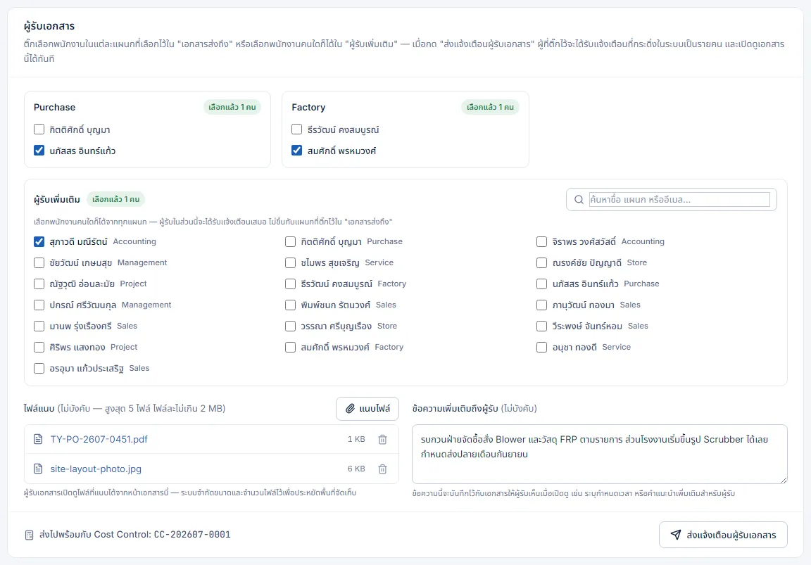
8.2ฝั่งผู้รับเห็นอะไร
- กระดิ่งแจ้งเตือนขึ้นข้อความ “มีเอกสาร Scope of Work ส่งถึงคุณ” กดรายการเพื่อเปิดเอกสารนั้นทันที (ระบบเช็คแจ้งเตือนใหม่เองทุกไม่ถึงนาที)
- เอกสารนั้นจะปรากฏในหน้ารายการ Scope of Work ของผู้รับด้วย แม้บัญชีจะไม่มีสิทธิ์ดูเอกสารของผู้อื่นก็ตาม
- ผู้รับเปิดไฟล์แนบและอ่านข้อความถึงผู้รับได้จากหน้าเอกสาร
8.3แก้ปัญหาที่พบบ่อย
| อาการ | วิธีแก้ |
|---|---|
| ปุ่มส่งกดไม่ได้ (จาง) | ยังไม่ได้ติ๊กเลือกผู้รับเป็นรายคน — ติ๊กชื่อในแผนกที่เลือกไว้ หรือเพิ่มใน “ผู้รับเพิ่มเติม” |
| “กรุณาเลือกผู้รับเอกสารอย่างน้อย 1 คน” | แผนกที่ติ๊กชื่อไว้ถูกเอาเครื่องหมายออกจาก “เอกสารส่งถึง” แล้ว — ติ๊กแผนกกลับ หรือย้ายคนนั้นไป “ผู้รับเพิ่มเติม” |
| ติ๊กแผนกแล้วไม่มีรายชื่อพนักงานขึ้น | ยังไม่มีผู้ใช้ที่ตั้งแผนกตรงกับชื่อแผนกนั้น — ใช้ “ผู้รับเพิ่มเติม” แทน หรือแจ้งผู้ดูแลระบบให้ตั้งแผนกให้พนักงาน (บทที่ 27) |
| ผู้รับบอกไม่เห็นแจ้งเตือน | ให้ผู้รับรอครู่เดียวหรือรีเฟรชหน้า (ระบบเช็คแจ้งเตือนเป็นรอบ) และตรวจว่าติ๊กชื่อคนนั้นจริงก่อนกดส่ง |
| แนบไฟล์ไม่ขึ้น | ไฟล์ใหญ่เกิน 2 MB หรือแนบครบ 5 ไฟล์แล้ว — ลบไฟล์เดิมออกก่อน หรือย่อไฟล์ให้เล็กลง (รูปภาพระบบย่อให้ก่อนตรวจขนาด) |
8.4ส่ง Cost Control ไปพร้อมกัน
ถ้างานนี้มี Cost Control ที่ผูกกับ Scope of Work ไว้ ท้ายการ์ดผู้รับเอกสารจะขึ้นลิงก์ “ส่งไปพร้อมกับ Cost Control: CC-…” เมื่อกดส่งแจ้งเตือน Cost Control ใบนั้นจะไปพร้อมกันโดยอัตโนมัติ
- ข้อความแจ้งเตือนของผู้รับจะต่อท้ายว่าแนบ Cost Control เลขไหน
- ผู้รับทุกคนที่ติ๊กไว้เปิดดูและพิมพ์ Cost Control ใบนั้นได้ แต่แก้ไขไม่ได้
- ผู้รับต้องมีสิทธิ์ดู Cost Control ในบทบาทของตัวเองด้วย ถ้าไม่มีจะไม่เห็นตัวเลขต้นทุน — ใครเห็นต้นทุนได้เป็นการตั้งค่าของผู้ดูแลระบบ
- สร้างหรือเปิด Cost Control ได้จากการ์ด เอกสารที่เกี่ยวข้อง ของ Scope of Work — ดูบทที่ 7 และบทที่ 20
งานขาย · บทที่ 9
ใบส่งมอบสินค้า (Delivery Orders)
ใบส่งมอบสินค้าและบริการ (ฟอร์มบริษัท FM-SL-05) สร้างต่อจาก Scope of Work ใช้ส่งมอบสินค้าหรืองานบริการเป็นรายงวดตามเงื่อนไขการชำระเงิน ฝ่ายขายเป็นผู้จัดทำ ฝ่ายโครงการและฝ่ายผลิตใช้เอกสารใบเดียวกันนี้ (เรียกกันว่า “ใบส่งมอบงาน”)
9.1การสร้างและกรอกข้อมูล
- สร้างจาก Scope of Work — เปิด Scope of Work ที่ต้องการ ในการ์ด เอกสารที่เกี่ยวข้อง ด้านขวากด สร้างใบส่งมอบสินค้า ถ้ามีอยู่แล้วปุ่มเป็น เปิดใบส่งมอบสินค้า ไม่ต้องกรอกอะไรเพิ่มตอนสร้าง
- ระบบเตรียมการ์ดรายงวด — ระบบสร้าง การ์ดหนึ่งใบต่อหนึ่งงวดชำระเงิน ให้อัตโนมัติ วางเรียงกันด้านล่าง หัวการ์ดบอกว่า “งวดชำระเงิน 1 จาก 2” พร้อมชื่องวด · งวดมัดจำ (Down Payment / เงินมัดจำ) ไม่มีการ์ด เพราะเป็นเงินจ่ายล่วงหน้า ไม่ใช่การส่งมอบ
- ติ๊กรายการที่ส่งมอบ — ในแต่ละการ์ด ติ๊กรายการที่ส่งมอบในงวดนั้น (มีช่องเลือกทั้งหมด) หัวตารางบอกว่า “เลือก N จาก M” · เริ่มต้นยังไม่มีรายการใดถูกติ๊ก
- กรอกเลขที่ วันที่ และ Remark — แต่ละงวดมีข้อมูลแยกกัน ช่อง Remark ระบบเติมจากเงื่อนไขงวดให้ เช่น “40% After Delivery (Credit 30 Days)” แก้ได้อิสระ
- ข้อมูลลูกค้า (เรียน และที่อยู่) และรายการดึงมาจาก Scope of Work เป็นข้อมูลอ่านอย่างเดียว การ์ด เอกสารต้นทาง ด้านขวามีลิงก์กลับไปยัง Scope of Work และใบเสนอราคา
- ระหว่างเป็นร่างระบบบันทึกให้อัตโนมัติ — ดูบทที่ 3 และกดปุ่ม บันทึกร่าง ที่หัวเอกสารเพื่อบันทึกทันทีก็ได้
- เปิดใบเดิมได้โดยกดแถวในหน้ารายการ คอลัมน์ “จำนวนงวด” บอกว่าแต่ละงานมีกี่งวด
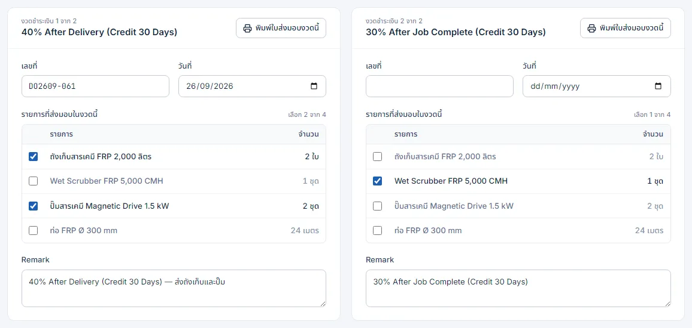
9.2การพิมพ์ — แยกใบต่องวด
- แต่ละการ์ดงวดมีปุ่ม พิมพ์ใบส่งมอบงวดนี้ ของตัวเอง เอกสารที่ได้มีเฉพาะข้อมูลงวดนั้น (ไม่มีปุ่มพิมพ์รวมทุกงวด)
- ต้องติ๊กรายการอย่างน้อย 1 รายการในงวดนั้นก่อน จึงพิมพ์ได้
- งวดที่มีรายการมากจนเกินหนึ่งหน้า ทุกหน้ามีหัวเอกสารและหัวตารางครบ เลขลำดับรายการนับต่อกัน และ Remark กับช่องลงนามอยู่หน้าสุดท้ายของงวด
- กดปุ่มแล้วหน้าต่างพิมพ์ของเบราว์เซอร์จะขึ้นพร้อมใบของงวดนั้น — วิธีบันทึกเป็น PDF ดูบทที่ 29
9.3ส่งใบส่งมอบถึงแผนกที่เกี่ยวข้อง
ฝ่ายขายเลือกได้ว่าใบส่งมอบใบนี้ต้องส่งถึงแผนกไหนบ้าง ในการ์ด ส่งใบส่งมอบงานถึงแผนก ติ๊กแผนกใน “เอกสารส่งถึง” แล้วกด ส่งถึงแผนกที่เลือก ใบนั้นจะไปขึ้นในหน้ารายการใบส่งมอบสินค้าของคนในแผนกนั้นให้เปิดดูได้เอง
- ส่งถึงทั้งแผนก ไม่ใช่รายบุคคล ทุกคนที่ตั้งแผนกไว้ตรงกันจะเห็น (ต่างจาก “เอกสารส่งถึง” ของ Scope of Work ที่เลือกเป็นรายชื่อคน — ดูบทที่ 8)
- ฝั่งผู้รับ ดูและพิมพ์ได้อย่างเดียว แก้ไข อนุมัติ ลบ หรือแนบไฟล์ไม่ได้
- ส่งได้ทุกสถานะ รวมถึงหลังอนุมัติแล้ว
- ระบบบอกจำนวนคนที่ได้รับ ถ้าไม่พบผู้รับเลยจะขึ้นคำเตือนแทน
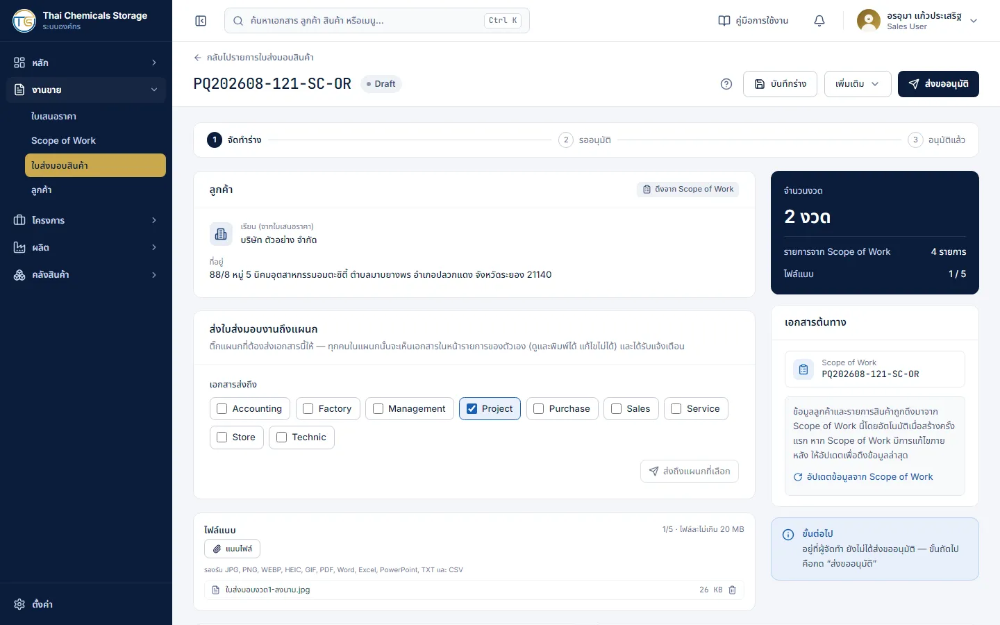
9.4การขออนุมัติและเมนูเพิ่มเติม
- ติ๊กรายการครบทุกงวดแล้วกด ส่งขออนุมัติ ที่มุมขวาบน แล้วยืนยันในกล่อง ใบถูกล็อกระหว่างรออนุมัติ ถ้าต้องกลับมาแก้ ผู้จัดทำกด เพิ่มเติม › ถอนคำขอ
- ผู้มีสิทธิ์อนุมัติกด อนุมัติ ใบเป็น Final ถาวร หรือกด ปฏิเสธ พิมพ์เหตุผล (บังคับ) แล้วกด ปฏิเสธและตีกลับ ใบกลับเป็นร่าง — มีแจ้งเตือนทุกขั้น เหมือน Scope of Work
- เพิ่มเติม › อัปเดตข้อมูลจาก Scope of Work (ทำได้ตอนเป็นร่าง) — ดึงข้อมูลลูกค้า รายการ และงวดล่าสุดมาใหม่ โดยคงรายการที่ติ๊กไว้ในแต่ละงวด (ยกเว้นรายการที่ถูกลบไปแล้ว) รวมถึงเลขที่ วันที่ และ Remark ของงวดเดิม · งวดที่เพิ่มใหม่ได้การ์ดว่าง งวดที่ถูกลบจะหายไป
- เพิ่มเติม › แก้ไข (สร้างฉบับใหม่) (ทำได้หลังอนุมัติแล้ว) — สร้างใบร่างใหม่จากฉบับ Final โดยคัดลอกงวดและรายการที่ติ๊กมาทั้งหมด ฉบับเดิมคงอยู่ตามเดิม ปุ่มเปิดใบส่งมอบใน Scope of Work จะพาไปฉบับล่าสุดเอง
- เพิ่มเติม › ลบใบส่งมอบสินค้า — ใบจะถูกซ่อนจากหน้ารายการ ยังไม่มีช่องทางกู้คืนผ่านหน้าจอ
- หน้ารายการมีแท็บ ทั้งหมด Draft รออนุมัติ Final ค้นหาจากรหัสงานหรือลูกค้า และกรองตามช่วงวันที่ — วิธีใช้ทั่วไปดูบทที่ 2 · เมนู ใบส่งมอบสินค้า อยู่ในหมวดงานขาย โครงการ และผลิต ทุกที่เข้าหน้าเดียวกัน
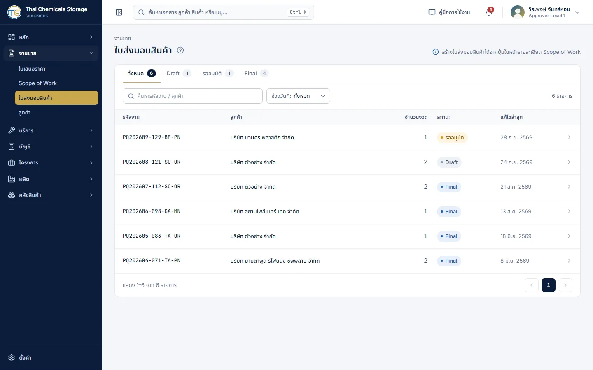
9.5ไฟล์แนบ
การ์ด ไฟล์แนบ ใช้เก็บใบส่งมอบที่ลูกค้าเซ็นรับกลับมา หรือเอกสารของลูกค้าเอง ไว้กับใบส่งมอบใบนั้น
- กด แนบไฟล์ ได้สูงสุด 5 ไฟล์ต่อใบ รูปภาพไฟล์ละไม่เกิน 20 MB ไฟล์เอกสารไม่เกิน 10 MB รองรับ JPG, PNG, WEBP, HEIC, GIF, PDF, Word, Excel, PowerPoint, TXT และ CSV
- แนบได้ทุกสถานะ รวมถึงหลังอนุมัติแล้ว เพราะใบที่ลูกค้าเซ็นมักกลับมาหลังจากนั้น
- ผู้รับที่ได้เอกสารผ่าน “ส่งถึงแผนก” เปิดดูไฟล์ได้ แต่แนบหรือลบไม่ได้
- ฉบับแก้ไข (สร้างฉบับใหม่) ไม่คัดลอกไฟล์แนบไปด้วย ต้องแนบใหม่ในฉบับนั้น
งานขาย · บทที่ 10
ลูกค้า (Customers)
หน้าลูกค้าเก็บข้อมูลบริษัทลูกค้าไว้ครั้งเดียว แล้วเลือกใช้ในใบเสนอราคาได้ทันทีโดยไม่ต้องพิมพ์ซ้ำ ฝ่ายขายเป็นผู้เพิ่มและแก้ไขข้อมูล
10.1เพิ่มลูกค้า
- เปิดแผงข้อมูลลูกค้า — ที่หน้า งานขาย › ลูกค้า กด เพิ่มข้อมูลลูกค้า ที่มุมขวาบน แผงกรอกข้อมูลจะเลื่อนออกมาจากด้านขวา
- ข้อมูลบริษัท — ชื่อลูกค้า / บริษัท (ช่องเดียวที่บังคับกรอก) เลขประจำตัวผู้เสียภาษี 13 หลัก และที่อยู่
- ผู้ติดต่อ — ชื่อผู้ติดต่อ เบอร์โทร และ E-mail ผู้ติดต่อ (ทะเบียนลูกค้าเก็บผู้ติดต่อหลักได้หนึ่งคน ผู้ติดต่อคนอื่นเพิ่มในใบเสนอราคาแต่ละใบ)
- ค่าเริ่มต้นในใบเสนอราคา — วิธีจัดส่ง โครงการ และที่อยู่จัดส่ง (เว้นว่างได้ถ้าส่งของที่อยู่เดียวกับลูกค้า) ระบบจะเติมช่องเหล่านี้ให้เมื่อเลือกลูกค้ารายนี้ในใบเสนอราคา
- บันทึก — กด บันทึก ที่ท้ายแผง ลูกค้าใหม่มีสถานะ “ใช้งาน” และเลือกในใบเสนอราคาได้ทันที · ไม่บันทึก กด ยกเลิก
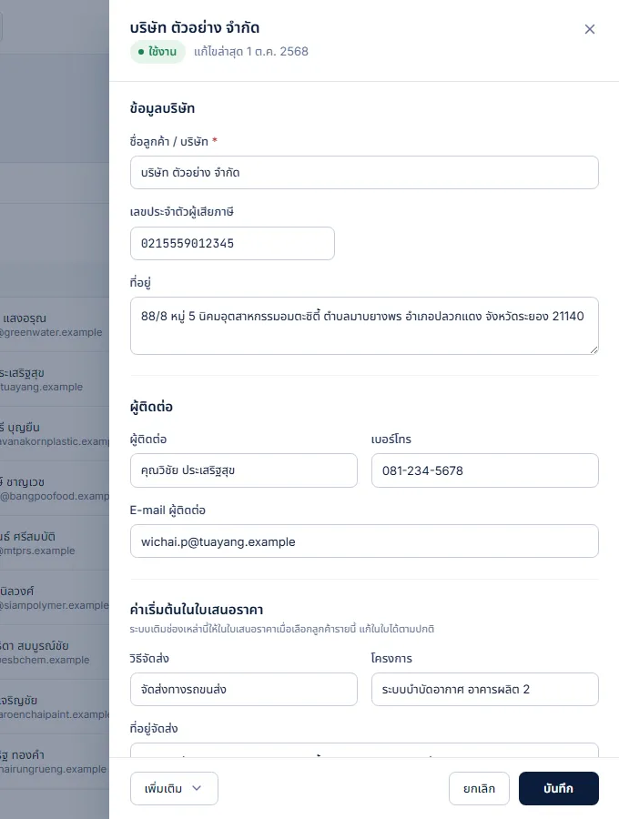
10.2หน้ารายชื่อลูกค้า
ตารางแสดงชื่อบริษัทพร้อมเลขผู้เสียภาษี ผู้ติดต่อและอีเมล เบอร์โทร สถานะ และวันที่แก้ไขล่าสุด วิธีใช้แท็บ ช่องค้นหา และการกดแถวเหมือนหน้ารายการอื่นทั้งระบบ — ดูบทที่ 2
- แท็บ — ทั้งหมด เปิดใช้งาน และ ปิดใช้งาน
- ค้นหา — จากชื่อบริษัท ผู้ติดต่อ เบอร์โทร อีเมล หรือเลขผู้เสียภาษี
- แสดงที่เก็บถาวร — ลูกค้าที่เก็บถาวรถูกซ่อนไว้ ติ๊กช่องนี้เพื่อให้ขึ้นในตาราง
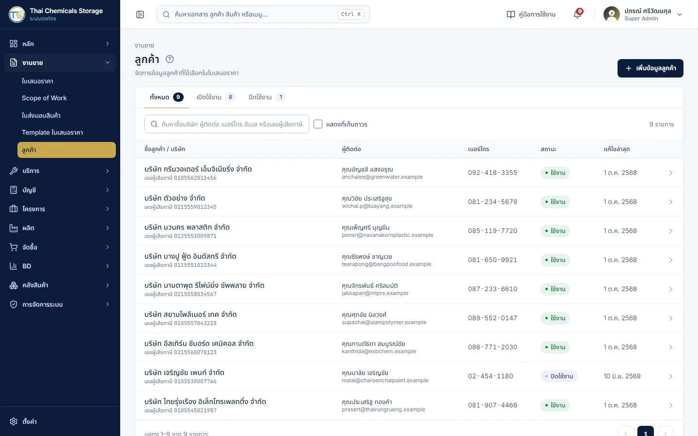
10.3แผงข้อมูลลูกค้า: ดูและแก้ไข
- กดแถวลูกค้าในตาราง แผงข้อมูลลูกค้าจะเปิดจากด้านขวา หัวแผงเป็นชื่อบริษัท ใต้ชื่อบอกสถานะและวันที่แก้ไขล่าสุด
- แก้ช่องที่ต้องการแล้วกด บันทึก ที่ท้ายแผง ไม่บันทึกกด ยกเลิก
- บัญชีที่ไม่มีสิทธิ์แก้ไขลูกค้าจะเห็นข้อมูลแบบอ่านอย่างเดียว ท้ายแผงมีแค่ปุ่ม ปิด
- การแก้ข้อมูลลูกค้าไม่เปลี่ยนใบเสนอราคาที่ออกไปแล้ว เพราะแต่ละใบเก็บสำเนาข้อมูลลูกค้า ณ ตอนที่เลือกไว้ ใบใหม่ที่เลือกลูกค้ารายนี้จะได้ข้อมูลล่าสุด
10.4ปิดใช้งานและเก็บถาวร
ลูกค้าที่เลิกติดต่อไม่ต้องลบ ให้ใช้คำสั่งในเมนู เพิ่มเติม ที่ท้ายแผงข้อมูลลูกค้า (มุมซ้ายล่าง) การปิดใช้งาน การเก็บถาวร และการเลิกเก็บถาวร ระบบถามยืนยันก่อนทุกครั้ง
| คำสั่ง | ผลที่ได้ | ย้อนกลับ |
|---|---|---|
| ปิดใช้งาน | ลูกค้ายังอยู่ในตาราง (แท็บปิดใช้งาน) แต่ไม่ขึ้นให้เลือกในใบเสนอราคาใหม่ | เปิดแผงของลูกค้ารายนั้นแล้วเลือก เปิดใช้งาน จากเมนู เพิ่มเติม (มีผลทันที ไม่ต้องยืนยัน) |
| เก็บถาวร | ซ่อนจากรายการหลัก และเลือกในใบเสนอราคาใหม่ไม่ได้ | ติ๊ก แสดงที่เก็บถาวร เปิดแผงของลูกค้ารายนั้น แล้วเลือก เลิกเก็บถาวร จากเมนู เพิ่มเติม |
- ทั้งสองแบบไม่กระทบใบเสนอราคาเดิมที่อ้างลูกค้ารายนี้
- การเก็บถาวรต้องมีสิทธิ์เก็บถาวรลูกค้า ถ้าไม่เห็นคำสั่งนี้ ให้แจ้งผู้ดูแลระบบ
10.5ใช้ลูกค้าในใบเสนอราคา
ในใบเสนอราคา กด เลือกจากทะเบียนลูกค้า ที่ท้ายช่องชื่อลูกค้า (ถ้าพิมพ์ชื่อไว้แล้วปุ่มนี้เขียนว่า ค้นหาลูกค้าอื่น) แล้วพิมพ์ค้นหาและเลือกบริษัท ระบบเติมชื่อ ที่อยู่ เลขผู้เสียภาษี ผู้ติดต่อ และค่าเริ่มต้นในใบเสนอราคาให้ แก้ในใบได้โดยไม่กระทบทะเบียนลูกค้า รายการนี้แสดงเฉพาะลูกค้าที่ใช้งานอยู่และไม่ได้เก็บถาวร — ดูบทที่ 6
งานขาย · บทที่ 11
Template ใบเสนอราคา
Template ใบเสนอราคาคือแม่แบบรายการสินค้า สเปค และเงื่อนไขมาตรฐานของงานแต่ละประเภท ใช้เป็นจุดเริ่มต้นตอนสร้างใบเสนอราคา ผู้ที่ได้รับสิทธิ์จัดการ Template เป็นผู้ดูแลหน้านี้ ส่วนพนักงานขายเลือกใช้ Template ตอนสร้างใบ
11.1หน้ารายการ Template
เปิดจาก งานขาย › Template ใบเสนอราคา ตารางแสดงชื่อและรหัส Template ประเภทงาน เวอร์ชัน จำนวน Section และรายการ ที่มา วันที่แก้ไขล่าสุด และสถานะ วิธีใช้แท็บ ช่องค้นหา และตัวกรองเหมือนหน้ารายการอื่นทั้งระบบ — ดูบทที่ 2
- แท็บ — ทั้งหมด ใช้งาน ปิดใช้งาน และ เก็บถาวร · เฉพาะ Template ที่ “ใช้งาน” จึงขึ้นให้เลือกตอนสร้างใบเสนอราคา
- ค้นหาและตัวกรอง — ค้นจากชื่อหรือรหัส Template กรองตาม ประเภทงาน และ ที่มา (นำเข้าจาก Excel หรือสร้างเอง)
- กดแถว — เปิดหน้าแก้ไข Template นั้น
- เมนู ⋮ ท้ายแถว — ดูตัวอย่าง สร้างใบเสนอราคาจาก Template นี้ (เฉพาะ Template ที่ใช้งานอยู่ พาเข้าขั้นตัวอย่าง Template ของการสร้างใบเสนอราคาโดยเลือกไว้ให้แล้ว) ทำสำเนา ปิดใช้งาน หรือ เปิดใช้งาน และ เก็บถาวร (หรือ เลิกเก็บถาวร)
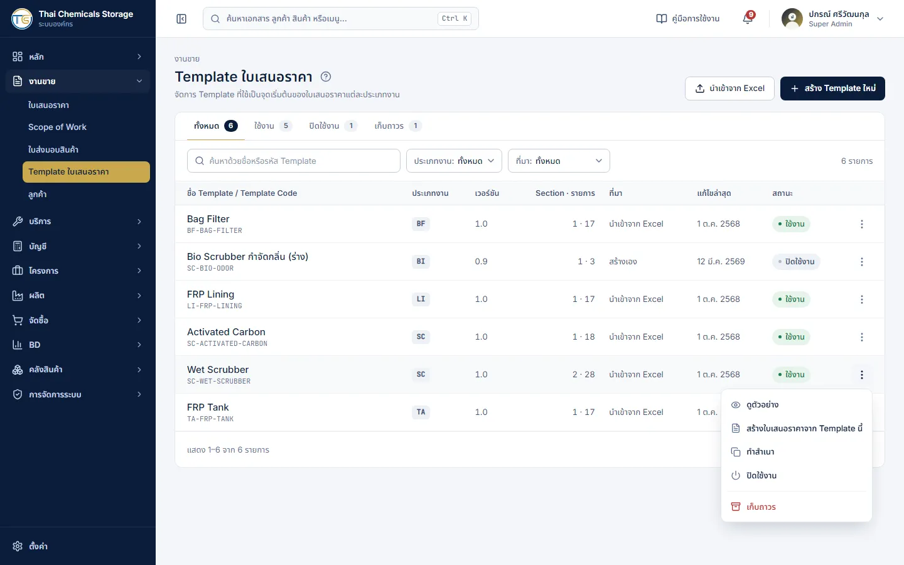
11.2สร้างและแก้ไข Template
- เปิดหน้าแก้ไข — กด สร้าง Template ใหม่ หรือกดแถวของ Template ที่มีอยู่
- ข้อมูล Template — Template Code (ห้ามซ้ำ) ชื่อ Template และคำอธิบาย
- การตั้งค่า — เลือกประเภทงาน ใส่เวอร์ชัน และเปิดสวิตช์ เปิดใช้งาน Template นี้ เพื่อให้ขึ้นให้เลือกตอนสร้างใบเสนอราคาของประเภทงานนี้
- Section และรายการ — กด เพิ่ม Section แล้วตั้งชื่อ ในแต่ละ Section กด เลือกสินค้า (ติ๊กจากคลังสินค้าได้หลายรายการ) หรือ เพิ่มรายการเอง
- เงื่อนไขและข้อตกลง — ใส่ข้อความเงื่อนไขการชำระเงิน เงื่อนไขการรับประกัน และหมายเหตุภาษี กด เพิ่ม ทีละบรรทัด
- บันทึก — กด บันทึก ที่มุมขวาบน · ไม่เก็บการแก้ไข กด ยกเลิก
- แต่ละรายการมีประเภท รายการหลัก รายการย่อย หรือ ข้อกำหนด ชื่อรายการ จำนวน และหน่วย ปุ่มท้ายบรรทัดใช้เพิ่มรายละเอียดย่อย เลื่อนลำดับด้วยลูกศร ย้ายขึ้น / ย้ายลง ทำสำเนา และลบ · Section ก็เลื่อนลำดับด้วยลูกศรขึ้น/ลงที่หัว Section เช่นกัน (หน้านี้ไม่มีการลากวาง)
- รายการที่เลือกจากคลังสินค้าจะคัดลอกชื่อและหน่วยมา และแสดงรหัสสินค้ากำกับ ถ้าสินค้ามีสเปคจะขึ้นเป็นรายละเอียดย่อยให้
- หมายเหตุภายในระดับ Template — สำหรับทีมงานภายในเท่านั้น ไม่แสดงในใบเสนอราคาหรือเอกสารลูกค้า
- เวอร์ชันไม่เพิ่มเอง ถ้าแก้เนื้อหาแล้วอยากให้เห็นว่าเป็นรุ่นใหม่ ให้แก้ช่องเวอร์ชันเอง
- สวิตช์เปิดใช้งานขึ้นเฉพาะผู้ที่มีสิทธิ์เปิด-ปิด Template
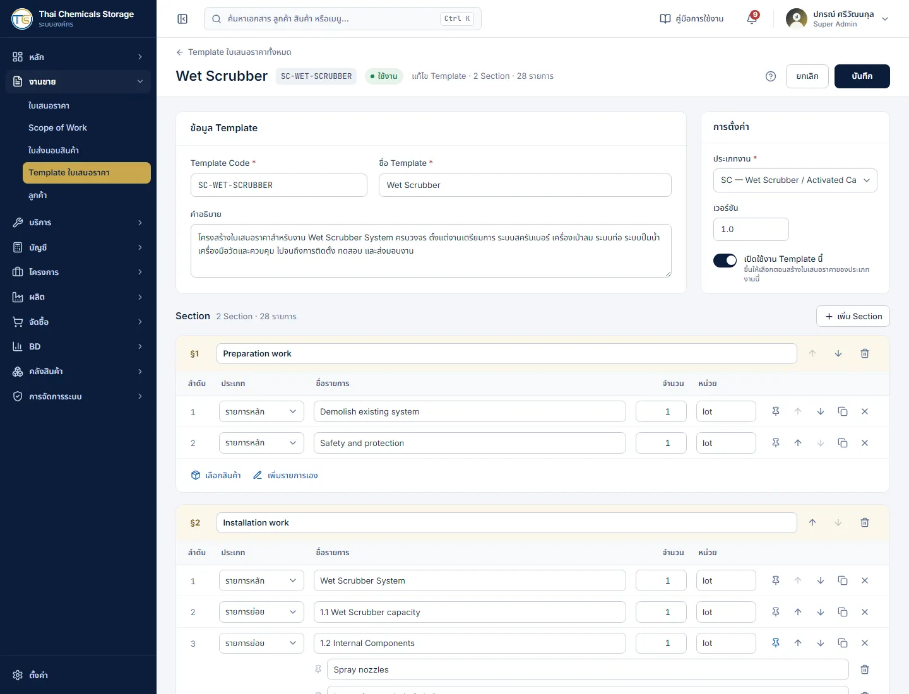
11.3เปิด-ปิดใช้งาน ทำสำเนา และเก็บถาวร
- ปิดใช้งาน / เปิดใช้งาน — จากเมนู ⋮ ท้ายแถว Template ที่ปิดใช้งานยังอยู่ในหน้านี้ แต่ไม่ขึ้นให้เลือกตอนสร้างใบเสนอราคา
- ทำสำเนา — ระบบถาม Template Code ใหม่ (เติม -COPY ให้ แก้ได้ ต้องไม่ซ้ำ) แล้วเปิดสำเนาในหน้าแก้ไข สำเนาเริ่มเป็น ปิดใช้งาน เสมอ เพื่อให้ตรวจก่อนปล่อยให้ฝ่ายขายใช้ ต้นฉบับไม่เปลี่ยน
- เก็บถาวร — ซ่อนจากรายการหลักและไม่ขึ้นให้เลือกตอนสร้างใบเสนอราคาใหม่ ดู Template ที่เก็บไว้ได้ในแท็บ เก็บถาวร และกู้คืนได้ด้วย เลิกเก็บถาวร ในเมนู ⋮ ของแถวนั้น · การเก็บถาวรและการเลิกเก็บถาวร ระบบถามยืนยันก่อน
- แต่ละคำสั่งต้องมีสิทธิ์ของตัวเอง ถ้าไม่เห็นคำสั่งในเมนู ให้แจ้งผู้ดูแลระบบ
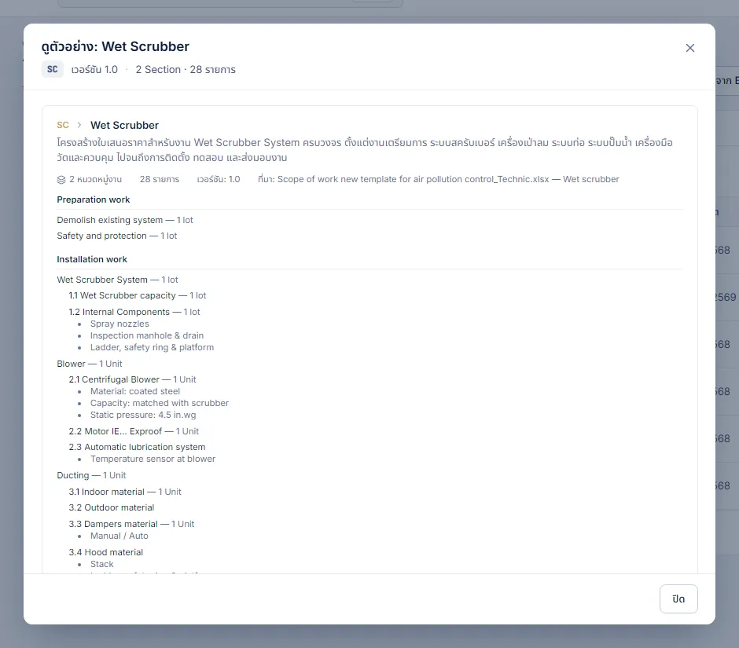
11.4Template กับใบเสนอราคาที่ออกไปแล้ว
- ตอนสร้างใบเสนอราคาจาก Template ระบบคัดลอกหมวดหมู่งาน รายการ และเงื่อนไขลงในใบ ณ ตอนนั้น การ์ดข้อมูลอื่นของใบบอกว่าสร้างจาก Template ไหน เวอร์ชันอะไร
- การแก้ ปิดใช้งาน หรือเก็บถาวร Template ภายหลังไม่กระทบใบเสนอราคาที่สร้างไปแล้ว ใบใหม่ที่สร้างหลังจากนี้จึงได้เนื้อหาล่าสุด
- ประเภทงานที่ยังไม่มี Template ที่ใช้งานอยู่ ใบเสนอราคาจะเริ่มจากใบเปล่า — ดูบทที่ 6
11.5นำเข้าจาก Excel
ปุ่ม นำเข้าจาก Excel มุมขวาบนใช้ดึง Template มาตรฐาน 5 แบบของบริษัทเข้าระบบ ได้แก่ Wet Scrubber, Activated Carbon, Bag Filter, FRP Tank และ FRP Lining ซึ่งเตรียมเนื้อหาไว้จากไฟล์ Excel ต้นฉบับของบริษัท (Scope of work new template for air pollution control_Technic.xlsx) ปุ่มนี้ขึ้นเฉพาะผู้ที่มีสิทธิ์นำเข้า Template
- กดนำเข้า — กด นำเข้าจาก Excel ครั้งเดียว ไม่ต้องเลือกไฟล์ ระบบใช้ไฟล์ต้นฉบับที่เก็บไว้ในระบบ
- อ่านผลสรุป — ระบบแจ้งว่า “นำเข้าสำเร็จ — สร้างใหม่ … อัปเดต … ข้าม … รายการ” Template ที่ได้จะมีที่มาเป็น “นำเข้าจาก Excel”
- ตรวจคำเตือน (ถ้ามี) — ถ้าชีตในไฟล์ Excel ต้นฉบับถูกแก้ไปตั้งแต่ครั้งก่อน ระบบบอกจำนวนคำเตือนและบอกให้ดูรายละเอียดที่บันทึกการใช้งาน (บทที่ 27) ว่าชีตไหนต้องตรวจและปรับเนื้อหาใน Template เอง
- กดซ้ำได้ปลอดภัย Template มาตรฐานที่เนื้อหาตรงกับต้นฉบับอยู่แล้วจะถูกข้าม ส่วน Template ที่สร้างเองไม่ถูกแตะเลย
- ปุ่มนี้ไม่ใช่การอัปโหลดไฟล์ Excel ของคุณเองมาแปลงเป็น Template — ถ้าต้องการ Template ของงานแบบใหม่ ให้ใช้ สร้าง Template ใหม่
- ระบบที่เพิ่งติดตั้งและยังไม่มี Template เลย จะเติม Template มาตรฐานชุดนี้ให้เองตอนเปิดหน้าครั้งแรก
บริการ · บทที่ 12
งานบริการ (Service)
หมวดบริการใช้ทำรายงานตรวจเช็ค/บริการภาคสนาม (Service Report) ของช่างและวิศวกรบริการ ตั้งแต่กรอกผลตรวจหน้างาน แนบรูป ให้ลูกค้าเซ็นรับ จนพิมพ์รายงานส่งลูกค้า
รายงานบริการสร้างตรงจากลูกค้า ไม่ต้องผ่านใบเสนอราคาก่อนเหมือนเอกสารกลุ่มอื่น หน้ารายการมีแท็บ ทั้งหมด ร่าง เสร็จสิ้น ยกเลิก พร้อมจำนวน และช่องค้นหาจากเลขที่ ลูกค้า สถานที่ หรือระบบที่ให้บริการ — วิธีใช้แท็บ ค้นหา และตัวกรองเหมือนหน้ารายการอื่นทุกหน้า ดู หน้ารายการเอกสาร กดที่แถวเพื่อเปิดรายงานนั้น
12.1การสร้างรายงาน
- กดสร้างรายงานบริการ — ปุ่ม สร้างรายงานบริการ มุมขวาบนของหน้ารายการ จะเปิดหน้าสร้างรายงานบริการแบบเต็มหน้า
- เลือก Template ตรวจเช็ค — การ์ด Template ตรวจเช็ค บนสุดเป็นตาราง กดเลือกแถวของแบบฟอร์มที่ตรงกับงาน (เช่น ระบบบำบัดอากาศทั่วไป, Activated Carbon / Wet Scrubber) ตารางแสดงรหัส จำนวนหมวด และจำนวนรายการของแต่ละ Template และแสดงเฉพาะ Template ที่เปิดใช้งาน ถ้างานนี้ไม่มีแบบฟอร์มที่ตรง เลือกแถว ไม่ใช้ Template (เริ่มจากรายการว่าง) แล้วสร้างหัวข้อและรายการเองในรายงาน
- เลือกลูกค้า — ในการ์ด ลูกค้า พิมพ์ค้นจากชื่อบริษัท ผู้ติดต่อ เบอร์โทร อีเมล หรือเลขผู้เสียภาษี (ถ้าเลือกไว้แล้วจะเปลี่ยนได้ที่ ค้นหาลูกค้าอื่น) ถ้าลูกค้ายังไม่อยู่ในรายชื่อ เลือก ไม่อยู่ในรายชื่อ — กรอกชื่อบริษัท ผู้ติดต่อ เบอร์โทร และที่อยู่เอง ต้องมีลูกค้าก่อนจึงจะสร้างรายงานได้
- กรอกข้อมูลการเข้าบริการ — สถานที่ให้บริการ · อ้างอิงโปรเจกต์/รหัสงาน · ระบบที่ให้บริการ · ประเภทบริการ · วันที่เข้าบริการ · วันที่ออกรายงาน · รอบ PM ถัดไป · ผู้ติดต่อหน้างานและเบอร์โทร
- ระบุผู้ตรวจสอบ — การ์ด ผู้ตรวจสอบ ทางขวา: ผู้เข้าตรวจสอบหลัก ตั้งต้นเป็นคนที่สร้างรายงาน เปลี่ยนได้ และลายเซ็นในรายงานดึงจากโปรไฟล์ของคนนี้ ส่วน ผู้ตรวจสอบเพิ่มเติม พิมพ์ชื่อได้หลายคนโดยคั่นด้วยจุลภาค
- กดสร้างรายงานร่าง — ปุ่ม สร้างรายงานร่าง มุมขวาบน ออกเลขที่รายงานให้อัตโนมัติ รูปแบบ
SR-YYYYMM-NNNN(ปี ค.ศ. + เดือน + ลำดับ 4 หลัก เริ่มนับใหม่ทุกเดือน เช่นSR-202609-0014) แล้วเปิดรายงานฉบับร่างให้กรอกผลตรวจต่อทันที
- บนหน้าสร้าง รายการตรวจเช็คของ Template ที่เลือกจะแสดงให้ดูก่อน แต่กรอกผลตรวจและแนบรูปได้หลังกดสร้างรายงานร่างแล้ว
- หลังสร้างแล้ว ฉบับร่างบันทึกอัตโนมัติระหว่างกรอก ข้างเลขที่รายงานจะขึ้นเวลาที่บันทึกล่าสุด และยังมีปุ่ม บันทึกร่าง บนหัวรายงานให้กดบันทึกทันทีเมื่อต้องการ (ดู บทที่ 3)
- ช่องที่มี * เว้นว่างไว้ก่อนได้ระหว่างเป็นร่าง แต่ต้องกรอกครบก่อนกด ยืนยันเสร็จสิ้น
- รายงานเก็บสำเนารายการตรวจเช็คของ Template ไว้ตั้งแต่ตอนสร้าง ถ้าภายหลังมีคนแก้ Template รายงานที่สร้างไปแล้วจะไม่เปลี่ยนตาม
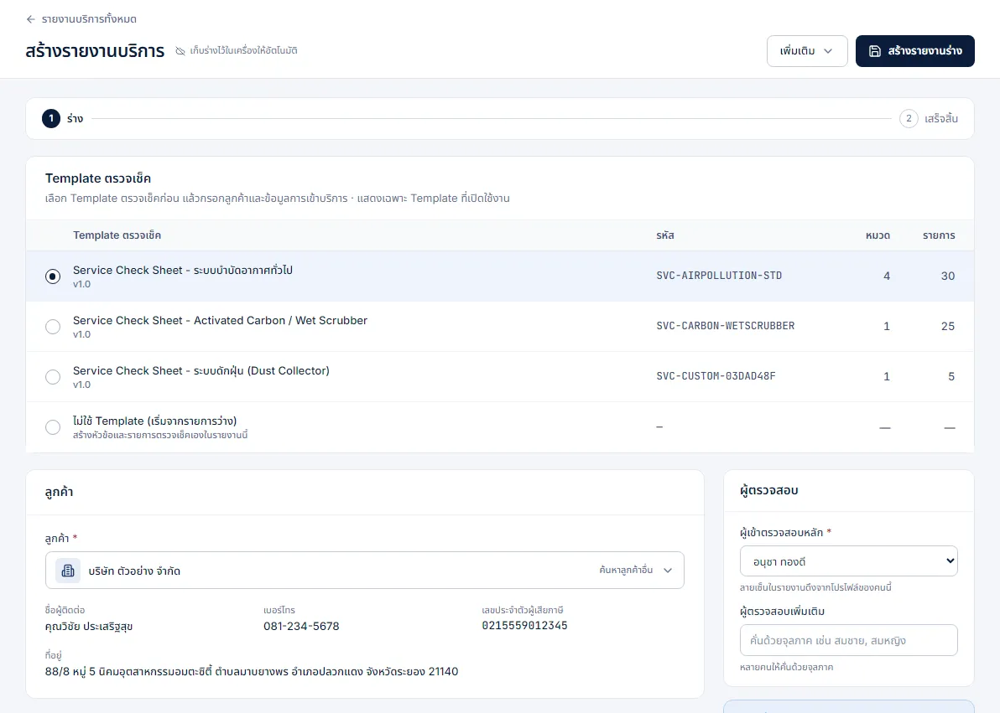
12.2รายการตรวจเช็ค (Checklist)
รายการตรวจเช็คแบ่งเป็นหมวด ในหมวดมีหัวข้อ (กลุ่มอุปกรณ์ เช่น Blower, Visual Check) และในหัวข้อมีรายการ เหมือนแบบฟอร์มกระดาษเดิม กดที่ชื่อหมวดเพื่อย่อหรือขยาย
- รายการแบบปกติ/ผิดปกติ — กดปุ่มคู่ ปกติ ผิดปกติ ในช่องผลตรวจของรายการ (กดซ้ำที่ปุ่มเดิมเพื่อล้างผล)
- รายการแบบกรอกค่าที่วัดได้ — พิมพ์ตัวเลขที่วัดได้ลงช่องแทนการกดปุ่ม เช่น Air Flow Rate, Differential Pressure
- กด ผิดปกติ แล้วต้องกรอกรายละเอียดความผิดปกติ และแนบรูปภาพประกอบอย่างน้อย 1 รูป ก่อนจึงจะยืนยันเสร็จสิ้นได้
- กด ปกติ ก็เพิ่มรายละเอียดและแนบรูปได้เช่นกัน (เพิ่มรูป) แต่ไม่บังคับ
- หมวดที่มีป้าย ตามระบบที่ติดตั้ง เป็นหมวดเสริม เปิดสวิตช์ รวมในรายงานนี้ ที่หัวหมวดเฉพาะเมื่อหน้างานมีระบบนั้นจริง หมวดที่ไม่ได้รวมจะไม่ถูกนับและไม่ต้องกรอก
ปรับรายการให้ตรงกับหน้างาน
หน้างานแต่ละที่ไม่เหมือนกัน รายงานฉบับร่างจึงแก้โครงรายการได้เอง การแก้ทั้งหมดนี้มีผลเฉพาะรายงานฉบับนี้ ไม่กระทบ Template ต้นฉบับ
- เพิ่มรายการ ใต้แต่ละหัวข้อ — ตั้งชื่อรายการแล้วกด เพิ่ม รายการใหม่เริ่มเป็นแบบปกติ/ผิดปกติ
- เพิ่มหัวข้อ ท้ายแต่ละหมวด — ตั้งชื่อหัวข้อ แล้วค่อยเพิ่มรายการในหัวข้อนั้น
- สลับประเภทรายการ — ปุ่มไอคอนท้ายแถวรายการ (เปลี่ยนเป็นช่องกรอกค่าที่วัดได้ / เปลี่ยนเป็นปกติ/ผิดปกติ) สลับระหว่างแบบปกติ/ผิดปกติ กับแบบช่องกรอกค่าที่วัดได้ สลับไปมาได้โดยข้อมูลที่กรอกไว้ไม่หาย
- แก้ชื่อ — ดับเบิลคลิกที่ชื่อรายการหรือชื่อหัวข้อ (บนจอสัมผัสแตะครั้งเดียว) พิมพ์แล้วกด Enter ผลตรวจและรูปของรายการนั้นยังอยู่ครบ
- ลบ — ปุ่มลบท้ายรายการหรือข้างชื่อหัวข้อ ถ้ารายการยังว่างจะลบทันที ถ้ามีผลตรวจ รายละเอียด หรือรูปแล้ว ระบบจะถามยืนยันก่อน การลบหัวข้อลบทุกรายการในหัวข้อพร้อมข้อมูลที่บันทึกไว้
การ์ดสีกรมท่าทางขวาแสดงความคืบหน้า ตรวจเช็คแล้ว x / y รายการ พร้อมจำนวนที่ปกติ ผิดปกติ กรอกค่าที่วัดได้แล้ว และยังไม่ระบุ ใต้รายการตรวจเช็คมีการ์ด สรุปผลการตรวจ — สรุปภาพรวมสำหรับลูกค้า (พิมพ์ลงรายงานที่ส่งให้ลูกค้า) และหมายเหตุ
ถ้าต้องการเปลี่ยนรายการตรวจเช็คมาตรฐานให้ใช้กับรายงานใบต่อ ๆ ไปด้วย ให้แก้ที่ Template แทน ดู Template รายงานบริการ
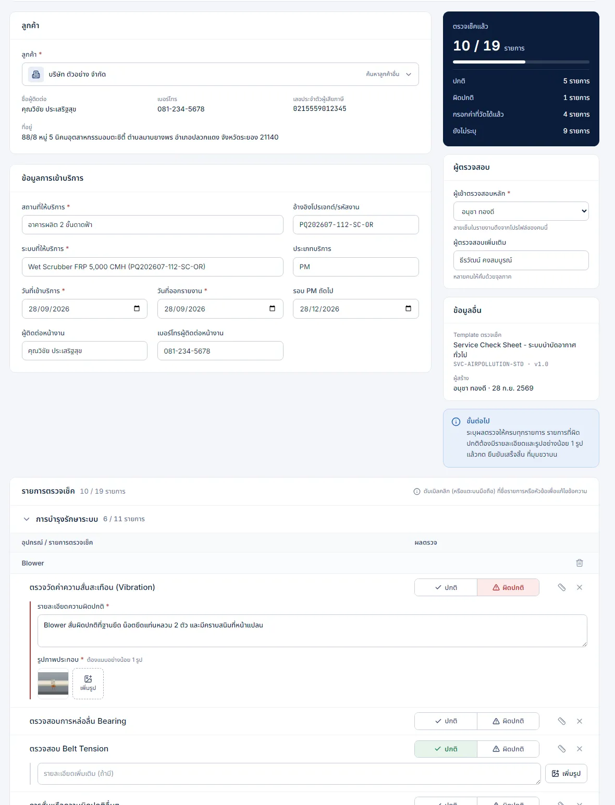
12.3สถานะและการพิมพ์
- ระหว่างเป็นร่าง กรอกและแก้ได้เรื่อย ๆ ระบบบันทึกให้อัตโนมัติ และกด บันทึกร่าง บนหัวรายงานเพื่อบันทึกทันทีได้
- กด ยืนยันเสร็จสิ้น (ปุ่มหลักมุมขวาบน) เมื่อตรวจครบ ระบบจะตรวจว่าช่องที่มี * ครบ ทุกรายการในหมวดที่รวมในรายงานมีผลแล้ว และรายการผิดปกติมีรายละเอียดกับรูปครบ ถ้าขาดตรงไหนจะชี้ให้ที่รายการนั้น ปุ่มนี้ใช้ได้เฉพาะผู้ที่มีสิทธิ์ปิดงาน
- รายงานที่เสร็จสิ้นแล้วแก้ไม่ได้ ถ้าต้องแก้ ผู้ที่มีสิทธิ์แก้รายงานกดปุ่ม เปิดใหม่ บนหัวรายงานให้กลับเป็นร่างก่อน
- เพิ่มเติม › ยกเลิกรายงาน — รายงานยังอยู่ในรายการด้วยสถานะยกเลิก แต่แก้ไขต่อไม่ได้และเปิดกลับไม่ได้
- เพิ่มเติม › ลบรายงาน — เอารายงานออกจากระบบ เมนูนี้ขึ้นเฉพาะรายงานที่ยังเป็นร่าง ใช้ได้กับเจ้าของรายงานหรือผู้ที่มีสิทธิ์ปิดงาน
- ปุ่ม พิมพ์ / ส่งออก ออกรายงานฉบับพิมพ์ครบชุด: ตารางรายการตรวจเช็ค · รายละเอียดและรูปของรายการผิดปกติ รวมถึงรายการปกติที่แนบรูปไว้ (แต่ละรายการมีป้าย ปกติ/ผิดปกติ กำกับ) · สรุปผล · ช่องลายเซ็นผู้ตรวจสอบและลูกค้า
- ให้ลูกค้าเซ็นรับงานได้ทั้งที่หน้างานและส่งลิงก์ไปให้อนุมัติทีหลัง ดู การเซ็นรับงานของลูกค้า
12.4การเซ็นรับงานของลูกค้า
การ์ด การเซ็นรับงาน อยู่ท้ายหน้ารายงาน การเซ็นไม่บังคับ — ถ้าลูกค้าไม่อยู่หน้างาน ยืนยันเสร็จสิ้นได้โดยไม่ต้องเซ็น
- ผู้ตรวจสอบ / Service Engineer — ใช้ลายเซ็นจากโปรไฟล์ของผู้เข้าตรวจสอบหลักให้อัตโนมัติ ถ้ายังไม่มี ให้ผู้นั้นตั้งลายเซ็นที่ ตั้งค่า › โปรไฟล์
- ผู้รับทราบ / ลูกค้า — ลูกค้าเซ็นเอง มีสองทางด้านล่าง
เซ็นที่หน้างาน
- ให้ลูกค้าเซ็นในกรอบ — ใช้เมาส์ นิ้ว หรือปากกาสไตลัส เซ็นผิดกด ล้าง แล้วเซ็นใหม่
- กรอกชื่อผู้ลงนาม — ชื่อ-นามสกุลของคนที่เซ็น
- กดยืนยันลายเซ็น — ปุ่ม ยืนยันลายเซ็น ล็อกลายเซ็นไว้พร้อมวันเวลาที่เซ็น (ระบบลงเวลาเอง แก้ย้อนหลังไม่ได้) ลายเซ็นเข้าระบบพร้อมการบันทึกรายงานครั้งถัดไป จะกด บันทึกร่าง ทันทีก็ได้
- ลายเซ็นลูกค้าต้องวาดเท่านั้น อัปโหลดรูปแทนไม่ได้
- เซ็นได้เฉพาะตอนรายงานยังเป็นร่าง ลำดับปกติคือ กรอกผลตรวจ → ให้ลูกค้าเซ็น → ยืนยันเสร็จสิ้น
- รายงานที่ยังไม่มีลายเซ็นลูกค้าจะพิมพ์ช่องเซ็นเป็นเส้นว่าง ใช้เป็นใบเซ็นรับแบบกระดาษได้
ส่งให้ลูกค้าอนุมัติทีหลัง (ลิงก์/LINE)
- กดส่งให้ลูกค้าอนุมัติ — ปุ่ม ส่งให้ลูกค้าอนุมัติ (ลิงก์/LINE) ในการ์ดการเซ็นรับงาน ระบบบันทึกรายงานก่อน แล้วสร้างลิงก์อนุมัติอายุ 7 วัน
- ส่งลิงก์ถึงลูกค้า — ถ้าลูกค้าผูก LINE ไว้แล้ว ระบบส่งลิงก์เข้า LINE ให้อัตโนมัติ ถ้ายังไม่ได้ผูก หน้าต่างจะแสดงลิงก์พร้อมวันหมดอายุ กด คัดลอกลิงก์ แล้วส่งทางช่องทางที่สะดวก
- ลูกค้าเปิดลิงก์ — ลูกค้าไม่ต้องมีบัญชีในระบบ หน้านี้ออกแบบให้อ่านบนมือถือ เรียงเป็นคอลัมน์เดียว: ข้อมูลงานบริการ ผลการตรวจเช็คพร้อมรูป และสรุปผลอยู่ด้านบน ส่วนการอนุมัติรายงานอยู่ท้ายหน้า ลูกค้าเซ็นในกรอบ กด ยืนยันลายเซ็น แล้วกด อนุมัติรายงาน หรือกด ไม่อนุมัติ / แจ้งแก้ไข กรอกเหตุผล (บังคับ) แล้วกด ยืนยันไม่อนุมัติ
- รับผล — ผู้ส่ง ผู้สร้างรายงาน และผู้เข้าตรวจสอบหลักได้รับการแจ้งเตือน ถ้าอนุมัติ ลายเซ็นลูกค้าจะขึ้นในรายงานและฉบับพิมพ์เหมือนเซ็นที่หน้างาน ถ้าไม่อนุมัติ ให้อ่านเหตุผล แก้รายงาน แล้วส่งลิงก์ใหม่
- ลิงก์หนึ่งตอบได้ครั้งเดียว เลยกำหนด 7 วันแล้วลิงก์จะขึ้นว่าหมดอายุ
- กดส่งซ้ำจะได้ลิงก์ใหม่ และลิงก์เดิมใช้ไม่ได้อีก
- รายงานที่ยกเลิกแล้ว หรือที่ลูกค้าอนุมัติไปแล้ว ส่งอีกไม่ได้
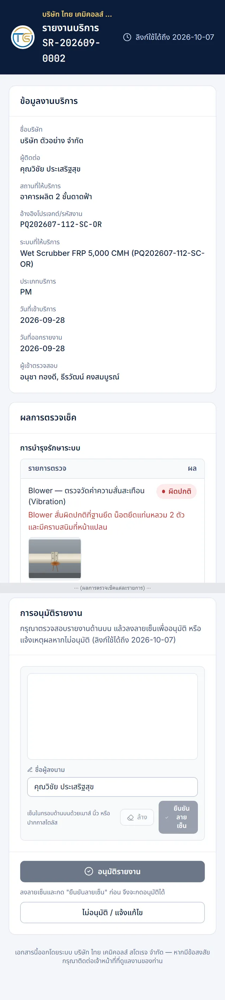
12.5Template รายงานบริการ
เมนู บริการ › Template รายงานบริการ เก็บชุดรายการตรวจเช็คมาตรฐานของแต่ละระบบ แท็บ ใช้งานอยู่ กับ เก็บถาวร แยก Template ที่ใช้อยู่กับที่เลิกใช้แล้ว แต่ละแถวแสดงชื่อ รหัส จำนวนหมวด จำนวนรายการ และสถานะ กดที่แถวเพื่อเปิดแก้
สร้าง Template ใหม่
- กดสร้าง Template ใหม่ — ปุ่ม สร้าง Template ใหม่ มุมขวาบน เปิดหน้าแก้ Template
- กรอกข้อมูล Template — ชื่อ Template (บังคับ) และคำอธิบาย ระบบตั้งรหัส Template ให้เอง
- จัดหมวด กลุ่ม และรายการ — กด เพิ่มหมวด เพิ่มกลุ่ม เพิ่มรายการ ตั้งชื่อ และเลือกประเภทรายการของแต่ละรายการ: ปกติ/ผิดปกติ หรือ กรอกค่าที่วัดได้
- กดบันทึก — ปุ่ม บันทึก มุมขวาบน Template ใหม่จะขึ้นให้เลือกตอนสร้างรายงานทันที ถ้าไม่ต้องการเก็บ กด ยกเลิก
แก้ Template
- ลำดับบนหน้านี้คือลำดับในรายงาน ใช้ปุ่มลูกศรเลื่อนหมวดหรือกลุ่มขึ้น/ลง กดที่หัวหมวดเพื่อย่อหรือขยายหมวดนั้น
- ปุ่มทำสำเนาข้างหมวดหรือกลุ่ม ใช้เมื่อต้องการชุดรายการที่คล้ายกัน ปุ่มลบใช้เอาหมวด กลุ่ม หรือรายการออก
- ติ๊ก หมวดเสริม (เลือกได้ตามระบบที่ติดตั้ง) ให้หมวดที่บางหน้างานไม่มี หมวดนี้จะขึ้นในรายงานแบบให้ติ๊ก "รวมในรายงานนี้" เอง
- การ์ดสรุปด้านขวานับรายการทั้งหมด จำนวนหมวดและหมวดเสริม และแยกจำนวนรายการแบบปกติ/ผิดปกติ กับแบบกรอกค่า
- แก้เสร็จกด บันทึก
ทำสำเนาและเก็บถาวร
- เพิ่มเติม › ทำสำเนา — สร้าง Template ใหม่จากชุดเดิมทั้งชุด ชื่อต่อท้าย "(สำเนา)" เหมาะกับการทำฉบับย่อหรือฉบับของระบบที่คล้ายกัน
- เพิ่มเติม › เก็บถาวร — Template ย้ายไปแท็บเก็บถาวร และไม่ขึ้นให้เลือกตอนสร้างรายงานอีก รายงานเดิมที่ใช้ Template นี้ไม่เปลี่ยน ถ้าต้องการใช้อีก เปิดจากแท็บเก็บถาวรแล้วเลือก เพิ่มเติม › กู้คืน
- Template ที่มีสถานะปิดใช้งานจะไม่ขึ้นให้เลือกตอนสร้างรายงานเช่นกัน
การสร้าง แก้ และเก็บถาวร Template ต้องมีสิทธิ์จัดการ Template รายงานบริการ (บทบาท Service Engineer ดูได้อย่างเดียว)
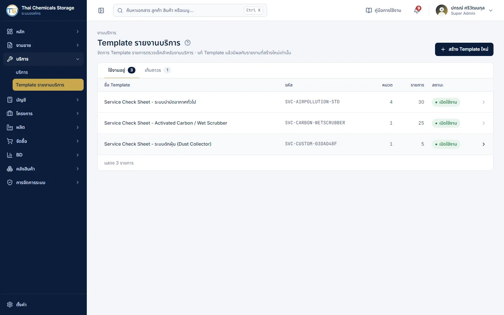
บัญชี · บทที่ 13
บัญชี-รับ (วางบิล / ใบกำกับภาษี)
หมวด บัญชี ใช้ออกเอกสารบัญชีลูกหนี้ทั้งชุด (AR / BI / RE / IV) จากงวดชำระเงินของ Scope of Work และติดตามยอดค้างชำระ ทุกเมนูในหมวดนี้เห็นเฉพาะผู้ที่มีสิทธิ์กลุ่ม "บัญชี"
13.1เอกสาร 4 ประเภท
| เมนู | เอกสาร | เลขที่ขึ้นต้น | ใช้เมื่อไร |
|---|---|---|---|
| ใบรับเงินมัดจำ/ใบกำกับภาษี | AR | AR6908001 | งวดมัดจำ (Down Payment) — เก็บเงินมัดจำ พร้อมเป็นใบกำกับภาษีในตัว |
| ใบแจ้งหนี้/ใบวางบิล | BI | BI6908001 | ใบวางบิลของงวดนั้น — ระบบออกให้พร้อมกับ AR/IV ในการกดครั้งเดียว |
| ใบเสร็จรับเงิน | RE | RE6908001 | ออกเมื่อลูกค้าชำระเงินเข้ามาจริง |
| ใบกำกับภาษี/ใบส่งสินค้า | IV | IV6908001 | งวดอื่นที่ไม่ใช่งวดมัดจำ เช่น งวดส่งมอบงาน (ตัดสต๊อกสินค้าได้จากหน้านี้) |
รูปแบบเลขที่: ตัวอักษรนำหน้า + ปี พ.ศ. 2 หลัก + เดือน 2 หลัก + ลำดับ 3 หลัก — AR6908001 คือ AR ของเดือน 08 ปี 2569 ลำดับที่ 001 เอกสารแต่ละประเภทนับลำดับของตัวเอง ระบบออกเลขให้อัตโนมัติแบบกันเลขชนกัน แก้ด้วยมือไม่ได้
เอกสารแต่ละใบอ้างถึงกันอย่างไร
- หน้า AR และหน้า IV มีคอลัมน์ ใบเสร็จรับเงิน — บอกเลข RE ของใบนั้น ถ้ายังไม่ได้รับเงินจะขึ้นว่า "ยังไม่ออก"
- หน้า BI และหน้า RE มีคอลัมน์ อ้างถึงใบกำกับภาษี — บอกว่าใบวางบิลหรือใบเสร็จใบนี้คู่กับ AR/IV ใบไหน
- เอกสารที่สร้างแบบ Manual (ไม่ผูกกับ Scope of Work) มีป้าย แบบ Manual ต่อท้ายเลขที่ และช่องเลขที่งานเป็น "—"
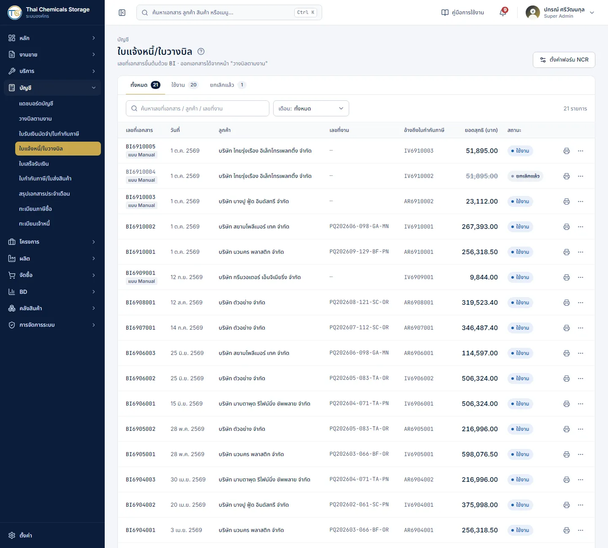
13.2ขั้นตอนวางบิลตามงาน
เมนู บัญชี › วางบิลตามงาน ไม่ดึงงานขึ้นมาให้เอง เพราะงานที่ค้างอยู่ในระบบไม่ได้แปลว่าวางบิลได้จริง — อาจยังรอ PO หรือเอกสารลูกค้ายังไม่ครบ บัญชีเลือกงานที่พร้อมวางบิลเองทุกครั้ง
- กดสร้างวางบิล — ปุ่ม สร้างวางบิล มุมขวาบน เปิดหน้าต่าง "เลือกงานที่จะวางบิล"
- ค้นหาและเลือกงาน (Scope of Work) — พิมพ์เลขที่งาน ชื่อลูกค้า หรือเลขที่ใบเสนอราคา คอลัมน์ บิลมัดจำ บอกว่างานนั้นออก AR มัดจำแล้วหรือยัง กดที่งานเพื่อเปิดงวดการชำระเงินของงานนั้น
- เปิดงวดที่จะวางบิล — การ์ด งวดการชำระเงิน เรียงทุกงวดของงานเป็นแถว แต่ละแถวมีป้ายสถานะ (ยังไม่ได้วางบิล · วางบิล · งานยังไม่จบ · จบ) กดที่งวดเพื่อขยาย งวดที่ออกเอกสารไปแล้วจะบอกเลขที่เอกสารไว้ใต้ชื่องวด
- เลือกประเภทงานและแนบเอกสารประกอบ — เลือกประเภทงาน (สินค้า / บริการ / งานสัญญา) รายการเอกสารด้านล่างจะเปลี่ยนตามประเภท ติ๊กและกด แนบไฟล์ ให้ครบ รายการที่มี * ต้องมีก่อนออกเอกสาร คือ สำเนาใบสั่งซื้อ/สัญญา และใบส่งมอบงาน/ใบส่งสินค้าที่มีลายเซ็นลูกค้า (งวดมัดจำไม่ต้องมีใบส่งมอบงาน เพราะยังไม่ได้ส่งมอบอะไร)
- กดออกเอกสาร — ปุ่มหลักมุมขวาบนออกเอกสารของงวดที่เปิดอยู่ พร้อมกับ BI ในการกดครั้งเดียว แล้วล็อกเลขที่ทันที งวดมัดจำปุ่มจะเป็น ออกเอกสาร (AR + BI) งวดอื่นเป็น ออกเอกสาร (IV + BI)
- เมื่อลูกค้าชำระเงิน — ออกใบเสร็จ (RE) — ในการ์ด เอกสารที่ออกแล้ว ของงานนั้น กด ออกใบเสร็จ ที่แถว AR/IV แล้วยืนยันในหน้าต่าง
- แถบขวาของหน้างานบอกว่างานนี้ออกบิลมัดจำแล้วหรือยัง พร้อมเลข AR และสถานะใบเสร็จ
- ออกใบเสร็จได้อีกสองทาง: ปุ่ม ออกใบเสร็จ ท้ายแถวในหน้า AR หรือ IV หรือเข้าหน้า บัญชี › ใบเสร็จรับเงิน แล้วกด ออกใบเสร็จ มุมขวาบน หน้าต่าง "เลือกใบกำกับภาษีที่จะออกใบเสร็จ" แสดงเฉพาะ AR/IV ที่ออกแล้วและยังไม่มีใบเสร็จ กดที่แถว แล้วกด ออกใบเสร็จ ในหน้าต่างยืนยัน
- ยอดใบเสร็จเท่ากับยอดสุทธิของใบกำกับภาษีเสมอ และ AR/IV หนึ่งใบมีใบเสร็จที่ใช้งานได้ใบเดียว
- ออกใบเสร็จของงวดที่ไม่ใช่งวดมัดจำแล้ว งวดนั้นถือว่าจบ ถ้ายกเลิกใบเสร็จนั้น งวดจะกลับมาเปิดอีกครั้ง
หน้ารายการเอกสารทั้ง 4 หน้ามีแท็บ ทั้งหมด ใช้งาน ยกเลิกแล้ว ช่องค้นหาจากเลขที่เอกสาร ลูกค้า หรือเลขที่งาน และตัวกรองเดือน — วิธีใช้เหมือนหน้ารายการอื่น ดู หน้ารายการเอกสาร
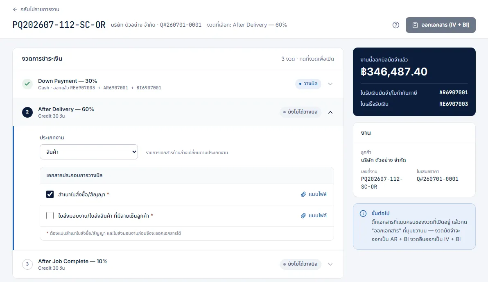
13.3แดชบอร์ดบัญชี
เมนูแรกของหมวด ใช้ดูภาพรวมก่อนไล่เข้าเอกสารรายใบ เลือกช่วงเวลา (เดือนนี้ เดือนที่แล้ว ไตรมาสนี้ ปีนี้ หรือกำหนดเอง) และพนักงานขายได้ที่มุมขวาบน
- การ์ดสรุป 4 ใบ — ยอดออกใบกำกับภาษี (บอกจำนวนฉบับและเอกสารที่ยกเลิกไว้ใต้ตัวเลข) · VAT ขาย · ยอดค้างชำระ (พร้อมแถบอายุหนี้) · งานที่ยังไม่ออกบิลมัดจำ แต่ละการ์ดมีป้าย ช่วงที่เลือก หรือ ณ ปัจจุบัน บอกว่าตัวเลขขึ้นกับตัวกรองช่วงเวลาหรือไม่ ชี้ที่ไอคอนข้างชื่อการ์ดเพื่ออ่านว่าตัวเลขนับจากอะไร ยอดใบกำกับภาษีและยอดค้างชำระเป็นยอดสุทธิรวม VAT
- แนวโน้มยอดใบกำกับภาษี (AR+IV) ย้อนหลัง 12 เดือน สลับดูรายเดือนหรือรายไตรมาสได้ และสัดส่วนประเภทเอกสารที่ออก
- รายการค้างชำระ (สูงสุด 30 รายการ) เรียงใบที่เกินกำหนดนานที่สุดก่อน
- สถานะการวางบิลของงวดงาน · ลูกค้ารายใหญ่ · อายุหนี้คงค้าง (AR/IV ที่ยังไม่ออกใบเสร็จ)
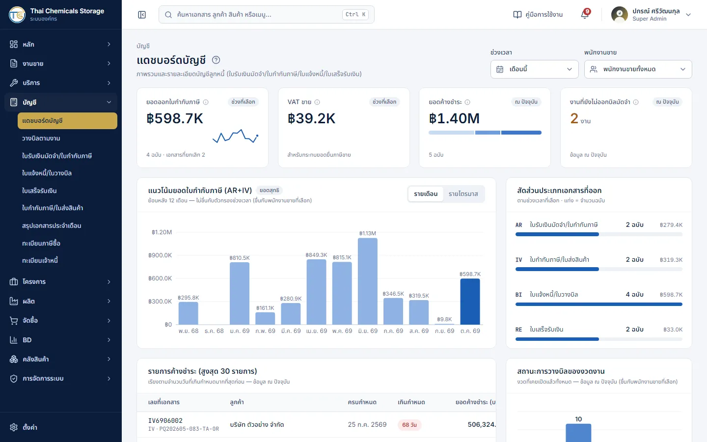
13.4สรุปเอกสารประจำเดือน
เมนูสุดท้ายของหมวดรับ รวมเอกสารบัญชีทุกประเภทที่ออกในเดือนที่เลือก ใช้ตรวจเช็คเวลาส่งยื่นภาษี
- เลือกเดือนที่มุมขวาบน
- แถบ ยอดรวมใบกำกับภาษี (AR + IV) ด้านบนแสดงจำนวนฉบับ มูลค่าก่อนภาษี ภาษีมูลค่าเพิ่ม 7% และยอดรวมสุทธิ สำหรับกระทบยอดยื่นภาษีขาย
- ด้านล่างแยกเป็นตารางต่อประเภทเอกสาร (เลขที่ วันที่ ลูกค้า มูลค่าก่อนภาษี VAT ยอดสุทธิ สถานะ) พร้อมยอดรวมของแต่ละประเภท
- เอกสารที่ยกเลิกยังแสดงในตารางแบบขีดฆ่า แต่ไม่นับในยอดรวม
- กด พิมพ์สรุป เพื่อพิมพ์ กระดาษที่ได้เป็นแบบฟอร์มพิมพ์มาตรฐานของรายงานนี้ (หัว "สรุปเอกสารบัญชีประจำเดือน" ยอดรวมใบกำกับภาษี และตารางแยกตามประเภทเอกสาร) ไม่ได้พิมพ์หน้าตาบนจอ
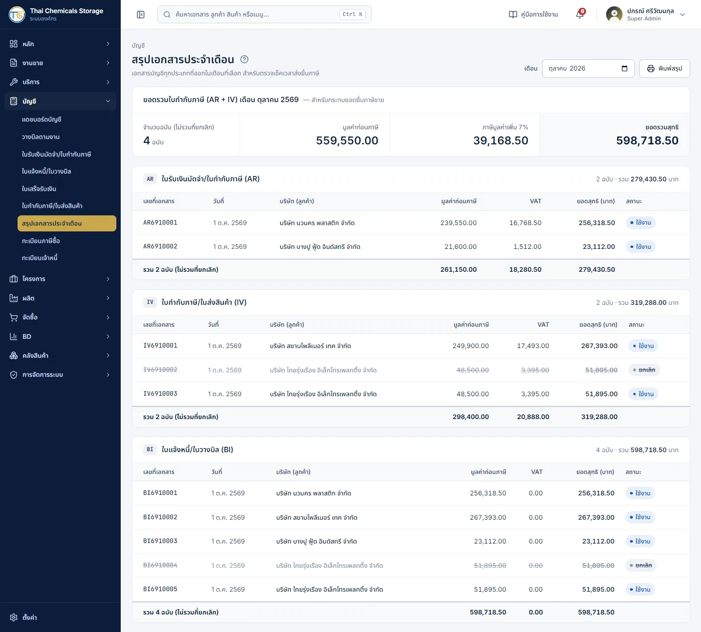
13.5สิ่งที่ทำได้อีกจากหน้ารายการเอกสาร
ปุ่มท้ายแถว
- ออกใบเสร็จ — เฉพาะหน้า AR และ IV ขึ้นเฉพาะใบที่ยังไม่มีใบเสร็จ
- พิมพ์ (ไอคอนเครื่องพิมพ์) — พิมพ์เอกสารเต็มรูปแบบลงกระดาษเปล่า
- เมนู เพิ่มเติม — พิมพ์ลงฟอร์ม NCR (พิมพ์เฉพาะข้อมูลลงฟอร์มกระดาษเคมีที่พิมพ์หัวไว้แล้ว) และ ยกเลิกเอกสาร
- เปิดดู / ตัดสต๊อกสินค้า — เฉพาะหน้า IV เปิดหน้าใบกำกับภาษีคู่กับแผงตัดสต๊อก เลือกสินค้าและจำนวนแล้วกด ตัดสต๊อก ดูรายละเอียดที่ การตัดสต๊อกจากใบกำกับภาษี
ตั้งค่าฟอร์ม NCR
ปุ่ม ตั้งค่าฟอร์ม NCR มุมขวาบนของหน้ารายการ ใช้ปรับตำแหน่งพิมพ์ให้ตรงกรอบของฟอร์มกระดาษเคมี: ขนาดกระดาษ และค่าเยื้องแนวนอน X / แนวตั้ง Y (มม.) กด พิมพ์หน้าทดสอบ ทาบกับฟอร์มจริง ปรับจนเครื่องหมาย + ตกตรงจุดเริ่มของแต่ละช่อง แล้วกด บันทึก ค่าที่ตั้งบันทึกเฉพาะเครื่องที่ใช้อยู่ เครื่องอื่นต้องตั้งเอง กด ค่าเริ่มต้น เพื่อกลับไปค่าตั้งต้น
สร้างใบกำกับภาษีแบบ Manual
หน้า AR และ IV มีปุ่ม สร้างใบกำกับภาษี (Manual) สำหรับงานขายที่ไม่ได้ผ่าน Scope of Work กดแล้วจะเปิดหน้า สร้างใบกำกับภาษี (Manual) แบบเต็มหน้า หัวเอกสารมีป้าย ยังไม่ออกเอกสาร (เลขที่จะได้เมื่อกดออกเอกสาร) คอลัมน์ขวาแสดงยอดรวม และการ์ด เอกสารที่จะได้ บอกว่ากดแล้วจะได้เอกสารใดบ้าง ถ้าไม่ต้องการออก กด ยกเลิก เพื่อกลับหน้ารายการ
- เลือกประเภทเอกสารและเงื่อนไขการชำระเงิน — ใบรับเงินมัดจำ/ใบกำกับภาษี (AR) หรือ ใบกำกับภาษี/ใบส่งสินค้า (IV) · เงินสด หรือเครดิตกี่วัน
- ระบุลูกค้า — เลือกจากรายชื่อที่บันทึกไว้ หรือพิมพ์เอง ต้องมีชื่อบริษัท ที่เหลือ (เลขผู้เสียภาษี ที่อยู่ สาขา ผู้ติดต่อ เบอร์โทร อีเมล) กรอกตามที่มี
- ใส่รายการ — รายละเอียด จำนวน หน่วย ราคาต่อหน่วย กด เพิ่มรายการ เพื่อเพิ่มบรรทัด และ เพิ่มรายละเอียดย่อย ใต้บรรทัดได้ ยอดก่อนภาษี VAT 7% และยอดสุทธิคำนวณให้เอง
- ใส่หมายเหตุท้ายเอกสาร — บรรทัดละ 1 ข้อความ เช่น เลข PO ของลูกค้า
- กดออกเอกสาร — ปุ่ม ออกเอกสาร มุมขวาบน ระบบออกเลขที่ และออก BI คู่กันให้อัตโนมัติเหมือนวางบิลตามงาน
หน้า BI และ RE ไม่มีปุ่มนี้ เพราะใบวางบิลและใบเสร็จต้องอ้างถึงใบกำกับภาษีเสมอ
ยกเลิกเอกสาร
เอกสารที่ออกแล้วแก้ไม่ได้ ทำได้แค่ยกเลิก: เพิ่มเติม › ยกเลิกเอกสาร แล้วกรอกเหตุผลในการยกเลิก (บังคับ) เอกสารที่ยกเลิกยังคงเลขที่ไว้ในระบบเพื่อให้เลขไม่ขาดช่วง ย้ายไปแท็บ ยกเลิกแล้ว และไม่ถูกนับในยอดรวม ต้องมีสิทธิ์ยกเลิกเอกสารบัญชี
บัญชี · บทที่ 14
บัญชี-จ่าย (ทะเบียนภาษีซื้อ / ทะเบียนเจ้าหนี้)
ฝั่งจ่ายมีสามหน้า: ทะเบียนภาษีซื้อ และทะเบียนเจ้าหนี้ ในหมวดบัญชี กับใบรับวางบิล ที่สโตร์ใช้รับบิลจากผู้ขาย ทั้งสามหน้าอ่านตัวเลขจากหนี้ที่เกิดตอนรับของ
14.1ทะเบียนภาษีซื้อ
เมนู บัญชี › ทะเบียนภาษีซื้อ คือรายงานภาษีซื้อประจำเดือน อ่านจากใบกำกับภาษีของผู้ขายที่บันทึกไว้ตอนรับของ
- เลือกเดือนที่มุมขวาบน — เดือนที่ใช้คือเดือนบนใบกำกับภาษีของผู้ขาย ไม่ใช่เดือนที่รับของเข้าระบบ ใบลงวันที่ 31 แล้วของมาถึงวันที่ 2 จึงยังอยู่ในเดือนที่ถูกต้อง
- แถบ ยอดรวมภาษีซื้อ ด้านบนแสดงจำนวนฉบับ มูลค่าก่อนภาษี ภาษีซื้อ และยอดรวมสุทธิของเดือน
- แต่ละแถวมี วันที่ใบกำกับ · เลขที่ใบกำกับ · ชื่อผู้ขายและเลขประจำตัวผู้เสียภาษี · อ้างอิงใบรับสินค้า · มูลค่าสินค้า · ภาษีมูลค่าเพิ่ม · รวม
- เลขที่ใบกำกับภาษีเป็นช่องบังคับตอนกดรับของ เพราะรายงานภาษีซื้อจะมีช่องนี้ว่างไม่ได้
- กด พิมพ์สรุป เพื่อพิมพ์รายงานของเดือนนั้น กระดาษที่ได้เป็นแบบฟอร์มพิมพ์มาตรฐานของทะเบียนภาษีซื้อ (หัว "ทะเบียนภาษีซื้อ ประจำเดือน" ยอดรวม และตารางรายการพร้อมแถวรวมทั้งสิ้น) ไม่ได้พิมพ์หน้าตาบนจอ
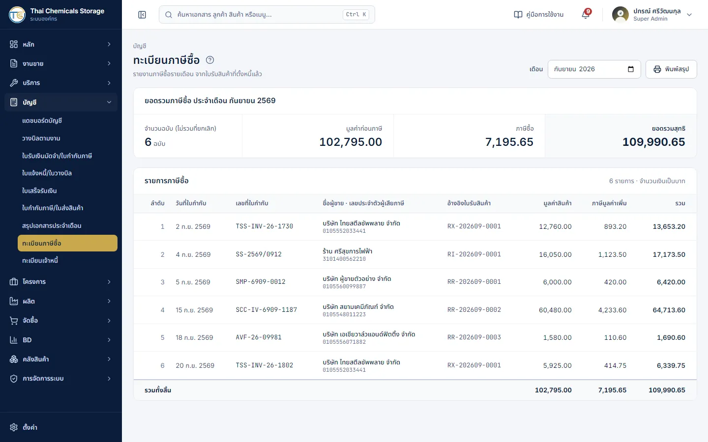
14.2ทะเบียนเจ้าหนี้
เมนู บัญชี › ทะเบียนเจ้าหนี้ แสดงหนี้ค้างจ่ายต่อผู้ขาย ซึ่งเกิดจากการรับของเช่นกัน
- เลือกเดือนที่มุมขวาบน (ตามวันที่บนใบกำกับภาษี) ด้านบนสรุปจำนวนรายการ ยอดค้างจ่าย และยอดจ่ายแล้วของเดือน
- บนจอเป็นตารางเดียว รายการเจ้าหนี้ตามผู้ขาย มีแถวหัวกลุ่มของแต่ละผู้ขายบอกยอดค้างจ่ายของผู้ขายรายนั้น ใต้แถวหัวกลุ่มคือหนี้ของผู้ขายรายนั้น แต่ละแถวมี วันที่ใบกำกับ · เลขที่ใบกำกับ · อ้างอิงใบรับสินค้า · รหัสงาน · ยอดเงิน · สถานะ (ค้างจ่าย / จ่ายแล้ว)
- กด พิมพ์สรุป เพื่อพิมพ์ทะเบียนของเดือนนั้น กระดาษที่ได้เป็นแบบฟอร์มพิมพ์มาตรฐานของทะเบียนเจ้าหนี้: หัว "ทะเบียนเจ้าหนี้ ประจำเดือน" ยอดสรุป แล้วแยกตารางละหนึ่งผู้ขาย พร้อมยอดค้างจ่ายของแต่ละราย ไม่ได้พิมพ์หน้าตาบนจอ
- บัญชีแก้ได้อย่างเดียวคือสถานะการจ่าย — กด บันทึกจ่ายแล้ว ท้ายแถว ใส่เลขที่เช็คหรือเลขอ้างอิงการจ่าย แล้วกด บันทึกจ่ายแล้ว ในหน้าต่าง รายการจะเปลี่ยนเป็นจ่ายแล้วและไม่นับในยอดค้างจ่าย
- บันทึกผิดแถว กด ยกเลิกการจ่าย รายการกลับเป็นค้างจ่ายและเลขอ้างอิงเดิมถูกล้าง
- การบันทึกและยกเลิกการจ่ายต้องมีสิทธิ์จัดการเจ้าหนี้
- ยอดผิดแก้ที่นี่ไม่ได้ — ให้กลับไปยกเลิกรอบรับของในใบรับสินค้าใบนั้น (บทที่ 23) ระบบจะถอนทั้งสต๊อกและหนี้กลับพร้อมกัน แล้วบันทึกรับใหม่ให้ถูก
- ใบรับวางบิลของสโตร์อ่านยอด "จ่ายแล้ว / เงินคงค้าง" จากทะเบียนนี้ บันทึกจ่ายที่นี่แล้วใบรับวางบิลจะเปลี่ยนตามเอง (ดู ใบรับวางบิลกับทะเบียนเจ้าหนี้)
RR ซื้อเชื่อ-วัตถุดิบ · RX โรงงาน · RI โครงการ หนี้ชนิดอื่นบนกระดาษของบัญชี เช่น ค่าผู้รับเหมา ค่าขนส่ง ค่าใช้จ่ายทั่วไป ยังไม่มีเอกสารต้นทางในระบบ จึงยังไม่มีในทะเบียนนี้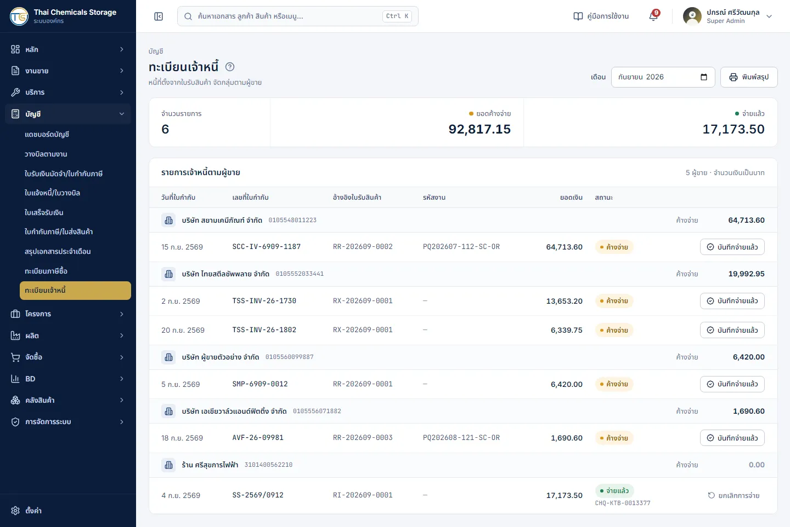
14.3ใบรับวางบิล (BR) คืออะไร
เมื่อผู้ขายนำบิลมาวาง สโตร์ออกใบรับวางบิลให้ผู้ขายเซ็นรับ ใบนี้รวบรวมใบรับสินค้าที่ยังไม่จ่ายของผู้ขายรายเดียว พร้อมวันครบกำหนดและวันนัดจ่ายชำระ อยู่ที่เมนู คลังสินค้า › ใบรับวางบิล ถัดจากใบรับสินค้า
- ผู้ที่ใช้หน้าใบรับสินค้าได้ใช้หน้านี้ได้ด้วย ไม่ต้องตั้งสิทธิ์เพิ่ม
- ไม่มีขั้นอนุมัติ แก้ได้ตลอด บันทึกอัตโนมัติระหว่างแก้ และกดปุ่ม บันทึก บนหัวใบเพื่อบันทึกทันทีได้
- เลขที่ออกให้อัตโนมัติ รูปแบบ
BR-YYYYMM-NNNN(ปี ค.ศ. + เดือน + ลำดับ 4 หลัก เริ่มนับใหม่ทุกเดือน) - ใบนี้ไม่เก็บยอดเงินของตัวเอง — แต่ละแถวคือหนี้หนึ่งก้อนในทะเบียนเจ้าหนี้ ยอดเงิน วันที่ และสถานะการจ่ายอ่านจากทะเบียนทุกครั้งที่เปิด
หน้ารายการมีแท็บ ทั้งหมด ค้างจ่าย จ่ายครบแล้ว ช่องค้นหาจากเลขที่ใบหรือชื่อผู้ขาย และตัวกรองช่วงวันที่ (วิธีใช้ดู หน้ารายการเอกสาร) แต่ละแถวแสดงเลขที่ ผู้ขาย วันที่รับวางบิล จำนวนใบ จำนวนเงิน เงินคงค้าง และวันที่จ่ายชำระ กดที่แถวเพื่อเปิดใบ
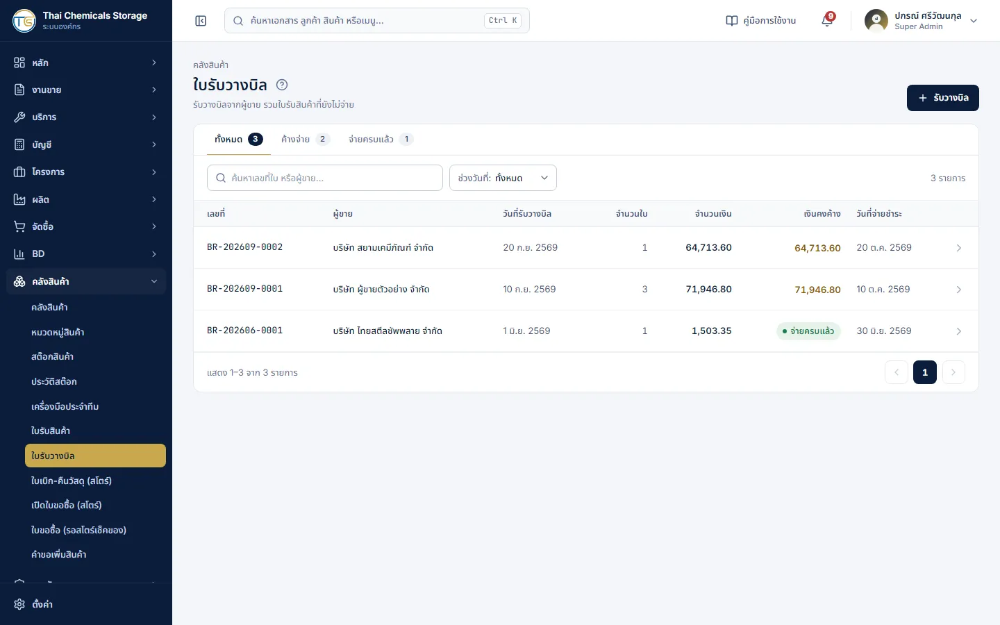
14.4รับวางบิล — สร้างใบใหม่
- กดรับวางบิล — ปุ่ม รับวางบิล มุมขวาบนของหน้ารายการ
- เลือกผู้ขายที่มาวางบิล — หน้าต่างแสดงเฉพาะผู้ขายที่มีใบรับสินค้ายังไม่จ่ายและยังไม่ได้วางบิล พร้อมจำนวนใบและยอดเงิน ค้นหาชื่อผู้ขายได้ เลือกแล้วกด รับวางบิล
- ตรวจใบรับสินค้าในใบ — ระบบใส่ใบรับสินค้าที่ยังไม่จ่ายและยังไม่ได้วางบิลของผู้ขายรายนั้นให้ครบทุกใบ เอาใบที่ผู้ขายไม่ได้นำบิลมาออก หรือเพิ่มใบที่ต้องการ (ดู หัวข้อถัดไป)
- กรอกข้อมูลใบรับวางบิล — วันที่รับวางบิล (ตั้งต้นเป็นวันนี้) · เครดิต (วัน ตั้งต้นจากใบสั่งซื้อของใบรับสินค้าใบแรก) · วันที่จ่ายชำระ ที่นัดกับผู้ขาย · หมายเหตุ
- พิมพ์ให้ผู้ขายเซ็นรับ — ปุ่มหลัก พิมพ์ มุมขวาบน
- การ์ดผู้จำหน่ายด้านบน (ชื่อ รหัส เลขผู้เสียภาษี ที่อยู่) ดึงมาจากใบรับสินค้า แก้ในหน้านี้ไม่ได้
- ฉบับพิมพ์มีตารางใบรับสินค้า ยอดเงินรวมที่ต้องจ่าย (= เงินคงค้าง) ชื่อผู้รับวางบิล วันที่จ่ายชำระ และช่องภาษีหัก ณ ที่จ่ายที่เว้นไว้ให้เขียนด้วยมือ
- การ์ดสีกรมท่าทางขวาแสดงเงินคงค้าง พร้อมจำนวนเงิน จ่ายแล้ว และจำนวนใบรับสินค้าในใบ
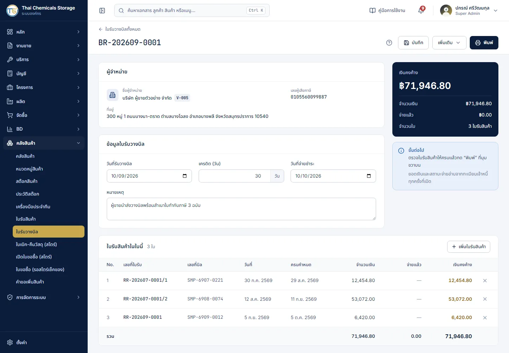
14.5เพิ่มหรือเอาใบรับสินค้าออก และการลบใบ
การ์ด ใบรับสินค้าในใบนี้ แสดงทุกแถวในใบ: เลขที่ใบรับ · เลขที่บิลของผู้ขาย · วันที่ · ครบกำหนด · จำนวนเงิน · จ่ายแล้ว · เงินคงค้าง พร้อมแถวรวมด้านล่าง
- เพิ่ม — กด เพิ่มใบรับสินค้า หน้าต่างแสดงใบรับสินค้าค้างจ่ายของผู้ขายรายเดียวกันที่ยังไม่ได้วางบิล ติ๊กได้หลายรายการ แล้วกด เพิ่ม N รายการ
- เอาออก — ปุ่มท้ายแถว (เอาออกจากใบ) ใบรับสินค้านั้นกลับไปรอวางบิลครั้งต่อไป
- ใบรับสินค้าที่รับของหลายรอบ แต่ละรอบคือบิลหนึ่งใบของผู้ขาย จึงแสดงเป็นคนละแถว เลขที่ใบรับต่อท้ายด้วย
/รอบ - ครบกำหนด = วันที่บนใบกำกับภาษี + เครดิต (ใช้ครบกำหนดที่สโตร์กรอกไว้ตอนรับของก่อน ถ้าไม่มีใช้เครดิตของใบสั่งซื้อ ถ้าไม่มีใบสั่งซื้อใช้เครดิตของหัวใบนี้)
กติกาที่ระบบคุมไว้
- ทุกแถวต้องเป็นของผู้ขายรายเดียวกับหัวใบ
- หนี้หนึ่งก้อนอยู่ได้ในใบรับวางบิลใบเดียว ใบรับสินค้าที่อยู่ในใบอื่นแล้วจะไม่ขึ้นให้เลือก
- รอบการรับของที่อยู่ในใบรับวางบิลยกเลิกรอบรับไม่ได้ ต้องเอาออกจากใบรับวางบิลก่อน แล้วค่อยไปยกเลิกรอบรับในใบรับสินค้า
ลบใบรับวางบิล
เพิ่มเติม › ลบใบรับวางบิล — ใช้เมื่อต้องการทำใบใหม่ ใบรับสินค้าทุกใบในใบนี้กลับไปรอวางบิลอีกครั้ง ทะเบียนเจ้าหนี้ไม่เปลี่ยน หนี้ยังอยู่ครบ
14.6ใบรับวางบิลกับทะเบียนเจ้าหนี้
ใบรับวางบิลอ่านจากทะเบียนเจ้าหนี้ ไม่ได้ส่งอะไรกลับไปเปลี่ยนทะเบียน — การสร้าง แก้ หรือลบใบรับวางบิลไม่ทำให้หนี้เพิ่ม ลด หรือเปลี่ยนสถานะ
- สโตร์รับของ — การรับของแต่ละรอบตั้งหนี้หนึ่งแถวในทะเบียนเจ้าหนี้ สถานะค้างจ่าย
- ผู้ขายมาวางบิล — สโตร์ออกใบรับวางบิล รวมหนี้ค้างจ่ายของผู้ขายรายนั้นไว้ในใบเดียว แล้วพิมพ์ให้ผู้ขายเซ็น
- บัญชีจ่ายเงิน — บัญชีกด บันทึกจ่ายแล้ว ที่แถวนั้นในทะเบียนเจ้าหนี้
- ใบรับวางบิลอัปเดตเอง — เปิดใบรับวางบิลครั้งถัดไป คอลัมน์ "จ่ายแล้ว / เงินคงค้าง" และการ์ด เงินคงค้าง ทางขวาจะเปลี่ยนตามทะเบียน เมื่อทุกแถวจ่ายแล้ว ใบจะย้ายไปอยู่แท็บ จ่ายครบแล้ว
โครงการ · บทที่ 15
โครงการ
โครงการใช้แบ่งแต่ละรายการของงานที่ขายไปแล้วว่าจะได้ของมาทางไหน — เบิกจากสโตร์ สั่งผลิตภายใน หรือขอซื้อจากภายนอก ใช้โดยฝ่ายโครงการ
หน้ารายการโครงการ (ลิงก์ โครงการทั้งหมด มุมซ้ายบนของหน้าโครงการ) มีแท็บ ทั้งหมด วางแผน กำลังดำเนินการ เสร็จสิ้น ช่องค้นหาจากรหัสงานหรือลูกค้า และตัวเลือกช่วงวันที่ ใช้แบบเดียวกับหน้ารายการอื่นทั้งระบบ (ดูบทที่ 2) กดที่แถวเพื่อเปิดโครงการ
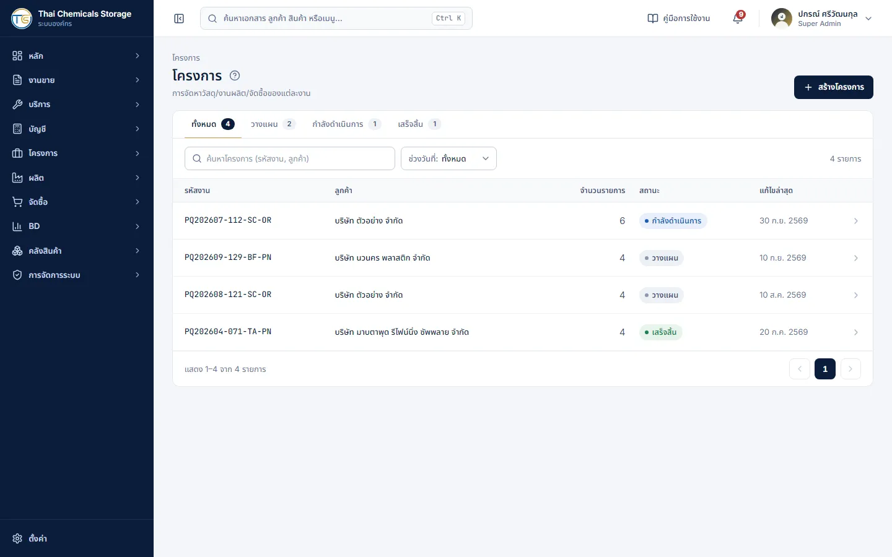
15.1การสร้างโครงการ
- เริ่มจาก Scope of Work — เปิด Scope of Work ที่ อนุมัติแล้ว (Final) แล้วกด สร้างโครงการ ในการ์ด "เอกสารที่เกี่ยวข้อง" (ถ้างานนี้มีโครงการอยู่แล้ว ปุ่มจะพาไปเปิดโครงการเดิม)
- หรือเริ่มจากหน้ารายการโครงการ — กด สร้างโครงการ มุมขวาบน ในหน้าต่าง "เลือกงานที่จะสร้างโครงการ" กดเลือกแถวของงาน (ค้นจากเลขที่งาน ลูกค้า หรือเลขที่ใบเสนอราคาได้) แล้วกด สร้างโครงการ ท้ายหน้าต่าง หรือดับเบิลคลิกที่แถวเพื่อเลือกและสร้างในครั้งเดียว
- ระบบเปิดหน้าโครงการให้ทันที — ทุกรายการของ Scope of Work (ยกเว้นบรรทัดหัวข้อ) ถูกคัดลอกมาเป็นรายการที่ต้องจัดหา ตั้งต้นเป็น ยังไม่กำหนด และโครงการเริ่มที่สถานะ วางแผน
บนหน้าโครงการ การ์ด ข้อมูลโครงการ บอกลูกค้าและ Scope of Work ต้นทาง (กดเลขที่เพื่อเปิดดูได้) พร้อมตัวเลขแบ่งตามสาขาการจัดหา: ยังไม่กำหนด · เบิกจากสโตร์ · สั่งผลิตภายใน · ขอซื้อภายนอก ส่วนการ์ดด้านขวาบอกความคืบหน้า จัดหาแล้ว x / y รายการ
15.2การเลือกวิธีจัดหาของแต่ละรายการ
ตาราง รายการที่ต้องจัดหา แสดงทุกรายการของงาน แถวที่ยัง ยังไม่กำหนด มีปุ่ม 3 ปุ่มในคอลัมน์ "การดำเนินการ" กดปุ่มไหน ระบบสร้างเอกสารใบนั้นให้ทันทีและเปิดหน้าแก้ไขให้เลย สาขาการจัดหาของรายการถูกตั้งตามเอกสารที่สร้าง ไม่มีขั้น "เลือกวิธีก่อน แล้วค่อยสร้าง" แยกต่างหาก
| ปุ่ม | สาขาการจัดหา | ได้เอกสาร | ใช้เมื่อ |
|---|---|---|---|
| สร้างใบเบิกวัสดุ | เบิกจากสโตร์ | ใบเบิกและใบคืนวัสดุ | ของมีอยู่ในสโตร์แล้ว เบิกมาใช้ |
| สร้างใบสั่งงาน | สั่งผลิตภายใน | ใบสั่งงาน | ต้องผลิตหรือประกอบเองภายใน |
| สร้างใบขอซื้อ | ขอซื้อภายนอก | ใบขอซื้อ | ต้องซื้อจากผู้ขายภายนอก |
ปุ่มในหน้าโครงการสร้างทีละรายการ ถ้าต้องการรวมหลายรายการไว้ในเอกสารใบเดียว ให้สร้างจากหน้ารายการของเอกสารนั้นแทน (ดูบทที่ 16) แถวที่มีเอกสารแล้วจะแสดงชนิดเอกสารและเลขที่ กดเลขที่เพื่อเปิดเอกสารได้
สถานะของแต่ละรายการเดินเอง:
รายการจะเป็น จัดหาแล้ว เมื่อเอกสารของมันได้รับอนุมัติ (Final)
- ถ้าเลือกผิด ให้เข้าไปลบเอกสารใบนั้นจากหน้าของมันเอง รายการจะกลับเป็น "ยังไม่กำหนด" แล้วเลือกใหม่ได้
- สถานะโครงการ (วางแผน / กำลังดำเนินการ / เสร็จสิ้น) ระบบไม่เปลี่ยนให้เอง แถบขั้นตอนบนหน้าโครงการบอกว่าอยู่ขั้นไหน และปุ่มหลักมุมขวาบนเลื่อนไปขั้นถัดไปทีละขั้น: โครงการที่วางแผนอยู่จะเป็นปุ่ม เปลี่ยนสถานะเป็นกำลังดำเนินการ ระหว่างดำเนินการเป็น เปลี่ยนสถานะเป็นเสร็จสิ้น ส่วนโครงการที่เสร็จสิ้นแล้วไม่มีปุ่มหลัก การเปลี่ยนไปสถานะอื่น เช่น เปลี่ยนสถานะกลับเป็นวางแผน หรือข้ามไปเสร็จสิ้นเลย อยู่ในเมนู เพิ่มเติม
- เมนู เพิ่มเติม ยังมี อัปเดตข้อมูลจาก Scope of Work และ ลบโครงการ — ลบโครงการแล้วเอกสารย่อยที่สร้างไว้ (ใบเบิก ใบสั่งงาน ใบขอซื้อ) ไม่ถูกลบไปด้วย
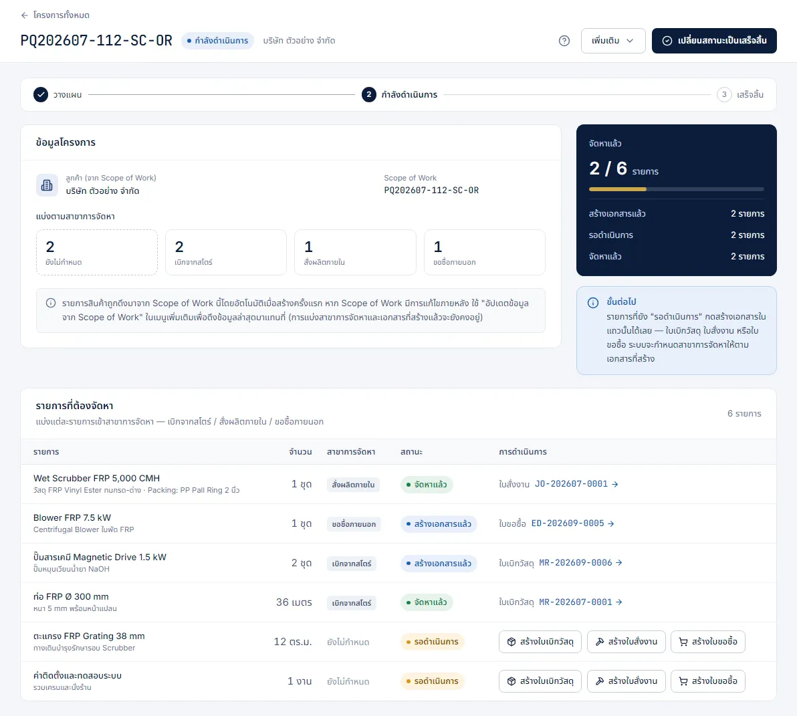
โครงการ · บทที่ 16
ใบเบิก / ใบสั่งงาน / ใบขอซื้อ
เอกสารลูก 3 ประเภทที่ใช้จัดหาของให้งาน — ใบเบิกและใบคืนวัสดุ ใบสั่งงาน และใบขอซื้อ ใช้โดยฝ่ายโครงการและฝ่ายผลิต แต่ละประเภทมีเมนูของตัวเองในกลุ่ม โครงการ (ใบเบิกและใบขอซื้อมีในกลุ่ม ผลิต ด้วย)
| เอกสาร | ฟอร์ม | เลขที่ | จุดต่าง |
|---|---|---|---|
| ใบเบิกและใบคืนวัสดุ | FM-ST-04 | MR-202609-0001 | เลือกสินค้าจากคลังเท่านั้น พิมพ์ชื่อเองไม่ได้ — ของที่ยังไม่มีรหัส ขอรหัสได้จากหน้าต่างเลือกสินค้า · สโตร์เป็นคนจ่ายของและรับคืน |
| ใบสั่งงาน | FM-PJ-01 | JO-202609-0001 | พิมพ์รายการเองได้อิสระ มีรายการตรวจเช็คขอบเขตงานในตัว และแนบไฟล์ได้ |
| ใบขอซื้อ | FMPU05 | ED-202609-0001 | เลือกจากคลังก็ได้ พิมพ์เองก็ได้ มีวันที่รับของ ผู้ติดต่อ และสถานที่ส่งของ · วันต้องการ รหัสแผนก และรหัสบัญชีต่อบรรทัด (จากทะเบียนรหัส) · ใส่บรรทัดย่อยและแนบไฟล์ได้ |
- เลขที่ทุกใบรันเป็น รหัส-ปีเดือน ค.ศ.-ลำดับ และเริ่มนับใหม่ทุกเดือน
- ตัวอักษรหน้าเลขใบขอซื้อคือฝ่ายที่ขอซื้อ และแต่ละรหัสนับเลขแยกกัน:
EDฝ่ายโครงการ ·FDฝ่ายผลิต ·PRฝ่าย Support ·SDงานเหล็ก — ใบที่เปิดจากโครงการได้ ED ใบที่เปิดจากใบสั่งผลิตได้ FD ให้เอง ใบที่เปิดจากหน้าอื่นจะให้เลือกรหัสก่อน และเปลี่ยนภายหลังไม่ได้ - ใบเบิกของฝ่ายผลิตได้เลขบนฟอร์มตามใบสั่งผลิต เช่น
SC-202609-0012-MR1
สร้างเอกสารจากหน้ารายการ
- กดปุ่มสร้าง — มุมขวาบนของหน้ารายการ: สร้างใบเบิก-คืนวัสดุ สร้างใบสั่งงาน หรือ สร้างใบขอซื้อ
- เลือกโครงการ — หน้าต่างขั้นที่ 1 แสดงโครงการทั้งหมด ค้นจากเลขที่งานหรือลูกค้าได้ กดเลือกแถวของโครงการ แล้วกด ถัดไป: เลือกรายการ (หรือดับเบิลคลิกที่แถว) · ในกลุ่มเมนูผลิต จะให้เลือกใบสั่งผลิตแทน ดูบทที่ 17
- ติ๊กรายการ — ขั้นที่ 2 แสดงเฉพาะรายการที่ยังไม่ได้ออกเอกสาร ติ๊กได้หลายรายการ ถ้ารายการนั้นถูกกำหนดสาขาการจัดหาไว้แล้ว จะเห็นในคอลัมน์ "กำหนดไว้เป็น" · กด กลับไปเลือกโครงการ ถ้าเลือกผิด (ที่ติ๊กไว้จะถูกล้าง)
- สร้าง — กด สร้างเอกสาร ได้เอกสารใบเดียวที่ครอบคลุมทุกรายการที่ติ๊ก แล้วเปิดหน้าฉบับร่างให้ทันที · ถ้าโครงการออกเอกสารครบทุกรายการแล้วแต่ยังต้องการใบใหม่ กด เปิดใบโดยไม่ผูกรายการ ใบยังผูกกับโครงการและรหัสงาน แค่ไม่ผูกกับรายการใด
ปุ่มสร้างในหน้าโครงการ (บทที่ 15) สร้างทีละรายการ · แท็บ ทั้งหมด Draft รออนุมัติ Final ช่องค้นหาเลขที่หรือรหัสงาน และตัวเลือกช่วงวันที่ ใช้แบบเดียวกับหน้ารายการอื่นทั้งระบบ (ดูบทที่ 2) · ในหน้ารายการใบเบิก ป้าย ค้างเบิก ข้างสถานะแปลว่าสโตร์ยังจ่ายของไม่ครบ · ในหน้ารายการใบขอซื้อ คอลัมน์ "ขั้นตอนหลังอนุมัติ" บอกว่าใบอยู่ที่สโตร์หรือจัดซื้อ (ดูบทที่ 18)
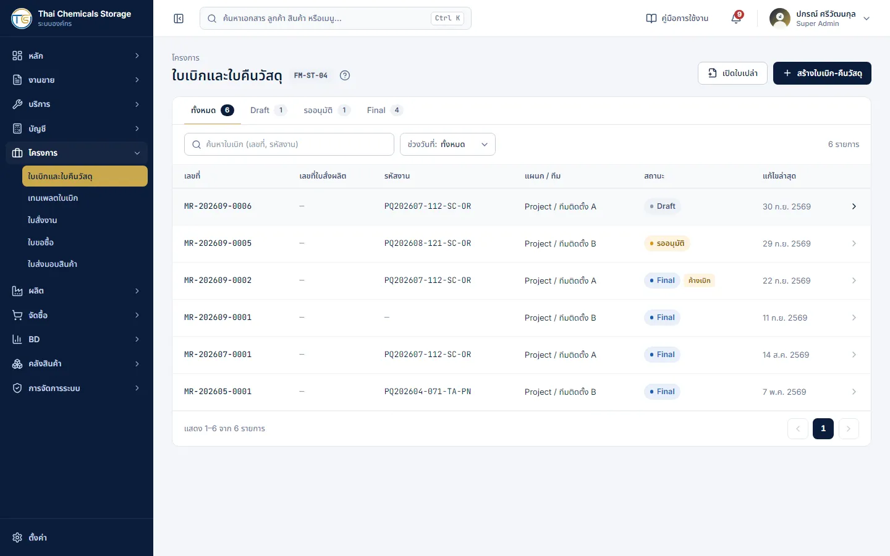
16.1เปิดใบเบิกเปล่า ไม่ต้องอิงงานไหน
ใบเบิกวัสดุเปิดเป็นใบเปล่าได้ ไม่ต้องมีโครงการหรือใบสั่งผลิตต้นทาง — กด เปิดใบเปล่า ที่หน้ารายการใบเบิก ระบบเปิดหน้าฉบับร่างให้ทันที ใช้กับของใช้ทั่วไปที่ไม่ได้ผูกกับงานไหนโดยเฉพาะ
- ใบเปล่าไม่มีรหัสงาน ในหน้ารายการคอลัมน์รหัสงานจะเป็น "—"
- ต่างจาก เปิดใบโดยไม่ผูกรายการ ในหน้าต่างสร้าง ซึ่งยังผูกกับโครงการและรหัสงานอยู่
- ขั้นตอนหลังจากนี้เหมือนใบเบิกทั่วไปทุกอย่าง — เพิ่มรายการ ส่งขออนุมัติ แล้วสโตร์จ่ายของ
16.2เทมเพลตใบเบิก และการเพิ่มรายการวัสดุ
ในการ์ด รายการวัสดุ ของใบเบิกฉบับร่างมีปุ่มเพิ่มรายการ 2 ปุ่ม (ส่งขออนุมัติแล้วปุ่มจะหายไป):
- เพิ่มรายการจากแคตตาล็อก — เปิดหน้าต่างเลือกสินค้าจากคลัง กรองตามหมวดหมู่หรือค้นรหัส/ชื่อได้ เห็นยอดคงเหลือทุกตัว ติ๊กได้หลายรายการ แล้วกด เพิ่ม N รายการ ทีเดียว ระบบต่อท้ายรายการให้ · ของที่ยังไม่มีรหัส ให้พิมพ์ชื่อสินค้าในช่องค้นหาเพื่อขอรหัสใหม่ (ดูบทที่ 26)
- ใช้เทมเพลต — เลือกเทมเพลตหนึ่งชุด แล้วกด ใช้เทมเพลต รายการทั้งชุดพร้อมจำนวนตั้งต้นถูกเติมต่อท้ายให้ แก้จำนวนต่อได้ตามปกติ
แต่ละบรรทัดมีช่อง เบิกของ ให้กรอกจำนวนที่ขอ และเห็นยอด คงเหลือในสต๊อก ถ้าของไม่พอจะขึ้นป้าย "ของไม่พอ ขาด n" ข้างชื่อสินค้า · สินค้าชุด (ป้าย ชุด) แสดงชิ้นส่วนที่จะถูกตัดใต้ชื่อ
หน้าเทมเพลตใบเบิก
เมนู โครงการ › เทมเพลตใบเบิก (มีในกลุ่มผลิตด้วย เป็นชุดเดียวกัน) ใช้เก็บชุดรายการวัสดุที่เบิกซ้ำ ๆ ไว้เป็นแม่แบบ
- สร้าง — กด สร้างเทมเพลต แผงแก้ไขเปิดจากด้านขวา
- ตั้งชื่อและเพิ่มรายการ — ใส่ชื่อเทมเพลต (คำอธิบายไม่บังคับ) กด เพิ่มรายการ แล้วติ๊กสินค้าได้หลายรายการในหน้าต่างเลือกสินค้า จากนั้นใส่ จำนวนตั้งต้น ของแต่ละบรรทัด
- บันทึก — กด บันทึก ท้ายแผง
ค้นเทมเพลตได้จากชื่อเทมเพลต ชื่อสินค้า หรือรหัสสินค้า กดที่แถวเพื่อเปิดแผงแก้ไข · ลบเทมเพลตได้จากเมนู เพิ่มเติม ในแผง — ใบเบิกที่เคยใช้เทมเพลตนั้นไม่ได้รับผลกระทบ
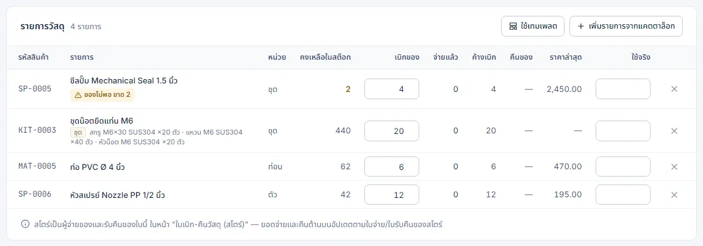
16.3เฉพาะใบสั่งงาน
- ข้อมูลใบสั่งงาน — ชื่อลูกค้า · จากหน่วยงาน ระบบเติมให้จากแผนกของคนสร้าง · ถึงหน่วยงาน เลือกจากรายชื่อแผนกจริง (อีกเหตุผลที่ต้องตั้งแผนกพนักงานให้ถูก) · วันเริ่มดำเนินการ และวันดำเนินการแล้วเสร็จ · มีการ์ด รายละเอียดอื่นๆ (Out of Scope) สำหรับสิ่งที่ไม่รวมในงาน
- รายการดำเนินงาน — พิมพ์รายละเอียด จำนวน หน่วย และหมายเหตุเอง · เพิ่มรายละเอียดย่อย ใส่ข้อความย่อหน้าใต้รายการ · เพิ่มบรรทัดต่อ ใส่บรรทัดต่อของรายการด้านบนที่ไม่กินเลขลำดับ แต่มีจำนวน/หน่วยของตัวเอง
- ขอบเขตงาน (Scope of work) — รายการตรวจเช็ค 23 ข้อเรียงตามฟอร์มกระดาษ (DESIGN AND CALCULATION SHEET … OTHER) บางข้อมีช่องกรอกค่า เช่น HYDRO - TEST เป็น BAR · MOBILE CRANE เป็น TON · ชั้นสีเป็น MICRON ข้อที่ติ๊กแล้วพิมพ์รายละเอียดย่อยเพิ่มได้
- เอาติ๊กออก = รายละเอียดย่อยของข้อนั้นถูกลบ ตั้งใจไว้เช่นนั้น เพื่อไม่ให้รายละเอียดของงานที่ไม่ได้ทำหลุดไปอยู่บนใบพิมพ์
- ไฟล์แนบ — การ์ดในแถบขวา แนบแบบ รูป หรือ PO ของลูกค้า ได้ สูงสุด 5 ไฟล์ต่อใบ · รูปไฟล์ละไม่เกิน 20 MB ส่วน PDF / Word / Excel / PowerPoint / TXT / CSV ไฟล์ละไม่เกิน 10 MB · รูปถูกย่อและบีบอัดให้อัตโนมัติ · แนบเพิ่มหรือลบได้แม้ใบอนุมัติแล้ว (ใบขอซื้อใช้กติกาเดียวกัน)
- ช่องลงนาม — ผู้ร้องขอ · ผู้อนุมัติ · ผู้รับเอกสาร
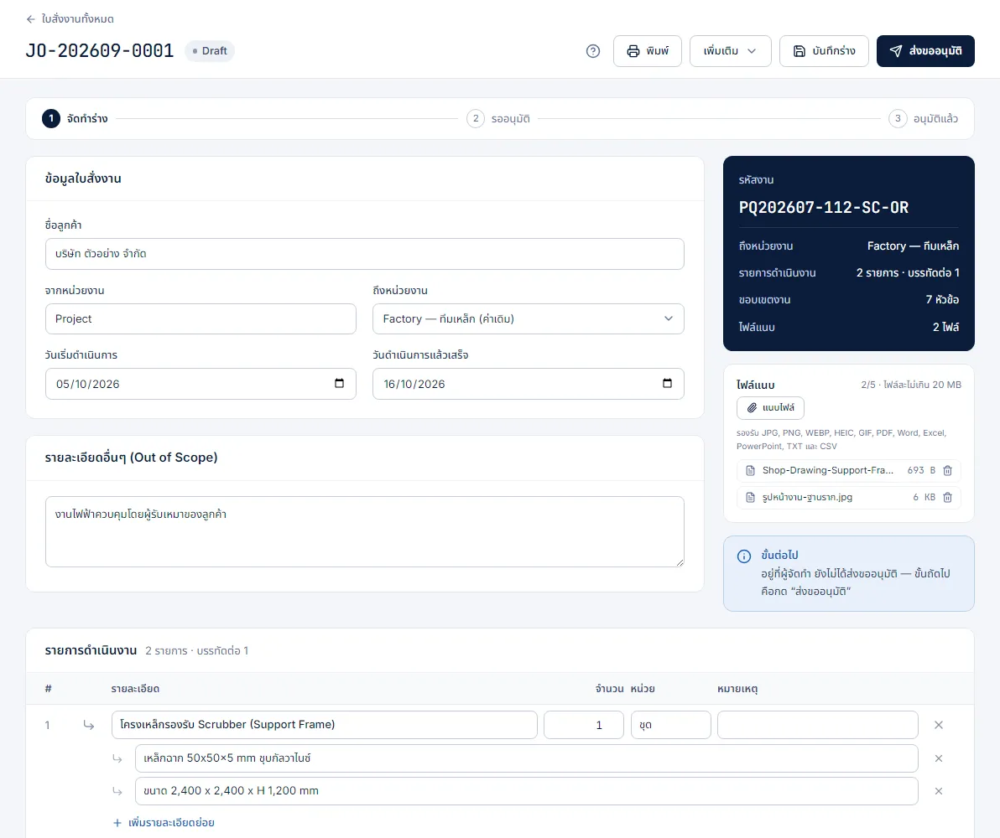
16.4การจ่ายของ การเบิกหลายรอบ และการคืนของ
ใบเบิกของฝ่ายโครงการหรือฝ่ายผลิตคือใบขอ — คนเบิกกรอกจำนวนในช่อง เบิกของ แล้วส่งขออนุมัติ ตัวใบเบิกไม่มีปุ่มจ่ายของหรือคืนของ และช่อง "คืนของ" กรอกเองไม่ได้ การจ่ายของและการรับคืนเป็นงานของสโตร์ ซึ่งทำบนใบของสโตร์เองในหน้า คลังสินค้า › ใบเบิก-คืนวัสดุ (สโตร์)
สิ่งที่ฝั่งแผนกทำและเห็นบนใบเบิก:
- ตัดของให้ — การ์ดนี้บอกว่าของก้อนนี้ลงให้ แผนก / ทีม / ประเภทงาน ไหน ตั้งไว้ตอนเขียนใบ ค่านี้ถูกคัดลอกไปที่ใบจ่ายของสโตร์
- ยอดตามจริง — คอลัมน์ จ่ายแล้ว และ ค้างเบิก อัปเดตเองทุกครั้งที่สโตร์บันทึกรอบการจ่าย ส่วน คืนของ เป็นตัวเลขอ่านอย่างเดียวที่ขึ้นเมื่อสโตร์รับของคืนเข้าคลัง · การ์ดสรุปด้านขวาบอกจำนวนรายการที่จ่ายแล้ว ค้างเบิก และของไม่พอ
- ค้างเบิก — ในหน้ารายการ ใบที่สโตร์ยังจ่ายไม่ครบจะมีป้าย "ค้างเบิก" ข้างสถานะ
- จ่ายหลายรอบได้ — สโตร์จ่ายบางส่วนก่อนแล้วจ่ายที่เหลือรอบหน้าได้ไม่จำกัดรอบ ยอดบนใบเบิกนับรวมทุกรอบให้เอง ถ้าจ่ายผิด สโตร์ยกเลิกรอบล่าสุดที่ใบจ่ายของสโตร์
ฝั่งสโตร์ (สรุป)
- ทำใบจ่าย — ใบเบิกที่อนุมัติแล้วไปขึ้นในแท็บ ใบเบิกจากแผนก ของหน้าใบเบิก-คืนวัสดุ (สโตร์) สโตร์กด ทำใบจ่าย เลือกรหัสจ่าย (เช่น PP งานโครงการ · PD งานผลิต) ได้ใบจ่ายเลขคู่กับใบเบิก เช่น
MR-202609-0042คู่กับPP-202609-0042 - บันทึกการจ่ายทีละรอบ — บนใบจ่าย กรอกจำนวนจ่ายรอบนี้แล้วกดปุ่มหลักมุมขวาบน บันทึกการจ่ายรอบที่ n สต๊อกถูกตัดตอนนี้ (ดูบทที่ 24 ใบจ่ายของสโตร์)
- รับคืนผ่านใบรับคืน — ของที่ใช้ไม่หมดให้นำมาคืนสโตร์ สโตร์ทำ ใบรับคืน อ้างอิงใบเบิกของแผนก ใช้รหัสคู่กับรหัสจ่าย (จ่ายด้วย PP คืนด้วย JP · จ่ายด้วย PD คืนด้วย JD) เมื่ออนุมัติและกด บันทึกรับเข้าคลัง แล้ว ยอดคืนของจึงขึ้นในใบเบิก (ดูบทที่ 24 ใบรับคืน)
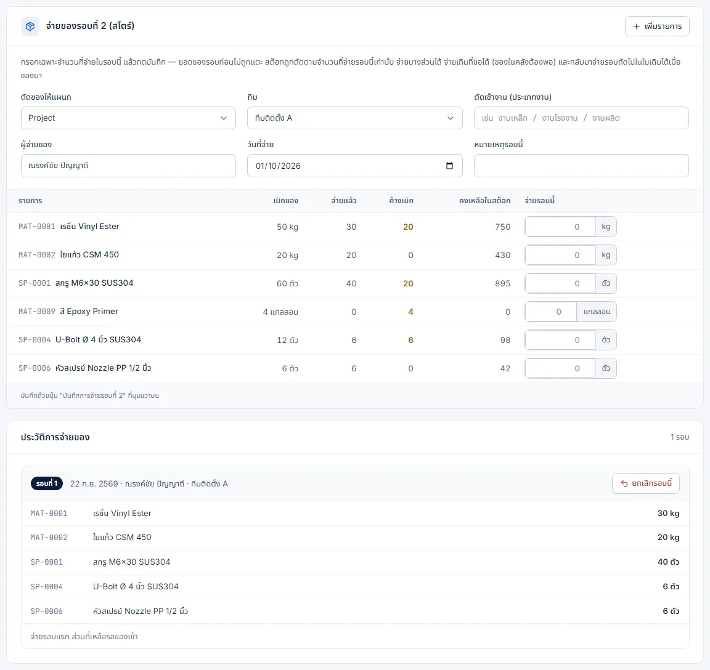
16.5ขั้นตอนอนุมัติ (เหมือนกันทั้ง 4 เอกสาร รวมใบสั่งผลิต)
หัวเอกสารมีปุ่ม พิมพ์ · เมนู เพิ่มเติม (แก้ไข (Rewrite) หลังอนุมัติ และลบ) · บันทึกร่าง ระหว่างเป็นฉบับร่าง (ใบสั่งผลิตใช้ชื่อ บันทึกฉบับร่าง) และปุ่มหลักสีกรมท่ามุมขวาบนซึ่งเป็นขั้นต่อไปเสมอ แถบขั้นตอน จัดทำร่าง › รออนุมัติ › อนุมัติแล้ว ใต้หัวเอกสาร และการ์ด "ขั้นต่อไป" บอกว่าใบอยู่ที่ใครและต้องทำอะไร ระหว่างเป็นฉบับร่างระบบบันทึกให้อัตโนมัติ และกด บันทึกร่าง เพื่อบันทึกทันทีได้ทุกเมื่อ (ดูบทที่ 3)
- คนเขียนกด ส่งขออนุมัติ เมื่อกรอกครบ ระหว่างรออนุมัติใบถูกล็อก แก้ไม่ได้
- คนส่งดึงกลับมาแก้เองได้ด้วย ถอนกลับมาแก้ ตราบใดที่ยังไม่มีใครอนุมัติ — ใบขอซื้อและใบสั่งผลิตอยู่ในเมนู เพิ่มเติม ส่วนใบเบิกและใบสั่งงานเป็นปุ่มบนหัวเอกสาร (ถ้าคนส่งเป็นผู้มีสิทธิ์อนุมัติด้วย จะอยู่ในเมนู เพิ่มเติม)
- ผู้มีสิทธิ์อนุมัติเห็นปุ่ม อนุมัติ และ ไม่อนุมัติ — ไม่อนุมัติต้องใส่เหตุผล เอกสารกลับเป็น Draft พร้อมแถบแจ้งเหตุผลบนหัวเอกสารให้คนแก้เห็น
- ส่งขออนุมัติใหม่อีกครั้ง เหตุผลเดิมจะถูกล้างทิ้ง ไม่ค้างอยู่บนใบที่แก้แล้ว
- กดอนุมัติแล้ว ระบบเติมชื่อผู้อนุมัติในช่องลงนามให้ · อนุมัติแล้ว (Final) แก้เนื้อหาไม่ได้อีก ถ้าต้องแก้ใช้ แก้ไข (Rewrite) (ดูหัวข้อถัดไป)
- อนุมัติแล้วระบบส่งต่อให้เอง — อนุมัติใบเบิกแล้ว ฝ่ายสโตร์ได้รับแจ้งเตือนให้จ่ายของ · อนุมัติใบขอซื้อแล้ว ฝ่ายสโตร์ได้รับแจ้งเตือนให้เช็คของก่อน ถ้ามีรายการที่ต้องซื้อ ฝ่ายจัดซื้อจึงได้รับแจ้งเตือนต่อ (ขั้นหลังอนุมัติของใบขอซื้อดูบทที่ 18) กดที่กระดิ่งแล้วเปิดเอกสารใบนั้นได้เลย
- ใบรับคืนของสโตร์มีอีกขั้นหลังอนุมัติ: จัดทำร่าง › รออนุมัติ › อนุมัติแล้ว › รับเข้าคลังแล้ว — สต๊อกเปลี่ยนตอนกด บันทึกรับเข้าคลัง ไม่ใช่ตอนอนุมัติ
16.6แก้ไข (Rewrite) — ออกฉบับแก้ไขของใบที่อนุมัติไปแล้ว
เอกสารที่เป็น Final แล้วยังออกฉบับแก้ไขได้ทุกใบ (ใบเบิก · ใบสั่งงาน · ใบขอซื้อ · ใบสั่งผลิต) กด เพิ่มเติม › แก้ไข (Rewrite) แล้วยืนยัน ระบบสร้างเอกสารใหม่ต่อท้ายเลขที่ด้วย -R1, -R2 โดยฉบับเดิมยังอยู่ครบไม่ถูกแตะต้อง
- ช่องลงนามทั้งหมดถูกล้าง และสถานะกลับเป็น Draft ให้เริ่มขออนุมัติใหม่
- ใส่ "หมายเหตุการแก้ไข" ได้ว่าฉบับนี้ต่างจากฉบับก่อนตรงไหน — ข้อความนี้ถูกพิมพ์ลงบนเอกสารด้วย (ต่างจากหมายเหตุของใบเสนอราคาที่เป็นข้อมูลภายใน ไม่เคยถูกพิมพ์)
- ใบเบิก — จำนวนที่จ่ายแล้ว/คืนแล้ว ไม่ถูกคัดลอกมา ฉบับใหม่เริ่มเหมือนยังไม่ได้เบิกอะไร
- ใบขอซื้อ — รายการถูกคัดลอกมาให้ แต่ผลการเช็คของของสโตร์และการอนุมัติของจัดซื้อไม่ถูกคัดลอก ฉบับใหม่ต้องผ่านสโตร์และจัดซื้อใหม่
- ไฟล์แนบไม่ถูกคัดลอกมา ต้องแนบใหม่ในฉบับแก้ไข
- รายการในโครงการที่ผูกกับเอกสารเดิม จะถูกย้ายมาชี้ฉบับแก้ไขให้อัตโนมัติ
16.7ลบเอกสาร
ลบได้จาก เพิ่มเติม › ลบ (เช่น ลบใบเบิกวัสดุ · ลบใบสั่งงาน · ลบใบขอซื้อ) บนหน้าเอกสาร หน้าต่างยืนยันจะแสดงเลขที่ รหัสงาน และจำนวนรายการให้ตรวจก่อน
- ลบได้เฉพาะใบของตัวเอง หรือผู้มีสิทธิ์อนุมัติเอกสารชนิดนั้น
- ลบแล้ว รายการในโครงการที่ผูกกับใบนั้นกลับเป็น "ยังไม่กำหนด" ให้เลือกวิธีจัดหาใหม่ได้
- ใบเบิกที่สโตร์จ่ายของไปแล้วและยังคืนไม่ครบ ลบไม่ได้ — ต้องรับคืนให้ครบก่อน
ผลิต · บทที่ 17
ใบสั่งผลิต (ฝ่ายผลิต)
ใบสั่งผลิต (FM-PD-02) คือใบที่ฝ่ายผลิตใช้สั่งผลิตสินค้าของแต่ละงาน สร้างตรงจาก Scope of Work แล้วใช้เป็นต้นทางของใบเบิกวัสดุและใบขอซื้อของฝ่ายผลิต
กลุ่มเมนู ผลิต ทำงานคล้ายกลุ่มโครงการ แต่เก็บเอกสารคนละชุดกัน — ใบเบิกวัสดุและใบขอซื้อของฝ่ายผลิตจะไม่ปนกับของฝ่ายโครงการ ถึงจะเป็นฟอร์มเดียวกันก็ตาม หน้ารายการใบสั่งผลิตมีแท็บ ทั้งหมด Draft รออนุมัติ Final ช่องค้นหาเลขที่ใบสั่งผลิต เลขที่งาน ลูกค้า หรือชื่อสินค้า และตัวเลือกช่วงวันที่ ใช้แบบเดียวกับหน้ารายการอื่นทั้งระบบ (ดูบทที่ 2)
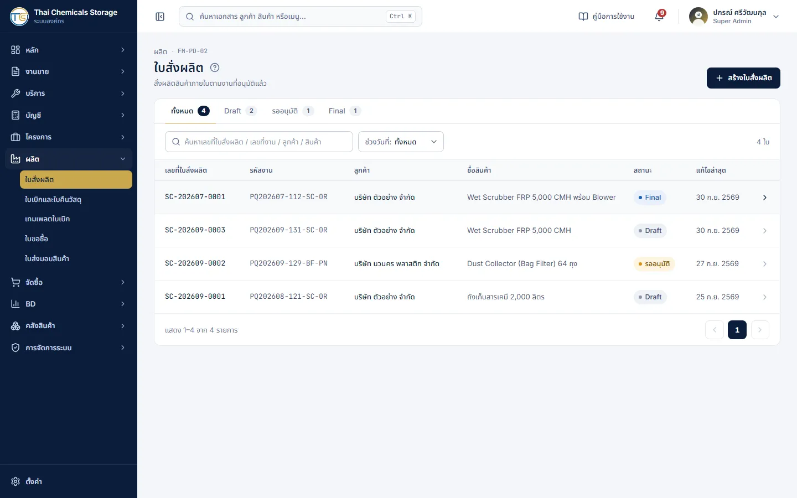
17.1ใบสั่งผลิต (FM-PD-02)
- สร้างจาก Scope of Work โดยตรง ไม่ต้องผ่านโครงการ — และไม่ต้องรอให้งานอนุมัติก่อน เปิดใบสั่งผลิตจากงานที่ยังเป็นร่างได้ เพื่อให้ฝ่ายผลิตเริ่มเตรียมงานได้ก่อน
- งานหนึ่งงานออกใบสั่งผลิตได้หลายใบ (มักเป็นใบละหนึ่งสินค้าที่ต้องผลิต)
- เลขที่รันให้อัตโนมัติรูปแบบ
SC-202609-0012(ปีเดือน ค.ศ. แล้วลำดับ เริ่มนับใหม่ทุกเดือน) - เลขที่ใบสั่งผลิตแก้เองได้ ขณะยังเป็นฉบับร่าง เช่นต้องพิมพ์ให้ตรงกับฟอร์มกระดาษ (เลขลำดับภายในของระบบไม่เปลี่ยนตาม) — ถ้าเลขซ้ำกับใบอื่น ระบบจะเตือนและไม่ให้บันทึกจนกว่าจะแก้
- ข้อมูลบนหัวใบ: เลขที่ใบสั่งผลิต · ชื่อพนักงานดูแล · ชื่อสินค้า · วันที่เริ่มผลิต · กำหนดเสร็จ การ์ดด้านขวาบอกงานต้นทาง (Scope of Work) และลูกค้า
- หัวใบฉบับร่างมีปุ่ม พิมพ์ · บันทึกฉบับร่าง (ระบบบันทึกอัตโนมัติอยู่แล้ว ปุ่มนี้ใช้บันทึกทันที) · เมนู เพิ่มเติม (อัปเดตข้อมูลจาก Scope of Work · แก้ไข (Rewrite) · ถอนกลับมาแก้ · ลบใบสั่งผลิต) และปุ่มหลัก ส่งขออนุมัติ มุมขวาบน
- ขั้นตอนอนุมัติ ถอนกลับมาแก้ ไม่อนุมัติ และแก้ไข (Rewrite) เหมือนเอกสารอื่นในกลุ่มนี้ทุกอย่าง (ดูบทที่ 16) — ผู้อนุมัติเห็นปุ่ม ไม่อนุมัติ และ อนุมัติ บนหัวใบที่รออนุมัติ เมื่อส่งขออนุมัติแล้วคอลัมน์ขวาจะมีการ์ด การอนุมัติ บอกผู้สั่งผลิตและผู้อนุมัติ
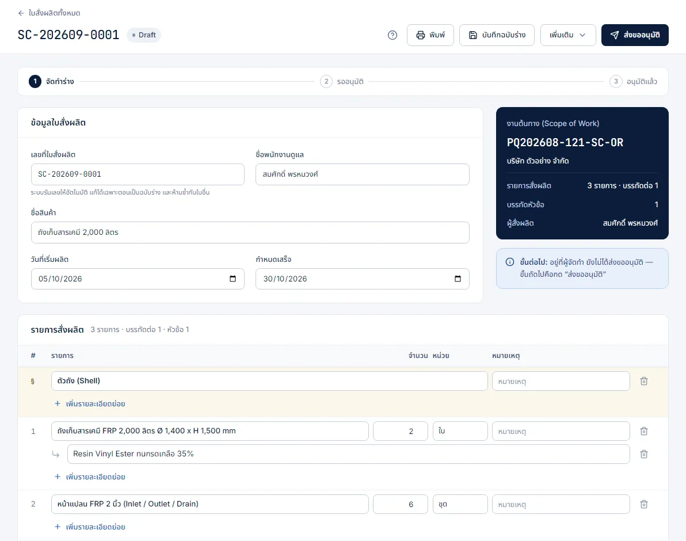
17.2เลือกเองได้ว่าใบนี้ผลิตรายการไหน
- เลือกงาน — กด สร้างใบสั่งผลิต หน้าต่าง "เลือกงานที่จะสร้างใบสั่งผลิต" ขั้นที่ 1 แสดง Scope of Work ทั้งหมด ค้นจากเลขที่งาน ลูกค้า หรือเลขที่ใบเสนอราคาได้ กดเลือกแถวของงาน แล้วกด ถัดไป: เลือกรายการ (หรือดับเบิลคลิกที่แถว)
- ติ๊กรายการสินค้า — ขั้นที่ 2 ติ๊กว่าใบนี้ครอบคลุมรายการไหนบ้าง (ติ๊กทั้งหมดได้จากช่องบนสุด) ถ้าเลือกงานผิดกด กลับไปเลือกงาน
- สร้าง — กด สร้างเอกสาร ระบบเปิดหน้าใบสั่งผลิตฉบับร่างพร้อมรายการที่เลือก
- ต้องติ๊กอย่างน้อย 1 รายการ ปุ่ม สร้างเอกสาร จึงจะกดได้ ถ้าต้องการทุกรายการให้ติ๊กช่องบนสุด
- อัปเดตข้อมูลจาก Scope of Work (ในเมนู เพิ่มเติม) ดึงรายการล่าสุดจากงานต้นทางมาแทนที่ทั้งตาราง โดยดึงเฉพาะรายการที่ใบนี้ครอบคลุมอยู่ (จับคู่จากชื่อรายการ) ไม่ดึงรายการที่ไม่ได้เลือกกลับเข้ามา · ใช้ได้เฉพาะฉบับร่าง
- งานที่ยังไม่มีรายการเลย ก็ยังเปิดใบเปล่าไว้กรอกเองได้ — ขั้นที่ 2 จะไม่มีอะไรให้ติ๊ก กด สร้างเอกสาร ได้เลย
17.3รายการในใบสั่งผลิต — 4 แบบ
- บรรทัดหัวข้อ (ตัวหนา เช่น "ตัวถัง (Shell)" หรือ "ชิ้นส่วน") — กด เพิ่มบรรทัดหัวข้อ ใส่หมายเหตุได้ แต่ไม่มีจำนวน/หน่วย และไม่ถูกนับเลข แทรกเพิ่มกี่อันเลขรายการข้างล่างก็ไม่เลื่อน
- รายการ — กด เพิ่มรายการ มีเลขกำกับ จำนวน หน่วย และหมายเหตุ
- บรรทัดต่อ — กด เพิ่มบรรทัดต่อ เป็นบรรทัดต่อของรายการด้านบน ไม่กินเลขลำดับ แต่มีจำนวน/หน่วยของตัวเอง เช่น รายการ "หน้าแปลน 50A 3 ตัว" ตามด้วย "หน้าแปลน 20A 2 ตัว"
- รายละเอียดย่อย — กด เพิ่มรายละเอียดย่อย ใต้รายการ เป็นข้อความย่อหน้าล้วน ๆ เช่น "หนา 7 mm." หรือ "สเต็ปที่ 1 …"
17.4ช่องลงนาม 5 ช่อง — เซ็นคนละเวลากัน
| ช่อง | ลงเมื่อไร | แก้ได้ตอนไหน |
|---|---|---|
| ผู้สั่งผลิต | ตอนเขียนใบ | เฉพาะสถานะ Draft |
| ผู้อนุมัติ | ตอนกดอนุมัติ | พิมพ์เองไม่ได้เลย ระบบเติมให้ตอนอนุมัติ |
| ผู้ส่งมอบงาน / ผู้ตรวจรับงาน / แผนกต้นทุน | หลังงานเสร็จ | ทุกสถานะ รวมถึงหลังอนุมัติแล้ว |
17.5เบิกของและขอซื้อจากใบสั่งผลิต
ในกลุ่มเมนู ผลิต ใบเบิกและใบคืนวัสดุ กับใบขอซื้อ สร้างจากใบสั่งผลิต แทนรายการในโครงการ:
- กดปุ่มสร้าง — ที่ ผลิต › ใบเบิกและใบคืนวัสดุ กด สร้างใบเบิก-คืนวัสดุ หรือที่ ผลิต › ใบขอซื้อ กด สร้างใบขอซื้อ
- เลือกใบสั่งผลิต — ค้นจากเลขที่ รหัสงาน ลูกค้า หรือชื่อสินค้า กดเลือกแถวของใบนั้น แล้วกด สร้างเอกสาร (หรือดับเบิลคลิกที่แถว) ระบบเปิดหน้าฉบับร่างให้ทันที
- ใบสั่งผลิตใบเดียวออกใบเบิกได้หลายใบ เลขบนฟอร์มของใบเบิกต่อท้ายเลขที่ใบสั่งผลิต เช่น
SC-202609-0012-MR1,-MR2· ใบขอซื้อของฝ่ายผลิตขึ้นต้นด้วยFD - เบิกของได้ตั้งแต่ใบสั่งผลิตยังเป็นร่าง — ไม่ต้องรอใบสั่งผลิตอนุมัติ เพื่อให้สั่งของล่วงหน้าได้
- เพิ่มรายการ ขออนุมัติ การจ่ายของโดยสโตร์ และการคืนของ เหมือนใบของฝ่ายโครงการทุกอย่าง (ดูบทที่ 16)
จัดซื้อ · บทที่ 18
ใบสั่งซื้อ (ฝ่ายจัดซื้อ)
กลุ่มเมนู จัดซื้อ คือเส้นทางซื้อของทั้งสาย ตั้งแต่ฝ่ายที่ต้องการของเปิดใบขอซื้อ สโตร์เช็คของ ฝ่ายจัดซื้ออนุมัติ จนออกใบสั่งซื้อให้ผู้ขายและรับของเข้าคลัง ใช้โดยฝ่ายจัดซื้อ สโตร์ และทุกฝ่ายที่ขอซื้อของ
บนหน้าใบขอซื้อ แถบขั้นตอนด้านบนแสดงครบ 6 ขั้น — จัดทำร่าง › รออนุมัติ › อนุมัติแล้ว › สโตร์เช็คของ › จัดซื้ออนุมัติ › ออกใบสั่งซื้อ ขั้นสุดท้ายบอกด้วยว่าออกใบสั่งซื้อไปแล้วกี่รายการจากทั้งหมด (เช่น ออกใบสั่งซื้อ 1 / 4) ดูได้ทันทีว่าใบค้างอยู่ที่ใคร · ถ้าสโตร์จ่ายของจากสต๊อกได้ครบทุกรายการ แถบจะจบที่ขั้น สโตร์จ่ายจากสต๊อกครบ ไม่มีสองขั้นของจัดซื้อ วิธีเปิดใบขอซื้อจากโครงการหรือใบสั่งผลิตอยู่ในบทที่ 16
18.1ขั้น "สโตร์เช็คของ" — ใบขอซื้อที่อนุมัติแล้วแวะสโตร์ก่อน
ใบขอซื้อที่หัวหน้าอนุมัติแล้วจะไปที่สโตร์ก่อน เพื่อเช็คว่าของที่ขอมีในสต๊อกอยู่แล้วหรือไม่ ถ้ามีก็จ่ายจากสต๊อกแล้วจบ ไม่ต้องซื้อ ป้ายบนหน้ารายการบอกว่าใบอยู่ขั้นไหน — ในหน้าใบขอซื้อของแต่ละฝ่ายอยู่ในคอลัมน์ ขั้นตอนหลังอนุมัติ ส่วนในกล่อง ใบขอซื้อ (ทุกฝ่าย) อยู่ต่อท้ายป้ายสถานะ
| ป้าย | แปลว่า | ออกใบสั่งซื้อได้ไหม |
|---|---|---|
| รอสโตร์เช็คของ | อนุมัติแล้ว รอสโตร์เช็คของ | ยังไม่ได้ |
| รอจัดซื้อ | สโตร์เช็คแล้ว มีรายการที่ต้องซื้อ | ได้ เฉพาะรายการที่ต้องซื้อ หลังจัดซื้ออนุมัติ |
| จ่ายจากสต๊อกแล้ว | ของมีครบและสโตร์จ่ายไปแล้ว | ไม่ต้องซื้อ |
| ไม่มีป้าย | ใบรุ่นเก่าที่เปิดก่อนมีขั้นสโตร์ ไปที่จัดซื้อได้เลย | ได้ |
ใบที่ฝ่ายจัดซื้ออนุมัติแล้วจะมีป้ายเล็ก จัดซื้ออนุมัติแล้ว ต่อท้ายอีกอัน · ในหน้า จัดซื้อ › ใบขอซื้อ (ทุกฝ่าย) แท็บ ถึงคิวจัดซื้อ คือใบที่สโตร์ส่งต่อมาแล้ว ส่วนแท็บ ยังอยู่ที่สโตร์ คือใบที่ยังรอสโตร์เช็ค
สโตร์เช็คของ
สโตร์ทำงานนี้ที่เมนู คลังสินค้า › ใบขอซื้อ (รอสโตร์เช็คของ) (เมนูเดียวกันนี้อยู่ในกลุ่มจัดซื้อด้วย) หน้านี้แสดงเฉพาะใบที่อนุมัติแล้วและรอสโตร์เช็ค ของทุกแผนก จึงไม่มีแท็บ การค้นหาและเลือกช่วงวันที่ใช้แบบเดียวกับทุกหน้ารายการ (ดูบทที่ 2)
- เปิดใบ — กดที่แถวของใบที่จะเช็ค แล้วเลื่อนลงไปที่การ์ด สโตร์เช็คของ / จ่ายของ
- เลือกผลทีละรายการ — กด มีของ หรือ ต้องซื้อ ให้ครบทุกรายการ ช่องคงเหลือบอกยอดในคลังให้ดูประกอบ
- บันทึกผล — กด บันทึกผลการเช็คของ ถ้ามีรายการที่ต้องซื้อ ใบจะถูกส่งต่อให้ฝ่ายจัดซื้อทันที
- จ่ายของที่มี — ใส่จำนวนในช่องจ่ายรอบนี้ วันที่จ่ายของ และหมายเหตุ แล้วกด จ่ายของ (ตัดสต๊อก) จ่ายได้เฉพาะรายการที่มีรหัสสินค้าแล้ว
การจ่ายแต่ละรอบขึ้นใน ประวัติการจ่ายของ ใต้การ์ด จ่ายผิดกด ยกเลิกรอบนี้ ได้เฉพาะรอบล่าสุด ของจะกลับเข้าคลัง
18.2จัดซื้อแก้ใบขอซื้อที่อนุมัติแล้วได้
ชื่อหรือยี่ห้อของตอนซื้อจริงมักไม่ตรงกับที่ผู้ขอพิมพ์ไว้ ฝ่ายจัดซื้อจึงแก้ใบที่อนุมัติแล้วได้ทุกช่องเหมือนใบร่าง — ต้องมีสิทธิ์ "แก้ใบขอซื้อที่อนุมัติแล้ว" ซึ่งแยกจากสิทธิ์แก้ของผู้เขียนใบและสิทธิ์อนุมัติของหัวหน้า
- ใบที่อนุมัติแล้วไม่บันทึกอัตโนมัติ — แก้เสร็จแล้วกด บันทึกร่าง มุมขวาบน ใส่หมายเหตุการแก้ได้ในแถบ คุณกำลังแก้ใบที่อนุมัติแล้ว (สิทธิ์ฝ่ายจัดซื้อ) ด้านบนของใบ (ไม่บังคับ) แถบเดียวกันนี้แสดงรายชื่อการแก้ครั้งก่อน ๆ ด้วย
- ทุกครั้งที่บันทึก ระบบจดไว้ว่าใครแก้ เมื่อไร แก้อะไร และแจ้งเตือนคนที่สร้างใบนั้น
- ใบที่อยู่ในสถานะ รออนุมัติ ยังล็อกทุกคน
- ลบบรรทัดหรือลดจำนวนให้ต่ำกว่าที่สโตร์จ่ายไปแล้วไม่ได้
- แก้ได้จนถึงตอนที่ฝ่ายจัดซื้อกดอนุมัติ หลังจากนั้นใบล็อกทั้งใบ (ดูหัวข้อถัดไป)
18.3ใบขอซื้อ (ทุกฝ่าย) — กล่องงานเข้าของฝ่ายจัดซื้อ
เมนู จัดซื้อ › ใบขอซื้อ (ทุกฝ่าย) รวมใบขอซื้อของทุกแผนกไว้ในตารางเดียว พร้อมคอลัมน์ แผนก บอกว่าใบไหนของโครงการ ของผลิต หรือของฝ่ายอื่น หน้านี้เปิดมาที่แท็บ ถึงคิวจัดซื้อ ซึ่งเป็นงานที่ทำได้จริงตอนนี้ แท็บ ยังอยู่ที่สโตร์ และ ทั้งหมด ใช้ดูภาพรวม กดที่แถวเพื่อเปิดใบไปแก้ อนุมัติ และออกใบสั่งซื้อ (แท็บ ช่องค้นหา และช่วงวันที่ใช้แบบเดียวกับทุกหน้ารายการ ดูบทที่ 2)
เปิดใบขอซื้อเปล่า
ทุกฝ่ายเปิดใบขอซื้อได้โดยไม่ต้องมีเอกสารต้นทาง ปุ่ม สร้างใบขอซื้อ มีอยู่ที่หน้านี้ ที่หน้า เปิดใบขอซื้อ (สโตร์) และที่กล่องของสโตร์
- กดสร้าง — กด สร้างใบขอซื้อ มุมขวาบน
- เลือกฝ่ายที่ขอซื้อ — เลือกรหัสฝ่าย
PRฝ่าย Support ·FDฝ่ายผลิต ·EDฝ่ายโครงการ ·SDงานเหล็ก แล้วกด สร้างใบขอซื้อ - กรอกรายการ — ระบบเปิดใบร่างให้ทันที พิมพ์รายการเอง ระบบบันทึกให้อัตโนมัติระหว่างกรอก และกด บันทึกร่าง มุมขวาบนเพื่อบันทึกทันทีได้ด้วย
FD-202609-0006 แต่ละรหัสนับเลขแยกกันและเริ่มใหม่ทุกเดือน เปลี่ยนรหัสหลังสร้างไม่ได้ · ใบที่เปิดจากใบสั่งผลิตได้ FD และใบที่เปิดจากโครงการได้ ED ให้เอง18.4ขั้นของฝ่ายจัดซื้อ — แก้ไข แล้วอนุมัติ แล้วจึงออกใบสั่งซื้อ
ใบที่สโตร์ส่งต่อมา (หรือที่จัดซื้อดึงมาเอง) จะอยู่ในมือฝ่ายจัดซื้อเป็นขั้นของตัวเอง
- แก้ใบให้ตรงกับของที่ซื้อได้จริง — แก้ได้ทุกช่องเหมือนใบร่าง แล้วกด บันทึกร่าง (ดูหัวข้อก่อนหน้า)
- อนุมัติฝั่งจัดซื้อ — กด อนุมัติ (ฝ่ายจัดซื้อ) มุมขวาบน แล้วยืนยัน ระบบลงชื่อและลายเซ็นของคุณในช่อง "ฝ่ายจัดซื้อ" บนใบพร้อมวันที่ แล้วล็อกทั้งใบ ด้านบนขึ้นว่า "จัดซื้ออนุมัติแล้ว · ล็อกแล้ว"
- ออกใบสั่งซื้อ — ปุ่มหลักมุมขวาบนเปลี่ยนเป็น ออกใบสั่งซื้อ ใบที่ยังไม่ผ่านขั้นนี้ออกใบสั่งซื้อไม่ได้
กดผิดถอนคืนได้ที่เมนู เพิ่มเติม › ถอนการอนุมัติของจัดซื้อ ใบจะกลับมาแก้ได้โดยไม่ต้องออกฉบับแก้ไข — ยกเว้นออกใบสั่งซื้อจากใบนั้นไปแล้ว · ถ้าต้องเริ่มใหม่ทั้งใบ ใช้ แก้ไข (Rewrite) ในเมนูเดียวกัน ซึ่งออกฉบับใหม่ลงท้าย -R1 (ดูบทที่ 16)
18.5ติ๊กรายการ แล้วแตกเป็นใบสั่งซื้อหลายใบตามผู้ขาย
ใบขอซื้อใบเดียวซื้อจากหลายบริษัทได้ ตารางรายการบนใบที่จัดซื้ออนุมัติแล้วมีช่องติ๊กหน้าแต่ละรายการ และคอลัมน์ ออกใบสั่งซื้อ บอกสถานะของแต่ละรายการ
- ติ๊กรายการ — ติ๊กรายการที่จะซื้อจากผู้ขายรายเดียวกันในรอบนี้ ด้านบนตารางบอกว่าติ๊กไว้กี่รายการ
- กดออกใบสั่งซื้อ — กด ออกใบสั่งซื้อ มุมขวาบน
- เลือกขอบเขต — เลือก ทุกรายการที่ยังไม่ได้ซื้อ หรือ เฉพาะที่ติ๊กไว้ แล้วกดปุ่มยืนยันที่บอกจำนวนรายการ ระบบเปิดใบสั่งซื้อฉบับร่างให้
- คอลัมน์ออกใบสั่งซื้อแสดงเลขที่ใบสั่งซื้อของรายการที่ออกแล้ว ยังไม่ออก หรือ จ่ายจากสต๊อกแล้ว — รายการที่ออกไปแล้วติ๊กซ้ำไม่ได้
- การ์ด ออกใบสั่งซื้อแล้ว บอกว่าออกไปแล้วกี่รายการจากที่ต้องซื้อ พร้อมรายชื่อใบสั่งซื้อที่ออกแล้ว กดเปิดได้
- ลบใบสั่งซื้อทิ้ง หรือยกเลิกรายการบนใบสั่งซื้อ รายการนั้นกลับมาซื้อได้เองทันที — ระบบนับจากใบสั่งซื้อที่มีอยู่จริงทุกครั้ง
18.6ผู้ขายต้องผ่านการอนุมัติของบัญชีก่อน
ผู้ขายทุกรายในทะเบียนผู้ขายมีสถานะ การอนุมัติของบัญชี ลำดับคือ
- จัดซื้อกรอกข้อมูลผู้ขายให้ครบ แล้วส่งให้บัญชีอนุมัติ บัญชีกด อนุมัติ หรือ ไม่อนุมัติ (ต้องใส่เหตุผลเสมอ และเหตุผลขึ้นให้จัดซื้อเห็น) — ขั้นตอนในแผงข้อมูลผู้ขายอยู่ที่บทที่ 19
- ช่อง ชื่อผู้ขาย บนใบสั่งซื้อค้นจากทะเบียน และแสดงเฉพาะรายที่บัญชีอนุมัติแล้วและยังใช้งานอยู่ เลือกแล้วระบบเติมผู้ติดต่อ เบอร์โทร เลขผู้เสียภาษี และที่อยู่ให้ทั้งชุด · กด ค้นหาผู้ขายอื่น เพื่อเปลี่ยนราย
- แก้ชื่อ รหัส เลขผู้เสียภาษี หรือที่อยู่ ของผู้ขายที่อนุมัติแล้ว จะตกกลับเป็นร่างและต้องส่งอนุมัติใหม่ — แก้ผู้ติดต่อ เบอร์โทร หมายเหตุ หรือเปิด/ปิดใช้งาน ไม่ตก
18.7เลือกคนอนุมัติ · ถอนการอนุมัติ · ยกเลิกรายการ
- ส่งให้ใครอนุมัติ — เลือกชื่อในการ์ด การอนุมัติ ทางขวาของใบสั่งซื้อ ตอนส่งขออนุมัติระบบจะแจ้งเตือนเฉพาะคนนั้น แต่ไม่ได้ล็อกสิทธิ์ คนอื่นที่มีสิทธิ์อนุมัติยังกดได้ · ค่าตั้งต้น ใครก็ได้ที่มีสิทธิ์อนุมัติ = แจ้งทุกคนที่มีสิทธิ์
- ถอนการอนุมัติ — อยู่ในเมนู เพิ่มเติม ของใบที่อนุมัติแล้ว ใบกลับเป็นร่างและแก้ได้ โดยเลขที่เอกสารยังเป็นเลขเดิม ลายเซ็นผู้อนุมัติถูกล้าง · ช่อง เหตุผลที่ถอน ไม่บังคับ ถ้ากรอก ระบบจดไว้ในหมายเหตุการแก้ไขและพิมพ์บนใบ · เฉพาะคนที่มีสิทธิ์อนุมัติใบสั่งซื้อเท่านั้นที่ถอนได้
- ยกเลิกรายการทีละรายการ — กดปุ่ม ยกเลิกรายการนี้ ท้ายแถวในตารางรายการสั่งซื้อ แล้วกรอกเหตุผล (ต้องกรอก) · รายการที่ยกเลิกยังพิมพ์อยู่บนใบแต่ขีดฆ่า พร้อมเหตุผล ผู้ขายที่ถือใบเดิมจะเห็นว่าอะไรถูกถอน · ยอดเงินคิดใหม่โดยไม่นับรายการนั้น และใบรับสินค้าจะไม่ดึงรายการที่ยกเลิกมาให้สโตร์รับ · กดซ้ำ (เลิกยกเลิกรายการนี้) เพื่อคืนรายการ
18.8สร้างใบสั่งซื้อ
หน้า จัดซื้อ › ใบสั่งซื้อ มีแท็บ ทั้งหมด Draft รออนุมัติ Final พร้อมจำนวน ตารางแสดงเลขที่ ผู้ขาย รหัสงาน ใบขอซื้อ วันที่ต้องการรับของ และสถานะ กดที่แถวเพื่อเปิดใบ (ช่องค้นหาและช่วงวันที่ ดูบทที่ 2)
- กดสร้าง — กด สร้างใบสั่งซื้อ มุมขวาบน
- เลือกใบขอซื้อต้นทาง — หน้าต่าง เลือกใบขอซื้อต้นทาง แสดงเฉพาะใบขอซื้อที่อนุมัติแล้ว ค้นจากเลขที่ใบหรือรหัสงานได้ แต่ละใบมีป้าย ออกบางส่วนแล้ว / ออกใบสั่งซื้อครบแล้ว · ใบที่ขึ้น จัดซื้อยังไม่อนุมัติ ต้องเปิดไปกด อนุมัติ (ฝ่ายจัดซื้อ) ก่อน · กดที่แถวเพื่อเลือก (วงกลมหน้าแถวจะถูกเลือก) ยังไม่สร้างทันที แล้วกดปุ่มท้ายหน้าต่าง สร้างใบสั่งซื้อจาก … ซึ่งบอกเลขที่ใบที่เลือกไว้ — รายการและผู้ขายจะถูกคัดลอกมาให้
- หรือเปิดใบเปล่า — กด เปิดใบเปล่า (ไม่มีใบขอซื้อ) มุมซ้ายล่างของหน้าต่าง ถ้ารู้อยู่แล้วว่าจะสั่งอะไร
- เลือกผู้ขาย — พิมพ์ในช่องชื่อผู้ขายเพื่อค้นจากทะเบียนผู้ขาย ช่องติดต่อจะเติมให้เอง แล้วกรอกอ้างอิงใบเสนอราคาผู้ขาย วันที่ เครดิต ขนส่งโดย และสถานที่ส่งของ
- ตรวจรายการและราคา — ใส่จำนวน ราคา/หน่วย แผนกและรหัสบัญชี (ตัวเลือกมาจากทะเบียนรหัส) ปุ่ม เพิ่มรายการ อยู่ท้ายตาราง
- ใส่ส่วนลดและภาษี — ส่วนลดใส่ได้ทั้งรายบรรทัดและท้ายใบ สลับ % หรือ ฿ ได้ในช่อง · ช่อง ภาษีมูลค่าเพิ่ม แก้อัตราได้ เพราะซื้อจากผู้ขายที่ไม่จด VAT เป็นเรื่องปกติ
- ส่งขออนุมัติ — เลือกคนอนุมัติในการ์ดการอนุมัติ แล้วกด ส่งขออนุมัติ มุมขวาบน (ดูขั้นตอนอนุมัติในหัวข้อท้ายบท)
ใบร่างบันทึกให้อัตโนมัติระหว่างกรอก ข้างป้ายสถานะบอกเวลาที่บันทึกล่าสุด และยังมีปุ่ม บันทึก มุมขวาบนไว้กดบันทึกทันที · การ์ด ยอดสุทธิ สีกรมท่าทางขวาสรุปส่วนลด VAT และจำนวนรายการให้ดูตลอด
เลขที่ใบสั่งซื้อระบบออกให้เป็น PO-YYYYMM-NNNN เริ่ม 0001 ใหม่ทุกเดือน · ใบพิมพ์แสดงส่วนลดตามที่พิมพ์ไว้ (เช่น 10% หรือ 500) ไม่ใช่ยอดที่คิดแล้ว เพื่อให้ผู้ขายเห็นเงื่อนไขที่ตกลงกัน
18.9ของมาถึงแล้ว — กด "รับสินค้า"
ใบสั่งซื้อที่อนุมัติแล้วมีปุ่มหลัก รับสินค้า มุมขวาบน กดแล้วระบบเปิดใบรับสินค้าของใบสั่งซื้อนั้น — ถ้ามีใบอยู่แล้วจะเปิดใบเดิมทันที ถ้ายังไม่มี หน้าต่าง เปิดใบรับสินค้า — เลือกรหัสรับเข้า จะขึ้นมาให้เลือกรหัส (เช่น RR ซื้อเชื่อ-วัตถุดิบ · RX โรงงาน · RI โครงการ) แล้วกด สร้างใบรับสินค้า ระบบสร้างใบพร้อมผู้ขายและรายการให้
- ใบสั่งซื้อหนึ่งใบอยู่ในใบรับสินค้าได้ใบเดียว แต่รับของได้หลายรอบในใบเดียวกัน
- ใบรับสินค้าใบเดียวรวมหลายใบสั่งซื้อของผู้ขายรายเดียวกันได้ ด้วยปุ่ม เพิ่ม PO บนใบรับสินค้า
ดูวิธีรับของที่บทที่ 23
18.10เปิดใบขอซื้อของสโตร์เอง — เปิดใบขอซื้อ (สโตร์)
สโตร์ซื้อของเข้าคลังเองได้ผ่านเมนู คลังสินค้า › เปิดใบขอซื้อ (สโตร์) หน้านี้เป็นรายการใบขอซื้อแบบเปิดเปล่า (ไม่มีโครงการหรือใบสั่งผลิตเป็นต้นทาง) แยกจากกล่อง ใบขอซื้อ (รอสโตร์เช็คของ) ซึ่งแสดงแต่ใบที่อนุมัติแล้วรอเช็ค — ใบที่สโตร์เพิ่งเปิดยังเป็น Draft จึงต้องมาดูที่หน้านี้
- สร้างใบ — กด สร้างใบขอซื้อ เลือกรหัสฝ่าย แล้วพิมพ์รายการเองในใบร่าง (ขั้นตอนเดียวกับการเปิดใบเปล่า)
- ส่งขออนุมัติ — กด ส่งขออนุมัติ ให้หัวหน้าอนุมัติตามขั้นตอนปกติ (บทที่ 16)
- ติดตามใบ — แท็บ ทั้งหมด Draft รออนุมัติ Final แยกตามสถานะ ใบที่อนุมัติแล้วมีป้ายบอกขั้นต่อ เช่น รอสโตร์เช็คของ รอจัดซื้อ จ่ายจากสต๊อกแล้ว และจัดซื้ออนุมัติแล้ว (ความหมายดูหัวข้อแรกของบทนี้) กดที่แถวเพื่อเปิดใบ
18.11ขั้นตอนอนุมัติใบสั่งซื้อ
- ส่งขออนุมัติ — ผู้สั่งซื้อกด ส่งขออนุมัติ ใบล็อกทั้งใบ คนที่เลือกไว้ในช่องส่งให้ใครอนุมัติ (หรือทุกคนที่มีสิทธิ์) ได้รับแจ้งเตือน
- ผู้อนุมัติเปิดใบ — จากกระดิ่งแจ้งเตือน หรือจากหน้าเอกสารรออนุมัติ ต้องมีสิทธิ์อนุมัติใบสั่งซื้อ
- อนุมัติหรือไม่อนุมัติ — กด อนุมัติ ระบบตรวจผู้ขายก่อน (ต้องมาจากทะเบียน ใช้งานอยู่ และบัญชีอนุมัติแล้ว) ผ่านแล้วใบเป็น Final ลงชื่อผู้อนุมัติและวันที่ · กด ไม่อนุมัติ ต้องใส่เหตุผล ใบกลับเป็น Draft พร้อมแถบบอกเหตุผล
- หลังอนุมัติ — ปุ่มหลักเปลี่ยนเป็น รับสินค้า ใบเป็นอ่านอย่างเดียว ข้างป้ายสถานะขึ้นว่า "ล็อกแล้ว · อ่านอย่างเดียว"
- ระหว่างรออนุมัติ คนส่งกด ถอนกลับมาแก้ มุมขวาบน (หรือในเมนู เพิ่มเติม ถ้าตัวเองมีสิทธิ์อนุมัติด้วย) ดึงกลับมาแก้เองได้ ตราบใดที่ยังไม่มีใครอนุมัติ
- ใบ Final แก้ต่อได้สองทางจากเมนู เพิ่มเติม: ถอนการอนุมัติ (เลขเดิม กลับเป็นร่าง) หรือ แก้ไข (Rewrite) (ออกฉบับใหม่ลงท้าย
-R1-R2ฉบับเดิมยังอยู่ครบ และยังนับว่าสั่งรายการของใบขอซื้อไปแล้ว) - ลบใบสั่งซื้อ ในเมนูเพิ่มเติม ใช้ได้เฉพาะใบที่ยังไม่อนุมัติ
จัดซื้อ · บทที่ 19
ทะเบียนผู้ขาย และทะเบียนรหัส
สองเมนูนี้เป็นข้อมูลตั้งต้นของฝ่ายจัดซื้อ ไม่ใช่เอกสาร — ตั้งไว้ครั้งเดียวแล้วใบขอซื้อ ใบสั่งซื้อ และใบเบิกดึงไปใช้ ข้อมูลแต่ละรายการเปิดแก้ในแผงที่เลื่อนออกมาจากทางขวา
19.1ทะเบียนผู้ขาย
เมนู จัดซื้อ › ทะเบียนผู้ขาย เก็บผู้ขายและผู้รับเหมาที่บริษัทซื้อประจำ พร้อมรหัสผู้ขาย ชื่อ ผู้ติดต่อ เบอร์โทร เลขประจำตัวผู้เสียภาษี ที่อยู่ และหมายเหตุ ตารางแสดงสองสถานะคู่กัน: สถานะ (ใช้งานอยู่ / ปิดใช้งาน) และ การอนุมัติของบัญชี
- แท็บ ทั้งหมด ใช้งานอยู่ ปิดใช้งาน แยกดูตามสถานะ ช่องค้นหาค้นได้จากชื่อ รหัส ผู้ติดต่อ เบอร์โทร หรือเลขภาษี (การใช้แท็บและช่องค้นหา ดูบทที่ 2)
- เพิ่มผู้ขาย — กด เพิ่มผู้ขาย แผงข้อมูลผู้ขายเลื่อนออกมาทางขวา กรอกชื่อผู้ขาย (ต้องกรอก) และช่องอื่น แล้วกด บันทึก ท้ายแผง ผู้ขายใหม่เริ่มที่การอนุมัติ ร่าง — แถบการอนุมัติของบัญชีจะขึ้นในแผงหลังบันทึกครั้งแรกแล้ว
- แก้ข้อมูล — กดที่แถวเพื่อเปิดแผงของรายนั้น แก้แล้วกด บันทึก · คนที่ไม่มีสิทธิ์แก้ผู้ขาย (เช่น ฝ่ายบัญชี) เห็นแผงแบบอ่านอย่างเดียว มีแต่ปุ่ม ปิด
- รหัสผู้ขายจะใส่หรือไม่ใส่ก็ได้ แต่ถ้าใส่ต้องไม่ซ้ำ — ระบบเก็บเป็นตัวพิมพ์ใหญ่เสมอ
tc-001กับTC-001จึงถือเป็นรหัสเดียวกัน - เลือกผู้ขายจากทะเบียนในใบสั่งซื้อแล้ว ช่องผู้ติดต่อ เบอร์โทร เลขผู้เสียภาษี และที่อยู่จะถูกเติมทับให้ทั้งชุด เพราะการเลือกผู้ขายแปลว่า "เอารายนี้ ทั้งชุด"
- ใบสั่งซื้อจะอนุมัติได้ต้องใช้ผู้ขายจากทะเบียน — ในใบร่างยังพิมพ์ชื่อเองได้ (ถ้าชื่อตรงกับผู้ขายในทะเบียนรายเดียวพอดี ระบบผูกให้เอง) แต่ตอนอนุมัติ ผู้ขายต้องอยู่ในทะเบียน ใช้งานอยู่ และบัญชีอนุมัติแล้ว (บทที่ 18)
ปิดใช้งาน เปิดใช้งาน และเก็บถาวร
สองคำสั่งนี้อยู่ในเมนู เพิ่มเติม มุมซ้ายล่างของแผงข้อมูลผู้ขาย ใช้ต่างกันดังนี้
| คำสั่ง | ผลที่ได้ | ย้อนกลับ |
|---|---|---|
| ปิดใช้งาน | ยืนยันอีกครั้งแล้วมีผลทันที ไม่ต้องกดบันทึก ผู้ขายยังอยู่ในรายการ (แท็บปิดใช้งาน) แต่ไม่ขึ้นให้เลือกบนใบสั่งซื้อ และใบสั่งซื้อที่ใช้รายนี้อนุมัติไม่ได้ · สถานะการอนุมัติของบัญชีไม่เปลี่ยน | เปิดแผงแล้วเลือก เปิดใช้งาน ในเมนูเดียวกัน |
| เก็บถาวรผู้ขาย | ซ่อนจากรายการหลัก ไม่ขึ้นให้เลือกบนใบสั่งซื้ออีก แต่เอกสารเก่ายังเก็บชื่อไว้เหมือนเดิม ต้องยืนยันด้วยปุ่ม เก็บถาวร · ผู้ขายที่เก็บถาวรแก้ข้อมูลไม่ได้จนกว่าจะกู้คืน | ติ๊ก แสดงที่เก็บถาวร เหนือตาราง เปิดรายนั้น แล้วเลือก กู้คืนผู้ขาย ในเมนูเพิ่มเติม |
19.2ทะเบียนรหัส
เมนู จัดซื้อ › ทะเบียนรหัส มี 3 แท็บ แต่ละชุดไม่เกี่ยวกัน
| แท็บ | เก็บอะไร | ไปขึ้นที่ไหน |
|---|---|---|
| รหัสแผนก | รหัสอย่าง G143 ที่กรอกลงช่อง "แผนก" บนใบขอซื้อและใบสั่งซื้อจริงของบริษัท | ช่องแผนกของแต่ละบรรทัดในใบขอซื้อและใบสั่งซื้อ |
| รหัสบัญชี | ผังบัญชีสำหรับระบุว่ารายการนี้ลงบัญชีตัวไหน มีคอลัมน์หมวดและบัญชีคุม — นำเข้าจากไฟล์ Excel ผังบัญชีได้ทั้งชุด | ช่องรหัสบัญชีของแต่ละบรรทัดในใบขอซื้อและใบสั่งซื้อ |
| ประเภทงาน (ใบเบิก) | ประเภทงานอย่าง งานเหล็ก งานโรงงาน งานผลิต | ช่อง "ตัดเข้างาน (ประเภทงาน)" บนใบเบิก (บทที่ 16, บทที่ 24) และตัวกรองในหน้าเครื่องมือประจำทีม (บทที่ 25) |
- เพิ่มรหัส — เลือกแท็บก่อน แล้วกด เพิ่มรหัส รหัสใหม่จะเข้าชุดของแท็บที่เปิดอยู่ กรอกรหัสและชื่อในแผงทางขวา แล้วกด บันทึก
- แก้รหัส — กดที่แถวเพื่อเปิดแผงแก้ไขรหัส ส่วน ผังบัญชี (หมวด บัญชีคุม เป็นบัญชีคุม) มีเฉพาะรหัสบัญชี
- นำเข้าผังบัญชี — ในแท็บรหัสบัญชี กด นำเข้าผังบัญชีจากไฟล์ แล้วเลือกไฟล์ Excel ผังบัญชี ระบบบอกว่าเพิ่มใหม่กี่รายการ ข้ามกี่รายการ
- รหัสซ้ำกันข้ามแท็บได้ ระบบตรวจความซ้ำแยกกันในแต่ละแท็บ รหัสเก็บเป็นตัวพิมพ์ใหญ่
- บัญชีที่ติ๊ก เป็นบัญชีคุม มีไว้จัดกลุ่ม แสดงในทะเบียนแต่ไม่ขึ้นให้เลือกในเอกสาร เพราะลงรายการเข้าบัญชีคุมไม่ได้
- นำเข้าซ้ำได้ไม่เสียของ — รหัสที่มีอยู่แล้วจะถูกข้าม ไม่ถูกเขียนทับ สิ่งที่แอดมินแก้ไว้จึงไม่หาย
- รหัสในแท็บรหัสแผนก ไม่ได้ผูกกับรายชื่อแผนกในหน้า "แผนกและทีม" เป็นคนละชุดกัน ต้องพิมพ์เข้ามาเอง
- ปิดใช้งาน / เก็บถาวรรหัส — อยู่ในเมนู เพิ่มเติม ของแผง ปิดใช้งาน = ไม่ขึ้นให้เลือกบนเอกสารจนกว่าจะเปิดใช้งานอีกครั้ง (ยืนยันแล้วมีผลทันที ไม่ต้องกดบันทึก) · เก็บถาวรรหัสนี้ = ซ่อนจากรายการหลัก กู้คืนได้ภายหลัง (ติ๊ก แสดงที่เก็บถาวร เปิดรหัสนั้น แล้วเลือก กู้คืนรหัสนี้) · เอกสารเก่ายังเก็บค่าไว้เหมือนเดิมทั้งสองแบบ
19.3บัญชีอนุมัติผู้ขาย — ทำในแผงข้อมูลผู้ขาย
ผู้ขายทุกรายต้องผ่านฝ่ายบัญชีก่อนจึงจะใช้กับใบสั่งซื้อที่อนุมัติได้ ป้ายในคอลัมน์ การอนุมัติของบัญชี มี 4 แบบ: ร่าง · รอบัญชีอนุมัติ · บัญชีอนุมัติแล้ว · บัญชีไม่อนุมัติ (มีเหตุผลแสดงใต้ป้าย)
- จัดซื้อส่งให้บัญชี — กรอกข้อมูลผู้ขายให้ครบ โดยเฉพาะชื่อ เลขผู้เสียภาษี และที่อยู่ กด บันทึก แล้วกด ส่งให้บัญชีอนุมัติ ในแถบการอนุมัติของบัญชีบนสุดของแผง (ปุ่มนี้มีผลทันที) ผู้ที่มีสิทธิ์อนุมัติผู้ขายได้รับแจ้งเตือน
- บัญชีเปิดแผง — กดที่แถวที่ขึ้น รอบัญชีอนุมัติ แถบด้านบนของแผงบอก "การอนุมัติของบัญชี: รอบัญชีอนุมัติ" พร้อมปุ่ม อนุมัติ และ ไม่อนุมัติ
- ตรวจแล้วตัดสิน — กด อนุมัติ ถ้าข้อมูลถูกต้อง · ถ้าไม่ถูก กด ไม่อนุมัติ แล้วกรอก เหตุผลที่ไม่อนุมัติ (ต้องระบุ) คนที่ส่งให้บัญชีอนุมัติได้รับแจ้งเตือนทั้งสองกรณี
- จัดซื้อแก้แล้วส่งใหม่ — ผู้ขายที่บัญชีไม่อนุมัติ แก้ข้อมูลตามเหตุผลแล้วส่งให้บัญชีอนุมัติใหม่ได้
BD · บทที่ 20
Cost Control (ฝ่าย BD)
เอกสารรวมต้นทุนทุกรายการของงานหนึ่งงาน ของฝ่าย BD ถอดแบบมาจากไฟล์ Excel ที่บริษัทกรอกกันอยู่แล้ว และใบพิมพ์ถอดมาจากฟอร์มจริง FM-SL-06 อยู่ที่เมนู BD › Cost Control
20.1สร้างได้ 3 ทาง
- สร้างจากไฟล์ Excel (ปุ่มหลัก) — กดแล้วเลือกไฟล์งานที่กรอกไว้แล้ว ระบบอ่านรายการต้นทุนออกมาเป็นเอกสารที่แก้และพิมพ์ได้ (ดูหัวข้อถัดไป)
- สร้างใบเปล่า — ระบบเปิดใบ Draft ว่างให้ทันที แล้วพิมพ์รายการเอง
- จาก Scope of Work — ในการ์ด เอกสารที่เกี่ยวข้อง ทางขวาของใบ Scope กด สร้าง Cost Control ในแถว Cost Control ระบบเติมเลขที่งาน ชื่องาน และประเภทงานจาก Scope ให้ (เฉพาะช่องที่ยังว่าง) และผูกสองใบเข้าด้วยกันทันที
ข้อมูลงาน (ส่วนหัวของใบ)
- Job Name ชื่องาน · Work type ประเภทงาน · Job order เลขที่งาน (มักเป็นเลข Scope of Work เช่น
PQ202608-118-SC-SK) · วันที่ - เลขที่เอกสาร ระบบออกให้เป็น
CC-YYYYMM-NNNNเริ่ม 0001 ใหม่ทุกเดือน แก้เองได้แต่ห้ามซ้ำกับใบอื่น - ผูกกับ Scope of Work — ดูหัวข้อผูกกับ Scope of Work · ใบที่สร้างจากไฟล์จะบอก ไฟล์ต้นทาง ว่ามาจากไฟล์และชีตไหน
ระบบบันทึกให้อัตโนมัติระหว่างกรอก ข้างป้ายสถานะบอกเวลาที่บันทึกล่าสุด และยังมีปุ่ม บันทึก มุมขวาบนไว้กดบันทึกทันที หน้ารายการใช้แท็บ ช่องค้นหา (เลขที่ ชื่องาน หรือเลขที่งาน) และช่วงวันที่แบบเดียวกับทุกหน้า ดูบทที่ 2
20.2อ่านไฟล์ Excel อย่างไร
กด สร้างจากไฟล์ Excel หน้าต่าง สร้าง Cost Control จากไฟล์ Excel จะเปิดขึ้น ลากไฟล์ .xlsx / .xls ของงานมาวางในกรอบ หรือกดที่กรอบเพื่อเลือกไฟล์ ระบบอ่านไฟล์แล้วให้ทำต่อดังนี้
- เลือกชีต — ระบบแสดงทุกชีตที่อ่านได้ พร้อมชนิด (ชีต Cost Control ที่ทำไว้แล้ว หรือชีตประเมินราคา SC) และจำนวนบรรทัดที่อ่านได้ ติ๊กได้มากกว่าหนึ่งชีต
- อ่านคำเตือน — กล่อง ตรวจสอบก่อนกดสร้าง บอกจุดที่ควรเช็ค เช่น อ่านบรรทัดได้ไม่ครบ
- ตรวจหัวใบและรายการ — แก้ Job Name, Work type, Job order และวันที่ได้ในหน้าต่างนี้ ตารางตัวอย่างแสดงทุกบรรทัดที่จะสร้าง บรรทัดไหนไม่ต้องการกดเอาออกได้
- สร้าง — ด้านล่างบอกว่า "จะสร้าง N บรรทัด" กด สร้างเอกสาร ระบบเปิดใบ Draft ให้แก้ต่อ
- ระบบดูจากเนื้อในของชีต ไม่ใช่ชื่อชีต — ไฟล์ที่ชีตชื่อ
Manhole 5 mm.หรือRev.01ก็อ่านได้ - เลือกหลายชีต ระบบรวมเป็นใบเดียวโดยมีหัวกลุ่มชื่อชีตคั่นแต่ละชุด จึงยังรู้ว่าบรรทัดไหนมาจากชีตไหน
- ค่าเริ่มต้นเลือกชีตซ้ายสุดที่อ่านได้ ไม่ใช่ชีตที่มีบรรทัดเยอะที่สุด (ชีตที่เยอะที่สุดมักเป็นชีตลองของใครสักคน)
- ชีตประเมินราคา (SC) อ่านได้เป็นจุดตั้งต้นเท่านั้น ใบจริงมักถูกแตกหรือยุบบรรทัดต่างจากนี้ ต้องตรวจและแก้ก่อนกดสร้าง
- วันที่ในไฟล์เป็น พ.ศ. —
14/11/68อ่านเป็น 14 พ.ย. 2568 - ถ้ายอด "ราคาต้นทุน" ในไฟล์ไม่ตรงกับผลรวมของบรรทัดที่อ่านได้ ระบบจะเตือนว่าน่าจะอ่านบรรทัดไม่ครบ
20.3รายการต้นทุน
กดที่แถวในหน้ารายการเพื่อเปิดใบ ตาราง รายการต้นทุน มีคอลัมน์ ชนิด · ลำดับที่ · รายละเอียด · Model · ผู้ขาย · จำนวน · หน่วย · ต้นทุน · ต้นทุนรวม หัวการ์ดบอกจำนวนบรรทัดทั้งหมด แต่ละบรรทัดเลือกชนิดได้ 3 แบบ
| ชนิด | ใช้ทำอะไร |
|---|---|
| หัวกลุ่ม | หัวข้อคั่น เช่น งานติดตั้ง — ไม่มีตัวเลข |
| รายการ | บรรทัดหลักที่มีจำนวนและต้นทุน |
| รายละเอียดย่อย | บรรทัดอธิบายใต้รายการ เช่น สเปกวัสดุ |
เพิ่มบรรทัดด้วยปุ่ม เพิ่มหัวกลุ่ม / เพิ่มรายการ / เพิ่มรายละเอียดย่อย ท้ายตาราง ชนิดของบรรทัดที่ระบบเดาผิดตอนนำเข้า เปลี่ยนได้ในช่องชนิด · ช่อง ต้นทุนรวม ของแต่ละบรรทัดคือ จำนวน × ต้นทุน
การ์ด รายการต้นทุน ทางขวาของใบนับให้ว่ามีหัวกลุ่ม รายการ และรายละเอียดย่อยอย่างละกี่บรรทัด ส่วน หมายเหตุ อยู่ในการ์ดท้ายหน้า
20.4ผูกกับ Scope of Work แล้วส่งไปด้วยกัน
ช่อง ผูกกับ Scope of Work ในส่วนข้อมูลงานคือสิ่งที่ทำให้ใบต้นทุนเดินทางไปพร้อมกับ Scope of Work — พิมพ์เลข Scope เพื่อค้นหาแล้วเลือก คนที่ได้รับ Scope ใบนั้นจะเปิดอ่านและพิมพ์ใบต้นทุนได้ด้วย
- ผู้รับ Scope เปิดอ่านและพิมพ์ได้เท่านั้น แก้ไม่ได้ ถึงบทบาทจะมีสิทธิ์แก้ก็ตาม (ถ้าปุ่มลบหรือส่งขออนุมัติยังขึ้นให้เห็น ระบบจะปฏิเสธพร้อมข้อความบอกเหตุผล)
- ล้างช่องนี้ = ถอนสิทธิ์การมองเห็นของผู้รับ ทันทีในการเปิดครั้งถัดไป
- หนึ่ง Scope มีใบต้นทุนได้มากกว่าหนึ่งใบ ปกติทำใบเดียวแต่ไม่บังคับ — เมื่อมีใบแล้ว ปุ่มบน Scope เปลี่ยนเป็น เปิด Cost Control และเปิดใบที่แก้ล่าสุด
- ถ้า Scope ถูกออกฉบับแก้ไข (
-R1) ใบต้นทุนยังผูกกับฉบับเดิม ต้องมาเปลี่ยนช่องนี้เอง
20.5ขั้นตอนอนุมัติ Cost Control
Cost Control ใช้ขั้นตอนอนุมัติแบบเดียวกับเอกสารอื่นในระบบ เพราะฟอร์มจริงมีช่องลายเซ็นผู้จัดทำ (Submitted by) และผู้อนุมัติ (Approved by) การ์ด ผู้ลงนาม ทางขวาของใบมีช่อง ผู้จัดทำ และ ผู้อนุมัติ (พิมพ์แก้ได้ระหว่างเป็นร่าง) และกล่อง ขั้นต่อไป ใต้การ์ดบอกว่าใบรอใครอยู่
- ส่งขออนุมัติ — ผู้จัดทำตรวจรายการต้นทุนให้ครบแล้วกด ส่งขออนุมัติ มุมขวาบน ใบล็อก แก้ไม่ได้ระหว่างรอ
- ผู้อนุมัติตัดสิน — ผู้ที่มีสิทธิ์อนุมัติ Cost Control เห็นใบในเอกสารรออนุมัติ กด อนุมัติ ใบเป็น Final และลงชื่อในช่องผู้อนุมัติ · หรือกด ไม่อนุมัติ พร้อมเหตุผล ใบกลับเป็น Draft ให้แก้แล้วส่งใหม่
- ถ้าต้องแก้ระหว่างรอ — คนส่งเลือก ถอนกลับมาแก้ ในเมนู เพิ่มเติม ได้ ตราบใดที่ยังไม่มีใครอนุมัติ
- ใบ Final แก้ไม่ได้ ถ้าต้องแก้ใช้ แก้ไข (Rewrite) ในเมนู เพิ่มเติม ระบบออกฉบับใหม่ลงท้าย
-R1โดยฉบับเดิมยังอยู่ครบ (หลักการเดียวกับบทที่ 16) - ลบ Cost Control อยู่ในเมนูเพิ่มเติม ต้องยืนยันอีกครั้ง และต้องมีสิทธิ์ลบ
- ปุ่ม พิมพ์ มุมขวาบนออกใบตามฟอร์ม FM-SL-06
คลังสินค้า / สโตร์ · บทที่ 21
คลังสินค้า (Products)
ทะเบียนสินค้าและบริการกลางของบริษัท ใช้ทั้งตอนออกใบเสนอราคาและในเอกสารคลังทุกใบ (ใบเบิก ใบขอซื้อ ใบรับสินค้า ฯลฯ) ฝ่ายขายและสโตร์ใช้หน้านี้มากที่สุด
เปิดจากเมนู คลังสินค้า › คลังสินค้า (หัวหน้าชื่อ คลังสินค้า / บริการ) — แท็บ ใช้งาน / เก็บถาวร ช่องค้นหารหัสหรือชื่อ และช่องกรองหมวดหมู่ ทำงานแบบเดียวกับหน้ารายการอื่นทั้งระบบ (ดู วิธีใช้หน้ารายการ)
- เพิ่มสินค้า — กด เพิ่มสินค้าใหม่ มุมขวาบน แผงแก้ไขสินค้าจะเลื่อนออกมาจากด้านขวา กรอก รหัสสินค้า หมวดหมู่ ชื่อสินค้า และหน่วย (ต้องกรอก) ราคาเริ่มต้น รายละเอียด และข้อกำหนดเฉพาะ แล้วกด บันทึกสินค้า ท้ายแผง — รหัสห้ามซ้ำกับสินค้าตัวอื่น
- แก้ไข — กดที่แถวสินค้าเพื่อเปิดแผงเดียวกันนี้ แก้แล้วกด บันทึกสินค้า · กดหัวคอลัมน์ในตารางเพื่อเรียงลำดับได้
- เป็นเครื่องมือ — เบิกแล้วต้องคืน — ติ๊กเมื่อสินค้าเป็นเครื่องมือที่ทีมยืมไปแล้วต้องคืน สินค้านั้นจะถูกนับในหน้า เครื่องมือประจำทีม ว่าทีมไหนถืออยู่กี่ชิ้น (วัสดุสิ้นเปลืองไม่ต้องติ๊ก)
- นำเข้าจากไฟล์ — กด นำเข้าจากไฟล์ เพื่อนำสินค้าเข้าทีเดียวทั้งไฟล์ Excel (ดูหัวข้อถัดไป)
- หมวดหมู่ — กด จัดการหมวดหมู่ หรือเข้าเมนู คลังสินค้า › หมวดหมู่สินค้า ซึ่งเป็นหน้าเดียวกัน
- ทำสำเนา — ในแผงแก้ไขสินค้า กด เพิ่มเติม มุมซ้ายล่าง › ทำสำเนา ได้สินค้าใหม่ที่รหัสต่อท้าย
-COPYและชื่อต่อท้าย "(สำเนา)" ไว้แก้เล็กน้อย - เก็บถาวร — เพิ่มเติม › เก็บถาวร สินค้าเลิกใช้ให้เก็บถาวรแทนการลบ สินค้าจะหายจากช่องเลือกในเอกสาร แต่ประวัติยังอยู่ครบ และย้ายไปอยู่แท็บ เก็บถาวร · นำกลับมาใช้ได้โดยเปิดสินค้านั้นจากแท็บเก็บถาวร แล้วเลือก เพิ่มเติม › เลิกเก็บถาวร
- ลบถาวร — เพิ่มเติม › ลบถาวร แล้วยืนยันอีกครั้ง ใช้เฉพาะสินค้าที่สร้างผิด
21.1นำเข้าสินค้าจากไฟล์ Excel
ใช้ตอนย้ายรายการสินค้าจากระบบเดิมหรือจากแฟ้ม Excel ที่ทำไว้ รองรับไฟล์ .xlsx .xls และ .csv
- เปิดหน้าต่างนำเข้า — กด นำเข้าจากไฟล์ แล้วลากไฟล์มาวางหรือกดเลือกไฟล์ ถ้ายังไม่มีไฟล์ กด ดาวน์โหลดไฟล์ตัวอย่าง ไปใช้เป็นแม่แบบได้เลย
- ตรวจสรุปก่อนนำเข้า — ระบบแสดงว่า จะสร้างใหม่ กี่รายการ ข้าม กี่รายการเพราะรหัสซ้ำกับของเดิม จะสร้างหมวดหมู่ใหม่อะไรบ้าง ตัวอย่างรายการ และแถวที่ถูกข้ามเพราะข้อมูลไม่ครบ (บอกเลขแถวใน Excel ให้ด้วย)
- ยืนยัน — กด นำเข้า N รายการ ครั้งเดียวจบ
ระบบจับคอลัมน์จากชื่อหัวตาราง ไม่ใช่จากลำดับคอลัมน์ รับทั้งภาษาไทยและอังกฤษ (เช่น รหัสสินค้า / Item Code, หน่วย / U.O.M) และหัวตารางไม่จำเป็นต้องอยู่บรรทัดแรก ไฟล์ที่มีชื่อรายงานอยู่ข้างบนก็อ่านได้ คอลัมน์ที่ระบบไม่รู้จักจะถูกแจ้งกลับให้เห็น ไม่หายไปเงียบ ๆ
| กติกา | รายละเอียด |
|---|---|
| รหัสที่มีอยู่แล้วจะถูกข้าม | ไม่เขียนทับ — นำไฟล์เดิมเข้าซ้ำระหว่างย้ายข้อมูลได้โดยไม่กินชื่อหรือราคาที่แก้ไว้ในระบบ · เทียบรหัสแบบไม่สนตัวพิมพ์เล็ก-ใหญ่ |
| หมวดหมู่สร้างให้อัตโนมัติ | จับคู่จากชื่อหมวด ถ้ายังไม่มีจะสร้างให้ใหม่ |
| ยอดคงเหลือไม่ถูกนำเข้าที่นี่ | สินค้าที่นำเข้าเริ่มที่ยอด 0 เสมอ คอลัมน์ "คงเหลือ" ในไฟล์จะถูกข้ามโดยตั้งใจ — ยอดตั้งต้นให้นำเข้าอีกทางที่หน้าสต๊อก (นำเข้ายอดสต๊อกจาก Excel) เพื่อให้ทุกยอดมีประวัติ |
ช่องตัวเลขที่เป็น - | อ่านเป็น 0 ได้เลย ไม่ตีกลับทั้งแถว · ถ้าเป็นข้อความที่ไม่ใช่ตัวเลขจริง แถวนั้นจะถูกข้ามพร้อมเหตุผล |
| จำกัดครั้งละ 2,000 แถว | ไฟล์ใหญ่กว่านี้ให้แบ่งนำเข้าหลายรอบ |
| สูตรสินค้าชุดไม่ได้มากับไฟล์ | ตั้งสูตรทีละตัวในแผงแก้ไขสินค้า (ดู สินค้าชุด) |
21.2หมวดหมู่สินค้า
เมนู คลังสินค้า › หมวดหมู่สินค้า ใช้เพิ่ม แก้ชื่อ และเก็บถาวรหมวดหมู่ พร้อมบอกว่าแต่ละหมวดมีสินค้ากี่รายการ
- เพิ่มหมวด — กด เพิ่มหมวดหมู่ใหม่ พิมพ์ชื่อแล้วกด เพิ่ม
- แก้ชื่อ — กดไอคอนแก้ไขท้ายแถว แก้ชื่อในช่องแล้วกด บันทึก
- เก็บถาวร — กดไอคอนเก็บถาวรท้ายแถวเมื่อเลิกใช้หมวดนั้น กดอีกครั้งเพื่อเลิกเก็บถาวร
- หมวดที่เก็บถาวรจะไม่ขึ้นในช่องเลือกหมวด แต่สินค้าในหมวดนั้นยังใช้งานได้ตามปกติ — ดูจำนวนสินค้าของหมวดก่อนกดเก็บ
- หมวดหมู่ลบไม่ได้ มีแต่เก็บถาวร
- สโตร์สร้างหมวดใหม่ได้ตอนตั้งรหัสให้คำขอเพิ่มสินค้าเลย ไม่ต้องออกมาที่หน้านี้ก่อน (บทที่ 26)
21.3สินค้าชุด (Kit) — เบิกชุดแล้วตัดชิ้นส่วนให้เอง
ใช้กับของที่เบิกเป็นชุดแต่ซื้อและเก็บเป็นชิ้น เช่น ชุดน็อตยึดแท่น M6 = สกรู M6x30 1 ตัว + แหวน M6 2 ตัว + หัวน็อต M6 1 ตัว — เบิกชุดไปกี่ชุด ระบบตัดชิ้นส่วนตามสูตรให้เอง ไม่ต้องกดประกอบชุดก่อน
- สร้างสินค้าตัวชุด — เพิ่มสินค้าตามปกติ เช่น รหัส
KIT-0003หน่วย "ชุด" (ชิ้นส่วนแต่ละตัวต้องมีรหัสในคลังอยู่แล้ว) - ตั้งสูตรชุด — ในแผงแก้ไขสินค้า ส่วน สูตรชุด (สินค้าชุด) กด ตั้งเป็นสินค้าชุด ระบบเพิ่มแถวชิ้นส่วนแถวแรกให้ ค้นรหัสหรือชื่อชิ้นส่วน แล้วใส่จำนวนต่อชุด ช่องข้างชิ้นส่วนบอกยอดคงเหลือของชิ้นส่วนนั้นให้ด้วย · ชิ้นส่วนถัดไปกด เพิ่มชิ้นส่วน ท้ายตารางสูตร
- บันทึก — กด บันทึกสินค้า สินค้าจะมีป้าย "สินค้าชุด" และสูตรโชว์ใต้ชื่อในหน้ารายการ
| เรื่อง | ทำงานอย่างไร |
|---|---|
| ยอดคงเหลือของชุด | ตัวชุดไม่มีสต๊อกของตัวเอง ยอดที่เห็นคือจำนวนชุดที่เบิกได้ คิดจากชิ้นส่วนที่มีน้อยที่สุดเทียบกับสูตร |
| รับของเข้า | รับเข้าเป็นชิ้นส่วนเสมอ — ใบรับสินค้า ใบรับเข้าคลัง ใบปรับยอด และการนำเข้ายอดจาก Excel รับตัวชุดไม่ได้ |
| เบิก / จ่าย / ตัดออก | ได้ทุกที่ (ใบเบิก ใบจ่ายของสโตร์ ใบขอซื้อที่จ่ายจากคลัง ตัดสต๊อกจากใบกำกับภาษี ปรับสต๊อกแบบตัดออก) ระบบตัดชิ้นส่วนตามจำนวนชุด × จำนวนต่อชุด — ชิ้นส่วนตัวไหนไม่พอ จะบอกว่าเป็นชิ้นส่วนของชุดไหน |
| คืนของ | คืนชุดแล้วชิ้นส่วนกลับเข้าคลังตามสูตร |
| บนเอกสารและใบพิมพ์ | โชว์ชื่อชุดพร้อมชิ้นส่วนใต้ชื่อ · หน้าประวัติสต๊อกบอกว่าแถวชิ้นส่วนมาจากชุดไหนกี่ชุด และค้นชื่อชุดแล้วเจอแถวชิ้นส่วน |
- ตั้งสูตรได้เมื่อยอดสต๊อกของตัวชุดเป็น 0 เท่านั้น
- ชิ้นส่วนต้องเป็นสินค้าธรรมดา — ชุดซ้อนชุดไม่ได้ ใส่ตัวเองเป็นชิ้นส่วนไม่ได้ ใส่ชิ้นส่วนซ้ำไม่ได้ และมีได้ไม่เกิน 20 ชิ้นส่วน
- สินค้าชุดติ๊ก "เป็นเครื่องมือ" ไม่ได้
- เอาชิ้นส่วนออกหมด = เลิกเป็นชุด (ทำได้เฉพาะชุดที่ยังไม่เคยถูกเบิก)
คลังสินค้า / สโตร์ · บทที่ 22
สต๊อกสินค้า
หน้าสต๊อกสินค้าบอกว่าตอนนี้มีของอะไรเหลือเท่าไร มูลค่าเท่าไร และอะไรใกล้หมด ส่วนหน้าประวัติสต๊อกบอกว่าของแต่ละชิ้นเข้ามาจากไหนและถูกตัดไปใช้กับงานใด สโตร์และบัญชีใช้สองหน้านี้เป็นหลัก
เปิดจากเมนู คลังสินค้า › สต๊อกสินค้า — การ์ดด้านบนสรุป รายการสินค้าที่มีสต๊อก · จำนวนรวมทุกสินค้า · มูลค่าสต๊อกรวม · สินค้าคงเหลือ 0 · สินค้าใกล้หมด ใต้การ์ดมีช่องค้นหารหัส/ชื่อสินค้า (ใช้แบบเดียวกับหน้ารายการอื่น ดู วิธีใช้หน้ารายการ) ข้างช่องค้นหามีคำอธิบายสัญลักษณ์ ใกล้ถึงจุดเตือน — สินค้าที่ใกล้หมดมีไอคอนเตือนสีเหลืองข้างยอดคงเหลือ (หน้านี้ไม่มีตัวกรองเฉพาะของใกล้หมด ใช้การ์ด สินค้าใกล้หมด ดูจำนวน แล้วไล่ดูไอคอนในตาราง)
ปุ่มมุมขวาบน: พิมพ์ใบนับสต๊อก · เมนู ส่งออก ที่มี ส่งออก Excel และ PDF (ดูหัวข้อส่งออก) · นำเข้าจาก Excel (นำเข้ายอดสต๊อก เฉพาะผู้มีสิทธิ์ปรับสต๊อก)
ท้ายแถวสินค้าแต่ละตัวมีไอคอน ดูประวัติ · พิมพ์การ์ดสต๊อก / PDF · การ์ดสต๊อกเป็นไฟล์ Excel และปุ่ม ปรับสต๊อก (เฉพาะผู้มีสิทธิ์ปรับสต๊อก)
22.1ต้นทุนและมูลค่าสต๊อก
ตารางสต๊อกมีคอลัมน์ คงเหลือ · ต้นทุนเฉลี่ย · ราคาซื้อล่าสุด · มูลค่า · จุดเตือน
- ระบบคิด ต้นทุนเฉลี่ย ของแต่ละสินค้าให้เอง — รับของเข้าพร้อมราคาจะเฉลี่ยใหม่ทุกครั้ง ส่วนการจ่ายออก และปรับยอด ใช้ต้นทุนเฉลี่ยที่มีอยู่
- ของที่คืนเข้าคลัง (คืนของ ยกเลิกรอบการจ่าย คืนเครื่องมือ) ลงมูลค่าด้วยราคาซื้อล่าสุด โดยไม่เปลี่ยนต้นทุนเฉลี่ย
- มูลค่าสต๊อก = คงเหลือ × ต้นทุนเฉลี่ย คำนวณสด ๆ ตอนเปิดหน้า ไม่ได้เก็บไว้ · ราคาซื้อล่าสุดไม่ได้ใช้คิดมูลค่าคลัง
- คอลัมน์ ราคาซื้อล่าสุด บอกราคาที่ซื้อเข้ามาครั้งหลังสุด
- สินค้าชุด มีป้าย "สินค้าชุด" และสูตรใต้ชื่อ ยอดคงเหลือคือจำนวนชุดที่เบิกได้จากชิ้นส่วน ไม่มีต้นทุน/มูลค่าของตัวเอง ไม่มีไอคอนประวัติและปุ่มปรับสต๊อก (ท้ายแถวบอกว่าให้ดูที่ชิ้นส่วน) และไม่นับในจำนวนรวม — ดูประวัติและปรับยอดที่ชิ้นส่วนแทน (สินค้าชุด)
22.2จุดเตือนของใกล้หมด ใบนับสต๊อก และการติดตามรายสินค้า
- ช่อง จุดเตือน ของแต่ละแถวพิมพ์ตั้งได้เอง (เฉพาะผู้มีสิทธิ์ปรับสต๊อก) พิมพ์แล้วคลิกออกจากช่อง ระบบบันทึกให้ทันที · เมื่อคงเหลือถึงหรือต่ำกว่าจุดนี้ ยอดคงเหลือเปลี่ยนเป็นสีเหลืองพร้อมไอคอนเตือน และถูกนับรวมในการ์ด "สินค้าใกล้หมด"
- จุดเตือน 0 = ปิดการเตือนของสินค้าตัวนั้น
- เมื่อยอดลดลงจนแตะจุดเตือน ระบบส่งแจ้งเตือนถึงฝ่ายคลังสินค้าครั้งเดียวตอนข้ามเส้น ไม่เตือนซ้ำทุกครั้งที่เบิกของที่ต่ำอยู่แล้ว
- ปุ่ม พิมพ์ใบนับสต๊อก พิมพ์รายการตามที่เห็นบนจอ (รวมผลค้นหาที่กรองอยู่) จึงพิมพ์ทีละหมวดได้ · ช่อง "นับจริง" และ "ผลต่าง" เว้นว่างไว้เสมอ ให้คนนับกรอกเองจากของจริง
ติดตามรายสินค้า
กดไอคอนประวัติท้ายแถวสินค้าในหน้าสต๊อก (หรือกดที่แถวใดก็ได้ในหน้าประวัติสต๊อก ทั้งแถวกดได้) จะไปที่ ประวัติสต๊อก › ติดตามรายสินค้า ของสินค้าตัวนั้น เลือกสินค้าและช่วงวันที่ได้ แล้วจะเห็น
- ยอดเคลื่อนไหวในช่วง (กล่องบนสุด) เป็นสมการ ยกมา + รับเข้า + คืนของ − ตัดออก ± ปรับยอด = คงเหลือท้ายช่วง
- ตัดไปใช้กับงานไหนบ้าง — รวมตามเลขงาน กดที่แถวงานเพื่อกางดูเอกสารทีละใบ (ใบเบิก ใบขอซื้อ ใบรับคืน) พร้อมแผนก/ทีม
- คอลัมน์ขวา — การ์ดสีกรมท่าบอก คงเหลือตอนนี้ ต้นทุนเฉลี่ย และมูลค่าคงเหลือ ใต้การ์ดคือ รับเข้ามาจากไหน (ใบรับสินค้า ใบสั่งซื้อ ผู้ขาย และราคา) ต่อด้วย คืนของและปรับยอด
- สต๊อกการ์ด เต็มความกว้างด้านล่าง ไล่ยอดคงเหลือตามเวลา
แท็บนี้ดึงได้ครั้งละไม่เกิน 500 รายการ ถ้าเกินระบบจะบอกให้ย่อช่วงวันที่ · การ์ดสต๊อกของสินค้าตัวนี้ส่งออกได้จากปุ่ม การ์ดสต๊อก Excel และ การ์ดสต๊อก PDF มุมขวาบน (หรือจากไอคอนการ์ดสต๊อกท้ายแถวในหน้าสต๊อก)
22.3ยอดสต๊อกเปลี่ยนได้จากทางไหนบ้าง และดูย้อนหลังที่ประวัติสต๊อก
ยอดคงเหลือไม่มีช่องให้แก้ตรง ๆ — ทุกการเปลี่ยนต้องเกิดจากเอกสารหรือการปรับสต๊อก และถูกจดเป็นหนึ่งแถวในประวัติสต๊อกเสมอ
| ทาง | เกิดอะไรกับสต๊อก |
|---|---|
| ปุ่ม ปรับสต๊อก ในหน้าสต๊อก (หัวข้อถัดไป) | รับเข้า / ตัดออก / ปรับยอด ด้วยมือ |
| นำเข้าจาก Excel (นำเข้ายอดสต๊อก) | ตั้งยอดทั้งไฟล์ ระบบลงส่วนต่างให้ทีละสินค้า |
| รับของตามใบรับสินค้า (บทที่ 23) | รับเข้าพร้อมราคาซื้อจริง และเฉลี่ยต้นทุนใหม่ |
| สโตร์จ่ายของตามใบจ่าย/ใบเบิก (บทที่ 24) | ตัดออกตอนบันทึกการจ่ายของจริง ไม่ใช่ตอนอนุมัติใบ · ยกเลิกรอบการจ่ายทำให้ของกลับเข้าคลัง |
| ใบรับคืน / รับเข้าคลังของสโตร์ (บทที่ 24) | คืนของ รับเข้า หรือปรับยอด ตอนสโตร์กด บันทึกรับเข้าคลัง หลังใบอนุมัติแล้ว |
| สโตร์จ่ายของจากใบขอซื้อ (บทที่ 18) | ตัดออกเฉพาะรายการที่สโตร์จ่ายจากคลัง |
| จ่าย/รับคืนเครื่องมือประจำทีม และอัปเดตจำนวนเครื่องมือกองกลาง (บทที่ 25) | ตัดออก/รับคืน/ปรับยอด เข้าบัญชีเดียวกัน |
| ตัดสต๊อกจากใบกำกับภาษี (IV) (หัวข้อ 22.5) | ตัดออกตามของที่ส่งให้ลูกค้าจริง |
หน้าประวัติสต๊อก
เมนู คลังสินค้า › ประวัติสต๊อก แท็บ ทุกความเคลื่อนไหว คือทุกครั้งที่ของเข้า–ออกคลัง
- การ์ดสรุป — รายการทั้งหมด · มูลค่ารับเข้า · มูลค่าตัดออก · คืนของ / ปรับยอด นับจากทุกรายการที่ตรงตัวกรอง ไม่ใช่แค่หน้าที่เห็น
- ค้นหาช่องเดียว ได้ทั้ง รหัส/ชื่อสินค้า เลขที่เอกสาร เลขงาน ใบสั่งซื้อ และผู้ขาย แล้วกรองต่อด้วยช่วงวันที่ ช่องเลือกแหล่งที่มา (ใบเบิกวัสดุ · ใบรับสินค้า · ใบรับคืน / รับเข้า (สโตร์) · ใบขอซื้อ (สโตร์จ่ายของ) · ใบจ่ายเครื่องมือ · เอกสารขาย · นำเข้าจาก Excel · ปรับด้วยมือ) และช่องเลือกประเภท (รับเข้า · ตัดออก · คืนของ · ปรับยอด) · ล้างตัวกรอง เริ่มใหม่
- ตาราง — วันที่/เวลา สินค้า ประเภท จำนวน/มูลค่า คงเหลือหลังรายการ เอกสารต้นทาง ไปใช้กับงาน/มาจาก และผู้ทำรายการ · แถวที่ตัดแทนสินค้าชุดบอกว่ามาจากชุดไหน
- กดที่ใดก็ได้ในแถวเพื่อไปแท็บ ติดตามรายสินค้า ของสินค้านั้น (หัวข้อ 22.2)
22.4การปรับสต๊อก
- เปิดหน้าต่าง — กด ปรับสต๊อก ท้ายแถวสินค้า หน้าต่าง ปรับสต๊อก บอกชื่อสินค้าและยอดคงเหลือปัจจุบันให้
- เลือกประเภท — กดสวิตช์สามช่อง รับเข้า / ตัดออก / ปรับยอด
- กรอกจำนวน — ปรับยอดใส่เป็นบวกหรือลบ (เช่น
-3หรือ5) · รับเข้ากรอก ต้นทุน/หน่วย ได้ (ไม่บังคับ) ถ้ากรอก ต้นทุนเฉลี่ยจะถูกถัวใหม่ ไม่กรอก = รับเข้าด้วยต้นทุนเฉลี่ยเดิม - ใส่เหตุผล แล้วบันทึก — พิมพ์ เหตุผล / หมายเหตุ แล้วกด บันทึก
| ประเภท | ใช้เมื่อ |
|---|---|
| รับเข้า | ของเข้าคลังที่ไม่มีเอกสารอื่นรองรับ |
| ตัดออก | จ่ายของออกจากคลังที่ไม่มีเอกสารอื่นรองรับ |
| ปรับยอด | แก้ยอดให้ตรงกับที่นับได้จริง |
22.5การตัดสต๊อกจากใบกำกับภาษี
- เปิดใบ — เข้าเมนู บัญชี › ใบกำกับภาษี/ใบส่งสินค้า แล้วกดไอคอนกล่อง เปิดดู / ตัดสต๊อกสินค้า ท้ายแถวของใบที่ส่งของจริง
- เลือกสินค้าและจำนวน — ในการ์ด ตัดสต๊อกสินค้า เลือกสินค้า (ช่องเลือกบอกยอดคงเหลือ) ใส่จำนวน กด เพิ่มรายการ ถ้ามีหลายตัว
- ตัดสต๊อก — กด ตัดสต๊อก มุมขวาบน
ประวัติการตัดสต๊อกของใบนั้นขึ้นท้ายหน้า และในหน้าประวัติสต๊อกแถวเหล่านี้อ้างกลับไปที่เลขที่ใบกำกับภาษีได้ (แหล่งที่มา "เอกสารขาย")
- ไม่มีปุ่มยกเลิกรายการที่ตัดหรือปรับด้วยมือไปแล้ว — ถ้าตัดผิด ต้องทำรายการ "รับเข้า" จำนวนเท่ากันกลับเข้าไปเอง ประวัติจะเห็นทั้งสองรายการ
- ยอดตั้งต้นนำเข้าเป็นไฟล์ได้แล้ว ที่ปุ่ม นำเข้าจาก Excel ในหน้าสต๊อก (หัวข้อ 22.6) ไม่ต้องกรอกทีละสินค้า
- ตัวเลข "คงเหลือ" ในช่องเลือกสินค้าของการ์ดตัดสต๊อก อาจไม่อัปเดตทันทีหลังตัดไปแล้วในรอบเดียวกัน ปิดแล้วเปิดใบใหม่จะเห็นเลขที่ถูกต้อง (ยอดจริงในระบบถูกต้องเสมอ)
22.6นำเข้ายอดสต๊อกจาก Excel
ใช้ตั้งยอดยกมาตอนเริ่มใช้ระบบ หรือปรับยอดทั้งคลังหลังตรวจนับประจำเดือน — ไฟล์หนึ่งแถวต่อสินค้า ใส่ยอดคงเหลือที่ถูกต้อง (ไม่ใช่ยอดที่จะบวกเพิ่ม) ระบบจะลงส่วนต่างเป็นความเคลื่อนไหวสต๊อกให้ทุกแถว
- เตรียมไฟล์ — กด นำเข้าจาก Excel แล้วกด ดาวน์โหลดไฟล์ตั้งต้น (สินค้าทุกตัวพร้อมยอดปัจจุบัน) แก้แค่คอลัมน์ยอดแล้วโยนกลับมาได้เลย · ไฟล์ของเราเองต้องมีคอลัมน์ รหัสสินค้า และ ยอดคงเหลือ ส่วน ต้นทุนต่อหน่วย ไม่บังคับ
- เลือกไฟล์ — ลากมาวางหรือกดเลือก (.xlsx .xls .csv ไม่เกิน 5,000 แถว) หัวคอลัมน์ไทยหรืออังกฤษก็ได้ ไม่ต้องอยู่บรรทัดแรก
- ตรวจตัวอย่าง — การ์ดบอก จะเปลี่ยนยอด · ยอดเท่าเดิม · ไม่พบรหัส ตารางโชว์ยอดปัจจุบัน ยอดในไฟล์ และส่วนต่างทีละสินค้า พร้อมแถวที่ถูกข้ามและเหตุผล
- ใส่หมายเหตุแล้วนำเข้า — เช่น "ยอดยกมา" หรือ "ตรวจนับประจำเดือน" แล้วกด นำเข้า N รายการ
- แถวที่ยอดเพิ่มและมีต้นทุน ลงเป็น "รับเข้า" และถัวต้นทุนเฉลี่ยใหม่เหมือนรับของ แถวอื่นลงเป็น "ปรับยอด" · ยอดเท่าเดิมข้าม
- ถ้ามีรหัสที่ไม่พบในทะเบียนสินค้า ปุ่มนำเข้าจะล็อก — ระบบไม่นำเข้าครึ่งไฟล์ ต้องแก้ไฟล์ให้ถูกทั้งไฟล์ก่อน
- สินค้าชุดนำเข้ายอดไม่ได้ ให้ใส่ยอดที่ชิ้นส่วนแทน
- ทุกแถวของการนำเข้าครั้งเดียวกันได้เลขชุด
SI-YYYYMM-NNNNค้นย้อนหลังได้ในหน้าประวัติสต๊อก (แหล่งที่มา "นำเข้าจาก Excel") - ไฟล์ไม่ถูกเก็บในระบบ ระบบอ่านเฉพาะตัวเลขในไฟล์เท่านั้น
22.7ส่งออกเป็น Excel หรือ PDF
| หน้า | ปุ่ม | ได้อะไร |
|---|---|---|
| สต๊อกสินค้า | ส่งออก › ส่งออก Excel หรือ PDF | ยอดคงเหลือตามผลค้นหาที่เห็นบนจอ พร้อมแถวรวมจำนวนและมูลค่า |
| ประวัติสต๊อก › ทุกความเคลื่อนไหว | ส่งออก Excel / PDF | ทุกรายการที่ตรงตัวกรอง (ค้นหา ประเภท แหล่งที่มา ช่วงวันที่) ไม่ใช่แค่หน้าที่เห็น — ไม่เกิน 5,000 รายการ ถ้าเกินให้ย่อตัวกรองหรือช่วงวันที่ |
| ประวัติสต๊อก › ติดตามรายสินค้า | การ์ดสต๊อก Excel / การ์ดสต๊อก PDF | การ์ดสต๊อกของสินค้าที่เลือกตามช่วงวันที่ |
- PDF คือหน้าต่างพิมพ์ของเบราว์เซอร์ — เลือกเครื่องพิมพ์เป็น "บันทึกเป็น PDF"
- Excel และ PDF มาจากตารางชุดเดียวกัน ตัวเลขจึงตรงกันเสมอ และหัวคอลัมน์เป็นภาษาไทยเสมอ
คลังสินค้า / สโตร์ · บทที่ 23
ใบรับสินค้า (Receiving Report)
ใบรับสินค้าเป็นเอกสารของสโตร์ ใช้รับของที่ผู้ขายส่งมาตามใบสั่งซื้อ รับได้หลายรอบในใบเดียว และทุกรอบที่รับจะลงสต๊อก ตั้งหนี้ และลงภาษีซื้อให้พร้อมกัน
ใบสั่งซื้อหนึ่งใบอยู่ได้ในใบรับสินค้าใบเดียว แต่รับของได้หลายรอบในใบนั้น จึงเป็นหน้าเดียวที่เล่าเรื่องทั้งชีวิตของคำสั่งซื้อ ตั้งแต่สั่งจนรับครบ · ใบรับสินค้าใบหนึ่งรวมหลายใบสั่งซื้อของผู้ขายเดียวกันได้ (หัวข้อ 23.6) และเปิดเป็นใบเปล่าที่ไม่มีใบสั่งซื้อก็ได้ (หัวข้อ 23.5)
เมนู คลังสินค้า › ใบรับสินค้า มีแท็บ ทั้งหมด / ยังรับไม่ครบ / ปิดใบแล้ว ช่องค้นหาเลขที่ ใบสั่งซื้อ หรือผู้ขาย และช่วงวันที่ (ใช้แบบเดียวกับหน้ารายการอื่น ดู วิธีใช้หน้ารายการ) แต่ละแถวบอกรหัสรับเข้า มูลค่าสั่งซื้อ รับแล้ว และค้างรับ
23.1สร้างใบ
สร้างได้สองทาง ทั้งสองทางต้องเลือก รหัสรับเข้า (RR · RX · RI — ดูความหมาย) ก่อน
จากใบสั่งซื้อ (ทางที่ใช้บ่อยที่สุด)
- เปิดใบสั่งซื้อที่อนุมัติแล้ว — กดปุ่มหลัก รับสินค้า มุมขวาบน (บทที่ 18)
- เลือกรหัสรับเข้า — หน้าต่าง "เปิดใบรับสินค้า — เลือกรหัสรับเข้า" แสดงเลขที่ใบสั่งซื้อ ผู้ขาย และยอดให้ตรวจ เลือกรหัสแล้วกด สร้างใบรับสินค้า
ถ้าใบสั่งซื้อนั้นมีใบรับสินค้าอยู่แล้ว (รวมถึงกรณีที่ถูกเพิ่มเข้าใบรับใบอื่น) ปุ่ม รับสินค้า จะพาไปเปิดใบเดิมแทนการสร้างใหม่
จากหน้ารายการ
- กด สร้างใบรับสินค้า — ที่มุมขวาบนของหน้ารายการ
- เลือกรหัสรับเข้า และต้นทาง — เลือกใบสั่งซื้อที่อนุมัติแล้วและยังไม่มีใบรับสินค้า (ค้นเลขที่ ผู้ขาย หรือรหัสงานได้) หรือเลือก ใบเปล่า — ไม่มีใบสั่งซื้อ แถวบนสุด · คลิกแถวเป็นแค่การเลือก ยังไม่สร้างใบ · ท้ายหน้าต่างบอกว่าเลขที่ใบจะขึ้นต้นด้วยรหัสอะไร
- สร้าง — กด สร้างใบรับสินค้า ท้ายหน้าต่าง ระบบเปิดหน้าใบให้ทันที
23.2โครงของหน้า
หัวใบมีเลขที่ สถานะ (ยังรับไม่ครบ / ปิดใบแล้ว) รหัสรับเข้า ปุ่ม พิมพ์ บันทึก เพิ่มเติม และปุ่มหลัก บันทึกรับของ (ขึ้นเฉพาะใบที่ยังรับไม่ครบ) ใต้หัวใบเป็นแถบขั้นตอน เปิดใบจากใบสั่งซื้อ (หรือเปิดใบเปล่า) › รับของ (บอกจำนวนรอบที่รับแล้ว) › ปิดใบแล้ว
- ข้อมูลใบรับสินค้า — เลขที่บนฟอร์ม ใบสั่งซื้อ (แสดงเป็นป้ายทีละใบ พร้อมปุ่ม เพิ่ม PO) ผู้ขาย เลขประจำตัวผู้เสียภาษี รหัสงาน และหมายเหตุ
- เงื่อนไขราคาและการชำระ — ประเภทราคา อัตราภาษี ส่วนลดท้ายบิล เครดิต และผู้ออกบิล (หัวข้อ 23.7)
- การ์ดด้านขวา — ค้างรับ (แถบบอกว่ารับไปแล้วกี่เปอร์เซ็นต์ของมูลค่าสั่งซื้อ พร้อมมูลค่าสั่งซื้อ รับแล้ว และจำนวนรายการค้างรับ / รับครบแล้ว) · สรุปยอด ไว้เทียบกับบิลของผู้ขายก่อนกดรับของ · ไฟล์แนบ เช่นรูปบิลหรือใบส่งของ · ขั้นต่อไป บอกว่าต้องทำอะไรต่อ
- รายการสินค้า — แบ่งเป็นกลุ่ม รายการค้างรับ และ รับครบแล้ว (บรรทัดย้ายกลุ่มเองเมื่อยอดค้างเหลือศูนย์) แต่ละบรรทัดบอก สั่ง · รับแล้ว · ค้างรับ · ราคาตามใบสั่งซื้อ · ส่วนลด · มูลค่าที่รับ และเลข PO ของบรรทัดเมื่อใบถือหลายใบสั่งซื้อ
- ประวัติการรับ — ทุกรอบที่รับ พร้อมเลขที่บิล วันที่ใบกำกับ ผู้รับของ ประเภทราคา ครบกำหนด ยอดสุทธิ ปุ่ม พิมพ์รอบนี้ และปุ่ม ยกเลิกรอบนี้ ของรอบล่าสุด
23.3บันทึกรับของหนึ่งรอบ
หนึ่งรอบ = บิลหนึ่งใบของผู้ขาย ของมาไม่ครบก็รับเท่าที่มา รอบหน้าค่อยรับต่อในใบเดิม
- เปิดแผงรับของ — กด บันทึกรับของ มุมขวาบน แผง "บันทึกรับของ ครั้งที่ N" เลื่อนออกมาจากด้านขวา
- กรอกบิลของผู้ขาย — เลขที่ใบกำกับภาษี / ใบส่งของ (บังคับ) วันที่ใบกำกับ วันที่รับของ และผู้รับของ (เว้นว่าง = ชื่อผู้บันทึก) · ประเภทราคา อัตราภาษี ส่วนลดท้ายบิล และเครดิต ดึงมาจากหัวใบ แก้ได้ถ้าบิลจริงต่างไป
- ตรวจรายการที่รับรอบนี้ — ระบบเติมจำนวนเท่ายอดค้างรับให้ แก้เฉพาะรายการที่ของมาไม่ครบ ราคา/หน่วย และส่วนลดต่อรายการแก้ได้ — รับเกินยอดที่ค้างไม่ได้
- ตรวจยอดสุทธิแล้วบันทึก — เทียบ "ยอดสุทธิรอบนี้" ท้ายแผงกับบิล แล้วกด บันทึกรับของ · ถ้ากรอกไม่ครบหรือผิด ข้อความเตือนจะขึ้นท้ายแผงเหนือปุ่ม
การกดครั้งเดียวนี้ทำ 3 อย่างพร้อมกัน: เพิ่มสต๊อกด้วยราคาซื้อจริง (หลังหักส่วนลด ไม่รวม VAT และเฉลี่ยต้นทุนใหม่) · ตั้งหนี้ในทะเบียนเจ้าหนี้ · ลงทะเบียนภาษีซื้อ — ไม่ต้องไปคีย์ซ้ำที่ไหนอีก (บทที่ 14) · รับครบทุกรายการแล้วใบจะปิดเอง
- รายการที่พิมพ์เอง (ไม่มีรหัสสินค้า) ตั้งหนี้ได้แต่ไม่ลงสต๊อก
- สินค้าชุดรับเข้าเป็นชุดไม่ได้ ต้องรับเป็นชิ้นส่วน (สินค้าชุด)
- พิมพ์ บนหัวใบพิมพ์ฟอร์ม FM-ST-01 ทุกรอบ (รอบละหนึ่งหน้า) · พิมพ์รอบนี้ ในประวัติการรับพิมพ์รอบเดียว · ใบที่ยังไม่รับของเลยพิมพ์รายการที่สั่งพร้อมราคา ใช้ตรวจรับของได้
23.4รับผิด ปิดใบ และลบใบ
- รอบที่บัญชีบันทึกจ่ายเงินแล้วยกเลิกไม่ได้ ต้องให้บัญชียกเลิกการจ่ายในทะเบียนเจ้าหนี้ก่อน
- รอบที่อยู่ในใบรับวางบิลยกเลิกไม่ได้ ต้องเอาออกจากใบรับวางบิลก่อน (หัวข้อ 23.8)
- จำนวนของถอนกลับตรงเสมอ แต่มูลค่าถอนด้วยต้นทุนเฉลี่ยปัจจุบัน ถ้ามีรับของราคาอื่นแทรกเข้ามา มูลค่าคลังอาจไม่กลับไปเท่าเดิมเป๊ะ
23.5รหัสรับเข้า RR / RX / RI และใบเปล่า
| รหัส | ใช้กับ |
|---|---|
RR | ซื้อเชื่อ-วัตถุดิบ |
RX | โรงงาน |
RI | โครงการ |
- รหัสคือตัวอักษรหน้าเลขที่ใบ เช่น
RR-202609-0014RI-202609-0006แต่ละรหัสนับเลขแยกกัน เลือกตอนสร้างทุกทาง - รหัสนี้ไปเป็นประเภทหนี้ในทะเบียนเจ้าหนี้ด้วย ตรงกับรหัสในชีตบัญชีจ่ายของบริษัท
ใบเปล่า — รับของที่ไม่มีใบสั่งซื้อ
ใช้กับของที่ซื้อโดยไม่ผ่านใบสั่งซื้อ เช่น ซื้อเงินสดจากร้านค้า — สโตร์เลือกผู้ขายจากทะเบียน (หรือพิมพ์เอง) ใส่รหัสงาน VAT และรายการเอง (เลือกจากคลังหรือพิมพ์เอง) แล้วรับของเป็นรอบได้เหมือนใบที่มีใบสั่งซื้อทุกอย่าง ทั้งลงสต๊อก ตั้งหนี้ และยกเลิกรอบล่าสุด
- ต้องมีผู้ขายก่อนจึงจะรับของได้ เพราะหนี้ต้องรู้ว่าเป็นหนี้ใคร
- แก้หัวใบและรายการได้ตลอด แต่รายการที่รับของแล้วลบไม่ได้ เปลี่ยนสินค้าไม่ได้ และลดจำนวนต่ำกว่าที่รับแล้วไม่ได้
- ใบที่สร้างจากใบสั่งซื้อแก้ผู้ขายหรือรายการไม่ได้ — ต้องแก้ที่ใบสั่งซื้อ
- ใบเปล่าเพิ่ม PO ไม่ได้ · ใบพิมพ์เขียนช่องใบสั่งซื้อว่า "ไม่มี"
23.6ใบเดียวรับหลายใบสั่งซื้อ — ปุ่ม เพิ่ม PO
ใช้เมื่อผู้ขายส่งของของหลายใบสั่งซื้อมาพร้อมกันในบิลเดียว
- กด เพิ่ม PO — ที่ช่องใบสั่งซื้อในการ์ดข้อมูลใบรับสินค้า
- เลือกใบสั่งซื้อ — หน้าต่างแสดงใบสั่งซื้อที่อนุมัติแล้วของผู้ขายเดียวกันที่ยังไม่มีใบรับสินค้า พร้อมจำนวนรายการ ค้นเลขใบสั่งซื้อหรือรหัสงานได้ คลิกแถวเพื่อเลือก แล้วกด เพิ่ม PO ท้ายหน้าต่าง
- รับของรวมกัน — รายการของใบนั้นต่อท้ายใบนี้ มีเลข PO กำกับทุกบรรทัด รับรวมในรอบเดียวกันได้ และหนี้ของรอบอ้างเลข PO ของรายการที่รับจริง
- เอาออก — กด × บนป้ายใบสั่งซื้อที่เพิ่มเข้ามา แล้วกด เอาออก ได้เฉพาะเมื่อยังไม่ได้รับของของใบนั้น ใบสั่งซื้อนั้นกลับไปเปิดใบรับสินค้าของตัวเองหรือเพิ่มเข้าใบอื่นได้
- ใบสั่งซื้อหนึ่งใบอยู่ได้ในใบรับสินค้าใบเดียว — สร้างใบรับจากใบสั่งซื้อที่ถูกเพิ่มไว้แล้ว ระบบจะพาไปใบที่ถือมันอยู่ และย้อนการอนุมัติใบสั่งซื้อนั้นไม่ได้
- เงื่อนไขหัวใบ (VAT ส่วนลดท้ายบิล เครดิต) เป็นของใบสั่งซื้อหลัก ถ้าใบที่เพิ่มมีส่วนลดท้ายบิลของตัวเอง ให้แก้ในแผงรับของแต่ละรอบ
- ใบที่ปิดแล้วต้องเปิดใบก่อนจึงจะเพิ่ม PO ได้ · ใบที่รับครบจนปิดเองเพิ่มไม่ได้ ให้สร้างใบรับใหม่จากใบสั่งซื้อนั้นแทน
23.7เงื่อนไขราคา ส่วนลด เครดิต และผู้ออกบิล
การ์ด เงื่อนไขราคาและการชำระ บนหัวใบตั้งต้นจากใบสั่งซื้อ และเป็นค่าตั้งต้นของทุกรอบที่รับ — แต่ละรอบแก้ในแผงรับของได้ถ้าบิลจริงต่างไป และแก้หัวใบทีหลังไม่ย้อนไปเปลี่ยนหนี้ที่ตั้งไปแล้ว
| ช่อง | ความหมาย |
|---|---|
| ประเภทราคา | ไม่มี VAT · แยก VAT (บวก VAT เพิ่ม) · รวม VAT (ราคารวมภาษีแล้ว ระบบถอด VAT ออกให้) |
| อัตราภาษี | เปอร์เซ็นต์ VAT |
| ส่วนลดท้ายบิล | เป็น % หรือเป็นบาท |
| ส่วนลดต่อรายการ | ช่องส่วนลด (% หรือ ฿) ในแต่ละบรรทัดของตารางรายการ ตั้งต้นจากส่วนลดของบรรทัดในใบสั่งซื้อ |
| เครดิต | จำนวนวัน · วันครบกำหนด = วันที่ใบกำกับ + เครดิต |
| ผู้ออกบิล (Bill by) | เว้นว่าง = ใช้ชื่อผู้ขาย · ถ้าพิมพ์ชื่ออื่น ชื่อนี้จะเป็นชื่อเจ้าหนี้ในทะเบียนเจ้าหนี้/ภาษีซื้อ และพิมพ์แทนผู้ขายบนฟอร์ม |
- ลำดับการหัก: ส่วนลดต่อรายการ → ส่วนลดท้ายบิล → VAT · หนี้และต้นทุนสต๊อกเป็นยอดหลังหักส่วนลด และภาษีซื้อไม่เป็นต้นทุน
- ส่วนลดไม่พิมพ์ลงใบรับสินค้า — ช่อง "รวมเป็นเงิน" บนใบพิมพ์เป็นยอดหลังหักส่วนลดแล้ว
23.8ใบรับวางบิล — เมื่อผู้ขายมาวางบิล
เมื่อผู้ขายนำบิลมาวาง ให้รวมใบรับสินค้าที่ยังไม่จ่ายของผู้ขายรายนั้นไว้ในใบรับวางบิลใบเดียว ที่เมนู คลังสินค้า › ใบรับวางบิล ใช้สิทธิ์ชุดเดียวกับใบรับสินค้า
- หน้ารายการมีแท็บ ทั้งหมด / ค้างจ่าย / จ่ายครบแล้ว
- กด รับวางบิล — หน้าต่าง "เลือกผู้ขายที่มาวางบิล" แสดงเฉพาะผู้ขายที่มีใบรับสินค้ายังไม่จ่ายและยังไม่ได้วางบิล พร้อมจำนวนใบและยอด คลิกเลือกผู้ขาย แล้วกด รับวางบิล ท้ายหน้าต่าง
- หน้าใบรับวางบิลมีปุ่ม บันทึก เพิ่มเติม (มี ลบใบรับวางบิล) และปุ่มหลัก พิมพ์ · การ์ดขวาบอกเงินคงค้าง ยอดที่จ่ายแล้ว และจำนวนใบรับสินค้า · เพิ่มใบรับสินค้าเข้าบิลด้วยปุ่ม เพิ่มใบรับสินค้า เลือกแล้วยืนยัน
วิธีสร้าง พิมพ์ และความสัมพันธ์กับทะเบียนเจ้าหนี้ อ่านได้ที่ ใบรับวางบิล (BR) คืออะไร และ รับวางบิล — สร้างใบใหม่
คลังสินค้า / สโตร์ · บทที่ 24
ตัดของตามใบเบิก (งานประจำวันของสโตร์)
หน้าใบเบิกและใบคืนวัสดุ (สโตร์) คือคิวงานประจำวันของสโตร์ — จ่ายของตามใบเบิกที่แผนกโครงการและผลิตส่งมา ออกใบเบิกของสโตร์เอง และรับของคืนหรือรับของเข้าคลัง โดยใช้รหัสเอกสารชุดเดียวกับโปรแกรมบัญชีของบริษัท
เปิดจากเมนู คลังสินค้า › ใบเบิก-คืนวัสดุ (สโตร์) — ปุ่มมุมขวาบน สร้างใบเบิก และ ใบรับคืน / รับเข้า · แท็บ ทั้งหมด / ใบเบิก / ใบรับคืน / รับเข้า / ใบเบิกจากแผนก พร้อมช่องค้นหา (เลขที่ รหัสงาน อ้างอิง) ช่วงวันที่ ตัวกรองรหัส และสถานะ (ใช้แบบเดียวกับหน้ารายการอื่น ดู วิธีใช้หน้ารายการ) · ป้ายท้ายสถานะบอกงานที่ค้าง: ค้างเบิก · รอรับเข้าคลัง · รับเข้าคลังแล้ว
24.1วิธีใช้ — จ่ายของตามใบเบิกจากแผนก
ใบเบิกของแผนกโครงการและผลิตที่อนุมัติแล้วและยังจ่ายไม่ครบ จะขึ้นในแท็บ ใบเบิกจากแผนก ให้เองทันทีที่อนุมัติ (สโตร์ได้แจ้งเตือนด้วย กดแล้วมาที่แถวนั้นเลย) และหายไปเองเมื่อจ่ายครบ สโตร์จ่ายของผ่านใบจ่ายที่อ้างเลขใบเบิกนั้น
- เปิดแท็บ ใบเบิกจากแผนก — ดูว่ามีใบไหนรอจ่าย แต่ละแถวบอกเลขที่ใบเบิกพร้อมฝ่ายที่ขอ (ฝ่ายโครงการ / ฝ่ายผลิต) รหัสงาน ลูกค้า แผนก/ทีม ป้าย "ค้างเบิก N รายการ" และเลขใบจ่ายของสโตร์ที่ทำไปแล้ว (กดเพื่อเปิดใบนั้นได้)
- กด ทำใบจ่าย ท้ายแถว — หน้าต่างเลือกรหัสแสดงสรุปใบเบิกต้นทาง และเลือกรหัสการจ่ายไว้ให้ตามฝ่าย (
PPสำหรับงานโครงการPDสำหรับงานผลิต) เปลี่ยนได้ แล้วกด สร้างเอกสาร ระบบสร้างใบจ่ายที่ดึงหัวใบ รายการที่ยังค้าง และตั้งเลขที่ตามใบเบิกให้ (MR-202609-0012→PP-202609-0012) - ตรวจการ์ด จ่ายของรอบที่ N (สโตร์) — ตัดของให้แผนก ทีม และประเภทงาน (ตั้งต้นจากใบเบิก) ผู้จ่ายของ วันที่จ่าย และหมายเหตุรอบนี้
- กรอก จ่ายรอบนี้ — ใส่เฉพาะจำนวนที่จ่ายจริงรอบนี้ ที่เหลือค้างไว้จ่ายรอบหน้าในใบเดิมได้ · ต้องจ่ายของที่ไม่อยู่ในใบ กด เพิ่มรายการ เลือกจากคลังได้หลายรายการ (บรรทัดจะมีป้าย "สโตร์เพิ่ม")
- บันทึก — กดปุ่มหลัก บันทึกการจ่ายรอบที่ N มุมขวาบน (N คือเลขรอบถัดไป เช่น บันทึกการจ่ายรอบที่ 2) สต๊อกถูกตัด ณ ตอนนี้ และรอบเดียวกันถูกบันทึกลงใบเบิกของแผนกด้วย ยอดจ่าย/ค้างที่แผนกเห็นจึงตรงกันเสมอ
| สิ่งที่เห็นในใบจ่าย | ความหมาย |
|---|---|
| ค้างเบิก | ยังเหลือกี่รายการที่จ่ายไม่ครบ |
| คงเหลือในสต๊อก | ของจริงที่มีอยู่ — กรอบแดงแปลว่ามีไม่พอและบันทึกรอบนี้ไม่ได้ |
| จ่ายเกินที่ขอ (สีส้ม) | จ่ายเกินจำนวนที่ขอได้ เช่นของมาเป็นแพ็กหรือม้วน ขอแค่ของในคลังพอ — ไม่ใช่ข้อผิดพลาด |
| ประวัติการจ่ายของ | ทุกรอบที่จ่าย พร้อมวันที่ ผู้จ่าย ทีม และปุ่ม ยกเลิกรอบนี้ ของรอบล่าสุด |
- แท็บนี้เรียงใบเก่าขึ้นก่อน ต่างจากหน้ารายการอื่นทั้งระบบ เพราะเป็นคิวงาน
- ใบเบิกหนึ่งใบทำใบจ่ายได้หลายใบ ใบถัดไปได้เลขต่อท้าย
/2/3 - แถบขั้นตอนบนใบจ่ายมีสี่ขั้น: จัดทำร่าง › ใบเบิกต้นทางอนุมัติแล้ว › จ่ายของ › จ่ายครบทุกรายการ
- หน้าใบเบิกของแผนกไม่มีการ์ดจ่ายของ/คืนของ — สโตร์ทำให้จากหน้านี้ ส่วนการคืนของทำด้วยใบรับคืน (หัวข้อ 24.4)
- กดเลขที่ใบเบิกในแถวเพื่อเปิดใบเบิกของแผนกดูบริบททั้งหมด (บทที่ 16)

24.2ประเภทเอกสารของสโตร์และรหัส
เอกสารของสโตร์มีสองชนิด คือ ใบเบิก (ใบจ่าย) สำหรับของออกจากคลัง และ ใบรับคืน / รับเข้า สำหรับของเข้าคลังหรือปรับยอด แต่ละใบเลือกรหัสตอนสร้าง รหัสขึ้นหน้าเลขที่ใบ (PM-202609-0003) แต่ละรหัสนับเลขแยกกัน และเปลี่ยนภายหลังไม่ได้
รหัสการจ่าย (ใบเบิก)
| กลุ่ม | รหัส |
|---|---|
| ขาย / ลูกค้า | OU จ่ายเพื่อตัดขายให้ลูกค้า · FOC จ่ายเพื่อซ่อมหลังการส่งมอบ |
| ผลิต | PD จ่ายวัตถุดิบเพื่อผลิต · P1 ผลิต PD-SHELL · P2 ผลิต PD-ASSEMBLY · P3 ผลิต PD-STEEL · PN จ่ายเพื่อประกอบน็อต |
| โครงการ | PP จ่ายวัตถุดิบเพื่องานโครงการ · PB จ่ายวัตถุดิบเพื่องานไฟฟ้า · PU จ่ายเหล็กเข้างานโครงการ |
| ใช้ภายใน / โรงงาน | PM ซ่อมบำรุง · PX ใช้ในสำนักงาน · PT วัสดุ-เครื่องมือโรงงาน · PA ติดตั้งอุปกรณ์โรงงาน · PW สวัสดิการ |
รหัสการรับ (ใบรับคืน / รับเข้า)
| กลุ่ม | รหัส | ทำอะไรกับสต๊อก |
|---|---|---|
| คืนจากผลิต | JD (คู่กับ PD) · J1 (P1) · J2 (P2) · J3 (P3) | คืนของที่เบิกไป |
| คืนจากโครงการ | JP (คู่กับ PP) · JB (PB) · JS (PU) | คืนของที่เบิกไป |
| คืนอื่น ๆ | JC รับคืนจากการซ่อมเคลม (FOC) · JT รับคืนเครื่องมือ (PT) | คืนของที่เบิกไป |
| รับสินค้าเข้าคลัง | FG สินค้าสำเร็จรูปจากการผลิต · FP สินค้าสำเร็จรูปงานโครงการ · GC สินค้าของลูกค้า · JN รับเพื่อน็อตเป็นชุด | รับเข้าพร้อมต้นทุน |
| ปรับปรุงยอด | JU ปรับปรุงเพิ่ม/ลดสินค้า · TK ปรับปรุงจากการตรวจนับ | ตั้งยอดให้ตรงกับที่นับได้ |
รหัสคู่ในวงเล็บเป็นคำแนะนำว่าคืนของที่เบิกด้วยรหัสไหน — ตอนเลือกใบเบิกที่จะคืน ระบบให้เลือกได้ทุกใบ ไม่บังคับรหัสคู่
24.3ใบเบิกของสโตร์ (ใบจ่าย) ที่สโตร์เปิดเอง
ใช้จ่ายของที่ไม่ได้มาจากใบเบิกของแผนก เช่น ตัดขายให้ลูกค้า (OU) ของใช้ในสำนักงาน (PX) หรือซ่อมบำรุง (PM)
- สร้างใบ — กด สร้างใบเบิก เลือกรหัสการจ่าย แล้วกด สร้างเอกสาร
- กรอกหัวใบและรายการ — รหัสงาน เลขอ้างอิง (ชื่อช่องเปลี่ยนตามกลุ่มรหัส) แผนก/ทีม/ประเภทงานที่จะตัดของให้ และรายการสินค้าจากคลัง (ของที่ยังไม่มีรหัส กด "ขอรหัสสินค้าใหม่" ในช่องเลือกสินค้าได้เลย — บทที่ 26) · ถ้าจ่ายตามใบเบิกของแผนกอื่น ให้เลือกในช่อง อ้างอิงใบเบิก (แผนกอื่น) ซึ่งพิมพ์ค้นเลขใบเบิก รหัสงาน แผนก หรือลูกค้าได้
- ขออนุมัติ — ระหว่างกรอก ใบบันทึกเองอัตโนมัติ และกด บันทึกร่าง บนหัวใบได้ทุกเมื่อ · ใบที่ไม่ได้อ้างใบเบิกของแผนกต้องกดปุ่มหลัก ส่งขออนุมัติ ก่อน ผู้มีสิทธิ์อนุมัติใบเบิกและใบคืนวัสดุกดอนุมัติ (ขั้นตอนเดียวกับ บทที่ 16 และขึ้นใน เอกสารรออนุมัติ)
- จ่ายของ — เมื่อใบเป็น Final แล้ว จ่ายเป็นรอบแบบเดียวกับ หัวข้อ 24.1
แถบขั้นตอนบนหัวใบแสดงเป็นสี่ขั้น: จัดทำร่าง › อนุมัติแล้ว › จ่ายของ › จ่ายครบทุกรายการ · ใบที่ยังจ่ายไม่ครบมีป้าย "ค้างเบิก" พร้อมจำนวนรายการข้างสถานะ
- ใบเบิกของสโตร์คืนของผ่านใบรับคืนเท่านั้น ในใบไม่มีการ์ดคืนของ เพื่อไม่ให้มีสองทางคืนของที่นับซ้ำกัน
- ใบที่อนุมัติแล้วแก้ได้ด้วย เพิ่มเติม › แก้ไข (Rewrite) ซึ่งสร้างฉบับแก้ไขต่อท้าย
-R1ฉบับเดิมยังอยู่ - เพิ่มเติม › ลบใบเบิกวัสดุ ลบไม่ได้ถ้ายังมีของที่จ่ายไปแล้วแต่ยังคืนไม่ครบ
- พิมพ์ พิมพ์ตามฟอร์มของโปรแกรมบัญชีเดิม (เช่น P1 "ใบจ่ายวัสดุกลุ่ม SHELL") พิมพ์จำนวนที่จ่ายแล้ว ใบที่ยังไม่จ่ายเลยพิมพ์จำนวนที่ขอ
24.4ใบรับคืน / รับเข้าคลัง
กด ใบรับคืน / รับเข้า เลือกรหัสการรับ แล้วกด สร้างเอกสาร — หน้าใบจะเปลี่ยนตามชนิดของรหัส
คืนของ (JD J1 J2 J3 JP JB JS JC JT)
- เลือกใบเบิกที่จะคืน — ช่อง อ้างอิงใบเบิก แสดงใบเบิกของทุกแผนกที่อนุมัติแล้วและยังมีของที่ยังไม่คืน รวมถึงใบเบิกที่สโตร์เปิดเอง
- ระบบดึงข้อมูลให้ — หัวใบ (รหัสงาน แผนก/ทีม) และรายการทั้งหมดพร้อม "จ่ายไป" และ "คืนแล้ว" · เลขที่ใบคืนตั้งตามเลขใบเบิกให้ (
MR-202609-0038→JP-202609-0038คืนซ้ำจากใบเดียวกันต่อท้าย/2) - กรอก คืนครั้งนี้ — ใส่จำนวนที่คืนของแต่ละรายการ ไม่เกิน จ่ายไป − คืนแล้ว · กรอก ผู้คืน ผู้รับเข้าคลัง และวันที่รับ · การ์ดด้านขวาบอกว่าคืนของที่เบิกด้วยรหัสไหน และ "คืนครั้งนี้ x จาก y รายการ"
- บันทึกและส่งขออนุมัติ — ใบบันทึกเองอัตโนมัติ (กด บันทึกร่าง บนหัวใบได้ด้วย) เมื่อครบแล้วกดปุ่มหลัก ส่งขออนุมัติ (หัวข้อ 24.5)
- ใบจ่ายของสโตร์ที่อ้างใบเบิกของแผนกจะไม่อยู่ในรายการ ให้เลือกใบเบิกของแผนกนั้นแทน ยอดคืนจะได้อยู่ใบเดียวกับยอดจ่าย
- ตอนรับเข้าคลัง ของที่คืนลงมูลค่าด้วยราคาซื้อล่าสุด และยอด "คืนแล้ว" ของใบเบิกต้นทางเพิ่มตามให้เอง สองใบจึงตรงกันเสมอ
- ของที่จ่ายเกินที่ขอ คืนได้ตามปกติ · คืนสินค้าชุดแล้วชิ้นส่วนกลับเข้าคลังตามสูตร
- เลขที่ใบรับคืน (บนฟอร์ม) พิมพ์ทับได้ตอนเป็นร่าง แต่ห้ามซ้ำกับใบอื่น
รับเข้าคลัง (FG FP GC JN)
- เลือกสินค้าจากคลัง (ติ๊กได้หลายรายการแล้วกดยืนยันครั้งเดียว) พร้อมต้นทุน/หน่วย ตอนรับเข้าคลังต้นทุนเฉลี่ยจะถูกถัวใหม่เหมือนรับของ
GCสินค้าของลูกค้า รับเข้าโดยไม่คิดมูลค่าและไม่แตะต้นทุนเฉลี่ย — แต่ยอดคงเหลือของสินค้านั้นยังคิดมูลค่าด้วยต้นทุนเฉลี่ยเหมือนของอื่น ถ้าต้องแยกของลูกค้าจริง ๆ ให้ตั้งรหัสสินค้าแยก
ปรับยอด (JU TK)
- ใส่ยอดที่ถูกต้อง/นับได้จริง ไม่ใช่จำนวนที่จะบวกหรือลบ และต้องใส่เหตุผล
- ตอนรับเข้าคลัง ระบบลงส่วนต่างกับยอด ณ วินาทีนั้น
24.5ขั้นตอนอนุมัติและรับเข้าคลังของใบรับคืน
- ส่งขออนุมัติ — ผู้จัดทำกด ส่งขออนุมัติ เมื่อกรอกครบ (ใบต้องมีรายการ และใบปรับยอดต้องมีเหตุผล) ผู้มีสิทธิ์อนุมัติได้แจ้งเตือน และใบขึ้นใน เอกสารรออนุมัติ · ระหว่างรอ ผู้จัดทำกดปุ่ม ถอนกลับมาแก้ บนหัวใบเพื่อดึงกลับมาแก้ได้ (ผู้ที่มีสิทธิ์อนุมัติด้วยจะพบคำสั่งนี้ในเมนู เพิ่มเติม) · ใบที่ส่งแล้วขึ้น "ล็อกแล้ว · อ่านอย่างเดียว"
- อนุมัติหรือไม่อนุมัติ — ผู้มีสิทธิ์อนุมัติใบเบิกและใบคืนวัสดุกด อนุมัติ หรือ ไม่อนุมัติ (ต้องใส่เหตุผล ใบกลับเป็นร่างให้ผู้จัดทำแก้) · การอนุมัติไม่แตะสต๊อก ใบจะขึ้นป้าย "รอรับเข้าคลัง"
- บันทึกรับเข้าคลัง — เมื่อของเข้าคลังจริงแล้ว สโตร์ (ผู้มีสิทธิ์ปรับสต๊อก) กดปุ่มหลัก บันทึกรับเข้าคลัง แล้วยืนยัน สต๊อกเปลี่ยนตามรายการในใบครั้งเดียว ใบขึ้น "รับเข้าคลังแล้ว" และการ์ดรับเข้าคลังด้านขวาบอกว่าใครรับเมื่อไร
JU) แก้ · ก่อนรับเข้าคลัง ผู้จัดทำหรือผู้มีสิทธิ์อนุมัติลบใบได้จาก เพิ่มเติม › ลบใบรับคืนคลังสินค้า / สโตร์ · บทที่ 25
เครื่องมือประจำทีม
หน้า คลังสินค้า › เครื่องมือประจำทีม ใช้ติดตามเครื่องมือที่จ่ายออกไปแล้วต้องเอากลับมาคืน ต่างจากวัสดุสิ้นเปลืองที่จ่ายแล้วจบ สโตร์ใช้จ่ายและรับคืน ส่วนหัวหน้าแผนกใช้ดูว่าทีมไหนถือเครื่องมืออะไรอยู่
25.1สามแท็บ
| แท็บ | ใช้ทำอะไร |
|---|---|
| จ่าย / รับคืน | จ่ายเครื่องมือให้ทีม และรับคืน ใช้กับของที่เข้าออกวันละหลายรอบ ไม่ต้องเปิดใบเบิก · แท็บนี้ขึ้นเฉพาะคนที่มีสิทธิ์รับเข้า/ตัดออก/ปรับยอดสต๊อก (สโตร์) |
| ในครอบครอง | ตอนนี้ทีมไหนถือเครื่องมืออะไรอยู่กี่ชิ้น (เบิกรวม ลบ คืนรวม = ถืออยู่) พร้อมเลขใบล่าสุด กรองตามแผนก ทีม และประเภทงาน |
| รายงานเบิก-คืน | รายการเบิกและคืนทีละรายการในช่วงวันที่ที่เลือก กรองตามแผนก ทีม และประเภทงานได้เหมือนกัน |
ทั้งสามแท็บอยู่ในการ์ดเดียวกัน แท็บ ในครอบครอง และ รายงานเบิก-คืน มีแถบตัวกรองแผนก ทีม และประเภทงาน (รายงานมีช่วงวันที่ด้วย) และตัวเลขสรุปอยู่ด้านขวาของแถบนั้น — จำนวนทีมที่ถือเครื่องมืออยู่และจำนวนชิ้นที่ถืออยู่รวม หรือจำนวนรายการเคลื่อนไหวในช่วง
ปุ่ม พิมพ์รายงาน มุมขวาบนพิมพ์สิ่งที่แสดงอยู่ในแท็บ ในครอบครอง หรือ รายงานเบิก-คืน ตามตัวกรองที่เลือกไว้
25.2จ่ายและรับคืน — กติกาที่ระบบบังคับ
- เปิดแท็บ จ่าย / รับคืน — เลือกโหมด จ่ายเครื่องมือ หรือ รับคืนเครื่องมือ ที่ปุ่มสลับด้านบน
- เลือกแผนกที่เบิกและทีมที่ถือของ — สองช่องนี้บังคับ ช่อง ตัดเข้างาน (ประเภทงาน) เว้นว่างได้
- ใส่จำนวน — ค้นหาเครื่องมือจากรหัสหรือชื่อ แล้วพิมพ์จำนวนในช่องท้ายแถว ตอนจ่ายคอลัมน์ข้าง ๆ คือ คงเหลือ ในคลัง ตอนรับคืนคือจำนวนที่ทีมนั้น ถืออยู่ · แถวที่ใส่จำนวนแล้วจะเป็นสีฟ้าอ่อน
- กดบันทึก — ใส่หมายเหตุได้ (เช่น ชื่อไซต์งาน) ท้ายการ์ดบอก "เลือกไว้ N รายการ" แล้วกดปุ่ม บันทึกจ่ายเครื่องมือ หรือ บันทึกรับคืน ที่มุมขวาล่างของการ์ด
- ต้องเลือกทีมเสมอ เพราะของอยู่ในมือทีม ไม่ได้อยู่ในมือแผนก และทีมนั้นต้องอยู่ในแผนกที่เลือก
- จ่ายได้เฉพาะของที่ติ๊กว่าเป็นเครื่องมือ และระบบตรวจว่าของพอทั้งรายการที่เลือกก่อนเริ่มจ่าย ถ้าตัวใดไม่พอจะไม่จ่ายเลยสักตัว
- รับคืนได้ไม่เกินที่ทีมนั้นถืออยู่ — คืนของที่ไม่เคยเบิกไปจะทำให้สต๊อกงอกขึ้นมาเฉย ๆ ในโหมดรับคืนต้องเลือกทีมก่อน รายการเครื่องมือจึงจะขึ้น
- การกดบันทึกหนึ่งครั้งได้ เลขที่ใบ
TL-YYYYMM-NNNNหนึ่งเลข ไม่ใช่เลขต่อหนึ่งรายการ
MR-… ปนกับ TL-…25.3เพิ่มเครื่องมือกองกลาง
เครื่องมือที่ใช้ร่วมกันหลายทีม เช่น บันได หรือเครื่องตัด เพิ่มจากหน้านี้ได้เลยโดยไม่ต้องไปสร้างสินค้าที่หน้าคลังสินค้าก่อน ระบบเก็บไว้ในหมวด "เครื่องมือกองกลาง" และมีป้าย กองกลาง ในรายการ
- กด เพิ่มเครื่องมือกองกลาง — ปุ่มอยู่ด้านขวาของช่องค้นหาในแท็บ จ่าย / รับคืน (มีทั้งในโหมดจ่ายและโหมดรับคืน) แผงจะเปิดจากด้านขวา
- กรอกข้อมูล — ชื่อเครื่องมือ (บังคับ) หน่วย และ จำนวนในสต๊อก ที่มีอยู่ตอนนี้ ช่อง รหัส พิมพ์เองได้ ถ้าเว้นว่างระบบออกให้ตามลำดับ
CT-0001,CT-0002… - กด เพิ่มเครื่องมือ — เครื่องมือขึ้นในรายการพร้อมจ่ายได้ทันที
- รหัสต้องไม่ซ้ำกับสินค้าที่มีอยู่ ถ้าซ้ำระบบจะแจ้ง ให้แก้รหัสหรือเว้นว่างไว้
- เครื่องมือกองกลางเป็นสินค้าจริงตัวหนึ่ง จึงขึ้นในหน้าคลังสินค้าและหน้าสต๊อกด้วย จ่าย คืน ยอดถือครอง และรายงาน ทำงานเหมือนเครื่องมือปกติทุกอย่าง
อัปเดตจำนวนสต๊อก
ซื้อเพิ่ม นับของ หรือมีของชำรุด ให้กดที่รหัสหรือชื่อของเครื่องมือกองกลางในรายการ หน้าต่าง อัปเดตจำนวนสต๊อก จะเปิดขึ้นพร้อมยอดในระบบตอนนี้
- กรอกจำนวนที่มีจริง — ใส่ยอดคงเหลือใหม่ (ไม่ใช่จำนวนที่เพิ่มหรือลด) หน้าต่างจะบอกว่ายอดเพิ่มขึ้นหรือลดลงกี่ชิ้น
- ใส่หมายเหตุ — เช่น ซื้อเพิ่ม นับสต๊อก ชำรุด (เว้นว่างได้)
- กด บันทึกจำนวน
คลังสินค้า / สโตร์ · บทที่ 26
คำขอเพิ่มสินค้า
หน้า คลังสินค้า › คำขอเพิ่มสินค้า ใช้เมื่อต้องการสินค้าที่ยังไม่มีในคลัง ทุกแผนกส่งคำขอได้ แล้วสโตร์เป็นผู้ตั้งรหัสสินค้าให้
ผู้ขอเห็นเฉพาะคำขอของตัวเอง ส่วนสโตร์ (ผู้ตั้งรหัส) เห็นคำขอของทุกคน การค้นหาและแท็บของหน้านี้ใช้แบบเดียวกับหน้ารายการอื่น (บทที่ 2) ช่องค้นหาค้นได้จากชื่อสินค้า ผู้ขอ หรือรหัสที่ได้รับ
26.1วิธีขอ
- กด ขอเพิ่มสินค้า — ปุ่มมุมขวาบนของหน้า แผง ขอเพิ่มสินค้าใหม่ จะเปิดจากด้านขวา
- กรอกรายละเอียด — กลุ่ม สินค้าที่ต้องการ: ชื่อสินค้า (บังคับ) หน่วย หมวดหมู่ที่เสนอ รายละเอียด / สเปก · กลุ่ม เหตุผล: เหตุผลที่ต้องใช้ · ไม่มีช่องรหัสสินค้าให้กรอก และไม่ใช่ความผิดพลาด รหัสเป็นหน้าที่ของสโตร์ เพื่อไม่ให้รหัสซ้ำหรือผิดรูปแบบ
- กด ส่งคำขอ ท้ายแผง — สโตร์ได้รับแจ้งเตือนทันที
- รอผล — เมื่อสโตร์ตั้งรหัสและอนุมัติ ระบบสร้างสินค้าในคลังให้อัตโนมัติ (ยอดคงเหลือเริ่มที่ 0) แล้วแจ้งเตือนกลับพร้อมรหัสที่ได้ สินค้านั้นขึ้นในช่องเลือกสินค้าของทุกเอกสารทันที ไม่ต้องรีเฟรชหน้า
คำขอที่ยังรอสโตร์ตั้งรหัส ลบได้จากไอคอนถังขยะท้ายแถว แล้วกด ลบคำขอ ในหน้าต่างยืนยัน (ผู้ขอลบของตัวเองได้ สโตร์ลบได้ทุกคำขอ) · คำขอที่สโตร์พิจารณาแล้วลบไม่ได้
26.2สถานะของคำขอ
แท็บด้านบน ทั้งหมด / รอสโตร์ตั้งรหัส / ตั้งรหัสแล้ว / ไม่อนุมัติ แยกคำขอตามสถานะ พร้อมจำนวนในแต่ละแท็บ · กดแจ้งเตือนเรื่องคำขอแล้ว หน้านี้จะกลับไปแท็บ ทั้งหมด และล้างคำค้นให้ เพื่อให้เห็นแถวที่ไฮไลต์เสมอ
| สถานะ | ความหมาย |
|---|---|
| รอสโตร์ตั้งรหัส | ส่งแล้ว รอสโตร์ดำเนินการ |
| ตั้งรหัสแล้ว | อนุมัติแล้ว สินค้าถูกสร้างในคลังเรียบร้อย รหัสที่ได้ขึ้นในคอลัมน์ รหัสที่ได้รับ |
| ไม่อนุมัติ | สโตร์ปฏิเสธ เหตุผลขึ้นเป็นตัวสีแดงใต้ชื่อสินค้าในแถวนั้น |
ใต้ชื่อสินค้าแต่ละแถวจะเห็นสเปก และถ้าคำขอมาจากใบขอซื้อจะเห็นเลขที่ใบนั้นด้วย · คอลัมน์ผู้ขอบอกชื่อ แผนก และวันที่ขอ
26.3ขอรหัสสินค้าจากในใบขอซื้อหรือใบเบิก
ไม่ต้องออกมาที่หน้านี้ก็ขอได้
- ในใบขอซื้อ (บทที่ 16) บรรทัดที่พิมพ์ชื่อสินค้าเอง (ไม่ได้เลือกจากคลัง) จะมีปุ่ม ขอรหัสสินค้า ใต้บรรทัด กดแล้วระบบส่งคำขอให้ทันที โดยใช้ชื่อ หน่วย และรายละเอียดย่อยของบรรทัดนั้น และผูกเลขที่ใบขอซื้อไว้ให้ · ปุ่มนี้กดได้ทุกสถานะของใบ
- ในตัวเลือกสินค้าของใบเบิก ถ้าค้นหาแล้วไม่เจอ ให้กด ขอรหัสสินค้าใหม่ ระบบส่งคำขอด้วยชื่อที่พิมพ์ไว้ในช่องค้นหา
26.4สำหรับสโตร์ (ผู้ตั้งรหัส)
- กด อนุมัติและตั้งรหัส ท้ายแถวคำขอ — หน้าต่าง ตั้งรหัสสินค้าและอนุมัติ มีกล่องสรุปคำขอ: ชื่อ หน่วย สเปก ผู้ขอ และใบขอซื้อต้นทาง (ถ้ามี)
- กรอกรหัสสินค้า — ระบบเปลี่ยนตัวอักษรเป็นตัวพิมพ์ใหญ่ให้
- เลือกหมวดหมู่ — บังคับเสมอ ปุ่มอนุมัติจะยังกดไม่ได้จนกว่าจะเลือก ถ้าหมวดที่ต้องการยังไม่มี กด หมวดที่ต้องการยังไม่มี — พิมพ์ชื่อหมวดใหม่ แล้วพิมพ์ชื่อ ระบบสร้างหมวดให้ตอนอนุมัติ (ถ้าพิมพ์ชื่อที่มีอยู่แล้ว ระบบใช้หมวดเดิม ไม่สร้างซ้ำ)
- กด อนุมัติและตั้งรหัส — สินค้าถูกสร้างในคลัง และผู้ขอได้รับแจ้งเตือน
- ถ้ารหัสซ้ำกับสินค้าเดิม ระบบเตือนและให้แก้ใหม่ได้ทันที คำขอยังรอตั้งรหัสอยู่ ไม่หายไปไหน
- กด ไม่อนุมัติ ท้ายแถว หน้าต่างจะแสดงชื่อสินค้าและผู้ขอ พร้อมช่อง เหตุผลที่ไม่อนุมัติ — ช่องนี้ไม่มีเครื่องหมายบังคับ แต่ถ้าเว้นว่าง ระบบจะไม่บันทึกและแจ้ง "กรุณาระบุเหตุผลที่ไม่อนุมัติ" (คำขอยังรอตั้งรหัสอยู่) จึงควรพิมพ์เหตุผลทุกครั้ง เช่น ให้ใช้รหัสที่มีอยู่แล้วแทน ผู้ขอได้รับแจ้งเตือนพร้อมเหตุผล
- คำขอที่พิจารณาแล้ว (ตั้งรหัสหรือไม่อนุมัติ) เปลี่ยนผลอีกไม่ได้
ผู้ดูแลระบบ · บทที่ 27
ส่วนผู้ดูแลระบบ
เมนูกลุ่ม การจัดการระบบ ใช้ดูแลบัญชีพนักงาน บทบาทและสิทธิ์ แผนกและทีม คำขอกู้รหัสผ่าน และบันทึกการใช้งาน สำหรับผู้ดูแลระบบเท่านั้น บางหน้าเปิดได้เฉพาะ Super Admin
| หน้า | ใครเปิดได้ |
|---|---|
| จัดการผู้ใช้งาน | บทบาทที่มีสิทธิ์จัดการผู้ใช้งาน (เช่น Super Admin, Administrator) |
| คำขอกู้รหัสผ่าน | Super Admin เท่านั้น |
| บทบาทและสิทธิ์ | Super Admin เท่านั้น |
| แผนกและทีม | Super Admin เท่านั้น |
| บันทึกการใช้งาน | บทบาทที่มีสิทธิ์ดูบันทึกการใช้งาน |
27.1จัดการผู้ใช้งาน
หน้า การจัดการระบบ › จัดการผู้ใช้งาน แสดงบัญชีพนักงานทั้งหมด แยกแท็บ ทั้งหมด · ใช้งานอยู่ · ระงับการใช้งาน ช่องค้นหาค้นได้จากชื่อ รหัสพนักงาน ชื่อผู้ใช้ อีเมล แผนก หรือตำแหน่ง (การใช้แท็บและช่องค้นหาเหมือนหน้ารายการอื่น ดู บทที่ 2) · กดแถวของผู้ใช้เพื่อเปิดแผงข้อมูลจากด้านขวา
เพิ่มผู้ใช้งาน
- กด เพิ่มผู้ใช้งาน — ปุ่มมุมขวาบน แผงเพิ่มผู้ใช้งานใหม่จะเปิดจากด้านขวา
- ข้อมูลพนักงาน — ชื่อ-นามสกุล และรหัสพนักงาน (บังคับ) เบอร์โทรศัพท์ (ไม่บังคับ)
- บัญชีเข้าระบบ — ชื่อผู้ใช้ อีเมล รหัสผ่านเริ่มต้นและยืนยันรหัสผ่าน (อย่างน้อย 6 ตัวอักษร) · รหัสพนักงาน ชื่อผู้ใช้ และอีเมล ต้องไม่ซ้ำกับบัญชีอื่น
- ตำแหน่งและสิทธิ์ — ตำแหน่งงาน เลือก บทบาท (บังคับ) แผนก และ ทีม (ช่องทีมขึ้นเมื่อแผนกนั้นมีทีมย่อย)
- กด บันทึก — แจ้งชื่อผู้ใช้และรหัสผ่านเริ่มต้นให้พนักงานเอง
แก้ไข รีเซ็ตรหัสผ่าน ระงับ และลบ
- แก้ข้อมูลในแผงแล้วกด บันทึก
- งานที่นาน ๆ ทำครั้งอยู่ในเมนู เพิ่มเติม มุมซ้ายล่างของแผง: รีเซ็ตรหัสผ่าน (ตั้งรหัสใหม่ให้เลย) · ระงับการใช้งาน · เปิดใช้งาน · ลบผู้ใช้งาน
- ระงับการใช้งาน บัญชีพนักงานที่พ้นสภาพหรือพักงาน บัญชีจะเข้าสู่ระบบไม่ได้ และถูกล็อกออกทันทีในการใช้งานถัดไป เปิดใช้งานคืนได้ด้วยบทบาทเดิม
- ลบผู้ใช้งาน เป็นการลบถาวร ย้อนกลับไม่ได้ ถ้าแค่ไม่ให้เข้าระบบ ให้ใช้ระงับการใช้งานแทน
ตั้งแผนกและทีมให้ถูกทุกคน
- ช่อง แผนก เลือกจากรายชื่อที่สร้างไว้ในหน้า แผนกและทีม แผนกที่เก็บถาวรจะไม่ขึ้นให้เลือก
- แผนกคือสิ่งที่ระบบใช้ตัดสินว่าใครได้รับใบส่งมอบที่ส่งถึงแผนก (บทที่ 9) ใครได้รับแจ้งเตือนคำขอเพิ่มสินค้า (บทที่ 26) และใช้กำหนดการมองเห็นเอกสารระดับทีม/แผนก
- ช่อง ทีม ใช้จำกัดให้เห็นใบเสนอราคา Scope of Work และใบส่งมอบสินค้าเฉพาะของทีมตัวเอง (เมื่อบทบาทมีสิทธิ์ระดับทีม)
- อีเมลใช้เข้าสู่ระบบและเป็นข้อมูลติดต่อ ระบบไม่ส่งอีเมลออกภายนอก การแจ้งเอกสารใช้แจ้งเตือนในระบบ (บทที่ 8)
27.2บทบาทและสิทธิ์ (เฉพาะ Super Admin)
หน้า การจัดการระบบ › บทบาทและสิทธิ์ แสดงบทบาททั้งหมดในตารางเดียว พร้อมจำนวนสิทธิ์และจำนวนผู้ใช้ของแต่ละบทบาท กดแถวเพื่อเปิดหน้าบทบาทนั้น
- ระบบมีบทบาทมาตรฐาน เช่น Super Admin, Administrator, Sales User, Approver Level 1, Approver Level 2, Viewer
- บทบาทที่คอลัมน์ประเภทเขียนว่า บทบาทระบบ ลบไม่ได้และเปลี่ยนชื่อไม่ได้ · Super Admin เปิดดูได้อย่างเดียว (มีสิทธิ์ทั้งหมดเสมอ มีแค่ปุ่ม ปิด) · Administrator เปลี่ยนชื่อไม่ได้ แต่แก้คำอธิบายและสิทธิ์ได้
สร้างหรือแก้บทบาท
- กด สร้างบทบาทใหม่ หรือกดแถวบทบาทที่มีอยู่ — เปิดเป็นหน้าเต็ม
- ข้อมูลบทบาท — ตั้งชื่อ (ห้ามซ้ำกับบทบาทอื่น) และเขียนคำอธิบายว่าใช้กับพนักงานกลุ่มไหน
- ติ๊กตารางสิทธิ์ — แต่ละแถวคือเมนูหรือเอกสาร แต่ละคอลัมน์คือสิ่งที่ทำได้: ดู · ของผู้อื่น · ของทีม · ของแผนก · สร้าง · แก้ไข · อนุมัติ · พิมพ์ / ส่งออก · ลบ ช่อง "—" คือเมนูนั้นไม่มีสิทธิ์ข้อนี้
- ติ๊กสิทธิ์อื่น ๆ — สิทธิ์พิเศษที่ไม่เข้าคอลัมน์ เช่น ปฏิเสธ รับเข้า/ตัดออก/ปรับยอด หรือเก็บถาวร/กู้คืน อยู่ในคอลัมน์ สิทธิ์อื่น ๆ ท้ายแถวนั้น ติ๊กแยกทีละข้อ · หมวดแดชบอร์ด บัญชี และระบบ เป็นรายการติ๊กธรรมดา ไม่ใช่ตาราง
- กด บันทึก — ปุ่มมุมขวาบน ข้าง ยกเลิก และ เพิ่มเติม แถบหัวนี้ติดอยู่ด้านบนตลอดแม้เลื่อนตารางลงไป
ระดับการมองเห็น
คอลัมน์กลุ่ม การมองเห็น กำหนดว่าเห็นเอกสารของใครได้บ้าง
| ติ๊ก | เห็นอะไร |
|---|---|
| ดู อย่างเดียว | เฉพาะเอกสารที่ตัวเองสร้าง |
| ของทีม | เอกสารของทุกคนในทีมเดียวกัน (มีในใบเสนอราคา Scope of Work และใบส่งมอบสินค้า) |
| ของแผนก | เอกสารของทุกคนในแผนกเดียวกัน (สามเอกสารเดียวกับด้านบน) |
| ของผู้อื่น | เอกสารของทุกคน |
- ช่องที่มีสัญลักษณ์กุญแจ สงวนไว้สำหรับ Super Admin ติ๊กให้บทบาทอื่นไม่ได้ (จัดการบทบาทและสิทธิ์ ข้อมูลบริษัท แผนก และทีม)
- บางสิทธิ์ต้องใช้คู่กัน ระบบติ๊กให้อัตโนมัติและล็อกไว้ เช่น สิทธิ์รายงานบริการต้องดู Template รายงานบริการได้ด้วย
- โมดูล งานบริการ (บทที่ 12) มีกลุ่มสิทธิ์ "บริการ" แยกต่างหาก ต้องติ๊กให้บทบาทที่ต้องการก่อน ทีมจึงจะเห็นเมนูนี้
ลบบทบาท
อยู่ในเมนู เพิ่มเติม ของหน้าบทบาท ลบได้เฉพาะบทบาทที่ไม่มีผู้ใช้งานอยู่เลย ถ้ายังมีคนใช้ ให้ย้ายผู้ใช้ไปบทบาทอื่นในหน้าจัดการผู้ใช้งานก่อน · บทบาทระบบลบไม่ได้
27.3แผนกและทีม (เฉพาะ Super Admin)
หน้า การจัดการระบบ › แผนกและทีม ใช้สร้างและจัดการแผนกของบริษัท และทีมย่อยภายในแต่ละแผนก เป็นรายชื่อกลางที่หน้าจัดการผู้ใช้งานดึงไปใช้ ตารางแสดงชื่อแผนก ทีมในแผนก จำนวนทีม และสถานะ
- เปิดแผง — กด เพิ่มแผนก มุมขวาบนเพื่อสร้างแผนกใหม่ หรือกดแถวแผนกที่มีอยู่ แผงแผนกจะเปิดจากด้านขวา
- ชื่อแผนก — กรอกหรือแก้ชื่อ (ห้ามซ้ำกับแผนกอื่น)
- จัดการทีม — ในส่วน ทีมในแผนกนี้ กด เพิ่มทีม แล้วพิมพ์ชื่อ (เพิ่มได้หลายทีมพร้อมกัน ทีมที่ยังไม่บันทึกมีป้าย “ใหม่”) แก้ชื่อทีมในช่องเดิม กดไอคอนท้ายแถวเพื่อเก็บถาวรทีม ทีมที่เก็บแล้วกด กู้คืน ได้
- กด บันทึก — ปุ่มเดียวมุมขวาล่างของแผง บันทึกทั้งชื่อแผนกและทีมทั้งหมดในครั้งเดียว สร้างแผนกใหม่พร้อมทีมได้เลยไม่ต้องบันทึกสองรอบ
- ชื่อทีมซ้ำกันข้ามแผนกได้ ขอแค่ไม่ซ้ำภายในแผนกเดียวกัน · ถ้าเพิ่มทีมแล้วเว้นชื่อว่างไว้ ระบบจะเตือนให้กรอกชื่อทีมก่อนบันทึก
- ถ้าบันทึกแล้วมีข้อผิดพลาดกลางทาง ส่วนที่บันทึกสำเร็จแล้วจะไม่หาย กดบันทึกซ้ำได้โดยไม่เกิดทีมซ้ำ
- เก็บถาวรแผนกนี้ อยู่ในเมนู เพิ่มเติม มุมซ้ายล่างของแผง มีผลทันทีที่เลือก ไม่ต้องกดบันทึก ไม่ใช่การลบถาวร กู้คืนได้ภายหลังด้วย กู้คืนแผนกนี้ ในเมนูเดียวกัน แผนกที่เก็บแล้วจะหายจากช่องเลือกในหน้าจัดการผู้ใช้งาน แต่พนักงานที่ตั้งค่าไว้แล้วยังคงค่าเดิม
27.4บันทึกการใช้งาน (Audit Log)
หน้า การจัดการระบบ › บันทึกการใช้งาน บันทึกเหตุการณ์สำคัญ (ใครทำอะไรเมื่อไร) แบบอ่านอย่างเดียว แก้ไขหรือลบไม่ได้ ใช้ตรวจสอบย้อนหลัง เช่น ใครแก้ใบเสนอราคา ใครอนุมัติ ใครแก้สิทธิ์ของบทบาท ใครออกรหัสผ่านชั่วคราว
- แต่ละแถวบอกวันที่/เวลา ผู้ใช้งานพร้อมบทบาท โมดูล การกระทำ และรายละเอียด
- ช่องค้นหาค้นได้ทั้งชื่อผู้ใช้ บทบาท โมดูล การกระทำ และรายละเอียด
- เรียงจากล่าสุดขึ้นก่อน แสดงหน้าละ 20 รายการ กดลูกศรด้านล่างตารางเพื่อดูย้อนหลัง ค้นหาแล้วจะกลับไปหน้าแรกของผลค้นให้เอง · หน้านี้แสดงบันทึกล่าสุด 1,000 รายการ
- รายละเอียดที่ยาวจะตัดแสดงแค่ 2 บรรทัด
- มีปุ่ม ? ข้างชื่อหน้าสำหรับดูคำแนะนำ (ดู บทที่ 2)
27.5คำขอกู้รหัสผ่าน (เฉพาะ Super Admin)
เมื่อพนักงานกด ลืมรหัสผ่าน ที่หน้าเข้าสู่ระบบ (บทที่ 1) แล้วกรอกชื่อผู้ใช้หรืออีเมล คำขอจะมาขึ้นที่หน้า การจัดการระบบ › คำขอกู้รหัสผ่าน และ Super Admin ทุกคนได้รับแจ้งเตือน · รหัสผ่านเก็บแบบเข้ารหัสทางเดียว ไม่มีใครดูรหัสเดิมได้ ทางเดียวคือออกรหัสผ่านชั่วคราวให้ใหม่
คำขอที่รอดำเนินการ
- แต่ละแถวบอกชื่อผู้ใช้ รหัสพนักงาน แผนก เวลาที่ขอ ข้อความที่ผู้ขอฝากไว้ (เช่น เบอร์ติดต่อกลับ) และสิ่งที่เขาพิมพ์ตอนขอ
- ถ้าคนเดิมกดขอซ้ำระหว่างที่คำขอยังค้าง ระบบรวมไว้ในแถวเดิมและบอกว่าขอซ้ำกี่ครั้ง ไม่แจ้งเตือนซ้ำ
- คำขอจะเกิดขึ้นเฉพาะบัญชีที่มีอยู่จริงและยังใช้งานอยู่ แต่หน้าเข้าสู่ระบบตอบผู้ขอเหมือนกันทุกกรณี เพื่อไม่ให้ใครใช้หน้านี้เดาชื่อผู้ใช้
ออกรหัสผ่านชั่วคราว
- ยืนยันตัวผู้ขอก่อน — โทรหรือถามตัวต่อตัวว่าเป็นเจ้าของบัญชีจริง
- กด ออกรหัสผ่านชั่วคราว ท้ายแถว — หน้าต่างยืนยันเตือนว่ารหัสเดิมจะใช้ไม่ได้ทันที และทุกเครื่องที่เข้าอยู่จะถูกออกจากระบบ กดยืนยันอีกครั้ง
- คัดลอกรหัส — ระบบแสดงรหัสชั่วคราว 10 ตัว (ไม่มีตัวที่อ่านสับสนอย่าง 0/O หรือ 1/l/I) กด คัดลอกรหัส
- แจ้งผู้ใช้เอง แล้วกด แจ้งผู้ใช้แล้ว ปิด
- ผู้ใช้เข้าระบบด้วยรหัสชั่วคราวแล้วต้องตั้งรหัสใหม่ทันทีก่อนใช้งานอื่น
- บัญชีที่ถูกระงับการใช้งานออกรหัสให้ไม่ได้ ต้องเปิดใช้งานบัญชีก่อน
- ถ้า Super Admin สองคนกดพร้อมกัน ระบบออกรหัสให้ครั้งเดียว อีกคนจะได้ข้อความว่าคำขอนี้ดำเนินการไปแล้ว
ปิดคำขอ
คำขอที่ไม่ต้องออกรหัสให้ (เช่น ผู้ใช้จำรหัสได้แล้ว หรือไม่ใช่เจ้าของบัญชี) กด ปิดคำขอ แล้วยืนยัน รหัสผ่านของผู้ใช้ไม่เปลี่ยน
ประวัติคำขอ
ตารางด้านล่างเก็บคำขอที่จัดการแล้ว บอกผลว่า ออกรหัสชั่วคราวแล้ว หรือ ปิดโดยไม่ออกรหัส ใครเป็นคนดำเนินการ และเมื่อไร (แสดง 100 รายการล่าสุด) · ทั้งการออกรหัสและการปิดคำขอลงบันทึกการใช้งานด้วย แต่ไม่มีตัวรหัสผ่านอยู่ในบันทึก
ผู้ดูแลระบบ · บทที่ 28
ตั้งค่า (Settings)
หน้าตั้งค่าใช้แก้ข้อมูลบัญชีของตัวเอง (โปรไฟล์ ลายเซ็น ภาษา รหัสผ่าน) ทุกคนเข้าได้ ส่วนข้อมูลบริษัทที่พิมพ์บนหัวเอกสาร แก้ได้เฉพาะ Super Admin
เปิดจาก ตั้งค่า ล่างสุดของแถบเมนูซ้าย หรือในเมนูผู้ใช้มุมขวาบน หน้านี้มีเมนูย่อยทางซ้าย 4 หมวด: โปรไฟล์ ข้อมูลบริษัท ความปลอดภัย การแจ้งเตือน กดเพื่อสลับหมวด (บนมือถือเมนูย่อยเป็นแถวเลื่อนซ้าย-ขวาอยู่ด้านบน)
| หมวด | ใช้ทำอะไร | ใครเห็น |
|---|---|---|
| โปรไฟล์ | ชื่อ เบอร์โทร รูปโปรไฟล์ ลายเซ็น และภาษาของระบบ | ทุกคน |
| ข้อมูลบริษัท | ชื่อ ที่อยู่ โลโก้ ตราประทับ เลขผู้เสียภาษี บัญชีธนาคาร เงื่อนไขเริ่มต้น — ขึ้นบนหัวเอกสารที่พิมพ์ | เฉพาะ Super Admin |
| ความปลอดภัย | เปลี่ยนรหัสผ่านของตัวเอง | ทุกคน |
| การแจ้งเตือน | สวิตช์เลือกชนิดการแจ้งเตือน (ยังไม่บันทึกถาวร) | ทุกคน |
28.1โปรไฟล์
ข้อมูลส่วนตัว
- แก้ได้เอง: ชื่อ-นามสกุล และเบอร์โทรศัพท์
- กล่อง ข้อมูลที่ผู้ดูแลระบบกำหนด แสดงรหัสพนักงาน อีเมล แผนก ตำแหน่งงาน และบทบาท (Role) แบบอ่านอย่างเดียว ถ้าข้อมูลเหล่านี้ผิด ให้แจ้งผู้ดูแลระบบแก้ที่ จัดการผู้ใช้งาน
รูปโปรไฟล์และลายเซ็น
- รูปโปรไฟล์ — กด อัปโหลด เลือกไฟล์ PNG/JPG ไม่เกิน 1MB ระบบย่อและบีบอัดรูปให้เอง
- ลายเซ็นส่วนตัว — เลือก วาดลายเซ็น แล้ววาดด้วยเมาส์ นิ้ว หรือปากกาสไตลัส หรือเลือก อัปโหลดรูปภาพ เพื่อใช้รูปลายเซ็นที่มีอยู่ แล้วกด ยืนยันลายเซ็น (วาดผิดกด ล้าง) ลายเซ็นจะล็อกเป็นภาพตัวอย่าง ถ้าจะเปลี่ยนกด แก้ไข ระบบตัดขอบว่างรอบลายเซ็นและปรับขนาดให้พอดีช่องเซ็นบนใบพิมพ์เอง
- ลายเซ็นนี้ใช้อัตโนมัติบนเอกสารที่คุณเป็นผู้ลงนาม เช่น ใบเสนอราคาที่คุณสร้างหรืออนุมัติ Scope of Work และรายงานบริการที่คุณเป็นผู้เข้าตรวจสอบหลัก (บทที่ 12)
ภาษา
การ์ด ภาษา อยู่ล่างสุดของหมวดโปรไฟล์ เลือก ไทย หรือ English ระบบเปลี่ยนภาษาทันทีที่กด ไม่ต้องกดบันทึก และไม่ได้รวมอยู่ในปุ่มบันทึกการเปลี่ยนแปลง (ดู ภาษา)
บันทึกการเปลี่ยนแปลง
แก้ข้อมูลในหมวดนี้แล้ว กด บันทึกการเปลี่ยนแปลง ที่แถบติดด้านล่างของจอ จะขึ้นข้อความ “บันทึกการเปลี่ยนแปลงแล้ว” สีเขียวข้างปุ่มเมื่อสำเร็จ ถ้าบันทึกไม่ผ่าน ข้อความสีแดงจะขึ้นทางซ้ายของแถบเดียวกัน · แถบนี้มีเฉพาะหมวดโปรไฟล์และข้อมูลบริษัท
28.2ข้อมูลบริษัท
หมวดนี้ขึ้นเฉพาะผู้ใช้ที่เป็น Super Admin ผู้ใช้อื่นจะไม่เห็นหมวดนี้เลย ข้อมูลในหมวดนี้พิมพ์อยู่บนหัวและท้ายเอกสารที่ออกให้ลูกค้า เช่น ใบเสนอราคา Scope of Work ใบส่งมอบสินค้า
- โลโก้และตราประทับ — โลโก้บริษัท และตราประทับบริษัท (ไม่บังคับ) กด อัปโหลด ไฟล์ PNG/JPG ไม่เกิน 1MB หรือ ลบ ตราประทับขึ้นในช่องลงนามของเอกสาร
- ข้อมูลบริษัท — ชื่อบริษัท · ที่อยู่ · โทรศัพท์ · อีเมลบริษัท · เว็บไซต์ · Facebook · Line · เลขประจำตัวผู้เสียภาษี · อัตราภาษีมูลค่าเพิ่ม (VAT %) · ช่องที่อยู่เป็นบรรทัดเดียว พิมพ์ต่อกันไปได้เลย
- ข้อมูลบัญชีธนาคาร — ธนาคาร · สาขา · ชื่อบัญชี · เลขที่บัญชี
- เงื่อนไขและข้อตกลง (Terms & Conditions) เริ่มต้น — ข้อความที่ใส่ให้เองในหมายเหตุของใบเสนอราคาใบใหม่
แก้เสร็จกด บันทึกการเปลี่ยนแปลง ที่แถบด้านล่าง เอกสารที่เปิดพิมพ์หลังจากนั้นจะใช้ข้อมูลใหม่
28.3ความปลอดภัย
- กรอกรหัสผ่านปัจจุบัน — ระบบตรวจกับรหัสที่ใช้อยู่จริงก่อนเปลี่ยน
- กรอกรหัสผ่านใหม่สองครั้ง — รหัสผ่านใหม่ต้องมีอย่างน้อย 6 ตัวอักษร และช่องยืนยันต้องตรงกัน ถ้าไม่ตรงจะขึ้นเตือนใต้ช่อง
- กดอัปเดตรหัสผ่าน — ปุ่ม อัปเดตรหัสผ่าน ท้ายการ์ด หรือกด Enter ในช่องใดก็ได้ (หมวดนี้ไม่ใช้แถบบันทึกด้านล่าง) สำเร็จแล้วจะขึ้น “บันทึกการเปลี่ยนแปลงแล้ว” ข้างปุ่ม
ถ้าลืมรหัสผ่านจนเข้าระบบไม่ได้ ดูวิธีขอรหัสใหม่ที่ บทที่ 1
28.4การแจ้งเตือน
หมวดนี้มีสวิตช์เปิด/ปิด 3 ชนิด: ใบเสนอราคาได้รับการอนุมัติ · สินค้าคงคลังต่ำกว่าสต็อกสำรอง · สรุปรายงานประจำสัปดาห์
อื่น ๆ · บทที่ 29
การพิมพ์เอกสารเป็น PDF
ทุกเอกสารที่มีปุ่มพิมพ์ พิมพ์ลงกระดาษหรือบันทึกเป็นไฟล์ PDF ได้จากหน้าต่างพิมพ์ของเบราว์เซอร์ ระบบจัดขนาดกระดาษและระยะขอบให้เองแล้ว
29.1พิมพ์หรือบันทึกเป็น PDF
- ดูตัวอย่างก่อน (ใบเสนอราคา) — ใบเสนอราคามีแท็บ ตัวอย่างก่อนพิมพ์ ใต้หัวเอกสาร เปิดดูได้ว่าหน้ากระดาษจะออกมาอย่างไร เอกสารอื่นไม่มีแท็บนี้ ให้ดูในหน้าต่างพิมพ์ของเบราว์เซอร์แทน
- กดพิมพ์ — กดปุ่มพิมพ์บนหัวเอกสาร (เช่น พิมพ์ / PDF หรือ พิมพ์) สำหรับใบส่งมอบสินค้า ให้กด พิมพ์ใบส่งมอบงวดนี้ ในการ์ดของงวดที่ต้องการ (ดู บทที่ 9) · ถ้าปุ่มพิมพ์เป็นสีจางกดไม่ได้ แปลว่ายังกรอกช่องบังคับไม่ครบ เอาเมาส์ชี้ที่ปุ่มเพื่อดูเหตุผล
- เลือกปลายทาง — ในหน้าต่างพิมพ์ของเบราว์เซอร์ เลือกเครื่องพิมพ์จริง หรือเลือก Save as PDF (บันทึกเป็น PDF) เพื่อได้ไฟล์
- ตรวจการตั้งค่า — กระดาษ A4 · ระยะขอบ (Margins) เป็น Default · สเกล (Scale) 100% แล้วกด Print หรือ Save
29.2สิ่งที่ระบบจัดการให้แล้ว
- ไม่มีวันที่ ชื่อหน้า หรือลิงก์เว็บโผล่ที่ขอบกระดาษ — ทุกใบพิมพ์ปิดส่วนนี้ให้แล้ว ไม่ต้องไปปิดตัวเลือก Headers and footers เอง
- แนวกระดาษ — เอกสารส่วนใหญ่พิมพ์แนวตั้ง รายงานแบบตาราง เช่น รายงานจากหน้าสต๊อกและประวัติสต๊อก (ดู บทที่ 22) และบัตรสต๊อก พิมพ์แนวนอนให้เอง
- หน้ารายงานบัญชีที่พิมพ์จากหน้าจอ — สรุปเอกสารประจำเดือน ทะเบียนภาษีซื้อ และทะเบียนเจ้าหนี้ หน้ากระดาษที่พิมพ์ออกมาไม่เหมือนหน้าจอ เพราะใช้แบบฟอร์มพิมพ์เดิมของบริษัท เช่น ทะเบียนเจ้าหนี้บนจอเป็นตารางเดียว แต่ตอนพิมพ์แยกตารางทีละผู้ขาย (ดู บทที่ 13 และ บทที่ 14)
อื่น ๆ · บทที่ 30
คำถามพบบ่อย (FAQ)
รวมอาการและคำถามที่เจอบ่อย พร้อมวิธีแก้สั้น ๆ และลิงก์ไปหัวข้อที่อธิบายละเอียด แบ่งตามเรื่อง
30.1เข้าสู่ระบบและบัญชี
| อาการ / คำถาม | วิธีแก้ |
|---|---|
| ลืมรหัสผ่าน | ที่หน้าเข้าสู่ระบบ กด ลืมรหัสผ่าน? กรอกชื่อผู้ใช้หรืออีเมล แล้วกด ส่งคำขอกู้รหัสผ่าน Super Admin จะแจ้งรหัสผ่านชั่วคราวให้ เข้าด้วยรหัสนั้นแล้วตั้งรหัสใหม่ (ดู บทที่ 1) |
| ส่งคำขอลืมรหัสผ่านแล้ว ไม่มีใครติดต่อกลับ | ข้อความ “ส่งคำขอแล้ว” ขึ้นเหมือนกันทุกกรณี แม้ชื่อที่กรอกจะไม่มีในระบบ ตรวจว่าพิมพ์ชื่อผู้ใช้หรืออีเมลถูก หรือโทรหาผู้ดูแลระบบโดยตรง (ดู บทที่ 1) |
| เข้าระบบแล้วขึ้นกล่อง “ตั้งรหัสผ่านใหม่” ปิดไม่ได้ | ปกติ — คุณเข้าด้วยรหัสผ่านชั่วคราว ต้องตั้งรหัสใหม่ของตัวเองก่อนใช้งานต่อ หรือกด ออกจากระบบ ไว้ตั้งทีหลัง (ดู บทที่ 1) |
| ขึ้นว่า “พยายามเข้าสู่ระบบผิดหลายครั้งเกินไป” | พิมพ์รหัสผ่านผิดครบ 5 ครั้งใน 15 นาที รอตามจำนวนนาทีที่ระบบบอกแล้วลองใหม่ ถ้าจำรหัสไม่ได้ ให้ใช้ลืมรหัสผ่าน (ดู บทที่ 1) |
| ขึ้นว่า “เซสชันหมดอายุ” | ไม่ได้เข้าใช้งานเลยติดต่อกันครบ 7 วัน หรือบัญชีถูกปิดใช้งาน — เข้าสู่ระบบใหม่อีกครั้ง |
| อยู่ดี ๆ ก็หลุดออกจากระบบ ขึ้นว่า “บัญชีนี้ถูกเข้าสู่ระบบจากเครื่องอื่น” | 1 บัญชีใช้ได้ทีละเครื่องเดียว มีคนเอาบัญชีเดียวกันไปเข้าที่เครื่องอื่น ถ้าไม่ได้ทำเอง ให้แจ้งผู้ดูแลระบบเปลี่ยนรหัสผ่านทันที (ดู บทที่ 1) |
| อยากเปลี่ยนรหัสผ่านเอง | ไปที่ ตั้งค่า › ความปลอดภัย (ดู บทที่ 28) |
30.2เมนูและสิทธิ์
| อาการ / คำถาม | วิธีแก้ |
|---|---|
| ไม่เห็นเมนูหรือปุ่มที่คู่มือบอก | บัญชีของคุณไม่มีสิทธิ์ส่วนนั้น แจ้งผู้ดูแลระบบตรวจบทบาทและสิทธิ์ โดยเฉพาะหลังอัปเดตใหญ่ อาจต้องติ๊กสิทธิ์ใหม่เพิ่ม (ดู บทที่ 27) |
| ไม่เห็นเมนู “บริการ” | บัญชียังไม่มีสิทธิ์กลุ่ม “บริการ” แจ้งผู้ดูแลระบบไปติ๊กให้ในหน้าบทบาทและสิทธิ์ (ดู บทที่ 12 และ 27) |
| ไม่เห็นเมนู ใบเบิก-คืนวัสดุ / ใบสั่งงาน / ใบขอซื้อ ทั้งที่เป็น Administrator | บทบาทเดิมในฐานข้อมูลยังไม่ได้รับสิทธิ์กลุ่มนี้ Super Admin ต้องเข้าหน้าบทบาทและสิทธิ์แล้วติ๊กสิทธิ์กลุ่ม “โครงการ” ให้ก่อน (ดูข้อควรระวังใน บทที่ 27) |
| ไม่เห็นเมนู “โครงการ” ในแถบซ้าย | ถูกต้องแล้ว ไม่มีเมนูนี้ในแถบซ้าย เปิดหน้าโครงการได้จากเอกสารที่เกี่ยวข้องในใบเสนอราคา/Scope of Work หรือค้นด้วย Ctrl + K (ดู บทที่ 15) |
| ไม่เห็นเมนู “เอกสารรออนุมัติ” | เมนูนี้ขึ้นเฉพาะคนที่มีสิทธิ์อนุมัติเอกสารอย่างน้อยหนึ่งชนิด (ดู บทที่ 5) |
| เมนูเดียวกันโผล่หลายกลุ่ม เช่น “ใบส่งมอบสินค้า” อยู่ 3 ที่ ผิดปกติไหม | ไม่ผิด ตั้งใจให้อยู่หลายกลุ่มเพราะเป็นเอกสารใบเดียวกัน กดจากกลุ่มไหนก็เข้าหน้าเดียวกัน (ดู บทที่ 2) |
| อยากรู้ว่าระบบอัปเดตอะไรใหม่บ้าง | กดชื่อของคุณมุมขวาบน แล้วเลือก มีอะไรใหม่ (ดู บทที่ 2) |
| อยากดูคำแนะนำของหน้านี้อีกครั้ง | กดปุ่ม ? ข้างชื่อหน้า (ดู บทที่ 2) |
30.3เอกสาร การบันทึก และการค้นหา
| อาการ / คำถาม | วิธีแก้ |
|---|---|
| ต้องกดบันทึกเองไหม ปุ่มบันทึกอยู่ตรงไหน | ฉบับร่างบันทึกให้เองระหว่างกรอก ดูข้อความ “บันทึกอัตโนมัติแล้ว” บนหัวเอกสาร · ถ้าอยากบันทึกทันที กดปุ่ม บันทึกร่าง หรือ บันทึก บนหัวเอกสารได้เสมอ (ปุ่มนี้ขึ้นเฉพาะตอนที่เอกสารยังแก้ได้) (ดู บทที่ 3) |
| แก้ไขเอกสารไม่ได้ ช่องไม่มีกรอบ หรือปุ่มจาง | เอกสารถูกล็อก (รออนุมัติ หรืออนุมัติแล้ว — หัวเอกสารจะขึ้นรูปกุญแจกับคำว่า “อ่านอย่างเดียว”) หรือคุณไม่ใช่เจ้าของและไม่มีสิทธิ์แก้ของผู้อื่น ปุ่มที่จางจะมีข้อความสั้น ๆ บอกเหตุผล (ดู บทที่ 2) |
| ปุ่มที่ต้องการไม่อยู่บนหัวเอกสาร เช่น คัดลอก ยกเลิก ลบ | งานที่ทำนาน ๆ ครั้งอยู่ในเมนู เพิ่มเติม บนหัวเอกสาร (ดู บทที่ 2) |
| แก้เอกสารที่อนุมัติไปแล้วได้ไหม | แก้ทับไม่ได้ แต่กด แก้ไข (Rewrite) ในเมนูเพิ่มเติม (ในใบเสนอราคาชื่อ “แก้ไข (ออกใบแก้ไข -R ใหม่)”) ออกฉบับใหม่ต่อท้าย -R1 ได้ ฉบับเดิมยังอยู่ครบ (ดู บทที่ 6, 7, 9, 16, 17, 18) |
| แก้เอกสารค้างไว้แล้วปิดหน้าไป งานหายไหม | ไม่หาย ฉบับร่างถูกบันทึกอัตโนมัติ และถ้ายังมีส่วนที่ไม่ถึงเซิร์ฟเวอร์ เปิดกลับเข้ามาจะมีแถบสีทองให้กู้คืนร่าง แต่ปุ่มย้อนกลับของเบราว์เซอร์ รีเฟรช และปิดแท็บ ระบบเตือนไม่ได้ ให้รอจนขึ้น “บันทึกอัตโนมัติแล้ว” ก่อน (ดู บทที่ 3) |
| ขึ้นกล่อง “ยังไม่ได้บันทึก” ตอนจะออกจากหน้า | การบันทึกล่าสุดยังไม่สำเร็จ กด บันทึก ในกล่องนั้นได้เลย ถ้าบันทึกไม่ผ่านจะค้างอยู่หน้าเดิมให้แก้ (ดู บทที่ 3) |
มีเอกสารอยู่ในมือ อยากเปิดใบนั้นเร็ว ๆ (เช่น MR-202609-0004) | กด Ctrl + K พิมพ์เลขที่แล้วกด Enter ระบบเปิดใบนั้นให้ทันทีโดยไม่ต้องรู้ว่าอยู่เมนูไหน (ดู บทที่ 2) |
| เลขที่เอกสารเปลี่ยนรูปแบบ ของเก่าจะหายไหม | ไม่หาย เลขเก่าอย่าง MR-2569-0004 ไม่ถูกแก้และยังค้นเจอตามปกติ ใบที่ออกใหม่ใช้รูปแบบ MR-202609-0001 ซึ่งเริ่มนับใหม่ทุกต้นเดือน (ดู บทที่ 2) |
| หารายการในหน้ารายการไม่เจอ | ตรวจว่าเลือกแท็บ ทั้งหมด อยู่ ตัวกรองไม่ได้ค้างค่าเก่า และหน้านั้นซ่อนรายการที่เก็บถาวรไว้หรือไม่ (ดู บทที่ 2) |
| มีใบรออนุมัติหลายแผนก ตามไม่ทัน | เข้าเมนู หลัก › เอกสารรออนุมัติ รวมทุกใบที่รอคุณไว้ที่เดียว (ดู บทที่ 5) |
| ส่งแจ้งเตือนเอกสารไม่ได้ / ผู้รับไม่เห็นแจ้งเตือน | ดู บทที่ 8 การส่งเอกสารถึงผู้รับ ซึ่งมีตารางแก้ปัญหาครบทุกกรณี |
| แถบสีบนหัวกระดาษไม่ออกตอนพิมพ์ | ติ๊ก Background graphics ในหน้าต่างพิมพ์ของเบราว์เซอร์ (ดู บทที่ 29) |
30.4งานขายและบริการ
| อาการ / คำถาม | วิธีแก้ |
|---|---|
| ส่งใบเสนอราคาขออนุมัติแล้ว แก้รายการ ราคา หรือลูกค้าไม่ได้ | ถูกต้องแล้ว ใบเสนอราคาล็อกทันทีที่ส่งขออนุมัติ ตั้งแต่รออนุมัติเป็นต้นไปเนื้อหาเป็นแบบอ่านอย่างเดียว ถ้าต้องแก้ ให้ผู้อนุมัติกด ปฏิเสธ ใบจะกลับเป็นร่างให้แก้ หรือถ้าอนุมัติแล้วให้ออกใบแก้ไขด้วย เพิ่มเติม › แก้ไข (ออกใบแก้ไข -R ใหม่) · ที่ยังแก้ได้หลังส่งคือการ์ด ติดตามการขาย ด้านขวา (ความสนใจของลูกค้า เลขที่ PO วันติดตาม และโอกาสการขาย) ซึ่งมีปุ่ม บันทึก ของตัวเอง (ดู บทที่ 6 และ 6.4) |
| แก้ใบเสนอราคาแล้ว Scope of Work / ใบส่งมอบไม่เปลี่ยนตาม | เอกสารปลายทางเก็บสำเนาของตัวเอง เปิดเอกสารนั้นแล้วเลือก อัปเดตข้อมูลจาก… ในเมนูเพิ่มเติม หรือในการ์ดเอกสารต้นทางด้านขวา เพื่อดึงข้อมูลล่าสุด (ดู บทที่ 7 และ 9) |
| พิมพ์ใบส่งมอบสินค้าแล้วไม่มีรายการสินค้า | ยังไม่ได้ติ๊กสินค้าในงวดนั้น ติ๊กอย่างน้อย 1 รายการ รอให้ขึ้น “บันทึกอัตโนมัติแล้ว” แล้วพิมพ์ใหม่ (ดู บทที่ 9) |
| ใบส่งมอบสินค้าไม่มีงวด Down Payment | ตั้งใจไว้เช่นนั้น เงินมัดจำเป็นการชำระล่วงหน้า ไม่ใช่การส่งมอบสินค้า |
| ติ๊กส่งใบส่งมอบถึงแผนกแล้ว แต่ปลายทางไม่เห็น | แผนกในระบบยังไม่ครบ หรือพนักงานปลายทางยังไม่ได้ตั้งแผนกให้ตรงกับรายชื่อในหน้า “แผนกและทีม” (ดู บทที่ 9 และ 27) |
| กด ยืนยันเสร็จสิ้น ในรายงานบริการไม่ผ่าน | มีรายการที่เลือก “ผิดปกติ” แต่ยังไม่ได้ระบุรายละเอียดหรือแนบรูป ทุกรายการผิดปกติต้องมีทั้งรายละเอียดและรูปอย่างน้อย 1 รูป (ดู บทที่ 12) |
| ตัวเลขแดชบอร์ดไม่ตรงกับยอดรวมในใบเสนอราคา | แท็บขายของแดชบอร์ดตั้งต้นเป็นยอด “ก่อนภาษี” ส่วนใบเสนอราคาแสดงยอดรวมทั้งสิ้น (รวม VAT) · เปิดสวิตช์ VAT ในแถวตัวกรองของแท็บขาย ป้ายจะเปลี่ยนเป็น “รวม VAT 7%” และยอดเงินในแท็บจะรวม VAT · แท็บจัดซื้อและบัญชีแสดงยอดรวม VAT อยู่แล้ว (ดู บทที่ 4) |
30.5โครงการ ผลิต และจัดซื้อ
| อาการ / คำถาม | วิธีแก้ |
|---|---|
| สร้างโครงการจากงานนี้ไม่ได้ แถวเป็นสีจาง | Scope of Work ใบนั้นยังไม่ได้อนุมัติ (Final) ต้องอนุมัติงานก่อน (ดู บทที่ 15) |
| สร้างใบสั่งผลิตจากงานที่ยังไม่อนุมัติได้ไหม | ได้ ไม่ต้องรออนุมัติ ต่างจากโครงการที่ต้องอนุมัติก่อน (ดู บทที่ 17) |
| ใบขอซื้ออนุมัติแล้ว แต่ออกใบสั่งซื้อไม่ได้ ป้ายขึ้นว่า “รอสโตร์เช็คของ” | ใบต้องผ่านขั้นสโตร์เช็คของก่อน ถ้าของมีในสต๊อก สโตร์จะจ่ายให้แล้วจบ ถ้าไม่มีจะส่งต่อมาจัดซื้อ (ดู บทที่ 18) |
| หายอดต้นทุนรวมทั้งใบใน Cost Control ไม่เจอ | ถูกต้องแล้ว ใบ Cost Control ไม่มียอดรวมทั้งใบ — คอลัมน์ “ต้นทุนรวม” ในตารางเป็นยอดของแต่ละบรรทัด (จำนวน × ต้นทุน) เท่านั้น (ดู บทที่ 20) |
| อนุมัติใบเบิก/ใบขอซื้อแล้ว แต่สโตร์/ฝ่ายจัดซื้อไม่ได้รับแจ้งเตือน | พนักงานปลายทางยังไม่ได้ตั้งแผนกให้ตรงกับรายชื่อแผนกในระบบ ระบบส่งต่อโดยดูจากแผนก และจะไม่ฟ้องถ้าไม่พบใคร (ดู บทที่ 27) |
30.6คลังสินค้าและสต๊อก
| อาการ / คำถาม | วิธีแก้ |
|---|---|
| อนุมัติใบเบิกแล้ว ทำไมสต๊อกยังไม่ลด | ถูกต้องแล้ว สต๊อกถูกตัดตอนสโตร์จ่ายของจริง ไม่ใช่ตอนอนุมัติ (ดู บทที่ 24) |
| ปรับสต๊อกผิด อยากยกเลิก | รายการที่ปรับด้วยมือไม่มีปุ่มยกเลิก ให้ปรับสต๊อกกลับทางด้วยจำนวนเท่ากัน (ตัดออกผิด → รับเข้า · รับเข้าผิด → ตัดออก) ประวัติจะเห็นทั้งสองรายการ (ดู บทที่ 22) |
| จ่ายของตามใบเบิกผิด / รับของตามใบสั่งซื้อผิด | สองอย่างนี้ยกเลิกได้ แต่เฉพาะรอบล่าสุด การจ่ายยกเลิกที่ประวัติการจ่ายของในใบจ่ายของสโตร์ (ดู บทที่ 24) การรับยกเลิกที่ประวัติการรับในใบรับสินค้า ซึ่งจะถอนสต๊อก หนี้ และภาษีซื้อกลับพร้อมกัน (ดู บทที่ 23) |
| ย้ายรายการสินค้าจากระบบเดิมเข้ามา ต้องพิมพ์ทีละตัวไหม | ไม่ต้อง ใช้ปุ่ม นำเข้าจากไฟล์ ในหน้าคลังสินค้า นำเข้าไฟล์ Excel หรือ CSV ได้ครั้งละไม่เกิน 2,000 รายการ รหัสที่มีอยู่แล้วจะถูกข้าม (ดู บทที่ 21) |
| นำเข้าสินค้าแล้วยอดคงเหลือเป็น 0 ทั้งหมด | ตั้งใจไว้เช่นนั้น การนำเข้าสินค้าสร้างแค่รายการสินค้า ไม่ตั้งยอด ตั้งยอดยกมาหรือยอดที่นับได้ทีเดียวทั้งไฟล์ด้วยปุ่ม นำเข้าจาก Excel ในหน้าสต๊อกสินค้า (ไม่เกิน 5,000 แถว) ระบบลงส่วนต่างเป็นความเคลื่อนไหวสต๊อกให้ทุกแถว ดูย้อนหลังได้ในประวัติสต๊อก (ดู บทที่ 22) |
| อยากเพิ่มสินค้าใหม่ แต่ฟอร์มไม่มีช่องรหัสสินค้า | ถูกต้องแล้ว สโตร์เป็นผู้ตั้งรหัสให้ตอนอนุมัติ กรอกชื่อ หน่วย สเปก และเหตุผล แล้วกด ส่งคำขอ (ดู บทที่ 26) |
30.7บัญชี
| อาการ / คำถาม | วิธีแก้ |
|---|---|
| หน้า “ใบแจ้งหนี้/ใบวางบิล” ไม่มีปุ่มสร้าง | ปกติ BI ออกพร้อม AR หรือ IV ในการกดครั้งเดียวเสมอ จึงไม่มีกรณีต้องสร้างแยก (ดู บทที่ 13) |
| ตัวเลขอายุหนี้ในแดชบอร์ดบัญชีไม่เปลี่ยนตามช่วงเวลาที่เลือก | ตั้งใจไว้เช่นนั้น อายุหนี้ สถานะการวางบิล ยอดค้างชำระ และงานที่ยังไม่ออกบิลมัดจำ เป็นยอด “ณ ปัจจุบัน” เสมอ ไม่ถูกกรองตามช่วงเวลา (ดู บทที่ 13) |